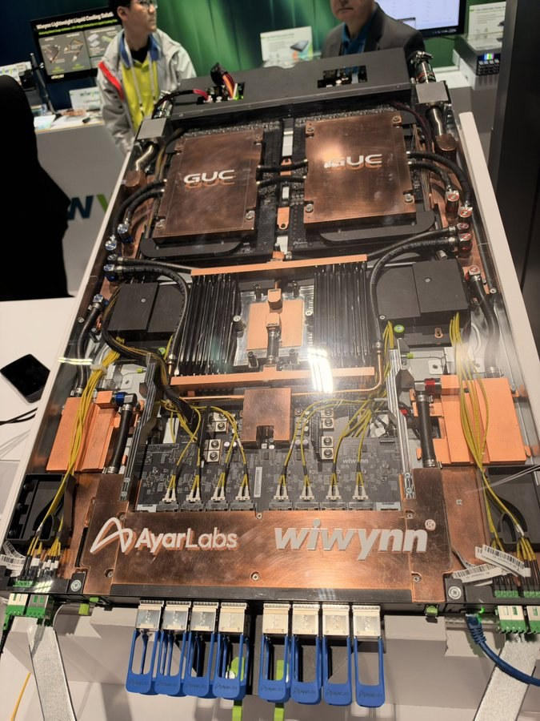
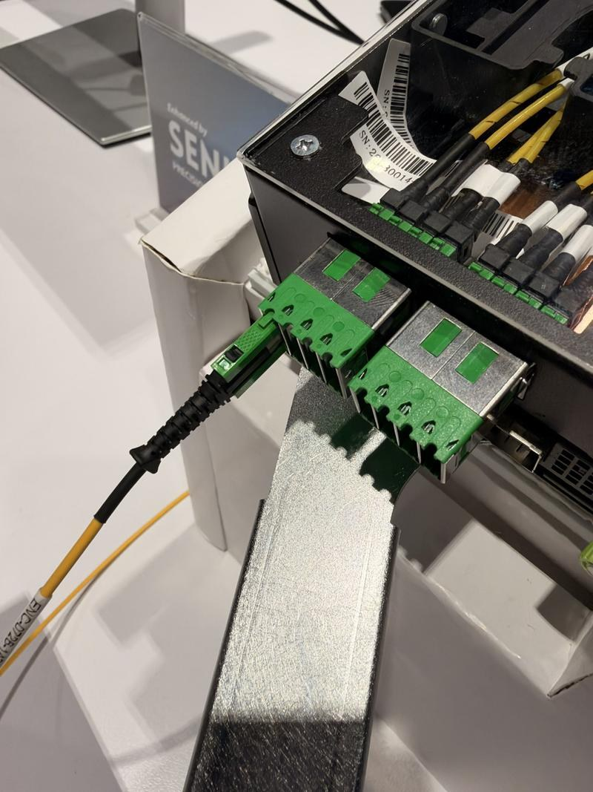

调研纪要 · 2026-10-14 新闻日报
星球 ID: 28855458518111 | 共 304 条帖子 | 精华 83 条
| 查看研究积累
强制同步到研究积累
全部 电子 计算机 电力设备 其他 机械设备 医药生物 传媒 食品饮料 基础化工 非银金融 汽车 商贸零售 通信 宏观策略 国防军工 交通运输 石油石化 家用电器 建筑装饰 银行 有色金属 建筑材料 纺织服饰 社会服务 美容护理 轻工制造 环保
书签
【招商电新】德业股份三季度业绩预告点评20261014
【招商电新】德业股份三季度业绩预告点评20261014
#Q3业绩预计同比大增、环比持平
预计2026年前三季度实现归母净利润42.2-43.2亿元，同增80-84%；扣非归母净利润39.5-40.6亿元，同增73-78%。
预计Q3单季归母15.03-16.03亿元，同增82-94%，环比-1.8%-+4.7%；扣非归母13.80-14.90亿元，同增69-82%，环比-3.0%-+4.8%。
#业绩主要受益于海外市场增长
报告期内，户用储能、工商业储能产品销售收入规模较上年同期显著增长，拉动营业收入同比提升。
公司业务覆盖全球160多个国家和地区，海外收入占比较高。在国际能源市场价格波动加剧、部分地区电力供需趋紧的背景下，海外储能市场需求保持增长，利好公司业绩。
#Q4海外储能有望延续景气，欧洲及新兴市场均值得关注
欧洲方面，7月以来地缘扰动下天然气价格再涨，家庭自主供电诉求提升，叠加部分市场补贴与取消净计量政策带动，户储需求逻辑坚实。据info link，上半年欧洲户储出货15.25GWh，德业排名第四。德国拟自2027年起取消25kW以下分布式光伏固定上网电价补贴，2026年抢装效应亦值得关注。
巴基斯坦、印度及东南亚、非洲等缺电刚需市场，在停电频发、居民电价高企与光储成本下行的共同驱动下，户储渗透率快速提升，也是拉动海外收入高增的重要因素。
📈中信主题策略刘易团队-''AI+载板''主题核心品种【平安电工001359】电子布放量助力Q3单季超预期，定增锚定高端品类产能扩充[玫瑰]
📈中信主题策略刘易团队-''AI+载板''主题核心品种【平安电工001359】电子布放量助力Q3单季超预期，定增锚定高端品类产能扩充[玫瑰]
#Q3业绩拐点确认，电子布开启业绩兑现期
1、Q3业绩超预期：前三季度营收11.31亿元（YoY+27%），归母净利2.41亿元（YoY+20%）；其中，单Q3实现营收4.45亿元（YoY+40%），归母净利1.17亿元（YoY+77%）。业绩开启加速向上阶段，我们预计三季度公司云母主业保持平稳，增量主要由特种电子布业务贡献（同环比预计为数倍增长），电子布开启业绩加速释放阶段。
2、我们预计公司电子布业务有望开启逐月环比向上趋势：①结构上仍有提升空间，包括产能工业布向电子布倾斜，电子布本身产品结构厚布→薄布；②纱布一体化布局成型，预计后续自供比例逐步提升；③T布等有望构筑更大向上弹性期权。
#定增锚定海外基地及高端特种布产能建设
13亿定增加码泰国+高性能电子布，为27–28年放量做前瞻布局：主要投向泰国云母绝缘材料基地、泰国电子布基地、高性能电子布基地。此前公司7月底已公告泰国一期投资约2.1亿元，本次13亿定增把泰国从''一期''升级为''云母+电子布''双产品线的系统性出海基地，同时在国内追加高性能电子布产能——在海外高端布供给格局重塑、贸易与关税扰动加大的窗口期，配合PCB/CCL客户进行就近配套。
☎我们将在明早第一时间邀请公司领导进行Q3业绩及后续定增/产能规划等进行解读，欢迎接入！
⏰时间：2026年10月15日（周四） 上午8:30
加入电话端：
中国大陆 4008108228/4008108128
电话参会人密码： 215836 提问 *1
网络参会:
l.qsh1.com ↗
☎欢迎来电探讨！中信主题策略 刘易/田鹏/王涛/白弘伟
[红包]【华创化工&新材料】#荣盛石化：公司发布业绩预告，26Q1-3归母净利同比+778%至+823%
[红包]【华创化工&新材料】#荣盛石化：公司发布业绩预告，26Q1-3归母净利同比+778%至+823%
[庆祝]事件：公司发布2026年前三季度业绩预告，实现归母净利润78-82亿元，同比增长777.93%-822.95%；实现扣非归母净利润77-81亿元，同比增长620.12%-657.53%。
[玫瑰]炼化一体化龙头盈利弹性释放。公司依托浙石化全球特大型炼化一体化装置，动态优化产品结构，推动“减油增化”落地。26H1化工产品收入712.67亿元，同比增长17.33%；炼油产品收入同比下降60.30%，海外收入同比增长45.34%，加工价差修复与海外成品油市场向好共同推动业绩高增。
[玫瑰]芳烃及聚酯产业链价差持续修复，炼化景气有望延续。截至10月9日，PX-石脑油价差为337美元/吨，PTA现货加工费为819元/吨，POY价格为9850元/吨，周环比上涨350元/吨。公司具备PX、PTA及聚酯化纤一体化产能，有望充分受益于产业链价差改善。
[玫瑰]高端新材料项目加速落地，打开长期成长空间。公司布局EVA、POE、PC、ABS、α-烯烃等高附加值产品，浙石化高性能树脂项目首批装置已投产，金塘新材料项目持续推进；炼化一体化改造提升工程建成后预计每年新增净利润14.1亿元。
[太阳]我们深度研究公司及行业，拥有完善的产业资源，欢迎联系我们交流。
联系人：孙维容/邹骏程
华凯易佰发布业绩预告，前三季度利润高速增长[庆祝][庆祝]
华凯易佰发布业绩预告，前三季度利润高速增长[庆祝][庆祝]
[玫瑰]公司预计2026年前三季度实现营收约61亿元，同比下降 9%；归母净利润2.8-3.1亿元，同比增长457%-517%。扣非口径为2.6-2.9亿元，同比增长650%-735%。前三季度非经常性损益预计约1122万元，低于上年同期的1423万元。
[玫瑰]单三季度预计公司实现营收约21亿元，归母净利润1.1-1.4亿元，相比25Q3的1267万大幅改善。
[玫瑰]三季度公司继续聚焦重点业务及优势品类，推进业务结构调整和资源优化配置，并围绕品牌打造、产品开发及精细化运营持续发力，相关业务在运营效率、盈利能力及经营质量等方面持续改善，精品业务保持良好发展态势。
【华凯易佰】Q3业绩预告超预期，看好盈利上修及估值修复双击~
【华凯易佰】Q3业绩预告超预期，看好盈利上修及估值修复双击~
公司发布三季度业绩预告，预计前三季度收入61亿元，归母净利2.8-3.1亿元，扣非2.6-2.9亿元；其中单Q3收入21亿元，同比-4.6%，环比+2.3%；归母净利1.1-1.4亿元，扣非1.0-1.3亿元，同比大幅转正。
#库存去化、毛利率修复，盈利能力大幅抬升：Q3公司归母净利率5.2%-6.7%，中枢约 6%，较Q2的4.6%环比显著提升。
核心看点：
1）泛品盈利底确认：Q3验证去库周期收官，叠加通拓科技整合扭亏，盈利能力修复至常态水平，是利润基本盘（26年预计贡献3-3.5亿元）。
2）精品增长提速，公司通过外延并购快速拓展精品品类（宠物、母婴、高尔夫运动类等），26 年目标营收同比 + 50%、净利贡献1亿+。
3）AI 赋能估值弹性，公司合作智谱大模型深化 AI 应用，赋能运营效率与投放ROI 提升，作为 AI + 跨境电商核心标的，估值具备抬升空间。
预计公司全年归母净利4-4.5 亿元，当前 PE 约15x，前期受政策情绪影响超跌，随业绩持续验证估值有望修复。
欢迎联系国金商社 于健 15821682853 / 谷亦清
华凯易佰Q3业绩预告：经营效率改善延续，扣非利润表现强劲
华凯易佰Q3业绩预告：经营效率改善延续，扣非利润表现强劲
事件：10月14日，公司发布2026年前三季度业绩预告。
#按整体看，预计2026Q1-3实现营业收入61.0亿元/同比-9.5%；归母净利润2.75亿~3.05亿元/同比+456.61%~517.33%；扣非归母净利润2.64亿~2.94亿元/同比+649.82%~735.09%。
#按单季度看，2026Q3预计实现营业收入约21.0亿元/同比-3.5%，环比增长2.34%，归母净利润1.10亿~1.40亿元/上年同期为0.13亿元，扣非归母净利润1.01亿~1.31亿元/上年同期0.11亿元。
#库存清理基本完毕，重回内生增长轨道。2025年以来，公司持续推进低效库存出清及业务结构优化，存货账面价值由2024年末的18.19亿元下降至2025年末的9.56亿元，降幅达47.4%，2026H1末存货余额为10.17亿元，较2025年末小幅回升，系公司季节性正常备货。与此同时，公司存货跌价准备由2025年末的0.72亿元下降至2026H1末的0.57亿元，库存商品跌价准备计提比例由7.48%下降至5.54%，历史库存压力显著缓解。伴随低效库存逐步出清，公司经营重心由库存调整转向精细化运营与精品业务增长，盈利能力持续改善。2026Q3扣非归母净利率预计达4.8%~6.2%，较上年同期约0.5%显著提升。
#加速布局优质品牌及新兴赛道，培育多元增长动能。2026年以来，公司持续推进外延并购，围绕高端运动、养老康复及电子科技等领域拓展业务布局。1）高端运动：4月，公司通过增资及资产收购方式布局高尔夫品牌FINGER TEN，以易佰网络出资4655万元增资深圳米品盛，取得其70%股权，并通过深圳米品盛旗下香港子公司，以6650万元收购香港纽瑞格持有的存货、电商店铺、无形资产等核心经营性资产。2）养老康复：6月，公司公告收购HOMLAND品牌相关核心经营性资产，切入居家养老辅助设备赛道，标的2025年实现收入约2.93亿元、净利润约2624万元，2026-2027年承诺扣非净利润分别不低于3000/4000万元。3）电子科技：7月，公司公告拟收购万和科技不低于51%股权，标的整体初步估值7亿~9亿元，2025年实现归母净利润约4315万元，进一步向射频技术及电子元器件分销领域延伸。我们认为，公司通过内生经营改善与外延并购双轮驱动，有望持续优化业务结构、拓宽成长空间。
嘉元科技26Q3预告点评：超预期，涨价兑现，利润同环比高增#申万电新
嘉元科技26Q3预告点评：超预期，涨价兑现，利润同环比高增#申万电新
#业绩：26年Q1-Q3归母5.3-5.8亿元，扣非3.6亿元至3.9亿，归母和扣非中值分别为5.5亿/3.75亿；同比增加1257%/3197%。取中值来看，Q3归母为1.7，环比为-34%；扣非为1.95，环比为178%，同比均大增。
#出货：预计Q3出货4.3万吨，环比+20%，持续满产，预计公司目前年化产能达到19万吨，明年预计新增产能3.5万吨，26年预计出货15.7万吨，27年21万吨；
#单吨利润：按照预告中值测算，我们预计Q3经营性利润单吨4k，环比提升500，多重因素带来单吨利润提升：1️⃣产品涨价；2️⃣高端锂电占比&电子箔占比提升带来的asp提升；3️⃣产能爬坡带来的摊薄。预计26Q4和27年公司涨价势能强&高端电子箔进一步放量等带来产品结构持续优化，有望持续提升单吨利润。
预计26-27年利润8亿、12亿，27年PE仅13倍。
锐科激光26Q3业绩点评：主业改善持续兑现，多赛道成长引领价值重估
锐科激光26Q3业绩点评：主业改善持续兑现，多赛道成长引领价值重估
[太阳]#主业景气度拐点向上，#26Q3业绩同比持续高增。公司26Q3实现营收10.25亿元（yoy+21.78%），实现归母净利润0.98亿元（yoy+96.34%），实现扣非归母净利润0.91亿元（yoy+161.13%），26Q3利润延续上半年高增趋势，业绩处于市场预期中上限。我们分析认为，激光器供需格局有序改善，主业价格趋稳，盈利能力未来或有望进一步提升，带动业绩持续高增。
[太阳]#打造激光集团化矩阵，#多主线赛道齐放量。公司10月14日多款重磅新品发布，围绕高端智造、AI、空天通信、医疗、空天·海洋·安防五大赛道推出“激光+X”谱系产品。公司基于母公司激光器品牌，推出睿芯光纤+国神超快+锐威光源+智慧光子四大子板块，拓宽产品应用领域的同时，打通材料-器件-光源-解决方案的完整链路，多赛道有望共振放量。
[太阳]#看好特种内需外贸成长空间。激光装备为无人机反制重要方式，内需外贸潜在列装需求弹性较大，预计后续或成为公司核心增长极之一。
[太阳]#激光器领军厂商，#四大逻辑引领价值重估。1）传统主业竞争格局改善，利润率回升支撑业绩基本面；2）激光反无装备作为十五五特种建设重要领域，内外双驱成长空间广阔；3）特种掺杂光纤系激光器配套刚需，子公司睿芯芯棒及拉丝产能充足且有望持续扩充，量利齐升利润弹性可观；4）玻璃基板及高密度/高多层PCB渗透率提升驱动超快激光钻孔放量，子公司国神绑定头部厂商且扩产顺利，未来有望打造新增长极。
[太阳]#盈利预测及估值。考虑到下游多领域需求释放，叠加公司盈利能力提升，预计26-28年归母净利润分别为3.0、4.6、6.4亿元（不排除上修），对应PE分别为70、46、33X，维持“买入”评级。
【兴证医药】Arrowhead公布其MAPTCNS递送siRNA ARO-MAPT的I/IIa期临床中期数据
【兴证医药】Arrowhead公布其MAPTCNS递送siRNA ARO-MAPT的I/IIa期临床中期数据
该研究计划纳入约64名健康志愿者及最多48名早期AD患者，本次披露来自健康志愿者队列。有效性方面，2.1mg/kg、6.4mg/kg剂量组分别于D1、D8、D15接受3次皮下注射，至D105时脑脊液（CSF）总Tau蛋白（t-Tau）平均降幅分别达到40%、69%；12.8mg/kg剂量组仅于D1、D15接受2次给药，D105时t-Tau平均降幅达到73%，个体最大降幅达到85%，呈现明显剂量依赖性。D105距离末次给药超90天，Tau蛋白仍维持较深抑制，提示有望实现每季度甚至更低频率给药。
安全性方面，ARO-MAPT总体耐受性良好，绝大多数治疗期间不良事件为1级或轻度，未出现严重治疗期间不良事件、死亡或因不良事件停药，也未观察到持续性贫血或神经行为相关不良事件。
公司预计2027年更新临床数据，同时推进MAPT相关额颞叶痴呆（FTD）及进行性核上性麻痹（PSP）的临床开发。
对比BIIB808Ib期临床，该临床纳入46名轻度AD患者，高剂量组在治疗及后续观察期间，脑脊液总Tau蛋白在扩展研究结束时，60mg及115mg队列分别达到67%、63%的平均降幅。
资料来源: ARWR公司公告
注：资料来源为公司公告，仅为公开资料整理，不构成投资建议
联系人：高尹伟业13761718734/杨希成/黄翰漾/孙媛媛
劲方医药：G12D抑制剂首个海外多瘤种临床数据更新【招商医药】
劲方医药：G12D抑制剂首个海外多瘤种临床数据更新【招商医药】
[红包]今天劲方海外合作伙伴Verastem披露 KRAS G12D抑制剂VS-7375/GFH375首个海外多瘤种临床数据更新，明确900mg QD为后续海外单药推荐剂量。PDAC数据最为突出：900mg QD在2L患者中确认ORR达到50%（4/8），2L+患者确认ORR为41%（9/22），并出现2例CR；6个月PFS率和OS率分别达到67%和80%，16/22例患者仍在治疗。ctDNA及CA19-9亦出现深度下降，进一步验证GFH375在KRAS G12D突变PDAC中的单药活性。
[玫瑰]剂量探索显示，900mg较600mg观察到更深肿瘤缩小，同时耐受性保持良好。48例900mg QD单药患者中，因AE停药率仅2%，中位相对剂量强度97%，3级TRAE发生率10%，未观察到明显口腔炎、骨髓抑制及肝毒性，为后续前线及联合治疗拓展提供基础。
[玫瑰]NSCLC方面，600mg QD在23例2L+患者中确认ORR达到43%，6个月PFS率72%；一线联合治疗8例患者初步ORR达到75%。CRC方面，900mg联合EGFR单抗在3L+患者中初步ORR为33%。整体来看，海外PDAC、NSCLC及CRC数据与国内早期结果方向一致，进一步强化GFH375的多瘤种开发潜力。
[玫瑰]开发进度方面，Verastem已与FDA就1L转移性PDAC III期方案达成一致，计划2026年底启动TARGET-D 301，并同步推进1L CRC及1L NSCLC关键研究。Verastem同日宣布Michael P. Bailey将于2027年起接任CEO，其具备AVEO商业化及并购经验，管理层调整与GFH375全面进入全球注册开发阶段相匹配。
（联系人：梁广楷/许菲菲/焦玉鹏/侯彪）
[红包]【劲方医药-B】合作方Verastem公布GFH375(KRAS G12D)美国临床数据
[红包]【劲方医药-B】合作方Verastem公布GFH375(KRAS G12D)美国临床数据
[烟花]三大瘤种疗效亮眼
[太阳]PDAC：900mg qd单药，2L+cORR 41%(9/22)（两例CR），6mo PFS率 67%，OS率80%；2LcORR 50%(4/8)；3-4LcORR 36%(5/14)。【6236针对2L G12D突变患者ORR仅24%，9805针对2L+ uORR=30%】
[太阳]NSCLC：
[玫瑰]600mg qd单药，2L+（含紫衫类经治）cORR 43%(10/23)，6mo PFS率 72%；
[玫瑰]600mg+K+化疗，1L ORR 75%(6/8)；
[玫瑰]【9805 2L+ORR 52%，1L+三药SOC ORR为82%】375入组了紫衫经治患者，且900mg剂量组正在II期临床中探索
[太阳]CRC：
[玫瑰]900mg+EGFR，3L+ ORR 33%(2/6)
[烟花]900mg安全性优异（n=48）
TRAE致停药率2%；减量6%；中断15%；≥3级TRAE 10%，≥3级 GI TRAE 2%
[烟花]后续数据规划
[玫瑰]2026年底：CRC 900mg联用成熟数据；PDAC 600mg+西妥昔数据
[玫瑰]27Q1：PDAC 1L 联合GnP
[玫瑰]27Q2：PDAC 2L II期
[玫瑰]27H2：NSCLC 2L II期（包含900mg组）、CRC 2L II期
[烟花]后续临床规划
[玫瑰]1L PDAC 3期：2026年底启动
[玫瑰]1L NSCLC 3期：26年底和FDA开会，27H1 FPI
[玫瑰]1L CRC 3期：26年底和FDA开会，27H1 FPI
[烟花]持续推荐劲方医药，关注明天国内GFH375联用数据发布、ESMO期间Pan-RAS数据公布
[庆祝]如需临床数据对比表格请联系我们~
[拥抱]联系人：申万宏源医药 张静含/陈田甜
兴证医药[太阳]PDAC美国数据900mg更高剂量展现更好PFS趋势，本次有两例CR展现更好的缓解深度，1LPDAC三期联合西妥昔或者化疗，明年初联合化疗1L数...
兴证医药[太阳]PDAC美国数据900mg更高剂量展现更好PFS趋势，本次有两例CR展现更好的缓解深度，1LPDAC三期联合西妥昔或者化疗，明年初联合化疗1L数据发布，1LCRC和1LNSCLC方案沟通中
劲方医药合作方披露G12D管线多瘤种I/II期美国数据
10月14日，劲方医药合作方Verastem公布VS-7375（KRAS G12D抑制剂）I/II期临床研究单药及联合治疗G12D突变多瘤种，TARGET-D 101美国研究数据更新。
-- mPDAC：中位2L（1-3）经治，900mg QD单药，2L患者cORR=【50%（4/8）】，2L+患者cORR=41% (9/22)，其中包含1例cCR和1例uCR，3/4L患者cORR=36% (5/14)；
2L+患者6个月PFS率为67%，6个月OS率为80%.
#对比6236：2L G12D ORR=24%（23/95）、3L+ G12X ORR=21%；
此前25年600mg中国数据，2L ORR=58.3%，3L+ ORR=36.2%，mPFS=5.52m。
-- mCRC：中位2L（2-3）经治，900mg QD联用EGFR疗法，3L+患者cORR=33% (2/6)；
-- NSCLC：中位1L（1-3）经治，600mg QD单药，26年7月前治疗的ITT人群 2L+患者ORR=43% (10/23)，6个月PFS率为72%；
600mg QD联用铂+K药，1L患者ORR=75%（6/8）；
#26年WCLC中国研究，中位1L（1-4）经治，600mg组ORR=59%（42/71）；
-- 安全性：900mg组（n=48），AE停药率=2%，G3 TRAE=10%，G3胃肠道TRAE为恶心=2%；无G3皮疹、无黏膜炎或口腔炎；G3中性粒减少=2%，无G3贫血或血小板减少；
600 mg组、900 mg组与西妥昔单抗联合用药时，未观察到与抗EGFR治疗重叠的不良事件。
关键里程碑：
26年底前：公布900mg联用西妥昔治疗mCRC成熟数据、600 mg联用西妥昔mPDAC初步数据；与FDA沟通1L mCRC、1L NSCLC III期研究设计；启动1L mPDAC III期；
27年Q1：公布联用GnP治疗1L mPDAC初步数据；
27年Q2：公布2L PDAC初步数据；
27年H2：公布2L NSCLC、2L CRC II期初步数据；
资料来源：Verastem公告、ClinicalTrials官网；
注：仅为公开资料整理，不构成投资建议
【国盛医药张雪·李慧瑶团队】小核酸行业动态跟踪（4）：皮下注射 siRNA 实现脑递送突破，ARO-MAPT 脑脊液 Tau 蛋白平均降低 73%
【国盛医药张雪·李慧瑶团队】小核酸行业动态跟踪（4）：皮下注射 siRNA 实现脑递送突破，ARO-MAPT 脑脊液 Tau 蛋白平均降低 73%
[玫瑰]Arrowhead Pharmaceuticals 于 2026 年 10 月 14 日公布ARO-MAPT 的 Ⅰ/Ⅱa 期临床中期结果：健康志愿者数据显示，皮下注射siRNA后，脑脊液总 Tau 蛋白平均降低 73%，最大降幅 85%，且最后一次给药 90 天后仍维持显著抑制。这项研究的亮点不仅在于Tau蛋白降低，更在于通过皮下注射实现了具有药效学意义的中枢神经系统siRNA递送，为突破血脑屏障（BBB）提供了新的临床证据。
[玫瑰]ARO-MAPT是一款靶向MAPT基因的siRNA药物，拟用于阿尔茨海默病（AD）及其他Tau蛋白病。其作用机制是降解MAPT mRNA，从源头减少Tau蛋白生成。安全性方面，ARO-MAPT总体耐受性良好，尚未报告严重的治疗期间不良事件。但当前数据仅证明健康志愿者脑脊液Tau蛋白显著降低，尚不能证明能够改善AD患者的认知功能或延缓疾病进展。
[玫瑰]ARO-MAPT采用Arrowhead的TRiM递送平台，通过转铁蛋白受体1（TfR1）介导的跨胞转运实现脑递送。其核心设计为"TfR1 靶向配体—共价连接臂—siRNA"。临床前研究中，ARO-MAPT 在非人灵长类动物多个脑区实现约 70%–80% 的 MAPT mRNA 降低，包括海马、尾状核及壳核等深部脑区。
[玫瑰]目前全球中枢神经系统小核酸药物主要沿两条路线开发：一是通过鞘内注射绕过血脑屏障（BBB），二是通过靶向递送实现系统给药后跨越 BBB。
值得重点关注的项目包括：
🌟Denali：最直接的跨BBB竞争对手。 DNL628同样靶向MAPT，但采用ASO及工程化Fc结构域组成的OTV递送平台，通过TfR相关转运机制实现静脉给药后的脑递送。2026年3月启动Ⅰb期患者给药，预计2027年上半年公布初步临床生物标志物数据
🌟Biogen/Ionis：Tau靶点临床证据更领先。 Diranersen（BIIB080）在2026年公布的Ⅱ期CELIA研究中，使CSF总Tau平均降低50%–65%，并观察到Tau PET病理信号减少和部分认知终点改善趋势。尽管研究未达到预设的主要剂量反应终点，但已提供患者层面的潜在疗效信号。其局限在于需要鞘内注射。
🌟Alnylam：布局多个中枢siRNA靶点。 Mivelsiran靶向APP，已进入Ⅱ期；ALN-5288靶向MAPT，正在开展Ⅰ期临床。两者均采用鞘内递送，体现了Alnylam在中枢RNAi领域的持续布局。
🌟此外，OliX分别与Vect-Horus、Key2Brain开展siRNA脑递送合作，尝试将BBB穿梭平台与siRNA偶联。其中Key2Brain采用TfR靶向路线。这些项目尚处于早期研究或技术验证阶段。
[玫瑰]从竞争格局来看，小核酸进入中枢神经系统已经不再是唯一的技术难题，如何实现更便利、更均匀且更安全的脑递送正成为下一阶段的竞争重点。鞘内注射路线已经获得临床验证，已有Tofersen获批上市；而系统给药跨BBB的技术路线，正从动物实验走向人体药效学验证。ARO-MAPT 此次取得 73% 的 Tau 蛋白降低，进一步支持 TfR1 靶向 siRNA 递送的可行性，但患者临床获益仍需进一步验证。
[咖啡]欢迎联系：国盛医药 张雪/李慧瑶/陈怡晓
❗【天风电新】NV确认采用PTFE方案，重视相关供应链-1014
❗【天风电新】NV确认采用PTFE方案，重视相关供应链-1014
———————————
今日，OCP大会NV展出PTFE-NVLink板卡和相关供应商：PCB-台郡科技、景旺、深南、迅达、胜宏；CCL-生益、台虹。
我们认为此次展出说明PTFE确认在switch tray中使用。此前供应链反馈PTFE有较大概率用在Rubin ultra的交换板，预计26Q4出最终结果，目前样品已做出无太大问题。
根据产业链反馈，我们预计Switch Tray具体方案为：
CCL层采用PTFE 树脂 + 二代布 + HVLP4 铜箔。
PP层采用碳氢树脂。
此外，上周产业链反馈的NV在测试以碳氢为主的无布CCL仍在测试中。
总结：PTFE和碳氢均是当前NV提升电性能的迭代方向，二者有重叠有竞争，重叠体现在PP层确认碳氢，竞争是指有可能CCL层存在竞争（目前看二者均有概率更大）。
#投资建议：
1、 PCB：首选【深南】，其次景旺、胜宏。投资人看到这个名单，第一反应#景旺、胜宏第一次出现，其实真正值得注意的是深南，市场担忧的国企（曾有军工业务，已剥离至中航体内其他兄弟单位）。
2、 CCL：核心票【生益】，PTFE和碳氢路线双卡位。其次【华正】，PTFE同样跑的快、市场没预期。
3、 上游：材料利好硅微粉，建议终端关注【联瑞新材】、【国瓷材料】，设备热压机-【合锻智能】。
【浙商电子】涨价链PCB板块点评：三季度盈利加速释放，继续看好涨价链持续性
【浙商电子】涨价链PCB板块点评：三季度盈利加速释放，继续看好涨价链持续性
#崇达技术：三季度利润环比大幅增长，客户结构优化折射供需格局改善。公司预计2026年前三季度实现归母净利润5.95—6.85亿元，同比增长89.73%—118.43%。预计第三季度实现归母净利润4.43—5.33亿元，较第二季度的1.1979亿元环比增长269.62%—344.75%。
公司持续将产能向高价值客户倾斜，客户及订单结构进一步优化，高端产品出货占比明显提升；各生产基地产能利用充足，叠加工艺迭代、良率改善和降本增效，推动盈利能力修复。我们认为，客户结构优化的背后，本质上是供需格局改善赋予企业更强的订单选择与产能配置能力，高价值订单占比提升正在转化为利润弹性。
#金禄电子：三季度订单均价环比提升约51%，调价与结构优化共同驱动量利齐升。公司预计第三季度实现营业收入10.30—10.80亿元，同比增长95.18%—104.65%；归母净利润1.24—1.40亿元，同比增长1266.91%—1442.76%，环比第二季度增长166.18%—200.42%。
公司把握PCB行业供需结构性失衡机遇，深化汽车大客户拓展，加快算力基础设施、人工智能及卫星通信等领域客户导入，并有序剥离低毛利、小体量业务；同时，在覆铜板、PP等原材料大幅涨价背景下，全面、有效开展产品调价。第三季度承接订单平均单价环比第二季度增长约51%。
#继续看好PCB涨价链的持续性。预告共同指向供需改善、订单筛选与产品结构升级驱动的盈利修复，通过向高价值客户产能倾斜，以及直接体现产品调价与订单均价上行。涨价逻辑正由成本传导进一步延伸至订单质量改善和利润兑现。后续在高价值需求持续、产能维持较高利用水平的条件下，企业有望继续通过调价、优化客户及产品结构消化成本压力，高均价在手订单的逐步交付亦有望支撑后续盈利，继续看好PCB涨价链的持续性。
风险提示：新增产能集中释放；原材料价格波动；行业竞争加剧。
欢迎联系 浙商电子田发祥17317150564
光通信迭代进展：
光通信迭代进展：
一、CPO 商业化与技术代际（CPO进度并没实质性放缓，放缓的原因是产线工序调整，萝卜相关设备还新研发了，而且有一点好的是，cpo属于英伟达自身绑定的体系，自己生态推行的更快，更快的和性能更好的是第二代Spectrum系列）
商业化进度：CPO 领域的外置光源 ELS 已开始出货，商业化进展明确，已有实际订单落地。目前出货的均为第一代 CPO 产品 Quantum（1.6T 速率）。第二代 Spectrum（3.2T 速率）预计 2027Q1 小批量出货，采用 36 芯 DFU 方案，已有样机在测试，产线初步搭建完成。今年四五月份的所谓''CPO 延迟''实为产线工序调试，并非项目延期，预计本季度末出测试结果，2027Q1 开始小批量试运行。
代际共存：第一代产品届时仍会继续使用，但量不大；第二代主要用于 Scale-up 或 Scale-out 连接，视客户需求而定。
二、NPO 与 OCS 进展（符合目前的NPO进展，目前的定位是英伟达对于scale up阶段的需求，对于光交换机的需求上来了，那么cpo制造的慢就需要npo阶段性去补充这部分空余部分，但NPO属于现阶段的临时抱佛脚，制造工艺和标准并未成熟，但是相关的光器件是通用的，这部分无论n还是c，通胀增量逻辑都成立）
NPO：目前停留在演示阶段，行业标准尚未确立，订单稀少，以样品和演示为主。
6.4T NPO 展示方案基本采用外置光源、保偏光纤连接、内部集成 DSP 并水冷散热；
3.2T 同时存在内置和外置光源两条路径。
技术结构差异：3.2T 内置光源方案类似硅光模块，用 100-200mW CW 激光器通过透镜隔离器耦合到 PIC，经 32 芯光纤输出；外置方案结构与 CPO 更接近，需通过保偏光纤耦合光源。6.4T 下若单通道达 200G，ICU 端口数预计翻倍。
标准不兼容：CPO 标准不能复用在 NPO 上，二者封装形式不同——CPO 用 3D 封装，NPO 通过连接器插在 PCB 板上。
OCS：谷歌主导，2026 年需求约 1.8-2 万台（自产约 1.3 万台，剩余外购）；2027 年翻倍至约 3.8-4 万台。NVIDIA 2026Q4-2027Q1 将测试液晶、MEMS、波导等多种方案，预计 2027Q4 才可能有小批量订单，2028 年随新架构上量。
Lumentum 和 Coherent 的 OCS 产品仍在验证阶段，量级小。
三、出货量与物料预测
2027 年 CPO 出货约 10-12 万台；2028 年增长 3-4 倍至 40-50 万台；2029 年增至 60-70 万台（乐观情境下）
厂商要求备料量约为需求的两倍，以对冲良率问题和技术路线不确定性
若年产量 10-12 万台、每台用 32 个 DFU，则需超 300-400 万个 DFU，考虑低良率，单一供应商需生产超 1,000 万颗，不现实，故需多供应商格局（单一高意就找了hdg，天孚，光库，jpt，tcg），康宁（也会找代工链，他们很明显指出的就是这部分是人力密集型加工，需要人力+设备共同投入），所以这条链路上的fau升级成dfau逻辑也是成立的（纯fau的会降低毛利，天孚调研说过，因为dfau是开放代工体系，需要外购部分原材料，而天孚的fau是全自供，升级成dfau会降低毛利但提升价值量）这部分利好新进入者。包括mpo和mmc的通胀迭代逻辑也是成立的。
四、核心观点
DFAU 制造难度显著高于 ELS，多芯 DFAU 良率普遍偏低，能成功制造的厂商寥寥无几
可插拔设计：因故障通常发生在光纤耦合处而非 PIC 芯片，只需更换 DFAU，无需废弃高价值 PIC 模块，降低维修成本
在 NPO 方案中，光模块厂商话语权更大（2D 封装与硅光模块结构相似）；但 200G 单通道时高速 PD 仍依赖北美供应商
📑📡OCP 全球峰会 NPO 相关核心要点
📑📡OCP 全球峰会 NPO 相关核心要点
🔗互联已经成为行业瓶颈，NPO 是具备潜力的解决方案，我们在本次大会观察到行业对于 NPO 的讨论与关注度持续提升。
🗓️在 2026 年 OCP 全球峰会的第二天，IPEC 光互联专题研讨会围绕 NPO 展开集中探讨。
👥源讯光子、Lightcounting、阿里巴巴、Meta、甲骨文、微软、Ciena、Ligent、真光、Lumentum、Lumilens、英伟达、华为等行业参与方，均在会上发表了对于 NPO 的相关观点。
💡行业已经形成共识：互联能力，而非单纯算力，正转变为首要瓶颈。
🔍近封装光学（NPO）将光信号转换环节向计算芯片侧靠拢，目标实现更优的信号完整性、带宽以及能效水平。
📐OpenCPX 标准明确致力于打造跨供应商通用的机械、电气、光学、散热与管理接口，为产业生态提供可落地的共用实现框架，而不仅仅是宽泛的架构构想。
⚖️但我们同时观察到行业存在争议：可插拔式 NPO 对比 CPO，是否可以带来实质性更强的灵活性与可维护性。
⚠️市场对于 CPO 的一大核心顾虑是，一旦光器件发生故障，有可能需要直接报废整套 ASIC 组件。
✨综合来看，我们观察到市场对于 NPO 的讨论热度与兴趣不断抬升，在我们看来，这意味着未来 12‑18 个月 NPO 商业化加速的可能性进一步提高。
📑📡OCP 大会 —— 光通信、封装、存储器与电力成为焦点
📑📡OCP 大会 —— 光通信、封装、存储器与电力成为焦点
🤖AI 基础设施创新正在向机架级协同优化方向转变，智能体 AI 拉动推理算力需求，带来光互联、先进封装、存储器架构、供电领域的投资机会。
🎯核心要点
🔌光互联：CPO 向着机架级规模化部署推进，可插拔光模块依旧具备横向扩展优势。
📦定制 ASIC 与封装：联发科观察到 3.5D 集成方案获得更多采用，2.5D 封装已经接近物理极限。
💾存储器架构：SK 海力士借助 MARS 架构与 HBF 技术，着力解决推理算力容量与 KV 缓存瓶颈。
⚡电力与散热：单机架功率突破 200kW，加速推动 800V 直流供电、垂直供电方案以及液冷技术落地。
🔍CPO 方面：光互联规模化落地距离现实越来越近。
🖥️一套搭载 64 颗 XPU、支持 CPO 的计算机架完成演示，展现出加速器之间直连光链路的发展潜力。
📶随着单通道 200G 电信号逐步逼近物理极限，光互联的规模化部署将愈发重要，对于定制化 XPU 产品尤其如此。
✅但凭借可维护性与成本优势，可插拔光器件仍将在横向扩容场景下保持出货量领先地位。
⚠️封装良率、光纤对准、可靠性依旧是 CPO 商业化落地的核心挑战。
🧩先进封装：行业发展正在超越传统 2.5D 方案。
📐联发科提到部分定制 ASIC 设计已经接近 10 倍光罩尺寸。
💡3.5D 集成方案相比传统 2.5D 互联，可实现约 10 倍的芯片间能效提升。
📈管理层预计未来 3‑5 年 3.5D 集成的渗透率将持续上行。
🔧联发科同时强调定制化 HBM、专用芯片间互联接口、DTCO 设计协同优化的重要性。
📊随着系统复杂度持续抬升，先进封装、定制 ASIC 设计服务迎来结构性机会。
💾存储器：带宽之外，存储容量同样变得至关重要。
📂SK 海力士推出 MARS 解耦内存架构。
⚡借助共享 KV 缓存访问而非重复计算，该架构可将首 token 生成耗时提升 3‑5 倍。
🔎HBF 目标实现约 HBM 一半的带宽，但容量达到 HBM 的 14 倍，样品预计 2028 年初推出。
🧠推理工作负载将越来越需要融合 HBM、DRAM、NAND 的异构内存架构，存储器应用范围有望跳出传统 GPU 外挂 HBM 的范畴。
🔥电力与散热：成为下一级别的系统层面约束条件。
❄️6 千瓦级双面冷板、垂直供电、先进微通道冷却方案完成演示，凸显散热压力持续加剧。
🔋向 800V 直流供电转型，能够降低电能转换损耗、提升功率密度。
🖥️与此同时，AMD Helion 智能体 AI 机架架构表明，在 GPU 基础设施之外，CPU 的增量需求同样会得到拉动。
🏗️供电能力、先进冷却、系统集成能力，将会成为越来越关键的差异化竞争要素。
美国通胀升至3.7%，超出预期
美国通胀升至3.7%，超出预期
9月CPI环比上涨0.6%，符合预期，而年度通胀率达到3.7%，高于预期的3.6%。
核心CPI上涨0.3%，高于预期的0.2%，年度核心通胀率达到2.6%，高于预期的2.5%。
汽油价格飙升9.1%，能源价格上涨5.2%，实际收入下降0.5%
今日纯债基金净申购，净申购强度51.53%；固收+净赎回，净赎回强度-24.31%；可转债基金净赎回，净赎回强度-36.42%；权益基金净赎回，被动净赎回，净赎...
今日纯债基金净申购，净申购强度51.53%；固收+净赎回，净赎回强度-24.31%；可转债基金净赎回，净赎回强度-36.42%；权益基金净赎回，被动净赎回，净赎回强度-8.18%，主动净赎回，净赎回强度-7.29%
【国盛计算机】AI速递1014
【国盛计算机】AI速递1014
🔥算力：
1️⃣#紫光股份： 发布三季报业绩预告，预计前三季度归母净利润24.2‑30.6亿元，同比 +72.38%-117.97%，扣费归母净利润21.0-27.4亿元，同比+43.84%-87.68%。（来源：Wind）
🔥大模型：
1️⃣#Anthropic： 将于当地时间周三召开Pre‑IPO 投资者日，将公开披露第三季度营收数据。（来源：财联社）
🔥端侧AI：
1️⃣大模型原生智能体手机STEPX Neo发布，搭载智能体原生操作系统Step AOS 1.0与个人智能体阶跃Amoo，阶跃终端已和支付宝、腾讯、携程、高德、美团等企业或产品在多领域实现底层生态打通。（来源：新智元）
2️⃣苹果发布Apple HomeView家庭智能中控，包含音乐播放、视频通话、家庭监控及智能家居管控等功能。（来源：央视财经）
联系人：孙行臻/徐瀚/李纯瑶/王心悦
【中信制造】PI开放模型API，探索模型服务商业化
【中信制造】PI开放模型API，探索模型服务商业化
📌事件Physical Intelligence（PI）宣布推出Pi API Beta，向外部机器人企业提供模型微调和云端推理服务。
1️⃣商业模式：客户上传机器人数据，PI负责模型微调、算力及推理基础设施，客户通过API调用适配后的机器人模型。相比此前开源模型权重，此次开始尝试将具身基础模型能力转化为标准化服务。
2️⃣场景验证：合作案例覆盖重型机械、工业操作及食品处理等领域。其中，Actor的无人驾驶装载机已在真实商业项目中完成铲料与装车；Almond使用Pi API迭代4天后，实现双臂机器人零件去毛刺操作。
3️⃣部署方式：多数早期合作项目采用云端推理，PI也披露部分项目存在网络连接问题。目前尚未公布API收费标准、统一任务成功率及规模化部署数据。
📌我们认为，此次进展值得关注的核心是PI开始验证“通用动作预训练+客户数据微调+云端推理”的商业模式。后续需要观察跨本体模型复用能力、客户部署成本，以及API能否形成持续收入。
[红包]芒果超媒：AI艺人参演AI剧《 》观感更新【中信传媒】
[红包]芒果超媒：AI艺人参演AI剧《
了不起的朋友 ↗ 》观感更新【中信传媒】
《
了不起的朋友 ↗ 》由芒果5位AI艺人参演，整体人物辨识度较高，场景呈现自然真实，尤其城市生活场景的烟火气较为突出。作品能够在较短篇幅内交代相对完整、有张力的剧情及人物个性。结合前期AI艺人宣发片，也能感受到艺人形象的真实性，和与所饰角色之间的反差。剧集在分镜设计、叙事节奏及人物情绪的细腻表达上，有进一步提升空间。
我们认为，该剧提供了AI长篇内容落地的另一条观察路径，即以AI艺人为载体，串联宣发、剧集及后续内容运营，有望形成更鲜明的形象和用户认知，并向音乐、综艺及品牌合作等场景延伸，带来更加持续的运营空间与影响力。AI技术迭代下，与专业制作能力结合，AI内容料将延伸至更丰富的形态。
欢迎领导交流，持续关注AI影视产业趋势及相关投资机会~
详询：中信传媒 叶敏婷/林圳杭/卞榛
#紫光股份：前三季度归母预增72%-118%，AI智算需求持续释放【国海计算机】
#紫光股份：前三季度归母预增72%-118%，AI智算需求持续释放【国海计算机】
🔥#前三季度归母净利润预增72%-118%，Q3单季度归母同比-30%至+146%
✔2026年前三季度公司预计实现归母净利润24.20-30.60亿元，同比+72.38%至+117.97%；扣非净利润21.00-27.40亿元，同比+43.84%至+87.68%。主要系公司把握AI智算及国产化市场机遇，叠加新华三持股比例提升、财务费用减少等。
✔Q3单季度预计实现归母净利润2.53-8.93亿元，同比-30.3%至+146.0%；扣非净利润2.26-8.66亿元，同比-33.8%至+153.3%。
🔥#AI服务器+智算网络持续拓展，智算与国产化驱动业务规模扩大
✔公司预计前三季度营业收入实现快速增长，主要系人工智能需求持续释放、智算及国产化领域业务拓展，同时海外业务规模扩大、供应链交付能力提升。2026H1公司营收同比+33.93%，核心子公司新华三实现收入499.75亿元，同比+37.28%，其中国内政企市场收入438.67亿元，同比+41.35%，AI算力建设及政企数字基础设施需求构成重要增长动力。
✔公司持续完善AI基础设施产品矩阵，服务器侧推出UniPoD S80000系列超节点，覆盖多种规模的智算集群；网络侧布局102.4T智算交换机，以及CPO/NPO等高速光互联技术，覆盖Scale-Up、Scale-Out及Scale-Across互联场景。随着AI服务器、数据中心交换机等产品持续拓展，有望进一步受益于国内智算基础设施建设。
🔥#新华三持股提升增厚归母利润
✔2026年5月末，公司完成新华三6.98%股权收购，持股比例由81%提升至87.98%，Q3完整体现新增持股比例对归母利润的贡献。同时，原新华三少数股权收购义务对应的金融负债到期，不再计提相关利息费用，推动利润同比改善。
✔前三季度预计产生非经常性收益约2.7-3.7亿元，上年同期为非经常性损失0.56亿元，主要系新华三股权交易相关收益。随着相关交易于5月末完成。
🔥＃预计2026/2027净利润35/50亿元、目前股价对应PE约22/15倍。
☎️国海计算机·刘熹/朱谞晟
小米集团9月金股推荐：韧性筑底，右侧在即
小米集团9月金股推荐：韧性筑底，右侧在即
#风险回报比高，上行空间和积极信号优于下行空间。基于SOTP估值，给予主业26E净利润334亿*25XPE + 汽车收入1200亿*0.7XPS + AI暂不估值，目标市值9000亿+，空间50%以上。
#成本上升、需求Beta等不利因素充分预期且边际都在改善。手机端控量保价，ASP连续创历史新高，近期上修全年毛利率预期1pct到9%。IoT方面，上一轮国补造成高基数窗口在26H2退出，结合出海加速，26H2有望恢复同比增长。汽车方面，整车Beta不利预期出清+澎程新车系26Q4蓄势待发。左侧预期有望抢跑报表净利润回升(预计在26Q4/27Q1)。
#AI/芯片等叙事强化可见度高。Mimo的模型能力已跻身主流实验室梯队，已经通过Token Plan/API开始商业化。自研芯片完成旗舰SoC第二代、3D-DRAM端侧推理卡、高算力智驾芯片（明年上车）的全面集结。端侧AI OS+Agent权限+数据模型+自研芯片的全栈优势仍被显著低估。
宝鼎科技三季度业绩拆解及未来判断
宝鼎科技三季度业绩拆解及未来判断
公司预告Q3业绩中枢2.2e，其中CCL业务1.7e，黄金业务0.5e，估计9月单月利润0.5e，10月近1e利润
#我们预计12月单月利润有望达到1.2e，对应27年14.5e，加上黄金业务2e利润，整体27年利润有望达到16.5e（未考虑27年涨价贡献）
#期权：hvlp铜箔持续突破，规划2000t，1/2代持续出货，3/4代认证突破中
目前看27年估值10x出头，未来eps与pe都有上修可能。
美亚光电：色选机完美对标龙头泰禾智能，老干妈AI挑辣椒赚54亿营收创新高！ ＃未知来源
美亚光电：色选机完美对标龙头泰禾智能，老干妈AI挑辣椒赚54亿营收创新高！ ＃未知来源
————————————
1、#老干妈AI挑辣椒刷屏，食品AI分选需求爆发。老干妈AI视觉质检全车间上线，高速相机0.3秒扫描、气流即时剔除坏果，拣椒工从600人减至48人，不良率降至0.02%，2025年营收54亿创新高。#AI质检替代人工成行业样板工程，色选设备需求加速。
2、色选机龙头，#完美对标泰禾智能。公司为国内首家自研色选机企业，拥有亚洲最大色选机基地，2021年色选机收入10.56亿元，接近泰禾、中科、安晶龙三家总和。#辣椒分选专案搭载选把算法，单板产量0.5-1吨/小时，龙头地位稳固。
3、#AI+医疗双轮驱动，成长空间打开。色选机已从光电演进至深度学习、AI边缘计算，覆盖近500种物料、出口100多国；医疗影像（口腔CBCT、脊柱手术机器人）打造第二曲线。#食安AI+医疗双主业，估值重估空间大。
浙商机械 10月金股【华通线缆】2026Q3归母净利3.2-4亿元，同比增长165%-232%，持续推荐！
浙商机械 10月金股【华通线缆】2026Q3归母净利3.2-4亿元，同比增长165%-232%，持续推荐！
#2026年前三季度： 预计实现归母净利4.8-5.6亿元，同比增长87%-118%。
#2026Q3： 预计实现归母净利3.2-4亿元，同比增长165%-232%。
业绩增长主要系安哥拉电解铝产能及销售释放，一期12万吨已达满产状态。铝业板块利润率较高，有效拉动公司整体盈利水平提升。公司电解铝阿尔法属性逐步显现，二期24万吨投产后将进一步大幅增厚业绩。
[太阳]核心逻辑：非洲电解铝项目开始放量，新兴业务打开成长空间！
1、公司“线缆、油气、铝业”三业鼎立，并积极布局新兴业务，未来不仅仅是电解铝，估值有进一步提升潜力。
2、预计2026-2028年公司归母净利润为7.9、20.2、30.8亿元，同比增长176.6%、155.9%、52.3%，对应PE分别为22、8、6倍。如考虑未来项目，业绩有望进一步超预期。
风险提示：电解铝价格大幅波动
☎浙商机械 王华君18610723118 /陈姝姝18810356992
珠免集团：体外23%免税股权由华发系转至格力系，国资整合进一步推进，后续关注资产注入进展
珠免集团：体外23%免税股权由华发系转至格力系，国资整合进一步推进，后续关注资产注入进展
[庆祝]公告#体外23%免税股权转入格力体系，但尚未注入上市公司。
华发集团旗下城建集团拟将持有的珠海免税23%股权，以31.72亿元转让给格力集团旗下康格投资，上市公司珠免集团放弃本次股权转让的优先购买权。
交易完成后，珠免集团仍持有珠海免税51%股权，维持控股并表；康格投资直接持有23%，另外26%股权仍由其他股东持有。
[庆祝]#结合此前上市公司间接控股权划转-珠海国资体系内免税资产归集方向进一步清晰。
此前华发集团拟将海投公司96.28%股权转让至格力集团旗下康格投资，对应格力系间接控制珠免集团44.95%股份。
#两次交易均属于国资体系内部股权调整，或体现珠海国资正推动免税相关资产向格力体系归口管理，进一步理顺不同国资平台的资产定位。
[庆祝]#23%股权作价31.72亿元，对应免税资产整体估值137.93亿元，价值锚进一步明确。
本次交易对应珠海免税100%股权评估价值137.93亿元，上市公司持有的51%股权对应评估价值约70.34亿元。
珠海免税2025年收入23.73亿元、净利润7.65亿元，2026H1收入11.59亿元、净利润4.41亿元，以25年净利润测算，对应整体PE约18倍。假设26年利润8.8亿，对应26年估值约16X。
📑高盛‑阿斯麦（ASML.AS）：2026 年第三季度初步观点，2026 年第四季度业绩指引高于市场预期，订单能见度强劲，为产能扩张提供支撑（2026 年）
📑高盛‑阿斯麦（ASML.AS）：2026 年第三季度初步观点，2026 年第四季度业绩指引高于市场预期，订单能见度强劲，为产能扩张提供支撑（2026 年）
📊📈阿斯麦 2026 年第三季度营收与 Visible Alpha 一致预期基本持平，毛利率约 57%，而 Visible Alpha 市场一致预期为 56%。
💰💵息税前利润较市场一致预期高出 5%，来自装机基础业务收入与设备升级业务贡献提升，反映客户有意愿提升自身生产效率。
🔄📈公司再度上调 2026 全年业绩指引，当前预期营收区间为 440‑450 亿欧元，此前指引为 430‑450 亿欧元；毛利率预期约 56%，此前指引区间 54%‑56%。
📌🧮按照指引区间中值测算，2026 年营收较市场一致预期高出 1%。
🚀📈阿斯麦重申看好本年度 EUV 业务增长机会，预计该业务同比增长 45%；非 EUV 业务同比增速约 20%；装机基础管理业务同比增速预计 50%。
📦📤管理层重申 2026 年 EUV 设备出货目标 65 台。
⚠️🏭公司表示，原本计划 2027、2028 两年 EUV 产能每年提升 30%，该增幅依旧无法满足客户需求。
🔍🔧阿斯麦正在研究方案，希望将 2028 年及以后的产能提升幅度做到超过 30%。
🏗️📍与此对应，阿斯麦近期宣布扩大费尔德霍芬工厂洁净室面积，以此实现产能扩张。
✨🔮重点值得关注，阿斯麦业务需求能见度极高，公司判断至少到 2028 年，客户的需求都难以得到充分满足。
💬🤝公司称，目前和客户的业务洽谈已经延伸至 2027 年之后。
📋📨阿斯麦预计 2028 年订单流入将保持旺盛，客户已经对下达 2029 年甚至 2030 年的订单展现出浓厚兴趣。
✅👍我们认为以上发展属于积极信号，这表明阿斯麦规划的产能扩张，背后有强劲的客户需求作为支撑，同时具备多年维度的业务可见度。
🤝💼另外，公司确认已经和核心客户完成高价值定价相关磋商，定价调整带来的影响会在 2027 年部分体现，2028 年会完整反映到营收当中。
📢📊公司发布 2026 年第四季度业绩指引，预期营收区间 142‑152 亿欧元，毛利率 57%。
🧮📌按区间中值测算，第四季度指引对应的营收、毛利润、息税前利润，分别较市场一致预期高出 3%、3%、7%。
⭐📌重申买入评级。
🤖📈管理层强调 AI 带动的客户需求持续走强，客户上调短期、中期设备采购预测，同时加快自身产能扩张计划。
🌏📊尽管 2026 年营收预测已经上调，管理层依旧重申，中国市场占 2026 年公司总营收比重约 20%。
🔬🚀管理层表示高 NA EUV 的落地推进持续取得进展。
📋三星计划 2028 年开启高 NA EUV 大规模量产；英特尔正在提升该设备使用率；台积电预计 2030 年前后导入高 NA EUV。
⚙️📈阿斯麦同时介绍全系列产品的生产效率持续优化：NXE:3800F 设备每小时可处理 260 片晶圆，此前为 230 片；新一代浸没式光刻机预计 2027 年实现每小时 330 片晶圆产出；全新 YieldStar 550B 量测系统，可支持 1.4nm 逻辑芯片以及 1D DRAM 工艺，生产效率提升 60%。
📈💡鉴于公司下季度业绩指引超预期、上调 2026 年营收指引，同时详细阐述供需紧张格局，以及强劲订单与业务可见度对扩产计划的支撑，我们预计公司股价会迎来初步正向反应。
📊📈过去一个月阿斯麦股价表现基本与欧洲科技整体板块持平，但过去三个月相对欧洲科技板块跑输 12%。
👀🔍更广层面，市场投资者将会重点关注管理层对先进逻辑芯片、存储器订单趋势的解读；2028 年实现高于 30% 产能扩张的实施路径；定价走强环境下 2027 年毛利率变化节奏，以及长期目标相关表述。
📊估值与主要风险
⭐✅我们给予阿斯麦买入评级，12 个月目标价 2200 欧元，估值采用 2027 年下半年叠加 2028 年上半年预期市盈率 32 倍。
⚠️我们观点以及目标价面临的主要风险包括：EUV 设备交付延期、资本开支周期性波动、市场份额出现不利变化。
苹果公司和 OpenAI 将对簿公堂，就苹果公司指控 OpenAI 密谋窃取有关即将推出的产品的专有信息一事举行听证会。
苹果公司和 OpenAI 将对簿公堂，就苹果公司指控 OpenAI 密谋窃取有关即将推出的产品的专有信息一事举行听证会。
Evercore ISI：网络设备追踪｜2026 年第二季度
Evercore ISI：网络设备追踪｜2026 年第二季度
→ 全球网络设备收入同比增长 36%，达到 330 亿美元，主要由云服务提供商（增长 72%）带动。高速 25G–800G 交换机收入增长 66%，达到 130 亿美元，占以太网交换机市场的 69%。
→ NVIDIA 正在抢占显著的市场份额。其在整体交换机市场的份额同比上升 ~653 个基点，达到 13%；ODM 直销供应商则上升 ~106 个基点。Cisco 的份额下降 ~152 个基点，Arista 下降 ~57 个基点。
→ 以太网在 AI 后端网络中的应用正在加速，尤其是在 Microsoft、Meta 和新兴云服务商中。与此同时，InfiniBand 交换机收入同比增长 127%，达到 13 亿美元，表明随着 AI 基础设施投资不断扩大，这两种技术均从中受益。
高盛股票研究“确信买入”名单——10 月更新
高盛股票研究“确信买入”名单——10 月更新
德国将敦促欧盟对中国额外进口商品实施数量限制
德国将敦促欧盟对中国额外进口商品实施数量限制
中伟新材料据悉洽谈收购印尼大型镍冶炼厂
中伟新材料据悉洽谈收购印尼大型镍冶炼厂
秋糖调研反馈|气氛平淡，整体符合预期(20261014)
秋糖调研反馈|气氛平淡，整体符合预期(20261014)
总结：本次秋糖氛围同比更淡（参会主流品牌商亦减少，但黄酒/低度酒等品类丰富度增加），因跟双节较为临近，因此渠道调研反馈基本符合预期。
#渠道调研反馈如下
1️⃣高端酒（山东）
一、核心指标
①茅台：回款进度78%，库存为0；9月-10月7日动销同增20%。
②五粮液：已完成全年任务，山东省整体完成90%，每年11月底停止开单；山东大商库存约20%；9月-10月7日动销同增20%-25%。
③老窖：回款进度65%，动销同比下滑30%-35%；节前库存43%，节后降至35%。
④汾酒：回款进度75%，库存降至22%（节前37%），动销同比下滑约5%；玻汾动销持平。
二、后续展望：一线名酒价格已基本调整到位，未来将在当前区间保持稳定；三四线品牌仍在探底，尚未找到能稳定出量的价格带；预计茅台26年底有一轮量提升，增量主要来自个性化酒和系列酒；五粮液主观挺价意愿强，难度较高，预计春节前批价或下至730元，利销量增长。
2️⃣今世缘（江苏）
当前回款进度85%，渠道库存3个月+，月底要求回款进度95%（预计达成90%），加上KA电商等渠道贡献，26年百亿目标完成度高。单品看，淡雅回款开瓶均正增长；四开计划增加补贴稳价盘。另外，公司反馈Q1-3开瓶逐季改善，双节动销基本符合预期，双节期间国缘C端开瓶小个增长，基于26Q3-4基数较低，报表正增确定性强。
3️⃣速冻渠道商（河南）
一、安井：①提价：10月安井对鱼糜类产品提价，但通过搭赠/费用补贴对冲后，大商到手成本基本未涨。大商计划10月底先向农贸市场传导，餐饮B端提价时点更晚；小商已开始向封闭渠道传导价格；②动销/库存：双节动销同比持平，预计全年个位数增长。该大商全年合同目标15%，Q4增长20%，预计有一定压力。国庆后库存已基本消化，安井周转天数约10天，低于25年同期；渠道整体囤货意愿低。
二、其余品牌：三全及思念渠道端暂无提价预期；三全近两年增长相对弱势，外卖渠道表现较好，近期消费增长为个位数；千味团餐渠道占比持续提升，面点类小B渠道表现优于三全。
浙商食饮 张潇倩Iris团队
【国泰海通电新徐强团队】OCP大会第一日：规范卡位战打响，供电散热升C位
【国泰海通电新徐强团队】OCP大会第一日：规范卡位战打响，供电散热升C位
10月13日，我们在美国San Jose现场参加2026 OCP Global Summit，当日为Keynote密集日，微软、Intel、谷歌、伊顿/ABB先后登台；我们观察到CSP集体把核心设计开源为OCP规范；直流供电从单机柜方案升级为''电网到芯片''的全链路架构共识，SST、LVDC、电网接口规范多点落地；散热成为所有CSP共同关注的关键词；AI开始反哺数据中心的设计与运营本身，具体的要点如下：
#微软：全栈协同设计、从加速器一路讲到电网
AI基础设施的效率瓶颈已不在单点芯⽚， 微软的判断是——效率只能来⾃''模型、 框架、 机器、 数据中⼼、 ⽹络作为⼀个统⼀栈''的协同设计：
1 芯⽚层： Maia 200已量产验证， 在⾃家数据中⼼表现优于友商GPU；下⼀代Maia家族⽬标推理效率代际提升最⾼7倍， 并将扩展⾄多兆瓦级机架和训练集群。 配套地，微软把Cobalt100明确定位为''Agentic CPU''——逻辑是智能体⼯作负载的本质是⾼频观测数据⽣成、 数据检索和API调⽤， 这些负载压向CPU⽽⾮GPU， CPU的并发服务能⼒成为新瓶颈；
2 ⽹络层： MRC多路径可靠连接解决同步训练的链路脆弱性（训练受最慢链路约束、 单链路故障即中断） ， 多路径动态重分配流量； OCI是⾸个⾯向多机架scale-up系统的光学规范， 今年已发布⾸个版本；
3 供电层： 微软⾸次明确Mount Diablo是其解耦式供电架构——电源转换从GPU机架分离、 独⽴扩展， ±400V（800V差分）输出， 100kW起步向上扩展；
4 散热层： ''每瓦送到芯⽚的电最终都变成热''——第三代Azure热交换单元Mount Atlas在相同占地下制冷量接近翻倍； 下⼀代数据中⼼引⼊多条独⽴⽔环路、分温供⽔， 适配液冷与⻛冷机架混布场景。
#Intel：推理''适量智能''叙事 + 硅光子三张王牌：
Intel表示：不再假设每个prompt都送进最大模型，竞争应引向连续、分层、分布式的推理基础设施。关键数据：开发者网关开放模型token占比三个月从30%升至78%，推理路由可降本60%。
1 硬件上Crescent Island推理卡实物展出（风冷350W PCIe、软件开源），OAM液冷原型单模块双GPU、兼容存量机房；Diamond Rapids（256性能核）2027年出货；
2 亮出了因特尔本身的三张王牌：InP on 300mm Silicon（唯一300mm高量产能力）、集成激光器规模验证并明确标注为''NPO关键使能''、面向下一代AI的高带宽设计，目标每比特能耗降至5皮焦以下。
#谷歌：引领垂直生态的整合
谷歌今年与Meta、AMD、英伟达收敛Open Data Center规范，累计贡献OCP约120项，把数据中心从物理到计算的三项关键设计同时开源：
1 供电侧是Diablo 400V解耦架构（Google·Meta·Microsoft），电源从服务器节点集中至独立power rack；
2 散热侧是Project Deschutes CDU设计规范（谷歌独立贡献，经大规模液冷部署验证）；网络侧是Falcon硬件传输协议，英伟达已从BlueField到ConnectX实现与谷歌的wire-format互操作；
3 谷歌同时着重提到了供电系统的核心合作项目：电网扰动接口、SST中压直转800VDC（Google·微软·英伟达）、清洁备份电源（Google·微软）、LVDC配电规范（39家贡献者，ABB到Vertiv）。
#伊顿+ABB：800V直流的重要性
1 需求侧：机架功率密度路线图首次量化——50kW（2023）→120kW（2024）→140kW（2025）→240kW（2026）→600kW（2027）→1.2MW（2028），单个机架算力已相当于几年前的超算，scale-up 要求处理器与内存紧耦合，供电、散热、网络在机架内互相争夺空间；
2 物理账：传统链路从电网交流到 UPS 直流再到芯片直流，经历多级 AC/DC 转换，每级都有损耗，在 100MW 到 GW 级园区规模下损耗不可忽视；现有约 54V 母线在数百 kW 下意味着巨大电流，而损耗与电流平方成正比——电压升到 800V，电流大降，铜用量、发热、损耗同步下降，DC/DC 转换拓扑更简单、设备更小，可放入机架或侧边柜，为计算腾出空间；
3 定调：''800VDC 不是一款产品，是从电网到芯片的架构''——电网侧仍是交流，经固态变压器智能配电，直流一路到底送至计算机舱、机架和服务器，最终体现为''每瓦更多 token''。
#投资观点：跟随机架功率密度三年5倍路线图
本届OCP传递的最强信号是，数据中心基建正在从''配套环节''升级为决定AI产能的核心变量：
机架功率密度三年5倍（240kW→1.2MW）的路线图，意味着供电和散热单瓦价值量系统性提升
1 直流架构从机柜级方案升级为''电网到芯片''的全链路重构，SST、固态断路器、800VDC配电、备份电源等环节均打开增量空间；
2 液冷则成为所有CSP的共同答案，边界从新建机房扩展至存量改造，CDU规范与认证体系的建立标志着行业从野蛮生长进入标准化放量前夜，
3 当CSP集体把基建设计开源为行业标准、电力约束成为比芯片更硬的瓶颈时，基建环节在产业链中的价值占比和议价能力都在上移，我们持续看好AIDC。
[烟花]【中信电子】ABF 载板深度专题报告：需求高速扩张，涨价/国产替代共振，看好国产ABF载板放量机遇！
[烟花]【中信电子】ABF 载板深度专题报告：需求高速扩张，涨价/国产替代共振，看好国产ABF载板放量机遇！
[礼物] 各位投资人好，我们最新外发 ABF 封装基板深度专题报告，从 AI 需求增长、载板化升级、行业供需格局、缺货涨价及国产替代等角度梳理 ABF 载板产业机会，判断国产厂商具备较强业绩弹性，欢迎联系交流。同时我们将于10月15日晚19：00举行报告解读电话会，欢迎参与。
[礼物] 需求侧：我们梳理了行业未来载板化升级的主要产业趋势，对行业需求进行了详尽的测算，预计全球 ABF 载板市场规模由 2025 年的 546 亿元增长至 2028 年的 1187 亿元，CAGR 达 30%，其中 AI 相关市场规模有望达到 660 亿元，CAGR 达 80%。
[礼物] 供给侧：海外核心设备交期延长至 2-4 年，T 布、ABF 膜等关键材料供应紧张，叠加产能建设周期长、人才短缺等因素，未来三年尽管海外龙头已在加速扩产，但仍慢于行业需求增长，行业缺货涨价有望持续，同时国产厂商迎来百亿级广阔机会市场。
[礼物] 受益逻辑：我们详细分析了当前国产载板厂的工艺能力、产能、客户导入现状以及客户端需求 / 供应体系的变化，判断当前已处于国产 ABF 载板放量的关键节点，并对代表厂商进行了业绩弹性测算，我们看好后续相关厂商的增长前景，重点推荐【深南电路、兴森科技】。
[礼物] 欢迎联系 中信电子 雷俊成/桑轶
建滔上调薄布板料和PP价格15%，坚定看好CCL上游【东北计算机】1013-PCB（32）
建滔上调薄布板料和PP价格15%，坚定看好CCL上游【东北计算机】1013-PCB（32）
🌟事件：10月13日，建滔积层板发布最新涨价通知，因薄布市场需求旺盛，上游玻璃布、玻璃纱供应紧张且价格大幅上涨，即日起对使用2116（含）以下薄布为原材料的板料和PP销售价格上调15%。
[太阳]龙头顺畅传导成本，高端薄布供需紧缺持续
本次价格调整主要针对2116及以下薄布系列，直接对应高多层板、服务器及高频高速终端需求。建滔作为CCL行业龙头宣布提价，核心在于：1）AI算力需求持续旺盛拉动高端薄布供需关系进一步趋紧，验证了上游玻璃纱/玻纤布产能紧缺的真实性；2）验证了CCL龙头厂商仍具备较强的成本传导能力。我们坚定看好AI算力驱动下，CCL上游产业链涨价趋势的持续性。
🔥相关公司（未覆盖公司不作为推荐标的）
电子布：宏和科技、中材科技、国际复材
铜箔：德福科技、铜冠铜箔
树脂：东材科技、呈和科技、圣泉集团、瑞丰高材（未覆盖）
硅微粉：凌玮科技、联瑞新材（未覆盖）
🔥风险提示：下游PCB需求不及预期等。
☎️欢迎联系：东北计算机团队
【东吴电子陈海进】杰华特：董事长增持，业绩是支撑，产趋会看见！
【东吴电子陈海进】杰华特：董事长增持，业绩是支撑，产趋会看见！
[红包]事件：杰华特今日公告，控股股东一致行动人杭州杰沃拟以集中竞价方式增持公司股份，金额不低于8000万元、不超过1.6亿元，且不设价格区间。
📮增持是态度，业绩是支撑，产趋会看见！
杭州杰沃为杰华特的员工持股平台。截至260630，其持股比例达6.19%，是公司第二大股东。杭州杰沃的普通合伙人由杰华特的实际控制人 ZHOU XUN WEI（周逊伟董事长）和黄必亮共同控制。董事长借助员工持股平台增持，彰显公司管理层对未来业务发展信心。
当前公司市值低位，后续营收有望持续高增、Drmos放量、模拟料号涨价多逻辑有望逐渐落地。在产能先发储备，产品性能领先两大前提下，公司国产Drmos地位坚实。
[拳头]近期调整主因市场资金面及宏观叙事扰动，公司基本面持续向好，产业逻辑相继落地，建议重视！
风险提示：行业竞争加剧、宏观经济波动导致需求不及预期
🎁东吴电子：陈海进/谢文嘉
[太阳]浙商大制造【中船防务】业绩预告符合预期，2026年前三季度归母净利润同比增加68%-91%，持续推荐！
[太阳]浙商大制造【中船防务】业绩预告符合预期，2026年前三季度归母净利润同比增加68%-91%，持续推荐！
🚀【业绩速览】
26年前三季度
▪归母: 11.0—12.5亿元，同比+67.9%至90.8%
▪扣非归母: 10.0—11.5亿元，同比+65.3%至90.0%
26Q3单季度
▪归母：2.63—4.13亿元，同比103.9%至220.2%
▪扣非归母：2.18—3.68亿元，同比+91.2%至222.8%
[太阳]核心投资逻辑
#1、民船行业上行趋势：周期近期上行，行业量利齐升，干散货船订单后续有大幅增长可能
1）价：截至2026年9月底，克拉克森周度新船价格指数报收186.59点，同比+0.55%，2026年以来上涨1.05%，较2021年初上涨48.3%，位于历史峰值97.4%分位。船位紧张与通胀压力有望推动船价上涨。
#其中，3000/3500箱支线集装箱船今年以来上涨5.2％，支线集装箱船为黄埔文冲主力船型，景气度高。
2）需求：2026年1-9月，根据克拉克森统计，全球船舶行业新接订单同比增长96%。其中，箱船同比增长1%，油轮同比增长307%，散货船同比增长81%，LNG船同比增长249%，其他船型同比增长78%。
3）供给：船厂运载已近饱和，但活跃船厂数量及交付量相较上一轮周期峰值显著下降，供需紧张或推动船价持续走高。
4）运力：受美伊战争影响，霍尔木兹海峡通行受阻，油轮、LNG运输船等船型的有效运力下降，同时运距拉长。
#2、中船集团船舶资产整合持续推进，经营效率有望持续提升。
❗风险提示：造船需求不及预期、原材料价格波动。
🗣最新增量信息欢迎交流！
☎详情欢迎咨询【浙商大制造 邱世梁/王华君/张菁13802299976】
会稽山小范围交流要点 20261014
会稽山小范围交流要点 20261014
[礼物]#产品规划：
1️⃣兰亭：2026年预计2.8亿，其中国潮20动销最快；控价严格、复购好，持续招大商、空白市场给省级代理。
2️⃣1743：2026年约2亿、销售集中在绍兴；替代老品升级，后续错开老品人群、开拓新市场增量。
3️⃣爽酒：2025年约1亿、2026年有所下滑，9 月起升级 “一日一熏”、坚持年轻化继续投入。
[礼物]#毛利率提升： 前期以抢份额为主、费用投入大，下半年投入与收入增速相匹配、收缩保利润；1743替代老品有利于利润率，中长期随规模扩大盈利有望改善。
[礼物]#渠道及组织规划： 省外除茅台系外也在对接五粮液系，多数经销商为尝鲜引入、关键看后续复购。26年人员调整集中在片区层面，换人改革激励市场化、薪酬对标白酒，兰亭负责人认可度较高。
古越龙山小范围交流要点 20261014
古越龙山小范围交流要点 20261014
[礼物]#产品规划： 砍掉 74个低效SKU、围绕标品替代优化；高端以控量稳盘为主 —— 国酿当前以控量稳价为主、青花醉增长较快（H1国酿+青花醉收入占比约13%），换拧盖 + 五码合一防窜货、27年逐步放量；年轻化靠无高低破圈（纯线上、江浙沪外占比超60%），放弃气泡黄酒聚焦无高低（无高低今年增速目标双位数）。
[礼物]#毛利率提升： H1销售费用增加；后续靠产品结构升级 + 智能化降本提升毛利率，投放更重转化与复购；国企不主动裁员、自然退休缓解人力成本。
[礼物]#渠道及组织规划： 淘汰多杂牌 / 乱价经销商、对串货低价零容忍；省外拓商差异化（标品+当地特色品、大商给高利润定制品）；国酿单设事业部、已招100家经销商；电商子公司独立核算、保留毛利空间
【国泰海通海外科技】ASML：市场期待更高的产能指引
【国泰海通海外科技】ASML：市场期待更高的产能指引
#26年业绩小幅上修
1、指引Q4收入142~152亿欧元，vs预期139亿，指引Q4毛利率57%，vs预期56.3%。
2、上修2026全年收入指引至亿440~450亿欧元，前值430~450亿欧元；上修2026全年毛利率指引至56%，前值54%~56%。
3、26年指引不错，但无法带涨，因为核心矛盾还是27年/28年的产能释放节奏&28年以后的需求持续性。
#新一轮涨价已经谈完、2028年开始充分体现
公司已经完成与主要客户的价值定价谈判。2026年基本不体现涨价效果，2027年开始逐步体现，2028年及以后开始充分体现。
#供需缺口持续至28年，29~30年设备订单已经开始讨论
1、客户预计至少到2028年，自己的供应能力仍然无法满足市场需求，因此晶圆厂在加快扩产。
2、ASML正在获得大量面向2028年的订单需求，同时也看到客户对提前下单2029年设备表现出强烈兴趣，有时甚至已经开始讨论2030年的设备订单。
#表态要继续扩产、但没有给新的定量数字指引
1、上一季度给的扩产指引是27年扩30%、28年再扩30%，依然不足以满足客户需求。ASML正在“研究进一步扩大产能的各种方式，特别是如何在28年及以后继续提高产能”。
2、过去两个月ASML在反路演中多次表态要“继续扩产”，这次业绩会上还是定性表态“继续扩产”，没给具体数字，因此夜盘在跌。
国泰海通海外科技 秦和平/刁云鹏
阿斯麦2026年三季报
阿斯麦2026年三季报
公司第三季度营收116.62亿欧元，同比+55.16%；净利润49.6亿欧元，同比+133.49%，高于市场预期。毛利率为57.5%。
其中装机售后服务营收32.89亿欧元（Q2为27.62）。出售全新光刻机113台（Q2为86台）。出售二手光刻机8台（Q2为5台）。
阿斯麦预计2026年第四季度总营收介于142-152亿欧元。毛利率约为57%。阿斯麦预计2026全年总营收为440-450亿欧元，好于市场预期；阿斯麦预计全年毛利率约56%。
[太阳]【宇通客车】公布3Q26业绩：收入90.1亿元，同比-11.1%/环比-15.8%，归母净利润13.2亿元，同比-3.0%/环比+8.9%。
[太阳]【宇通客车】公布3Q26业绩：收入90.1亿元，同比-11.1%/环比-15.8%，归母净利润13.2亿元，同比-3.0%/环比+8.9%。
[玫瑰]3Q26公司销量10,829辆，同比-11.5%/环比-13.0%。分地区看，出口3928辆，同比-16.8%/环比-5.6%，新能源客车出口同比-24%/环比-19%。国内销售6901辆，同比-8.1%/环比-16.7%。
[玫瑰]3Q26公司单车收入约84万元，同比持平/环比-3%；毛利率26.7%，同比+2.75/环比+1.75ppt。
[玫瑰]销售/管理/研发费用分别为2.5/1.9/4.8亿元，同比-26.2%/+9.7%/+10.1%，环比-33.4%/-16.2%/+1.6%，对应费率2.8%/2.0%/5.2%，合计同比+0.84ppt/环比+0.2ppt。
[玫瑰]资产减值损失+信用减值损失+投资收益+公允价值变动损益+资产处置损益合计，同比-1.9亿元，加回后经营性业绩同比正增长。
[玫瑰]3Q26公司经营性净现金流20.6亿元，同比大幅增长。期末货币资金及交易性金融资产合计128亿元，在手现金充裕。
[红包]欢迎联系【中金汽车】邓学/常菁/陈雅婷
[烟花]【中信汽车】宇通客车：26Q3业绩超预期，扣非业绩同环比增长
[烟花]【中信汽车】宇通客车：26Q3业绩超预期，扣非业绩同环比增长
#公司业绩超预期、扣非同环比增长
[玫瑰]宇通客车2026Q3实现收入90.97亿元（同比-11%，环比-16%），实现归母净利润13.16亿元（同比-3%，环比+9%），实现扣非归母净利润13.03亿元（同比+22%，环比+10%）
[玫瑰]此外公司Q3净现金增加16亿元、期末净现金76亿元，为持续高分红更加提供了保障
#毛利率超预期增长、费用率稳定
[玫瑰]公司2026Q3毛利率26.7%（同比+2.7pcts，环比+1.8pcts），净利率14.5%（同比+1.2pcts，环比+3.3pcts）；费用率整体10.4%（同比+1.0pct，环比+0.1pct），其中销售费用率2.8%（同比-0.6pct，环比-0.7pct），管理费用率2.0%（同比+0.4pct，环比持平），研发费用率5.2%（同比+1.0pct，环比+0.9pct）
[玫瑰]我们预计公司毛利率增长与公司实际销售订单结构毛利好于预期有关
#Q3销量稳健、9月有出口延迟至Q4
[玫瑰]2026Q3公司客车销量1.08万辆（同比-11%，环比-13%），其中大中客车占比82%（同比-0.5pct，环比+4.2pcts）
[玫瑰]26Q3公司出口销量0.4万辆（同比-15%，环比-5%），出口占比37%（同比-1.7pcts，环比+3.2pcts），出口新能源销量960辆（同比-20%，环比-22%），出口新能源占比24%（同比-1.4pcts，环比-5.4pcts）
#投资建议
[玫瑰]经历了出口（特别是新能源出口欧洲）的多重逆风影响，公司的市值磨底已久。尤其是9月出口销量有延迟至Q4更是加剧了市场的担忧。但Q3的业绩超出市场预期、证明了公司的经营韧性
[玫瑰]我们认为即使按照悲观假设下公司稳态盈利40亿元（虽然欧盟仍具有潜在不确定性，但我们认为从长期价值来看这一部分的不确定性已经隐含），对应现价也有6.7%的股息率，在一众资产中已相当具有性价比
欢迎交流！中信汽车团队
【中泰机械】#【鸿富诚】更新：石墨烯TIM量产先发、客户/产品持续拓展
【中泰机械】#【鸿富诚】更新：石墨烯TIM量产先发、客户/产品持续拓展
1当前满产、具备弹性。Q3实际同环比表现较好，下游需求无减少迹象。#当前满产，产能可通过压缩传统材料工序弹性调配。
2技术路线并行。不同材料特性需适配客户应用场景，#石墨烯进入BOM后不易替换、具备2–3年稳定期，应用从GPU向CPU、ASIC、交换机、光模块等延伸。公司同步布局碳基和液态金属等。
3国内外客户拓展。散热材料整机价值量占比仅千分位，#客户看重长期可靠性＋财务实力。除NV外，谷歌、Meta在推动交货与验证；国内GPU、先进封装持续合作。
4募投提前、TIM1.5已在验证。募投项目原计划27年3月投产，实际进度有望提前；公司坚持轻资产卡位在工艺与客户认证。#核心TIM1.5材料正在下游封装厂验证、推进顺利。
—————————
欢迎交流【中泰机械】王子杰 杨培梁
#广发家电-雅迪&爱玛&九号 #公司口径 关于3C认证事件影响的回复：影响有限
#广发家电-雅迪&爱玛&九号 #公司口径 关于3C认证事件影响的回复：影响有限
#事件：
1）两家3C认证机构被要求停业整顿——①中汽认证中心被认监委要求9月9日至10月8日停业整顿，停业理由为在开展强制性产品认证活动时，未准确识别产品种类；②华诚认证被要求自9月24日至10月23日期间停业整顿，停业整顿理由为将两项认监委尚未纳入的新标准作为依据颁发某汽车产品认证证书。
2）另外据传部分3C认证机构对两轮车工厂进行电自飞检，如未能通过监督检查，则3C证书暂停，对应终端停止上牌等待整改完成。
#我们认为：
1）中汽认证10.9已经整改完成，开始恢复相关业务；
2）需要注意华诚认证不具备两轮车产品认证资质，主营汽车认证，因此其停业整顿对两轮车行业并无影响；
3）与各公司交流下来，我们认为此次事件对龙头影响有限，对合规弱、认证渠道单一的中小企业影响更大，利好头部份额提升。
#公司回复：
1）雅迪：目前主要影响广东和重庆，由于目前公司在这两个地方的销售和工厂都以电摩为主，电自比较少，因而对雅迪影响有限，工厂并未停产。
2）爱玛：Q4为淡季影响有限。
3）九号：几乎无影响（我们认为和电摩占比较高有关）。
[礼物]更多观点欢迎联系广发家电团队：张云添/文煊18722077892/芦家宁/韩朗讯
【天风通信】沪电股份：Q3业绩超预期高增长，高多层核心龙头持续看好
【天风通信】沪电股份：Q3业绩超预期高增长，高多层核心龙头持续看好
🔥事件：公司发布2026年前三季度业绩预告，前三季度预计实现归母净利润为54.50亿元-57.00亿元，同比增长100.54%-109.74%。
🌹1、单Q3业绩增长再度加速，单Q利润超预期
公司Q3净利润预计25.27亿-27.77亿，预计环比增长50~65%，同比增长144%~168%，按中值计算同比增长156.3%。公司披露业绩高速增长主要系受益于高速交换机、AI服务器、高性能计算及智能汽车等应用领域的结构性需求，叠加公司产品结构持续优化，营业收入和净利润较快增长；泰国子公司已从产能爬坡期迈入规模化运营期，实现扭亏为盈。
🌹 2、AI服务器中PCB价值量持续向上。与GB200/GB300相比，VR NVL72的PCB组件价值有望显著增长。我们预计随着①PCB层数、基材等持续升级；②产品形态后续往正交背板迭代升级，看好PCB持续价值量向上。
同时交换机PCB高多层的壁垒显著，价值量高，看好公司交换机高多层PCB持续放量高速增长，持续保持高盈利能力。
🌹3、产能有望加速投产释放。公司加大资本投资、以及技改扩产，2026年上半年，公司购建固定资产、无形资产和其他长期资产支付的现金约36.02 亿元，同比大幅增长约159.46%。①24Q4公司投资约43亿新建的人工智能芯片配套高端印制电路板扩产项目；②25Q4公告全资子公司购买资产；③26年2月投资33亿元新建高端印刷电路板生产项目。④公司泰国子公司亦已从产能爬坡期逐步迈入规模化运营期，并于2026年第二季度实现单季扭亏为盈。泰国生产基地的数据通讯事业部已有超90%的海外客户完成认证，30层以内相关PCB产品已实现批量量产。
📞天风通信王奕红/唐海清/袁昊
361度26Q3运营数据交流会要点20261014[礼物]
361度26Q3运营数据交流会要点20261014[礼物]
[玫瑰]流水表现：26Q3主品牌和童装线下流水均实现中单位数增长，线上流水保持高单位数增长，继续领跑行业。中秋和十一国庆长假期间，集团流水实现不错的正增长，达到预期。
[玫瑰]库存折扣：26Q3末库销比稳定在4.5倍至5倍区间，无大幅波动；售罄率、连带率处于正常水平，延续2026年Q2趋势。终端折扣环比略加深，Q2折扣约为7.1折，Q3为7折。
[玫瑰]超品店业态：Q3单季度新增超品店21家，国内超品店总数达到208家，提前完成2026年全年超品店开店指引；海外现有超品店2家，位于柬埔寨，由当地经销商开设，折扣及连带率趋势稳定。超品店纳新比例75%左右，较此前约65%的水平实现稳步提升，纳新能力强劲。
[玫瑰]One way品牌：线上线下同步发力，门店数量保持稳定；线上已覆盖天猫、京东、抖音、小红书等多个平台。旺季来临前SKU数量实现明显提升，处于160-200个，产品矩阵更加丰富；后续将重点抓取女性消费者需求，提升女性产品相关SKU，持续放大高质价比优势。
[玫瑰]全年指引：虽然市场环境仍偏弱，但公司将全力冲刺原有全年指引目标，即收入增长高单位数，利润增长快于收入。公司已举办2027年春夏订货会，订单表现达到集团预期。
中国中铁基本面更新261014
中国中铁基本面更新261014
[太阳]Q3指引：Q3新签订单改善不少，但由于结转节奏，预计前三季度累计降幅环比H1差不多，略有降低。目前重点跟踪铁路项目，全年有信心做到现金流为正。
[太阳]项目需求：地方政府总体仍有意愿，关键是看资金。地产方面总需求一般，但装修装饰需求较好，初步判断原因是改善性二手房需求增加。
[太阳]矿产业务：目前对于新增矿产比较谨慎，一是矿山勘探较为复杂专业，另一方面是价格高位，需要关注长期风险。
[太阳]战新业务：会响应国家号召，一直发展。
[太阳]分红：如果利润下降，会保证分红比例，且分红比例有一定提升空间。
中钢国际基本面更新261014
中钢国际基本面更新261014
[太阳]Q3指引：由于2025同期基数较低，预计单季度正增长。Q3单季度由于国际局势反复订单表现有压力，全年订单目标仍为同比稳定（200亿），利润目标是降幅比H1收窄。
[太阳]海外需求：北非地区有长期合作客户，政治稳定性优于南美，积极跟踪当地项目；南美地区巴西受选举影响整体谨慎，中东有在建项目，但执行受到冲突影响。
[太阳]毛利率：由于1）市场及产业链拓展需要，2）去年基数较高，2026年国内业务毛利率预计回归均值。
[太阳]分红：不低于50%。
#天数智芯2027年指引上调。收入指引上调至300亿（此前指引100亿），明年出货指引约15w卡（此前指引10W卡，包括天垓300+天垓150+彤央）、ASP约...
#天数智芯2027年指引上调。收入指引上调至300亿（此前指引100亿），明年出货指引约15w卡（此前指引10W卡，包括天垓300+天垓150+彤央）、ASP约20w/张。新产品天垓300对标hw、hwj定价，北方字节客户那边进展顺利，年底前有希望听到好消息。
西麦食品观点更新：景气度仍处上行通道，预计Q3业绩保持稳健（20261014）
西麦食品观点更新：景气度仍处上行通道，预计Q3业绩保持稳健（20261014）
业绩预期：9月因高基数增速较7-8月环比略放缓，预计26Q3收入增速20%+，利润增速快于收入（30%+)；27年收入增速15%+，利润增速快于收入增速（结构升级驱动），仍保持高景气，持续推荐关注。
成本项：① 原料成本：27年采购成本有不确定性（11-12月确定），受种植面积波动+厄尔尼诺对单产等影响，预计27年成本端或个位数上行，但公司有能力通过结构升级等对冲成本压力。② 费用：26H2开始公司环比H1加大费用投放，26年费用整体可控（线上增投）。
收入项-产品角度：粉粉9月中旬加大费用投放后效果正显现，预计全年实现2e目标有不确定性（尽力做），预计全年1.5-2e；利润率相对高的复合燕麦Q3调整基本结束（降幅收窄）；纯燕麦保持良好增长（有机燕麦增长超预期后会增加产线）。
---------------------
浙商食饮 张潇倩Iris团队
华凯易佰Q3业绩预告：经营效率改善延续，扣非利润表现强劲
华凯易佰Q3业绩预告：经营效率改善延续，扣非利润表现强劲
事件：10月14日，公司发布2026年前三季度业绩预告。
#按整体看，预计2026Q1-3实现营业收入61.0亿元/同比-9.5%；归母净利润2.75亿~3.05亿元/同比+456.61%~517.33%；扣非归母净利润2.64亿~2.94亿元/同比+649.82%~735.09%。
#按单季度看，2026Q3预计实现营业收入约21.0亿元/同比-3.5%，环比增长2.34%，归母净利润1.10亿~1.40亿元/上年同期为0.13亿元，扣非归母净利润1.01亿~1.31亿元/上年同期0.11亿元。
#详情：主营业务持续修复，精品业务发力。1）公司业务在运营效率、盈利能力及经营质量等方面持续改善，整体经营表现保持向好趋势。公司持续聚焦重点业务和优势品类，推进业务结构调整与资源优化配置。报告期内，公司围绕品牌打造、产品开发和精细化运营等方面持续发力，精品业务保持良好发展态势，主营业务创利能力进一步增强。2）非经扰动较小，核心业绩由主业贡献。2026Q1-3非经常性损益约1122万元，低于上年同期的1423万元，扣非净利润增速明显高于归母净利润增速。
#前期库存出清基本完成，经营质量持续改善。2026年以来，公司业绩延续逐季向好趋势，公司经营改善已由库存调整逐步转向内生效率提升和精品业务增长驱动。展望后续，伴随库存压力消退、优质产品持续放量及运营效率进一步提升，公司盈利释放有望延续，看好公司基本面持续修复及业绩增长。同时公司积极布局并购，覆盖运动、康复、电子等多领域，建议关注公司标的收购进度。
华凯易佰2026前三季度业绩预告
华凯易佰2026前三季度业绩预告
[太阳]公司预计26年前三季度营收约61亿元；归母净利润2.75~3.05亿元；扣非归母净利润2.64~2.94亿元。
[太阳]其中，26Q3单季营收约21亿元，环比+2.34%；归母净利润1.10~1.40亿元，环比+17.70%~49.81%；扣非净利润1.01~1.31亿元，环比+4.93%~35.97%。
[礼物]公司总结业绩变动主要原因如下：
1）Q3主营业务稳健，经营改善措施延续上半年成效，运营效率、盈利能力、经营质量持续改善，经营态势向好。
2）业务结构优化：聚焦重点业务与优势品类，持续推进资源调配，发力品牌打造、产品开发、精细化运营，精品业务增长态势良好，主业创利能力进一步增强。
3）非经常性损益：前三季度非经常性损益影响净利润约1121.76万元，主要为政府补助、应收款项减值冲回等；上年同期非经常性损益1422.66万元。
【国投证券北交所】国航远洋：业绩修复兑现，油运景气助力船队扩张
【国投证券北交所】国航远洋：业绩修复兑现，油运景气助力船队扩张
[太阳]公司披露定增方案，拟募集资金不超过7亿元用于船舶购置，其中计划新增3艘LR2油轮及3艘多用途重吊船，进一步提升自有运力规模、优化船队结构。一方面，LR2油轮切入当前景气较高的油运市场；另一方面，多用途重吊船聚焦工程设备、能源装备等高附加值货种，有望受益于中国制造出海趋势。
[太阳]2026H1公司收入同比增长47.19%、归母净利润同比增长603.81%，业绩修复已逐步兑现。随着新增船舶投放以及外贸运力扩张，公司成长逻辑正由周期修复向运力增长延伸。
会议主题：博力威小范围-申万电新
会议主题：博力威小范围-申万电新
会议时间：2026/10/14 20:00-21:00 (GMT+08:00) 中国标准时间 - 北京
点击链接入会，或添加至会议列表：
meeting.tencent.com ↗
#腾讯会议：408-803-929
手机一键拨号入会
+8675536550000,408803929 (中国大陆)
+85230088359,,,,2,408803929 (中国香港)
+852800938016,,,,2,408803929 (中国香港)
+14153389272,,,,2,408803929 (美国)
+18637775668,,,,2,408803929 (美国)
根据您的位置拨号
+86 (0)755 36550000 (中国大陆)
+852 30088359 (中国香港)
+852 800938016 (中国香港)
+1 4153389272 (美国)
+1 8637775668 (美国)
复制该信息，打开手机腾讯会议即可参与
中国陷入困境的风电行业正严阵以待应对新一轮价格战
中国陷入困境的风电行业正严阵以待应对新一轮价格战
美国银行称中国经济数据或为进一步刺激政策打开大门
美国银行称中国经济数据或为进一步刺激政策打开大门
香港 IPO 警示信号包括突击贷款与暗箱操作
香港 IPO 警示信号包括突击贷款与暗箱操作
📑 GS CHINA WRAP 高盛中国收盘综述
📑 GS CHINA WRAP 高盛中国收盘综述
📈 上证综指 -0.88%，科创 50 -3.29%
📉 上证 50 -1.09%，创业板指 -3.10%
📊 沪深 300 -1.36%，中证 500 -1.48%
💰 总成交额（万亿元人民币）1.43，环比下降 15.54%
📝 下午市场再度走弱，带动中国股市下行，港股也未能维持涨势，回吐了此前大涨后的部分涨幅。市场目光聚焦于今晚美国 CPI 数据，区域投资者整体保持谨慎态度。整体来看，中国市场全天交投清淡，成交额收于 1.43 万亿元人民币下方，回到国庆假期前的年内低点水平。硬件科技板块下午再度走弱，创业板权重股在一日短暂反弹后再度下跌约 6%。看中际旭创的动态市盈率，当前已经跌至 2025 年 5 月以来的最低水平。与之相对，防御板块再度跑赢大盘，石油、公用事业、煤炭板块是为数不多的亮点。宏观层面，9 月出口、进口数据均显著高于市场一致预期（出口同比 + 36.3%，进口同比 + 31.0%）。9 月贸易顺差扩大至 1335 亿美元（未经季调），8 月为 1191 亿美元，创下月度顺差历史新高。（GIR 观点）
💹 资金流向：我们卖出倾向为 1.2 倍。买入医疗保健和半导体设备，卖出存储器和机械。
📑高盛香港市场综述
📑高盛香港市场综述
📊恒生指数 - 0.1%｜恒生中国公司指数 + 0.1%｜恒生科技指数 + 0.9%｜成交额 1930 亿港元
📈领涨板块：非必需消费品 + 1.9%，能源 + 1.3%，必需消费品 + 0.7%
📉领跌板块：医疗保健 - 2.6%，原材料 - 2.4%，金融 - 1.5%
📰尽管有几项催化剂叠加，港股仍横盘整理。
⚠️内存板块避险情绪升温，可能推动资金轮动至恒生科技指数。
📦内地出口数据强劲，电动车个股买盘踊跃，因欧盟出口上限落地成为利空出尽事件，且巴黎车展带来积极评论。
🧩诸多因素叠加，但恒生指数仅勉强收于平盘附近，表明流入港股 / 恒生科技指数的轮动仍然偏轻。
💱港股成交额仍低于 2000 亿港元大关，意味着交投依然清淡。
💸资金流向方面 —— 香港市场挂单卖出比买入好三倍以上，科技和保险板块的卖出是最大驱动因素。
📉我们在腾讯接到供给，在友邦等保险股上有一些卖出。
🏦我们也是银行股的卖方，包括建行。
🏭工业板块的供给也在持续，电池 / 宁德时代卖出明显更好。
🔍半导体方面，我们看到兆易创新有卖出，长鑫存储有一些减持。
🛒买盘出现在海尔智家等家电股上，医药板块也有一些买入，石药集团有买家。
🏠地产方面，我们双向操作，买入华润置地，卖出 REIT 类股票。
📌板块方面，非必需消费和科技板块领涨，其中Shein 涨 10%、美团涨 6.6%，位居涨幅榜前列。
⭐Shein 获得评级上调，投资者则青睐美团的核心业务及持续改善的单位经济效益。
👕消费板块中，服装 / 运动服饰在双十一前表现较好。
✅渠道调研对安踏、李宁和裕元集团均持积极看法。
🚗在恒生科技指数中，小米涨 5.4%，表现突出，此前小米 SU7 在轿车销量中排名第一。
📈鉴于空头头寸较高，其中可能也存在一些逼空因素。
🔄另一方面，价值型保险和银行股在近期跑赢后回吐涨幅，今日交易风格更偏向成长。
💊医疗保健板块获利了结持续，因市场转向成长风格导致部分资金轮出该主题。
📑GS KOREA FINAL - EXTENDS LOSSES 高盛韩国收盘综述 —— 跌幅扩大
📑GS KOREA FINAL - EXTENDS LOSSES 高盛韩国收盘综述 —— 跌幅扩大
📊韩国综合指数（KOSPI）下跌 0.44%，点位 6008.8，成交额 149 亿美元，外资净卖出 8.84 亿美元。
📊韩国创业板（KOSDAQ）下跌 1.57%，点位 823.9，成交额 43 亿美元，外资净卖出 1.63 亿美元。
📌市场回顾
📝韩国综合指数早盘从昨日低点开启反弹，最大涨幅一度达到 2.6%，但受 ASML 财报发布后半导体板块大幅下行影响，涨势逐步消退。
📝本地机构是今日韩国综合指数仅有的资金流入支撑方，其中科技板块集中买入 4 亿美元，其他公司主体买入 5.12 亿美元。
📝外资与散户投资者在全天交易时段同步净卖出，科技板块集中卖出 8.12 亿美元、0.85 亿美元。
📝SK 海力士 (000660) 下跌 1.7%，三星电子 (005930) 持平开盘走高，不过在 ASML 财报披露后半导体板块遭到抛售，SK 海力士最终跌破 200 日均线支撑位。
📝半导体设备公司同步大跌，其中 JUSUNG ENG (036930) 下跌 8.2%、EUGENE TECH (084370) 下跌 7.1%。
📝动力电池供应链板块（GSXAKREV）上涨 4.4%，表现优于大盘，市场对储能系统市场增长以及欧中协议保持持续乐观情绪。
📝韩国综合指数成交额相较 20 日均值下降 3.1%。
📝韩元升值 41 个基点，汇率至 1 美元兑 1335.9 韩元。
📰主要新闻要点
🔹半导体板块（持平）：三星电子 (005930) 收盘持平，SK 海力士 (000660) 下跌 1.7%。两只个股开盘均从 200 日均线支撑位反弹，但 ASML 财报发布后回吐大部分涨幅。
🔹两只个股盘内资金交易体量不大，反映出市场在台积电财报与美国 CPI 数据出炉前情绪谨慎。
🔹多家半导体设备公司同步大幅下跌，JUSUNG ENG (036930) 下跌 8.2%，HPSP (403870) 下跌 7.3%，WONIK IPS (240810) 下跌 6.8%，EUGENE TECH (084370) 下跌 7.1%。
🔹外资延续在 SK 海力士、三星电子的净卖出态势，SK 海力士净卖出 5.5 亿美元，三星电子净卖出 1.33 亿美元；本地机构今日净买入两只标的，SK 海力士净买入 1.47 亿美元，三星电子净买入 0.54 亿美元。
🔹散户投资者净卖出 SK 海力士（0.88 亿美元），同时净买入三星电子（0.77 亿美元）。
🔹动力电池供应链板块（上涨）：高盛韩国动力电池供应链指数（GSXAKREV）上涨 4.4%。
🔹浦项 FM (003670) 上涨 4.6%，三星 SDI (006400) 上涨 5.5%，SK INNO (096770) 上涨 4.1%，L&F (066970) 上涨 6.5%，LS MAT (417200) 上涨 6.8%。
🔹第一，市场持续乐观认为，在欧中达成限制中国混动汽车出口协议背景下，韩国电池厂商有望重新夺回欧洲市场份额。
🔹第二，韩国本地券商发布动力电池最新研报，提到由 AI 带动的电力需求正在推动储能系统市场实现结构性增长，从明年起，储能系统规模扩张叠加电动车需求，预计将推动板块盈利实现更明显改善。
🔹汽车板块｜美国 9 月汽车价格更新：凯利蓝皮书于当地时间 10 月 13 日发布 9 月价格数据，行业车辆优惠后净售价同比上涨 1.4%，达到 47202 美元。
🔹现代 + 起亚（HMK）车辆净售价 35028 美元，同比上涨 1.0%，环比上涨 0.5%。
🔹凭借优于行业的定价水平，叠加偏向混动车型的强大产品矩阵，我们持续预期现代和起亚在美国市场的份额将继续提升。
🔹2026 年，我们预计现代在美国市场份额达到 6.4%，起亚达到 5.6%，相比 2025 年（现代 6.0%、起亚 5.2%）各自提升 0.4 个百分点。（GIR 观点）
❓WHAT DROVE MARKETS? 什么推动了市场？
❓WHAT DROVE MARKETS? 什么推动了市场？
🌏亚洲股市收盘涨跌互现，投资者在美国 CPI 数据公布前保持谨慎，而 ASML 的财报及供应前景评论在午盘交易中拖累了地区半导体情绪。
📉中国和韩国因科技板块再度走弱表现落后，香港和日本在 ASML 引发的逆转后回吐早前涨幅，而台湾在台积电财报公布前收高。
🛡️能源、公用事业及部分大宗商品相关个股等防御性板块在全区范围内普遍跑赢于大盘，而中国市场成交额依然低迷，投资者总体上采取避险立场。
🗺️REGIONAL WRAPS 区域综述
🇦🇺澳大利亚：AS51 指数下跌 0.64%。
📝澳大利亚股市收低，金融板块领跌，因美国银行财报表现不一带来负面传导。
📝CBA 下跌 2.2%，Bendigo & Adelaide Bank 下跌 3.5%，而能源板块表现优异，上涨 2.1%，因油价高企支撑 Karoon Energy 上涨 6.5%。
📝科技和通信服务板块均上涨 0.5%，材料板块下跌 1.0%。
📝Austal 大涨 10.5%，此前该公司延长了韩华对其美国子公司的收购尽职调查期，而 Superloop 在券商首次给予买入评级后上涨 5.7%。
📝Paladin Energy 下跌 9.1%，因铀矿股走弱，而 Orora 下跌 5.5%，此前公司指引 2027 财年集团息税前利润将下降。
📝嘉能可完成 ASX 上市首秀，收于 11.23 澳元，成交股票价值超过 13 亿澳元。
📝澳元 / 美元报约 0.6931，利率基本持平，而西太平洋 - 墨尔本研究所领先指标 9 月环比下降 0.06%，显示增长动能持续低于趋势水平。
🇹🇼台湾：TWSE 指数上涨 0.59%。
📝台湾股市在台积电财报公布前反弹。台积电（2330）开盘走势强劲，但遭遇卖压，股价回落至平盘附近，其他大型股则表现平淡，尤其是联发科（2454），在持续表现不佳的情况下下跌 1.1%。
📝长期科技主题出现技术性反弹，由存储和 MLCC 个股领涨，同时 CPO 板块也因美国 OCP 峰会而走高。
📝非科技板块表现不一，但石化板块大涨 9.3%，仍为表现最佳板块，多只个股涨停。
📝随着投资者在台积电业绩公布前观望，交易活动转淡，市场成交额环比下降 23%。
🇰🇷韩国：KOSPI 指数下跌 0.44%。
📝韩国股市最初从前一交易日的低点反弹，但随着 ASML 发布财报后半导体股大幅下挫，涨幅逐渐收窄。
📝国内机构是主要的支撑力量，集中买入科技股，而外资和散户投资者全天均为净卖出。
📝SK 海力士 (000660) 下跌 1.7%，三星电子 (005930) 在双双高开后收平，而半导体设备股包括 JUSUNG ENG（036930）和 EUGENE TECH（084370）则大幅下跌。
📝电动汽车供应链股表现优于大盘，受 ESS 市场增长及欧中协议持续乐观情绪的提振。
🇯🇵日本：日经 225 指数下跌 0.05%。
📝日本股市收盘涨跌互现，日经 225 微跌 0.05%，东证指数下跌 0.3%，此前尾盘半导体板块遭抛售，抹去了早盘涨幅。
📝两大指数在盘中大部分时间均处于上涨区间，直至阿斯麦发布财报及供应前景评论，引发芯片相关个股再度走弱。
📝能源、材料和公用事业板块表现领先，金融、医疗保健和房地产板块表现落后。
📝奥林巴斯（7733）因收到美国食品药品监督管理局的新警告而暴跌 13.5%，金融板块整体表现不佳。
📝企业活动保持活跃，Ichigo（2337）和大东药品（4577）宣布股票回购，日本航空（9201）则下单订购 26 架巴西航空工业 E190-E2 飞机。
📝日本 5 年期国债拍卖需求稳健，日元在美国消费者价格指数发布前变动不大。
🇨🇳中国：沪深 300 指数下跌 1.36%。
📝午后交易再度走弱，带动中国股市下行，成交额收于 1.43 万亿元人民币以下，回落至国庆假期前录得的年内低点附近。
📝科技硬件板块尾盘走势趋弱，创业板权重股在短暂反弹一日后再度下跌约 6%。
📝估值同样持续承压，中际旭创前瞻市盈率跌至 2025 年 5 月以来最低水平。
📝防御板块表现领先，石油、公用事业和煤炭是市场中为数不多的亮点。
📝宏观方面，出口和进口均大幅超出市场预期，同比分别增长 36.3% 和 31.0%。
📝中国 9 月贸易顺差从 8 月的 1191 亿美元扩大至 1335 亿美元，创下有记录以来最大单月顺差。
📝在美国 CPI 数据公布前，投资者保持谨慎。
🇭🇰香港：恒生指数下跌 0.13%。
📝香港股市收盘涨跌互现，恒生指数微跌 0.1%，而恒生科技指数上涨 0.9%，受中国互联网股在双十一前空头回补反弹的支撑。
📝恒生指数早盘一度走高，但午后因阿斯麦财报发布，科技和半导体板块再度遭到抛售而转跌。
📝通信服务、能源、必需消费品板块表现领先，医疗保健、房地产、金融和材料板块则表现落后。
📝美团（3690）大涨 6.6%，小米（1810）上涨 5.4%，创科实业（0669）上涨 3.7%。
📝下跌标的方面，信达生物（1801）、中国生物制药（1177）、路劲集团（0960）、宁德时代（3100）、广汽集团（0005）拖累市场情绪。
📝南向资金持续疲软，内地投资者连续第二个交易日净卖出。
🇮🇩东盟：JCI 指数上涨 0.38%。
📝印尼股市从周二创下的 7 月低点收盘水平反弹，必需消费品、公用事业、材料和房地产板块领涨，公用事业是唯一收跌的板块。
📝印尼盾小幅走强，10 年期政府债券收益率基本持平于 7.20%，而外国投资者在 10 月 13 日录得净买入债券 2840 万美元。
📝SET 指数下跌 0.16%。泰国股市基本持平；通信服务、能源和公用事业板块表现领先，而房地产和医疗保健板块表现落后。
📝PTTEP 在成交量放大下上涨 3.3%。
📝泰国将 2026 年 GDP 增长预测从 1.5% 上调至 2.1%，提供了温和的宏观支撑背景。
🇮🇳印度：NIFTY 指数下跌 0.56%。
📝印度市场开盘走高，IT 股持续上涨，抵消了金融股下跌与油价上行带来的拖累。
📝然而，该指数随后走势逆转，跌破 22600 关口，创下盘中新低，当日下跌 0.5%。卢比依然坚挺，上涨 30 个基点至 95。
📝板块方面，能源、IT 和快速消费品板块领涨，制药、金融和房地产板块跌幅最大；IT 板块仍为正面。
📝在个股层面，市场情绪喜忧参半，印度市场整体仍处于 4:3 的多空局面。
📑 ASML Q3 — 核心观点 — 信息解读
📑 ASML Q3 — 核心观点 — 信息解读
📝 ASML 第三季度 —— 专家观点 —— 信息量偏少：第三季度业绩报告在信息量上看起来略显不足，尤其是相对于投资者在业绩发布前所期望的内容而言。虽然上调 2026 财年指引和毛利率表现显然令人鼓舞，但我怀疑市场将对两个最重要议题缺乏增量细节感到失望。
📌 首先是 2027 年指引：ASML 历来利用第三季度业绩来提供对下一年的部分展望，但今日发布的报告中似乎鲜有内容能让投资者对 2027 年预测获得更大信心，尤其是在 EUV 出货量方面。
📌 其次是 2028 年产能：管理层的评论无疑偏乐观，强调 2027 年和 2028 年的需求预计都将超过计划供应，部分客户已在讨论 2029 年甚至 2030 年的订单。然而，尽管 ASML 正在研究在先前公布的 2028 年产能增长 30% 的基础上进一步扩产，但对于这对 EUV 出货量或收入意味着什么，并无量化更新。鉴于近期争论的焦点很大程度上集中在 2027 至 2028 年的 EUV 产能上，而买方预期又已远超市场共识，因此，若缺乏任何投资者可立即转化为更高盈利预测的信息，可能会令人感到失望。基本面的需求评论显然积极，但这份财报可以说提出的问题多于给出的答案，使得盘前电话会议和业绩说明会尤为重要。
💬 我们来讨论一下……
📝 市场对 ASML 的初步反馈有些褒贬不一，尽管投资者压倒性的信息是，尽管数据稳健、毛利率强劲，但今天发布的内容中几乎没有实质性推动争论或盈利预期上调的内容。最大的失望是缺乏围绕 2027 年收入的量化细节，或许更重要的是，EUV 产能。正如我在今天财报发布前反复强调的，ASML 现有的 2027 年 EUV 产能指引约为 85 台，低于买方预期的约 90 至 95 台，投资者越来越期待上调。重要的是，尽管 ASML 承认需要在 2028 年增加产能以满足更强的需求，但没有相应评论关于 2027 年增加产能的计划，而这可以说是投资者更紧迫的担忧。因此，缺乏任何上调、甚至围绕 2027 年的定性保证，可能是一个症结所在，尤其是考虑到买方投资逻辑中有多少是建立在更高的 EUV 出货量之上的。的确，除非投资者对 ASML 能在 2027 年交付超过 85 台 EUV 设备获得更大信心，否则存在一种风险：部分投资者可能需要下调而非上调其预期数字。简而言之，数据本身不错，但此次发布可以说缺乏满足日益苛刻的买方预期所需的增量信息，投资者现在期待在财报电话会议上获得关于 2027 年产能以及 2028 年进一步上行潜力的更清晰说明。
🎈【华创传媒互联网·AI游戏】AI应用的出口还有游戏
🎈【华创传媒互联网·AI游戏】AI应用的出口还有游戏
💡AI应用出口除短漫剧外，游戏方向也同样值得重视。重点关系AI游戏应用端以下几个方向：1）游戏平台；2）爆款AI原生游戏（需求验证）；3）世界模型进展（技术突破）。
🔥#海外AI游戏平台：多点开花，已有千万MAU跑出
▪️谷歌×Unity：Playground上线，自然语言零代码生成可玩游戏，底层是Gemini+Nano Banana+Lyria的"模型编队"；Unity Spark年内推封闭Beta，补齐专业机制与高保真3D。
▪️Astrocade（AI创作工具小程序社区）：MAU破1000万（4个月前仅500万），"AI小游戏版TikTok"；5600万美元A+B轮（A轮Sea领投、B轮红杉领投，谷歌、英伟达参投），李飞飞任联合创始人兼CSO；创作者按游玩量分成（累计10万次后每千次0.1美元+5倍奖励）。
💡#国内平台：大厂集体下场，共同布局AI游戏平台
▪️腾讯：代号Craft（游点灵CraftBuddy）、造化工坊、TDream开测，定位"创造可玩的世界"。
▪️网易：蛋仔派对引入AI建模/辅助编程。
▪️心动：TapTap Maker已发布超6000款游戏，9月《
设身处地 ↗ 》下载63万、评分8.5。
▪️虎牙：在Google Play上架BinkBink，自然语言生成休闲游戏、一键分享。
▪️恺英SOON社区作品超2000款；赤子城Aippy下载近400万。
🔥#AI原生游戏：需求端密集验证
▪️字节《
不问凡尘 ↗ 》：9月底Steam抢先体验，19.9元，截至10/10销量超28万份。
🧠#世界模型进展
▪️字节世界模型基于Seedance视频生成架构构建，内容生成主要依托云端集群，以达到高帧率、低延迟，最快10月推出，迟的话有望在12月Force大会上推出
我们认为，AI应用端——游戏行业或存在预期差：游戏行业有望实现供给放量→留存/时长验证→收入兑现正向循环。
对比上一轮短视频行业兴起时，大家担心短视频会吞噬游戏时长，但抖音反而成了游戏行业内比较大的广告分发平台之一。站在当下，游戏行业或有望成为下一个AI应用出口。
【国联民生海外】三季度外卖竞争趋缓，持续看好美团季节性压力缓解后盈利修复-1014
【国联民生海外】三季度外卖竞争趋缓，持续看好美团季节性压力缓解后盈利修复-1014
[太阳]竞对减亏有望延续，行业投入效率持续改善。我们预计，阿里、京东即时零售业务有望实现亏损进一步收窄，持续验证外卖行业收补趋势。
[太阳]竞争趋缓叠加季节性压力缓解，美团UE有望持续修复。美团于二季度业绩会上表示，三季度受季节性因素及骑手职业伤害保险全面覆盖影响，单均配送成本将高于二季度，预计外卖UE环比有所回落，但仍保持正值。我们认为，市场对三季度外卖UE环比承压的预期已有所反映，后续伴随互联网平台AI投入压力及行业整体竞争趋于理性，叠加季节性履约压力减轻，有望推动公司外卖业务盈利预期上修。
[太阳]到店方面，下半年美团持续强化在全品类、核心用户群体的竞争地位，同时削减低ROI支出，提升资源分配效率，下半年到店业务的OPM或较二季度有所回落，中长期利润率将逐步改善。我们持续看好季节性压力缓解与竞争效率提升共同带来的外卖UE修复及到店业务盈利改善空间。
风险提示：行业竞争加剧；消费复苏不及预期；地缘政治及政策监管风险。
联系人：国联民生孔蓉/杨雨辰/周芷西
中期或说未来两个月看多一批消费股反弹。选择了几个相对有弹性的，新乳业逻辑较顺，保持20%业绩增速，跟中炬高新类似能保持两位数增长：
中期或说未来两个月看多一批消费股反弹。选择了几个相对有弹性的，新乳业逻辑较顺，保持20%业绩增速，跟中炬高新类似能保持两位数增长：
1） 低温主导、业绩节奏稳：26H1营收/净利同比+5.2%/+17.24%，主业液体乳+9.4%显著快于整体，税务一次性扰动下Q2仍实现净利同比+5.78%；还原4–5千万元税费集中调整后，Q2利润同比增速超20%，验证内生韧性。结合Q3指引（营收/净利同比约+5%/+15%）与管理层“全年目标不变”，全年“收入稳增+净利率进一步提升”的路径清晰，净利率“倍增至约7.2%”目标具备超额完成的可能性。H1销售净利率已至8.19%，为达成与超额完成提供现实基础。
2） 增长抓手明确、验证度较高：低温大单品与新渠道双轮驱动。新品“百香果青瓜发酵乳”月销约2,000万（山姆渠道），“活润·开心芭”区域试点月销近1,000万，“初心希腊酸奶”在鲁冀推广；“今日鲜奶铺”稳增、“24小时”高端鲜奶双位数增长。DTC订户业务新客拓展与续订提升拉动直销双位数增长；新零售（量贩零食、会员店、即时零售）高增，唯品ToB合作深化（B+C约70%，B端略高），东部与核心子公司（华西、雪兰、夏进、双峰、双喜、白帝）保持双位数增速，区域扩张动能充足。新零售（量贩零食、会员店、即时零售）高增，唯品ToB合作深化。
3） 结构性提效对冲奶价回升，H1毛销差扩大与费率优化已验证，净利率弹性取决于“毛利下压 vs 费率优化”的对冲，盈利上行具持续性。低温鲜奶/低温酸奶毛利率40%+/30%+，显著高于常温（20%+），低温占比提升抬高整体毛利；公司可控奶源占比约60%+（自有/参控+协议），临调奶仅约10%，成本波动小于行业；奶价进入温和回升（9月第二周主产区3.07元/公斤，同比+1.3%）阶段，有助竞争趋缓、促销费率边际收敛，叠加DTC高净利特征，净利率改善更多来自结构优化而非“成本红利”。
4） 估值与资本安排较友好，有性价比：一致预测2026–2028年归母净利同比+15.0%/+18.4%/+13.4%，对应PE约16/13/12x；公司12月17日到期可转债规模约7.18亿元，自有资金+信贷可覆盖，资本结构稳健；港股进程“正常排队”，有望搭建国际化平台、开辟第二增长曲线。
5） 风险主要在于新渠道低毛利对冲能力、动销不及预期与原材料波动，但当前结构性提效与渠道升级提供缓冲。
冰雪旅游核心标的长白山更新
冰雪旅游核心标的长白山更新
[太阳]今年长白山客流表现领跑景区板块，1-9月长白山主景区共接待游客342.15万人次，同比增长11.7%，其中Q1/Q2/Q3分别同比增长21.6%/17.1%/8.0%。2025年9月沈白高铁开通，显著提升长白山对京津冀及东北客源市场的辐射能力，开通一年间，长白山站铁路到发旅客同比增长38.2%。
[太阳]公司存在新项目投运预期，根据公告，火山温泉部落二期项目预计于2026年12月达到预定可使用状态。二期项目有望丰富业态布局、与一期形成定位补充、承接沈白高铁带来的客流增量。
[太阳]短期事件性驱动：“冰雪之冠 龙江有约”黑龙江省冰雪旅游发展促进会2026-2027冰雪季推介会暨启动仪式在广州成功举行，第二十八届哈尔滨冰雪大世界园区占地面积将扩至125万平方米，创造历届规模新高。
[太阳]行业中长期展望：2024年中国冰雪产业规模达9800亿元，2025年突破万亿大关。根据国务院办公厅，到2030年冰雪经济总规模目标达到1.5万亿元，即相较2025年再增长近50%。长白山凭借稀缺的资源优势，受益于行业发展红利。
[玫瑰]我们预测公司2026-2028年归母净利润为1.55/1.76/1.98亿元，当前股价对应动态PE估值为81/71/63x，估值显著高于景区板块平均水平。
天数智芯keynote
天数智芯keynote
1）天垓150正常交付，整体交付节奏好于预期，天垓300端到端性能接近H200，吞吐/Prifill均超过H200。
2）上调2027年出货预期至15万卡（原来预期为10万卡），其中，大部分为天垓300。
3）上调2027年收入预期至300亿。
4）产能、物料备货充足，能满足收入增长预期。
5）继续看好超节点需求，公司超节点方案新发。
6）需求依然旺盛，如果有新增订单，收入可能继续上调。
【国信互联网&海外科技】天数智芯盘中拉涨到+3.5%，因公司管理层 #上修2027年收入指引到300亿（此前指引100亿），其中#明年出货指引约15w卡（此前指...
【国信互联网&海外科技】天数智芯盘中拉涨到+3.5%，因公司管理层 #上修2027年收入指引到300亿（此前指引100亿），其中#明年出货指引约15w卡（此前指引10W卡）、ASP约20w/张。公司表示存储、代工等供应链状况能满足收入增长预期。
欢迎联系 张伦可/刘子谭
🌈博力威：VinFast战略合作落地，海外电摩未来三年爆发确定#申万电新
🌈博力威：VinFast战略合作落地，海外电摩未来三年爆发确定#申万电新
🔥绑定VinFast一供，电摩明年收入增速翻2倍
#近日公司与VinFast协议约定，在每年不低于300万套的电池需求中，获优选为第一供应商；公司7月已批量出货；
#按300万套年需求、70%供货份额、1500元/套测算，对应年供货210万套，27年收入31.5亿元；
#26年1—7月越南电摩销量同比+97.2%；VinFast上半年交付42.9万辆，已超25年全年，全年预计突破100万辆，印尼、泰国等市场拓展有望进一步拉动配套电池需求；
🔥本地制造加速落地，规模效应叠加电芯自供释放利润
#印尼PACK工厂已稳定量产并取得原产地证，越南工厂计划26年底投产交付，就近承接VinFast等客户需求；
#国内电芯与PACK基地满负荷运转，二期3GWh全极耳大圆柱产线计划26Q4投产；预计27年电芯自供率继续提升，利润率改善；
🔥三年股权激励目标明确，增长兼顾现金回报
#27—29年营收考核目标不低于60/80/100亿元，净利润考核目标不低于3/4.5/6亿元，经营现金流净额不低于3/5/7.5亿元；
⚡️东南亚电摩26H2进入业绩兑现期，预计26—28年归母净利润分别为1.8/3.6/5亿元；核心客户放量叠加自供降本，给予28年20倍PE，对应100亿元目标市值！
古茗更新
古茗更新
9月同比增速继续改善，3Q同店标准流水中单位数增长。10月同店增长不是8-9％，10月1-7日比去年低6度，对销售影响比较大。
明年同店预计0-5％增长（内部目标、不是承诺）。早餐、店型转换、今年翻新搬迁。咖啡增长空间很大。
今年到现在净开店1000出头，估计全年1100-1200（下调），今年是组织管理问题，选址和店型不优秀所以重点是调改。开店重点是明年，会弥补今年没开的店，组织能力／工作分配会做得更好。明年不会很多加密，重点在开店饱和率低于30-50％的省。远期开店空间预计3-4万家不变。开店有先发优势，但不大。今年关店比去年高200-300家。开店难度不大。
信托补税：第三方数学不对，对经营没影响，不会公开交税数据。目前看不必减持。不排除借款，银行给到的条件比较好（抵押质押等）。大股东没有减持过，持续在增持。
加盟商利润3Q明显提升，今年门店利润（实收率显著提升）很好，竞争优势更加显著。租金影响不大。近几年加盟商管理更加严格。
南京店业绩比平均好很多，但还不能复制。更关注门店质量。目前只转型了一半，明年会继续转型。单店模型最重要，运营也比开店更重要。
明年安徽等有望快速开店，老三省开店会放缓，新进入省份不会太激进。开店以省份为单位规划，实时调整。
客单价涨了几毛钱，咖啡客单价明显提升，营销带来的增长并不明显。堂食快速增长。
行业C5持续提升，预计未来继续提升。开店节奏、单店质量是胜负手。预计未来C3≥50％。可能全国大部分都可以生存的只有2-3家。茶咖融合是未来趋势。预计明年咖啡竞争会更加激烈。
未成熟市场会通过集中开店来提升供应链效率。供应链分3个版块，源头到仓／仓到仓（适用于不成熟市场）／仓到点（100-150家是规模效应临界点）。
50％分红率相对比较保守。不排除提升。分红回购组合。
咖啡对水果茶有拉动，主要是白领女性的增量。分流的主要是奶茶。
调改主要是位置／人（多店老板）／面积，业绩不好的关掉。
6代店单平米装修成本比5代店低一些。门店面积大所以成本多一些，利润也多很多。
饱和率80-90％的地区不会严格要求开店。20-50％的看店的经营情况。0-20％看有没有合适的人才。
【古茗】投资者交流进行中：
【古茗】投资者交流进行中：
26Q3同店整体接近中个位增长，9月比7-8月要好；十一黄金周期间因气温降低较早，没有市场专家传闻的高单增长。
今年主要精力集中在存量调优，截至目前净开门店1000家出头，全年预计1100-1200家，比预期的略低。
信托补税，自媒体传闻的数据不准确，海底捞的作业不会抄，银行贷款等是可选项。即使补税完成，也不会披露补税数字，不会对公司经营产生影响。
2027年同店0-5%增长预期，定位“开店年”。
❗【天风汽车】峰岹科技反路演更新：被低估的服务器半导体标的-1014
❗【天风汽车】峰岹科技反路演更新：被低估的服务器半导体标的-1014
———————————
1、服务器：新客户/项目持续design in，主流客户全覆盖
散热风扇现有主要客户富士康AVC，峰岹份额合计预计15%左右。新design in 台达/建准等，两家占全球服务器冷却风扇份额预计20-30%，27年持续上量。
除了风扇，与AVC合作的XPU微泵已经测试通过，预计27Q1开始量产。微泵CPU/GPU各配一个，单机柜新增100+电机需求，若GPU上2U方案，则新增ASP约1k。#液冷反而拉动公司服务器ASP通胀。
服务器27年预计将延续高增长趋势，毛利率60%+，贡献最大的利润增量。
2、收购协同：电机驱动 + 传感器
收购的荷兰公司S为fabless传感器设计公司，且原大股东已是内资，因此收购风险极低。
收购预计年底落地，27年靠晶圆产能+销售渠道+客户协同，预计贡献2000w利润。
S最优势产品包括流量、温湿度传感器等，完美契合峰岹服务器风冷、液冷使用场景，实现从单供芯片到供模组，#ASP十倍提升。
3、投资建议
我们测算，27年家电收入占比下滑至36%，#增速最快利润最高的工业（大头是服务器）提升至43%，成为第一大收入来源，利润占比提升至50%+。
考虑股权激励费用，预计公司26、27年利润3.8e、5.7e，对应27年A股34x，H股19x。半导体估值已是最低一档，且机器人期权完全没有计入，继续推荐，看翻倍空间。
———————————
欢迎交流：孙潇雅/董振
【中信社服&新零售】美团观点更新：温和降补，市占积极修复
【中信社服&新零售】美团观点更新：温和降补，市占积极修复
🔺外卖：放缓利润兑现，优先收回市占
#红包跟踪: 基于我们高线城市的红包跟踪数据，9月竞对C端降补更清晰，美团环比平稳，或随履约费用的季节性下降实现UE温和修复。
#渠道反馈: 9月以来高温补贴逐步停发，淘闪降补力度强于美团，部分城市竞对份额出现显著下滑。
🔺即时零售：进入“商品时代”，加快线上线下协同
#美团闪购: 发布“商品NEXT”计划。未来三年，美团闪购将在基础设施建设、产品研发、商品营销方面向行业伙伴投入300亿元支持资源。CEO王莆中判断即时零售已跨过需求培养与网络铺设的最难阶段，下一站是从“店仓配时代”大踏步跨入“商品时代”。
#小象超市: 线下拓店加速，8月深圳华南首店开业后，9月江门、镇江、南昌连续落地，9月底线下门店数达8家，三位一体（门店+前置仓+即时配送）协同增强，自有品牌与区域化选品的运营打法进一步落地。
🔺到店酒旅：抖音补贴收紧，但不宜过度乐观
#竞对动向: 抖音补贴力度有所降温，但激烈竞争阶段对商家承诺的减免、补贴政策存在延续性影响，我们认为竞争烈度仍高于25Q4前的阶段，OPM层面存在超预期可能性但不宜过度乐观。
#长期展望: 我们认为到店行业将进入较长周期的稳定竞争阶段，两平台可能在不同时间段、不同品类实现差异化竞争。若竞对后续补贴力度保持在强于25Q4前，弱于当前的水平，则我们认为公司OPM在2027年有望修复至28%~30%，更长周期或可回升至30%以上。
⭐总结及展望
从Q3及10月初的表现来看，外卖行业降补进程快于我们此前预期，美团利润也有望略超我们此前预期。但我们认为公司或保持温和降补，优先市占率修复，建议投资维度淡化短期UE博弈，着眼长期市场格局的变化。我们认为尽管公司仍面临一定竞争压力，但已明显迈出低谷，伴随行业竞争格局持续稳定，业绩与估值修复弹性确定性强、空间大，建议逢低布局，后续各板块盈利兑现有望持续带动公司价值回归。
————————
欢迎联系
中信社服&新零售团队 姜娅/杨清朴/尹佳伟
由于芯片工具需求超过供应，ASML 上调了业绩展望
由于芯片工具需求超过供应，ASML 上调了业绩展望
ASML三季度业绩符合预期，关注EUV产能进一步上修
ASML三季度业绩符合预期，关注EUV产能进一步上修
ASML三季度业绩符合预期，四季度指引超预期，上调全年收入及毛利率指引
公司3Q26收入116.6亿欧元，基本符合彭博一致预期的117.0亿欧元；毛利率57.5%，高于预期的56.1%；净利润49.6亿欧元，高于预期的41.1亿欧元，其中包含约5.1亿欧元Mistral AI投资估值收益。公司预计四季度收入142亿至152亿欧元，中值147亿欧元，高于彭博一致预期的139.7亿欧元；毛利率约57%，高于预期的56.4%。公司上调2026年全年收入指引至440亿至450亿欧元，此前为430亿至450亿欧元，全年毛利率指引由54%-56%上调至约56%。
AI驱动客户持续上修设备需求，ASML中长期订单能见度进一步提升
公司表示，客户预计其芯片供给至少到2028年仍难以满足需求，正在加快扩产计划，部分客户已开始考虑2029年甚至2030年的设备订单。公司预计2026年EUV收入同比增长45%以上，非EUV设备收入增长约20%，存量设备业务收入增长约50%。三季度存量设备业务收入32.9亿欧元，受益于设备升级需求旺盛，带动毛利率提升。我们认为，本次业绩及指引进一步验证了AI驱动下先进制程及存储扩产的持续性，ASML有望持续受益于客户中长期资本开支增长。公司本次明确表示，原有2027-2028年产能规划已无法满足客户需求，正在研究进一步提高2028年及以后产能。建议关注今晚业绩会的进一步说明。
美的集团作为AI温控企业亮相2026OCP全球峰会，进入英伟达下一代Vera Rubin平台生态及合作伙伴名单——开源家电吕明团队
美的集团作为AI温控企业亮相2026OCP全球峰会，进入英伟达下一代Vera Rubin平台生态及合作伙伴名单——开源家电吕明团队
（一）美的集团作为AI温控企业亮相2026OCP全球峰会，进入英伟达下一代Vera Rubin平台生态及合作伙伴名单
10月12日，2026 OCP全球峰会在美国圣何塞开幕，本届峰会以"Scaling Innovation for the AI Era"为主题，讨论集中于800V高压直流、AI集群高速以太网、液冷与光互连。英伟达在开幕日宣布，将下一代Vera Rubin平台的机架与计算托盘设计，通过MGX开放架构贡献给OCP。英伟达在现场设置"AI Factory MGX Ecosystem"展区，展示了面向下一代Vera Rubin平台的NVIDIA MGX AI Factory生态及合作伙伴名单，#美的作为AI温控企业位列其中。
同时，当地时间10月14日，美的楼宇科技研究院院长丁云霄发表主题演讲《GW级AI数据中心冷却方案：下一代磁悬浮离心压缩机》提出，GW级数据中心冷却需要回答三个新问题：（1）自然冷应用增加后，压缩机如何兼顾高温工况的制冷能力与小温差工况的效率；（2）自然冷与机械冷切换过程中，如何避免冷量波动、保持供水温度稳定，并在供电恢复后快速恢复制冷能力；（3）在机房空间不增加的条件下，如何兼顾压缩机性能、换热布局与维护便利。
（二）美的AI数据中心冷却方案以磁悬浮技术为核心
（1）核心部件为全自研磁悬浮离心压缩机，无油运转，悬浮精度0.5微米；（2）磁悬浮CDU将冷源与分配单元集成，替代传统"冷水机组+被动CDU"的分离架构，占地减少70%以上，支持PUE低于1.2，项目交付周期缩短约20%；（3）工业级CDU单台在3K温差下制冷量达2.6MW；（4）风冷磁悬浮离心机组COP最高5.4，适用于高温缺水环境。
（三）美的AI数据中心液冷产品的项目、订单与产能
（1）落地项目：全球首发的磁悬浮补冷型CDU已在马来西亚某超大规模数据中心批量交付；韩国国家铁路IT中心将其用于高密度机房散热；国内鹏城云脑等国家级超算平台、中国电信粤港澳大湾区首个大规模全液冷智算中心均有落地
（2）订单：2026年上半年，获得中国移动2026-2028年低压冷水机组集采70%份额，中标中国联通机房空调集采（金额超2亿元），并与阿里巴巴就AIDC液冷温控达成战略合作
（3）产能：佛山顺德液冷智造基地投资超10亿元，2026年3月已启动建设，预计2027年8月投产，实现磁悬浮冷源、CDU等核心产品的自主规模化量产；美的还拥有全球193个本地服务站点，覆盖29个国家
长高电气更新：订单屡创新高支撑业绩高确定性，短期调整无忧！持续推荐-261014
长高电气更新：订单屡创新高支撑业绩高确定性，短期调整无忧！持续推荐-261014
#新增订单规模屡创新高： 26H1国网集招+特高压项目招标中，公司累计中标9.94亿元（YOY+13%）；26H1南网集招中标1.27亿元（YOY+233%），26年9月国网26-4集招公司中标2.99亿元。公司订单远超行业增速，26年全年订单目标约30亿（YOY+30%），区域联招、南网26年均有望实现翻倍增长，#新品、区域渗透率持续快速提升。
#GIS 弹性空间充足：550kV GIS 26年首次中标特高压变电站项目、800kV 组合电器已获国网投标资质；已完成1100kV GIS 样机制造。
#海外 市场蓄力增长：北美变压器（10kV、35kV产品）产品认证阶段；此前隔离开关等产品已实现中亚等海外市场交付，特高压隔离开关此前已跟随cee实现出海交付。
公司在手订单充裕支撑业绩增长，基本面稳健，短期调整无忧。预计26/27年公司主营扣非端利润3.5-4e/5-5.5e，对应26/27年PE为17X/12X。回调后性价比提升，持续推荐！
东财医药唐爱金团队#【京东健康】医药零售龙头以供应链筑底、经营利润率抬升为矛、"量稳利升"
东财医药唐爱金团队#【京东健康】医药零售龙头以供应链筑底、经营利润率抬升为矛、"量稳利升"
#此前我们外发【京东健康】深度报告《数字化赋能"医检诊药"全链条，规模优势突出&AI医疗加速产品化》，欢迎联系我们获取报告PDF版，也欢迎与我们交流~
#中报经营利润高增、全年指引上修，盈利质量连续九季提升。26H1营收408.9亿元（yoy+15.9%），Non-IFRS经营利润34.83亿元（yoy+40.3%），经营利润率升至8.5%（+1.5pct），连续9个季度同比提升；Non-IFRS净利润38.73亿元（yoy+8.5%，），归母净利润（IFRS）34.37亿元（yoy+32.4%）；毛利率26.1%（+0.9pct）。
#管理层上调全年指引：收入维持高双位数增长，Non-IFRS经营利润额同比约+30%，Non-IFRS净利润额增速上修至中高个位数。资金储备约715亿元，26H1回购并注销约8.4亿港元（4年内不超10亿美元回购计划持续推进）。
#估值处上市以来低位，账上大额现金/高安全边际。当前总市值约1159亿港元，PB约1.6倍；较高点回撤约49%。按我们预测2026-2028E Non-IFRS净利润70/84/97亿元（汇率假设HKD/CNY≈0.87），现价对应2026-28E PE分别约14、12、10倍。
【兴证金属】铜：全球最大单体铜矿Escondida即将罢工
【兴证金属】铜：全球最大单体铜矿Escondida即将罢工
#事件：BHP旗下Escondida的1,020名监督人员及Staff此前以94.8%的高比例否决公司最终方案，强制调解结束后仍未达成新集体合同，工会宣布将于智利当地10月14日8:00、即北京时间10月14日19:00开始罢工。
#Escondida为全球最大单体铜矿，2025年铜产量约134.5万吨；截至2026年7月的过去12个月产量约127.2万吨，占智利铜产量约四分之一。按照当前约125—130万吨的年化产量测算，正常日产铜约0.34—0.35万吨，因此若生产接近全面停止，理论最大影响约为每天0.34万吨、一周2.3—2.4万吨、两周接近4.8万吨。
#智利Centinela自10月7日开始罢工，目前已持续约一周，工会称矿区卡车作业量已经明显下降，并认为后续可能影响接近一半产量；公司则认为参与罢工人员仅占总员工约22%，暂未调整生产预期，我们测算日度影响量级在550吨左右。
#此前，由于大矿复产不及预期，我们下调2026年全球铜矿供给新增至27万吨，此次罢工若持续一周将影响2.4万吨，若持续一月将会影响10万吨级别，将加剧全球铜精矿的供给紧张，利好铜价及铜资源股，建议关注紫金矿业、洛阳钼业、西部矿业、金诚信、江西铜业、中国黄金国际、中国有色矿业、金川国际等。
OCP Global Summit 2026首日反馈：Agent驱动CPU需求，800V形成共识，铜光互联百花齐放
OCP Global Summit 2026首日反馈：Agent驱动CPU需求，800V形成共识，铜光互联百花齐放
10月12日，我们在美国San Jose参加2026 OCP Global Summit。首日观察：消费级Agent热度超预期，拉动CPU需求；GW级数据中心推动800VDC及智能电力调度落地；NPO/CPO/铜缆多路线并进。继续看好Intel、AMD、台积电、ASML、应用材料及Vertiv。
热点#1：Agent从企业级向消费级渗透，CPU迎来新增长机遇
Meta Muse等消费级Agent在美国加速普及。Arm提出Agentic CPU架构，AMD重申2030年数据中心CPU TAM达2,200亿美元，并推出Helion纯CPU机架，推动CPU/GPU/ASIC异构协同。
热点#2：GW级数据中心加速建设，800VDC与智能电力调度形成共识
Meta规划5GW Hyperion集群，电力约束日益突出。OCP发布800VDC规范，英伟达展示800VDC及MaxLPS电力调度方案，谷歌、微软推进低压直流与软件定义电力。
热点#3：铜光互联百花齐放，NPO/CPO/铜缆各具优势
不同于Computex及SEMICON Taiwan聚焦CPO，本届OCP多路线并进。光互连方面，博通展示102.4T CPO，英伟达推进NVLink 7 CPO及Spectrum-X，Credo展示NPO光背板；铜互连方面，博通升级调制技术，Credo推出1.6T ALC。
建材建筑板块重点个股Q3基本面跟踪，供参考[抱拳]
建材建筑板块重点个股Q3基本面跟踪，供参考[抱拳]
[太阳]Q3基本面变化：【中国巨石】已披露业绩预告，预告中值对应Q3归母净利润23.3亿元，同比增长165%，环比增长40%。预计【宏和科技、国际复材、华康洁净】高增长
其他增速较快的标的：【悍高集团】Q3整体趋势与Q2相当。【兔宝宝】兔宝宝装饰材料销售公司9月AB类折算同比双位数增长，Q3同比双位数增长；9月全屋定制收入同比大个位数下滑，Q3同比大个位数下滑；9月定制工厂下单金额同比中个位数增长，Q3同比中个位数下滑。【鸿路钢构】Q3钢结构产量151万吨，同比增长21%，预计Q4月度产量55~60万吨。Q3吨净利维持高位
[太阳]消费建材
悍高集团：Q3整体趋势与Q2相当
兔宝宝：兔宝宝装饰材料销售公司9月AB类折算同比双位数增长，Q3同比双位数增长；9月全屋定制收入同比大个位数下滑，Q3同比大个位数下滑；9月定制工厂下单金额同比中个位数增长，Q3同比中个位数下滑。
伟星新材：Q3需求较此前没有太多变化
东方雨虹：9月卷材发货量同比增加30+%，防水涂料发货量同比增加16%，估计是涨价预期客户提前备货了，带动了三季度，所以三季度收入大概率是增长的，但成本压力的确很大
苏博特：Q3发货总体改善；9月份原材料才开始大幅波动，对三季度影响有但是有限。
[太阳]其他
上峰材料：7、8月月度销量173万吨，较Q2月销量提升2%。7、8月平均吨毛利20元，Q2平均吨净利36元。
鸿路钢构：Q3钢结构产量151万吨，同比增长21%，预计Q4月度产量55~60万吨。Q3吨净利维持高位
精工钢构：三季度总体订单整体平稳，订单结构没有特别的变化，国内外工业建筑板块承接都不错，海外公共建筑项目正在跟踪也有的。外延布局这块不局限并购，考虑合资合作多种模式，现阶段有跟踪项目正在和对方沟通，当然我们也一直在积极寻找新的项目
利柏特：全年业绩承压
坤彩科技：Q3钛白粉销量和二季度差不多，没有太明显的提升，Q4起量
回天新材：前三季业绩同比增速10%以上，Q3投资收益会下来一些，扣非增速会比归母增速好一些
华康洁净：Q3业绩出现同环比拐点
【石头科技】更新
【石头科技】更新
🔴首先公司没有给任何指引
🔴Q3收入端
国内:奥维数据显示扫地机/洗地机增速为-1%/22%
海外线上:确实受到pd错期影响，早上我有发数据图片，美亚/欧亚Q3 GMV增速为-14%/6%，但是10月以来增速亮眼，美亚/欧亚增速为85%/66%
海外线下:Q3进了美国沃尔玛部分渠道，加上Costco放量，预计继续高增长；欧洲、亚太线下渠道也预计增长
整体:我们预计收入增速在15%左右
🔴Q3利润端
影响因为太多，我们也没办法预测太准
成本:存储上涨，但是有技术降本和采购降本对冲一部分
汇兑:预计影响小于Q2
新业务:预计泳池机器人有一些亏损，洗衣机亏损稳定，割草机预计仍有亏损
关税退税:预计有几千万
扫地机净利率: 国内预计同比改善但仍小幅亏损；美国预计同比小幅下降；欧洲和亚太预计同比略降环比稳定
洗地机:扭亏为盈
我和个别投资人沟通，如果有4亿+利润，大家就满意（非主业因素影响比较多）
🔴Q4展望
美国欧洲亚马逊增速重回高增长赛道；
国内扫地机净利率同比继续改善；
洗地机扭亏为盈
预计Q4整体表现好于Q3，现在才265亿市值，账上100多亿现金，也没啥下跌空间
【广汇能源】四季度有望全面受益于能源价格上行
【广汇能源】四季度有望全面受益于能源价格上行
#第三季度预计实现归母净利润14.2-15.2亿元，同比大幅增长795%-858%，环比增长36%-46%。
公司业绩大幅增长的核心原因在于：1）三季度顺利完成煤化工装置年度大修，产能充分释放，产销量快速修复；2）抢抓行业上行机遇，煤炭、煤化工、天然气三大主营产品销售价格中枢显著抬升，产品吨净利大幅改善。
展望四季度业绩将全面受益于能源价格上行。
#煤炭价格中枢持续提升，盈利能力大幅修复。煤炭价格方面，据wind，5500K动力煤秦皇岛港口第三季度均价为882元/吨，同比提升31%；截至10月13日煤价达1013元/吨。考虑到今年国内安全事故较多复产进度缓慢，海外控制出口，冬季需求旺季，预计四季度煤炭价格中枢有望保持高位水平。公司手握白石湖富油气煤产能，资源稀缺性凸显，地销原煤价格、利润同步提升。煤炭产销量方面，据公司月度报告测算，2026第三季度销售量1368万吨。盈利水平方面，公司开采成本相对稳定，按当前煤价测算公司吨煤净利提升至150元。
#自产气检修顺利完成，贸易气销量逐月提升。自产气方面，公司7月顺利完成年度检修工作。根据公司月度报告测算，2026年前三季度实现LNG产量4.64亿方，预计四季度有望实现产量2亿方。当前销售价格已达4.5元/方，利润水平大幅提升。贸易气方面，二季度长协货源受中东地缘冲突影响，暂未正常履约；三季度起长协货源逐步恢复正常，四季度海外天然气价格大幅上行，公司长协气贸易盈利贡献突出。
#甲醇、乙二醇售价大幅提升，煤化工盈利水平显著增长。受中东战争以及行业低库存影响，甲醇、乙二醇价格大幅提升，公司通过自有煤炭产业链一体化协同发展，原料成本可控，显著提升了公司煤化工板块盈利能力。根据wind及卓创测算，截至2026年10月13日，煤制甲醇价格/价差分别提升至3840/1814元/吨，吨毛利约1014元；乙二醇价格/价差分别为5730/2760元/吨，吨毛利约960元。产销量方面，7月公司顺利完成煤化工装置年度大修，8、9月主要产品产量持续走高，前三季度甲醇产量71.77万吨，乙二醇产量20.30万吨；预计四季度分别有望实现产量31.5万吨/10.8万吨。
《广汇能源|煤炭、煤化工价格快速上行，公司三季度业绩大幅提升》：
【广汇能源|煤炭、煤化工价格快速上行，公司三季度业绩大幅提升】-国信证券 ↗
泉峰控股：主业基本面向上，引入新管理层，值得期待
泉峰控股：主业基本面向上，引入新管理层，值得期待
#我们上周调研公司反馈积极~
[玫瑰]主业基本面向上。26H1锂电OPE市占率接近龙头品牌，跻身行业头部梯队，叠加退税支撑业绩创历史新高。26Q3出货及终端POS销售增速亮眼，北美渠道库存恢复至健康合理水平，26全年营收增速有望达指引上端。
[玫瑰]新管理层加入，强强联合再出发。新CEO深耕产业30余年，成功DEWALT、Milwaukee两大全球头部电动工具品牌。在TTI任职18余年引领业绩竹节高升，具备优异track record，具备极强渠道资源以及终端需求洞察，产品打造&市场营销能力突出。
[玫瑰]积极组织架构调整，前端主导迭代经营模式。新CEO上任1个月内已完成美国、加拿大、欧洲区域业务负责人调整，新引入SWK、TTI时期核心团队成员，具备资深行业从业经验及丰厚产业资源。同时，业务模式由后端团队主导转向美国前端团队主导，主动贴近终端市场需求，最大化赋能产品研发及渠道管理。
[玫瑰]业务短板补齐，战略迭代发力专业品类。公司优势在于供应链及研发技术积累，而在市场营销、渠道拓展、终端需求洞察方面偏弱。未来将依托新CEO在渠道、终端洞察、营销方面的优势实现突破，“go pro”战略引领向专业级电动工具市场发力，充分打开业绩增量空间。
中材科技今日股价调整，或源于风电叶片、粗纱冷修带来的业绩波动，不影响2027年业绩增长预期。公司特种电子布经营持续向好，low-dk二代布&low cte电子布...
中材科技今日股价调整，或源于风电叶片、粗纱冷修带来的业绩波动，不影响2027年业绩增长预期。公司特种电子布经营持续向好，low-dk二代布&low cte电子布出货环比提升，一期3500万米近期投产后4季度产能有望进一步大幅提升。而从下游tg等反馈看，伴随着Rubin、TPU v8等陆续出货，low-dk二代布紧缺加剧且有望提价。当前股价回调后极具性价比，重点推荐
#三孚新科 我们刚刚说的这个PCB的电路设备。我们总体来看的话，觉得整个PCB这边，其实总体来看的话，整个PCB这边其实明年的话就今年明年一直都会是一个资本开支...
#三孚新科 我们刚刚说的这个PCB的电路设备。我们总体来看的话，觉得整个PCB这边，其实总体来看的话，整个PCB这边其实明年的话就今年明年一直都会是一个资本开支的高峰。然后明年的话整个资本开支会继续往上行。
然后电镀设备的话，其实从去年开始，整个其实整个下游PCB的需求都开始变成了一些算力板，就是高厚度的算力板的需求。基本上整个孔径深径比或者说纵横比已经要往40比1的比例来来来进行了。总体来说的话，大家对于这种深度的需求是越来越高。而这一块对于电镀设备的产能耗材是非常高的。因为它的渗透率比较高，然后整个电镀的速度会特别慢。之前这个几十分钟可以电镀完的，现在基本上要几个小时来进行电镀。然后这一块的需求也会需求一些新型的电镀设备，这种40比1的这种高纵横比的电镀设备。
我们认为这一块的话，其实各家厂商都在非常急迫的寻找一些供应商。像目前的一些头部的供应商，可能已经开始供不应求。然后我并且整个交期，也是拉长到了九个月以上。然后这边的话，我们认为这个三孚在这个高纵横比的设备上，在头部客户就进到一些英伟达的这些头部的PCB客户里面，是有一个比较积极的认证进展情况。然后同时我所以我们在这里进行一个重点的推荐，大概是这么一个情况
【财通大化工&ai材料】重点关注碳氢BCB树脂，标的：呈和科技/东材科技
【财通大化工&ai材料】重点关注碳氢BCB树脂，标的：呈和科技/东材科技
结论：碳氢树脂在高阶CCL/PP的的应用持续扩大。具体为：1、26年Q4放量的M9；2、27年Q2量产的Rubin Ultra NVL576之switchtray ；3、PTFE的core层是PTFE和bcb碳氢混压方案。
1、Nvidia开始测试以碳氢树脂为主的无布CCL，评估能否满足2H27量产的Rubin Ultra NVL576之switchtray PCB需求。
2、M9方案最新进展，添加10%左右的BCB碳氢树脂可以显著改性电性能，玻纤布可以从Q布调整成二代布，成本下降约20%（具体测算可以私信），根据头部CCL厂家反馈，M9方案未来会是ODV碳氢+少量BCB碳氢+二代布+HVLP4铜。
3、PTFE方案会带动BCB碳氢的需求增长，目前来看，PTFE 的core，它是 PTFE 和 BCB 碳氢混压的方案，PTFE放量会拉动碳氢需求增长
3、我们测算（具体私信），BCB碳氢树脂在2027-2029年需求量为1350吨，5400吨，9720吨，BCB单价300万/吨，2029年市场空间270亿左右。由于目前单体产出有限，在未来两年时间内会出现紧俏供给问题。
综上，我们认为市场对于BCB树脂的认知存在很大的预期差，确定性和爆发性是当下AI材料中最强的方向，建议重点关注：呈和科技、东材科技等。
高端覆铜板迭代，化学法硅微粉量价齐升
高端覆铜板迭代，化学法硅微粉量价齐升
——————————
#AI相关资本开支高位，服务器行业保持高景气度。全球AI资本开支维持高位，且保持较高的增速，产业链相关环节有望迎来发展机会。参考台股服务器代工厂商月度营收数据，鸿海、纬创等服务器代工企业月度营收保持增长，服务器整体行业景气度维持高位。
#化学法硅微粉持续迭代，量价齐升。高端覆铜板使用球形硅微粉，化学法硅微粉性能优异，顺应高端化趋势，我们认为在M8级别以上覆铜板中，化学法硅微粉为必选项，且添加量随覆铜板等级提升而提升。我们预计2026-2028年全球化学法硅微粉需求量为0.9、1.9、3.4万吨，市场空间为19、41、82亿元。
#海外硅微粉龙头企业扩产步伐较慢，国内企业实现“超车”。海外硅微粉企业主要集中于日本，且产能扩张步伐较慢。国内头部上市公司化学法硅微粉逐步起量，龙头硅微粉企业处于上市扩产阶段。
#硅微粉用量提升趋势不改。硅微粉为高性价比选择，追求极限介电性能，硅微粉添加量会持续提升。M8~M9级别硅微粉的价值量显著提升，头部企业占据先发优势，弹性具备。在PtFE方案中，硅微粉添加量还会有进一步增长。
#若覆铜板向M10升级，化学法硅微粉可以进行结构设计，中空、包覆等化学法硅微粉的介电性能将进一步突破，或为下阶段材料升级的必由之路。
#AI、算力仍是大趋势。算力基建的持续增长，龙头材料企业在下游迭代过程中经验、技术、客户持续积累，壁垒稳固，龙头占优的格局巩固。#推荐凌玮科技，联瑞新材。
——————————
欢迎交流~
PTFE进展更新--AI 新材料（1014）
PTFE进展更新--AI 新材料（1014）
主因“推上有帖”
NVLink公布其PTFE交换板公开图片
图片上共有7家供应商展示
从上至下分别为：
台郡科技（台股）
景旺
深南
生益科技
台虹（台股）
TTM
胜宏
点评：
1️⃣首先，推特上的任何消息，都要辩证看待，任何。
2️⃣综合多渠道跟踪，正如前面所说，各类新技术都在赛马阶段，明年一季度见分晓，#PTFE不仅没有下桌，且当前推进力度最大。
3️⃣#澄清：ptfe不等于无布化，交换板（st）是【混搭】有布的覆铜板。
------
（一马平川）
重点推荐#联瑞新材，关注#凌玮科技
重点推荐#联瑞新材，关注#凌玮科技
#PTFE进展较好、硅微粉深度受益
1）不论是PTFE还是CH方案，硅微粉重要性都会提升；
2）下游升级（比如PTFE），能参与的玩家更少，格局更好；
3）现在供不应求基本没库存，在加紧扩产；
4）龙头Q3业绩还不错，欢迎交流
[爆竹]风险提示：需求不及预期，行业竞争加剧等。
【华创食饮】积极重视惠泉啤酒改革机遇，反转第一阶段机会正加速
【华创食饮】积极重视惠泉啤酒改革机遇，反转第一阶段机会正加速
1⃣#核心逻辑：燕京系赋能惠泉机制改革。5月原燕京销售总林文出任惠泉啤酒董事长，林文是燕京啤酒常务副总及销售总，同时是燕京大单品U8的缔造者。有望复制燕京改革成功经验，再造一个小燕京！
2⃣经营抓手及看点：
#一麦向1983结构升级。公司目前大单品一麦（定价6-7元）占比过半，后续推动向1983（定价8-10元，产品对标U8）升级，复制U8推广成功经验。福建啤酒消费结构好，结构升级预计较顺畅。
#机制改革释放活力，出清冗余产能，提升经营效率，惠泉销售团队较好，机制改善有望释放活力。
#盈利提升空间大。25年公司吨营收2800元明显低于同业，净利率12.5%。后续结构升级+经营提效后净利率有望提升至15%+。
3⃣#如何看待当前投资机会？酒企改革反转三阶段行情：白酒啤酒及会稽山近两年均如此、惠泉当下第一阶段行情正加速：
第一阶段：改革预期先行，中长期逻辑确立，远期估值定价。按中长期预期，惠泉有望实现10-15亿收入，利润2-3亿；
第二阶段：核心升级产品起势放量驱动，正反馈之下聚焦加速度，驱动在高估值背景下股价继续上行；
第三阶段：核心关注盈利兑现，业绩驱动股价上涨。
[太阳]总结：当前惠泉处在改革反转机会的第一阶段，改革预期驱动，未来方向明确，#市值可看至40-50亿。
——————————
欢迎联系：欧阳予/田晨曦/王培培
SK 海力士，HBM4 后工序设备部分货量推迟至明年
SK 海力士，HBM4 后工序设备部分货量推迟至明年
美国银行已不再参与月之暗面首次公开募股的潜在承销阵容，据知情人士透露，这家中国人工智能明星企业正面临美国的审查。
美国银行已不再参与月之暗面首次公开募股的潜在承销阵容，据知情人士透露，这家中国人工智能明星企业正面临美国的审查。
香港媒体报道，部分美国企业首席执行官已决定不出席下月在深圳举行的亚太经济合作组织（APEC）峰会，原因包括日程细节不足、预期成果有限，以及缺乏实质交流机会。
香港媒体报道，部分美国企业首席执行官已决定不出席下月在深圳举行的亚太经济合作组织（APEC）峰会，原因包括日程细节不足、预期成果有限，以及缺乏实质交流机会。
中国贸易顺差逼近9400亿美元，出口增长强劲
中国贸易顺差逼近9400亿美元，出口增长强劲
📑 高盛中国午间综述
📑 高盛中国午间综述
📈 上证综指 +0.01%，科创 50 -1.07%
📉 上证 50 -0.27%，创业板指 -1.15%
📊 沪深 300 -0.31%，中证 500 -0.09%
💰 总成交额（万亿元人民币）0.86，环比下降 15.6%
📝 中国上午交易时段表现平淡，上证综指基本持平。早间公布的通胀数据大致符合预期，CPI 同比上涨 0.9%，而 PPI 同比上涨 5%，高于预期，为 2022 年以来最快增速，主要受大宗商品价格上涨推动。另一方面，贸易数据超出预期，出口和进口数据均高于预估。（数据如下）然而，科技相关产品继续推动增长，而旧经济板块仍然滞后。早间市场交投清淡，成交额环比下降 15.6%，若下午维持这一节奏，预计将刷新年初至今低点，至 1.35 万亿元人民币。板块方面，买盘主要集中在公用事业、煤炭和石油相关板块，而光通信等科技主题在反弹一天后重回负值区间。恒生科技指数上涨 1.7%，今日显著跑赢在岸硬科技。 在岸软件 / 媒体股也出现活跃的主题交易，在岸媒体援引字节跳动的短剧应用 “PineDrama” 在海外走红。
📌 中国 9 月出口（美元计价）同比增长 36.3%；预估为增长 25.7%
📌 中国 9 月进口（美元计价）同比增长 31.0%；预估为增长 25.0%
💹 资金流向：我们卖出倾向为 1.2 倍。我们买入医疗保健和半导体设备，卖出存储器和机械。
存储股遭抛售：CXMT 风险与 2027 年基本面
存储股遭抛售：CXMT 风险与 2027 年基本面
存储板块又经历了惨烈的两天。海力士跌逾 10%，三星下跌 7.4%，美光隔夜再跌 3.6%。有意思的是，闪迪盘中一度下跌约 5%，随后收复失地，收盘时几乎持平。
导火索是 CXMT 声称在 4F² DRAM 和下一代服务器 DDR5 方面取得进展。市场的担忧正从中国增加产能，演变为抢占市场份额，进而可能缩小技术和成本差距。显然，最后这一点更难轻易排除。
不过，有几点值得记住：
仓位在此前就已恶化。高盛交易部门指出，存储器 / 硬盘资金流向已经逆转；截至上周末，该部门明显更倾向于卖出。近期走弱被归因于中国存储器相关消息、韩国市场的连锁反应以及资金流向恶化，而非 CXMT 单一因素。
DRAM 基本面仍然紧张。高盛近期对南亚科的判断显示，2027 年 DRAM 位元供给增幅有限，因为 HBM 会占用产能；与此同时，客户越来越倾向于寻求更长期的供货协议，且协议可能设有价格下限。近期与三星的讨论也凸显了较低的订单满足率、传统 DRAM 的结构性供应约束，以及约束力日益增强的长期供货协议（LTA）。
并非所有存储产品都一样。中国厂商的竞争似乎更快影响到大宗商品型 / 国内市场 DRAM，而非 HBM 和更高端 AI / 服务器存储器；在后者领域，技术、良率、认证和大规模商业化仍构成门槛。在此背景下，闪迪与美光走势分化值得关注。高盛研究部还认为，高性能 NAND/HBF 是另一项独立的 AI 存储器机遇，而美光的 DRAM 业务敞口更大。
归根结底：与 6 至 12 个月前相比，CXMT 已构成更具现实性的竞争威胁；但迄今的数据更像是市场仓位调整和估值下修，而非 2027 年 DRAM 盈利周期发生根本性转变。
下一个真正的考验是海力士的业绩以及三星的详细指引。你对 2027 年 DRAM 定价和供给的假设真的变了吗？还是说，此次抛售只是重新定价了我们早已预料到的中国新增产能风险？
⚡小摩分析师收集到的近期欧美投资者对于亚洲科技股的反馈~近期进行过100多场投资者会议后，小摩分析师得到的反馈相当一致：AI板块的情绪仍然忽上忽下，7月回调之后...
⚡小摩分析师收集到的近期欧美投资者对于亚洲科技股的反馈~近期进行过100多场投资者会议后，小摩分析师得到的反馈相当一致：AI板块的情绪仍然忽上忽下，7月回调之后热情并没有干净利落地反弹。
投资者反复提出的三个疑虑是：
1）开源大模型开始对专有软件的订阅收入（ARR）构成真实压力；
2）模型层的投资回报率（ROIC）未来几年到底能到何种程度，还有不小的争论；
3）超大规模云厂商和新云厂商（neocloud）的融资节奏能否持续，市场仍有怀疑。大家普遍认为，只靠编程（coding）这一个变现手段是不够的，希望看到编程之外真正规模化的工作负载落地，才会重新给AI基础设施板块估值。不过小摩分析师的判断是：只要模型厂商还在性能军备竞赛里，AI基础设施的投入就不太可能放缓，更不会停止。
其他几个反复被出现的观点：
1）市场越来越盯着各家AI实验室的ARR走势，也在看垂直模型能不能真正起飞；模型层竞争被认为''可控''，但变现质量正受到严格审视。
2）核心瓶颈的争论已经从''芯片''转向''电力''——也就是到底什么先制约部署和经济性。
3）相对好讲的AI故事是：基板、封测（OSAT）、台积电、半导体设备（SPE）。
4）内存是分歧最大的交易品种，亚洲的情绪明显更负面。
5）联发科成了''多空战场''标的，V9流片和V10预计在未来3到4个月是关键催化剂。
6）投资者对二线晶圆厂更谨慎，库存风险和消费电子砍单是明确的压力来源。
（风险提示：所提观点仅做学习交流，所涉标的不作为推荐依据。）
【天工国际：短期情绪扰动落地，长期合规红利与高端材料成长动能充沛】
【天工国际：短期情绪扰动落地，长期合规红利与高端材料成长动能充沛】
[玫瑰]10月13日盘后，公司连发两份公告：当日斥资约255万港元回购100万股并拟注销，#管理层以真金白银表达信心；同时确认不知悉股价异动原因，无未披露内幕消息，内销及欧洲出口业务均无特殊情况。
⭕欧盟钢铁新规是公司中期最值得关注的结构性催化。熔炼浇铸溯源自10月1日已进入执行阶段，未来还将纳入关税配额分配及准入考量，叠加CBAM碳成本重定义，欧盟市场准入正从价格竞争转向“碳足迹+原产地+供应链透明度”竞争。行业分化之下，低端产能和转口贸易或加速出清，#具备全流程追溯与碳数据能力的头部供应商有望受益。
[太阳]天工国际拥有炼钢—连铸—轧制一体化体系，炉号追溯和质量证明完备，碳足迹、绿色工厂及泰国、东南亚产能布局形成先发优势；高速钢、模具钢等高附加值产品具备认证壁垒和成本传导能力，前期合规投入有望转化为市场份额与定价权。
[太阳]2026上半年，公司模具钢毛利率由13.8%升至17.5%，高速钢由15.6%升至25.7%，切削工具由28.5%升至34.4%。高速钢出口均价上涨约40%，销量仍同比增长约6%，#体现客户粘性与定价权。
[红包]短期不确定性消化后，市场关注将回归成长主线：欧盟合规壁垒抬升有望推动工模具钢份额提升，iPhone Duo加单带动钛合金需求增量；PCB精密刀具、机器人、3D打印、核聚变等高端材料布局持续拓展，公司从特钢龙头向高端新材料平台升级的逻辑正在强化。
经调整后，当前公司估值安全边际与风险收益比显著改善，建议重点关注情绪修复与成长重估共振的配置窗口。#天工国际，#天工股份[抱拳]
传媒板块速评：兑吧AI短剧业务业绩亮眼，带动AI短剧板块行情 261014【财通传媒】
传媒板块速评：兑吧AI短剧业务业绩亮眼，带动AI短剧板块行情 261014【财通传媒】
[红包]今天AI短剧板块再度大涨。我们认为，主要催化来自港股兑吧（1753）的亮眼业绩：
🔥公司AI短剧业务1月上线后快速增长，预计于7、8、9月连续三个月录得纯利，三个月单月新增全网播放量分别超68亿、126亿、264亿次，爆款率数量持续攀升，9月单月过亿播放量剧集达32部。
📈兑吧股价也在强劲业绩和经营表现驱动下，一度涨超50%，带动了A股AI短剧相关标的的情绪。
❗️PS：博汇科技今天有所调整，最新观点也欢迎交流~[抱拳][玫瑰]
两广水泥涨价，关注最受益标的#华润建材科技、塔牌集团
两广水泥涨价，关注最受益标的#华润建材科技、塔牌集团
事件：广东水泥企业被要求按设计产能进行生产，行业供给受约束，叠加水泥需求进入旺季，供需改善下10.13日起珠三角地区水泥价格大幅上涨50元/吨。广东广西同步受益。
建议关注两广市场占比高的华润建材科技和塔牌集团。二者均公司质地优异，华润港股当前PB仅0.13，#塔牌集团固定分红股息率 6.2%。
【建投电子】[礼物][礼物]10月份核心推荐，“三华”组合
【建投电子】[礼物][礼物]10月份核心推荐，“三华”组合
[玫瑰]领导，9月份中下旬，反弹一小段受美国加息宏观等扰动，导致科技等流动资产继续下杀，当前，我们认为科技迎来很好的布局窗口，Q4底部布局，等待反弹。我们推荐“三华”组合，华虹宏力、华峰测控、北方华创。
[玫瑰] “三华”组合背后，代表我们坚定看好自主可控，我们为什么继续看好？又回归我们对科技的初心：1）“十五五”时期是中国半导体产业从“追赶替代”跨越到“高水平自立自强”的关键历史节点，产业正迎来全链条攻坚的大周期；2）长鑫和长存2027年高斜率扩产（预计新增30万片），预计能维持好几年的，先进制造和成熟的Fab扩建陆续落地；3）景气度导致Q4产业备货期提前来，供应链短缺持续，自主可控具有科技的β以及自身内循环的a，还有一个长存上市的催化剂。
【华虹宏力】扩产速度加快，有能力承接AI需求外溢：资本开支方面，Fab 9A将在7月达到满产，设备已全部安装，Q3开始满载运行，另一座新厂9B于今年3月开工，2027年开始产能爬坡。Q3收入指引，预计收入在7.7-7.8亿美元之间，毛利率在16%-18%。
【华峰测控】基本盘下游封测和设计资本开支加速，叠加代工厂先进需求订单二次成长曲线。代表产品8600系列产品性能已实现与爱德万最高配置的5G版本93K测试机1:1对标，客户预期2027年需求达到100台，短期国内市场份额达到20%，长期达到50%，对应全球测试机的市场规模为116亿美元，公司的未来预期对应20亿元以上收入。
【北方华创】器件尺寸微缩（Device Scaling），逐步传导到设备迭代；2026年起，外部环境变化推动国内Fab厂主动与设备厂商开展联合攻关，行业从早期参数对标转向正向设计，正向设计比例大幅提升，回归底层技术逻辑、紧扣客户需求开发产品。作为国内半导体设备平台的龙头企业，除光刻机之外，刻蚀、薄膜、离子注入等全覆盖，当前晶圆厂房建设速度明显提升，两存+先进制程+先进封装等扩产落地，大的资本开支投入受益明显。
☎️：孙芳芳 15618077298
【华源前瞻科技】和林微纳重点推荐：FT探针业务起量，CP描绘第二增长曲线
【华源前瞻科技】和林微纳重点推荐：FT探针业务起量，CP描绘第二增长曲线
[太阳]核心逻辑：
[玫瑰]FT Socket作为Ai芯片测试环节中重要耗材，随着AI芯片复杂度的提升迎来了量价齐升的需求爆发---“Pin脚数量的增加提高了单颗芯片对于探针数量的需求，功率的提升导致了单根针加工难度和材料的升级”，未来几年市场空间将会快速扩张；
[玫瑰]整个Socket的生产链条中，核心瓶颈在于加工设备（走芯机和弹簧机），由于精度要求较高，主要供应商为日本企业，其供应能力的限制导致了产能供给不足；
[玫瑰]目前AI芯片的FT Socket主要供应商为台系企业，然而供需矛盾的积累，给了身为三供的和林微纳切下更多份额的机会，并且“设备瓶颈&客户认证”将会构成这个行业持续的护城河。
[太阳]业务变化：
随着Rubin的批量出货，测试链条开始进入量产阶段，相关耗材厂商（颖崴、旺硅）月度收入同比持续高增，根据产业链调研，我们预计和林微纳节奏也同步出现了大幅增长，按照目前趋势看来，预计未来几个月将会出现环比持续高增的现象，随着趋势的显现，将会印证我们对于公司份额提升的判断，业绩节奏有望逐季高增。
[太阳]业务增量：
同时，上半年公司成立了CP事业部，从业内头部海外厂商引入成建制团队，接下来有望看到CP端业务在“高端产品&高端客户”领域的突破，参考强一股份招股书，从26亿市场 到40亿美金市场 考虑到存储芯片，预期50亿美金以上，与头部玩家的合作将会打开新一轮成长空间。
#[玫瑰]美团今天反弹近5%#
#[玫瑰]美团今天反弹近5%#
昨天我们第一时间组织了资深专家的9月及十一黄金周核心本地业务的数据更新交流：
1、9月作为外卖淡季，月度日均订单（TC）环比及同比均有所下滑（中低个位数），但单均价格（TA）同比上升2元左右，补贴下降及茶饮订单占比减少是核心，目前外卖赛道的内卷竞争缓和，大家趋于理性竞争，9月餐饮外卖UE约0.4元，环比增加0.2元，高单价正餐订单、补贴下滑，骑手其它福利环比下降等是主因。目前公司重点是在提升餐饮外卖的TA和UE。
2、非餐外卖（即时零售）9月同比增长约20%，UE约-0.4元，环比也有所改善。即时零售这方面依然面临阿里系在医药等细分领域的竞争，但因为餐饮外卖的行业订单数和竞争格局相对稳定，即时零售是相对潜力蓝海，订单数增长明显好于餐饮外卖。未来酒水、鲜花、日化、药品等领域形成较好客户粘性和逐步较好的规模效应。
3、到店业务9月GTV预计同比增长7%，到综增长更快，到餐与整体差不多，到店酒旅因为淡季增速相对最低（但今年有中秋假期的支撑）。到店业务的TR有所下降，核心是公司的战略是希望做大整体GTV规模，实现资金流和数据流在美团平台上的归集，通过降低TR提升商户的平台黏性。
整体看，目前公司的“到家”业务更加注重整体佣金率的稳中有升（拆分看，广告费率提升，履约服务费率稳定），而“到店”业务更加注重平台的聚合能力，做大流水规模（但经营利润率是稳定的）。
[礼物]昨天专家电话会议交流干活多多，欢迎对接国信社服团队密切互动。
【广发建筑 耿鹏智团队】#博迈科 午盘收盘涨停、订单催化密集/后续或扩产，继续强推FPSO模块制造全球龙头📈📈
【广发建筑 耿鹏智团队】#博迈科 午盘收盘涨停、订单催化密集/后续或扩产，继续强推FPSO模块制造全球龙头📈📈
#新签预计放量: 26M3公司与全球第一大FPSO总包商SBM签约3年长协，SBM已中标SEAP-I/II等项目，公司在途分包订单多、预计后续订单催化密集。9.29公告新签一艘FPSO模块制造/金额16-21亿元，订单落地兑现/价值量超预期！26年累计新签大单已达31-36亿元，超25年全年约21-27亿元。#后续保守预计仍有75亿订单待签约（3单FPSO+1单LNG）。
#减值计提有望持续收窄: 因业主受制裁，公司暂时退出俄罗斯北极II项目，按账龄计提，2026年预计为计提高峰期，2027年预计大幅收窄、2028年该项目无影响。
#产能及利用率仍有较大提升空间: 若FPSO与LNG项目合理搭配，满产产值可达60-80亿元、如总装业务扩张还可做到更多。#目前正计划扩产。
[礼物]28年看6亿业绩/海油渗透率提升给予15xPE，#看90亿/60%空间。后续订单催化密集，#继续强推！
#前期已多次提示❕️
26年1-9月 5次带队天津调研，2次策略会交流安排
26.7.2 博迈科深度报告发布
26.8.3 博迈科电话会近况交流
26.9.4 博迈科强推电话会
26.9.20 FPSO周专题继续强推
26.9.21 午盘大涨后继续强推
26.10.8 电话会更新、继续强推
26.10.11 周观点继续强推#博迈科！
[拳头]长期跟踪、深度研究，认准【广发建筑】工业模块主线研究主推#博迈科、利柏特！
Q4继续看多能化工程、低位红利！
❤欢迎联系广发建筑耿鹏智团队索要#博迈科底稿
📈📈【华创计算机 | AI】深信服：安全固本、云智破局，AI重塑业务20261014
📈📈【华创计算机 | AI】深信服：安全固本、云智破局，AI重塑业务20261014
1、业绩拐点确认，收入提速与利润弹性同步释放。2026H1公司实现营业收入39.98亿元、同比+32.85%，归母净利润2.31亿元、较上年同期-2.28亿元实现扭亏，扣非净利润1.79亿元同步转正。#更具信号意义的是单Q2归母净利润2.96亿元，创历史单Q2最佳，且销售/管理/研发费用率分别下降8.36/1.05/6.93 pct，''收入-费用''剪刀差扩大验证经营杠杆。
2、安全基本盘重回增长，AI重塑商业模式。2026H1网络安全业务重回双位数增长，毛利率维持在78.52%的高位，是利润核心压舱石。下一代防火墙（AF）、全网行为管理（AC）等成熟产品进入替换周期，#而AI安全平台、MSS托管安全服务、SASE等创新业务快速放量；自研''安全GPT''实战化落地，钓鱼邮件检测率达98%、可替代80%人工研判，并在CyberGym评测中取得全球第一。安全业务正从一次性硬件销售向订阅化、托管化的高毛利SaaS模式升级，客单价与续费率天花板被AI显著抬高。
3、云业务爆发，VMware替代与AI存储双轮驱动。#2026H1云业务同比+58.60%，营收占比升至55.34%，已成为核心增长引擎，板块毛利率同步提升。据IDC数据，公司超融合2026Q1以19.2%、34.7%份额位居中国超融合整体市场与全栈市场''双第一''，#并已在全球20多个国家、超12000家用户完成VMware替代落地技术验证与交付能力构成深厚护城河。
❗️金股，建议重点关注
☎ 华创计算机 胡昕安 18258801361/吴鸣远
东方甄选：流量不是成本项而是绑定项，自营品进入"去品牌溢价"阶段，#强烈推荐！
东方甄选：流量不是成本项而是绑定项，自营品进入"去品牌溢价"阶段，#强烈推荐！
#争议一：抖音流量见顶、是否压制长期利润率
#市场担忧： 抖音流量增速放缓，公司获客成本抬升，利润将被平台持续收割。
#我们的判断： 抖音已由"流量红利期"切换至#"转化效率期"，平台核心诉求从拉新转向提升单位流量变现效率，因此会以流量倾斜扶持转化率高、内容优质、产品承接能力强的直播间——这是平台与优质供给方的深度绑定，而非零和博弈。产品为王的渠道与品牌，恰恰是这个阶段平台需要绑定的对象（#上美韩束恰恰是这一逻辑的受损方、而东方甄选是受益方）。
#数据验证： FY2026销售及营销开支11亿元、同比+19.5%，明显慢于剔除口径营收+36.3%；同期毛利率同比提升3.8pct至35.8%、经营利润率11.6%，收入增长的同时利润率上行而非被侵蚀，营销费用率呈收敛态势。平台侧抖音矩阵账号已扩至18个（FY2026新开、升级11个），印证流量支持持续加码。
#争议二：自有品牌能否穿越投入周期
#市场担忧：自有品牌研发投入重、品控风险高、SKU扩张难以盈利。
#我们的判断： 行业已进入类似量贩零食的"渠道去品牌化"阶段，消费者为品牌溢价付费的意愿下降、转向质价比，这一消费习惯变迁将为高质价比自营产品打开长期空间。公司自营品在高质价比定位下是趋势的直接受益方，而非逆势投入。
#数据验证： FY2026自营产品GMV 54亿元、同比+42.1%，占总GMV 52.6%（已过半）；自营收入48亿元、同比+37.4%；累计SPU达1,009个（同比净增277个），品类由生鲜零食延展至营养保健、个护清洁、家居家纺、服饰内衣。爆品模型已跑通（7月精炖燕窝首发当日GMV近2,000万元、胶原蛋白肽GMV超2,000万元）；品控端累计2.6万份质检报告、年均检测投入数千万元，构成长期信任壁垒。
☀️核心结论
渠道去品牌化的浪潮才刚开始，东方甄选有望开启“量贩零食渠道时刻”，流量端的核心变量是转化效率而非流量价格，公司与抖音处于利益一致的绑定阶段，利润率数据已证伪"流量费侵蚀利润"的担忧；产品端自营GMV占比过半、爆品模型跑通，去品牌化消费趋势下高质价比自营品是最直接的受益载体。渠道与产品双轮驱动下利润率仍有上行空间，重点推荐！
我们近期发布深度报告，欢迎与我们进一步交流，#欢迎预约公司1V1反路演交流、跟踪数据库、抖音专家纪要
IDC 对 2026 年上半年中国 AI 数据中心中中国 AI 加速器市场的估算：
IDC 对 2026 年上半年中国 AI 数据中心中中国 AI 加速器市场的估算：
姑且一看吧，但其估算芯片总量为 200 万片，其中英伟达占 33.8%，华为占 28.5%。
其中一些数字看起来很值得怀疑，比如阿里巴巴平头哥。数据显示其为 13.3 万片，占 6.6%。
Google Gemini 4 Argon正式发布：专业Agent能力突破，旗舰模型性价比竞争加剧🔥
Google Gemini 4 Argon正式发布：专业Agent能力突破，旗舰模型性价比竞争加剧🔥
1⃣ #专业Agent能力显著提升，金融、法律领域表现突出。10月13日Google发布Gemini 4 Argon，支持原生多模态及1M上下文，重点强化复杂推理与长周期任务执行。根据官方测试，Argon在金融Agent测试中取得65.4%，领先GPT-6 Astra及Claude Fable 5.1；法律Agent任务表现同样显著领先竞品，显示其在高价值专业知识工作场景的能力进一步提升。
2⃣ #综合任务执行能力进入第一梯队，Agent工程化持续推进。Argon在综合专业任务基准Vals Index取得68.9%，超过Astra及Fable 5.1；在自动化执行、工具调用等任务中表现突出，Coding能力亦处于前沿水平，但部分复杂软件工程基准仍落后于竞品。模型竞争正从单一推理能力向复杂工作流执行能力延伸。
3⃣ #首发定价具备竞争力，旗舰模型价格分层进一步清晰。Argon当前API价格为输入/输出2/10美元每百万Token，与GPT-6.1 Sol持平，仅为Fable 5.1（10/50美元）的20%；12月起Argon将上调至4/20美元，仍低于Fable 5.1。其隐式缓存命中享受95%折扣，模型商业化竞争进一步转向性能、调用成本与任务完成效率的综合比较。
4⃣ #近期前沿模型密集迭代，Agent成为共同演进方向。OpenAI GPT-6.1 Sol强化Coding、Computer Use及复杂专业任务；Anthropic Fable 5.1聚焦长周期Agent与知识工作；Meta Muse Wonder系列强化复杂任务处理与个人智能体能力。各家模型从通用问答向自主调用工具、持续执行复杂任务的Agent演进，金融、法律、研发等高价值场景成为重点突破方向。
整体来看，前沿模型呈现三大趋势：①专业Agent能力持续突破，从通用推理向高价值任务执行延伸；②旗舰模型价格分层加剧，单位任务成本成为重要竞争指标；③模型与工具、应用生态深度融合，真实任务完成率和商业化效率的重要性持续提升。
【中信建材】台股CCL产业链还在继续大涨新高，映射产业基本面向上趋势！
【中信建材】台股CCL产业链还在继续大涨新高，映射产业基本面向上趋势！
台股南亚连续大涨，昨日业绩会上明确说fr4四季度到明年初每月上涨5%-10%。另外，建滔薄板涨幅15%，斜率提升；松下厚板涨幅200%。
#A股公司业绩在良好兑现
宝鼎科技发布业绩预告，#直接封板，Q3业绩2.2e，我们预计Q4业绩3e以上，估值14x
我们预计华正新材Q3业绩6e左右，Q4有望去到10e附近，估值8x
#台股南亚、联茂看27年估值在15x，以10月份的价格，看A股27年估值：
中国巨石12x（传统与AI均存在预期差）
建滔积层板7x（AI占比持续提升）
华正新材8x（高频高速占比提升）
南亚新材10x（高频高速占比提升）
宝鼎科技14x（hvlp铜箔期权）
#市场一致预期有望逐步迎来上修临界点
—————
前瞻判断请持续关注中信建材团队：冷威/孙林潇
液冷（20）：哈工大系金刚石热控材料企业一盛新材完成近亿元A3轮融资，华为投后再加码【东北计算机】
液冷（20）：哈工大系金刚石热控材料企业一盛新材完成近亿元A3轮融资，华为投后再加码【东北计算机】
🔥#金刚石铜铝复合材料获资本加码差异化浸渗工艺确立性能优势。近日，哈尔滨一盛新材料宣布完成近亿元A3轮融资。公司成立于2024年9月，创始人武高辉为亚太材料科学院院士。技术上，公司避开行业主流粉末冶金热压烧结路线（致密度不足、稳定性欠佳），采用真空/气压浸渗工艺将液态铝或铜压入金刚石预制体，致密度近100%，并自研W镀层厚度控制工艺形成高导热界面、抑制有害界面反应，经航天级湿热、冷热冲击考核后热导率衰减小于2.5%。产品端，金刚石/铝热导率550-750W/(m·K)、金刚石/铜750-980W/(m·K)，均优于日本住友电工、奥地利Plansee同类产品；独创提拉式浸渗技术实现低成本批量生产与复杂构件一次成型，航天用扩热板尺寸达300×300mm、表面粗糙度Ra 0.4-0.8μm。
🔥#航天级技术平移民用百亿级热控市场进入规模化转型期。一盛新材实行军民双轮驱动：军工侧已与中国电科、航天院所建立长期供货关系，产品应用于高分卫星、电子战装备等国家重点型号；民用侧已在行业龙头关键功率器件上通过性能、可靠性及稳定性验证，正拓展光模块、算力中心、新能源汽车客户，并计划3-5年内上市，同步推进石墨烯/铝、碳纤维/铝及三明治复合结构应用，力争从材料层面推动芯片封装结构简化。产业侧，第七届热管理产业大会暨博览会（iTherM2026）将于2026年12月2-4日在深圳举办，黄河旋风、国机金刚石、惠丰钻石、湖南芯聚能等十余家厂商将携最新金刚石热管理产品参展。
相关公司：（未覆盖不作为投资推荐）
黄河旋风（未覆盖）、国机精工、沃尔德、四方达、惠丰钻石（未覆盖）、力量钻石、宏昌科技（未覆盖）、九州一轨（未覆盖）
风险提示：金刚石/金属复合材料规模化量产与良率不及预期；材料成本下降不及预期；算力、光模块等下游客户导入进度不及预期。
☎️详情欢迎联系东北计算机团队。
腾讯阿里美团更新：美债收益率高位，资金成本抬升，对 AI 投入的变现时间提出更高要求。
腾讯阿里美团更新：美债收益率高位，资金成本抬升，对 AI 投入的变现时间提出更高要求。
腾讯关注 50 亿美元债券定价落地，募资主要投向芯片采购。
12 日启动推介、13 日定价，美元与离岸人民币共四个品种，认购订单美元部分超 20 亿美元、离岸人民币部分超 350 亿元。上半年资本开支 963 亿元，同比翻倍以上；按二季度水平年化，全年略高于 2000 亿元。按指引测算，10 年期美元债融资成本约 6.4%，且是年内第二次发债，资本开支回收周期是主要分歧。
阿里的 AI 重心正从模型转向 Agent 落地，节奏卡在双 11。
13 日千问发布个人助理"千问 Go!"，可自主查询、操作授权平台，比价并电话联系服务方完成任务，覆盖航班理赔协商、场馆预约、价保申请等场景。千问办公电商版投入近百人，计划双 11 预售前发布，含专区、经营分析、商品管理、素材生产、营销推广五个板块；目前更像跨平台分析生产工作台，尚不能调整投放或接管店铺。AI 店小蜜同步推出八项大促权益，官方口径可降转人工率 5 至 10 个百分点。
判断：阿里在把模型能力做成商家愿付费的工具，双 11 是首个规模化验证窗口。
美团核心变量仍是竞争格局与补贴强度，自身 AI 为次要变量。
三季报预计 11 月 26 日发布，当前处静默期。双 11 即时零售三方全面参战，美团闪购日订单已达 1400 万单、推出 300 亿元商品计划，"旗舰店正品 + 30 分钟达"周成交环比增长超 19 倍；淘宝闪购目标仍是 2027 财年单月 UE 转正。Q2 核心本地商业经营利润率 7.9%，仍低于 2025Q1 的 21%，利润修复不等于即时配送已有厚利润；Q3 叠加骑手高温补贴与 7 月起新职伤保险全国覆盖，公司指引 UE 环比回落但为正。
结论：短期内阿里 AI 商业化看双 11 验证，腾讯看资本开支回报率与融资成本，美团盈利弹性看补贴强度与三季报兑现。
（湘财消费张弛 17621838100）
【华安电新】海博思创交流要点梳理
【华安电新】海博思创交流要点梳理
➡储能需求：国内需求预期修正，全球储能进入多区域共振阶段
◆国内需求：市场对于2026年国内储能需求偏悲观，主要受地方政府项目清单梳理、电网政策落地节奏偏慢、碳酸锂价格高位影响，实际产业需求仍在释放。公司预计2026年国内储能装机规模约230-250GWh，未来2-3年国内大储平均增速约30%。
◆海外需求：2027年全球储能需求预计较2026年翻倍增长，除欧洲、北美传统市场外，巴西、阿根廷、南非以及印尼、菲律宾、马来西亚等新兴市场需求同步起量，公司海外订单增速匹配行业增长。
➡订单及经营：在手订单持续增长，海外业务占比提升
◆订单情况：公司在手订单均为实际执行订单，并非框架协议。截至2026年6月订单规模已超过16GWh，目前已超过20GWh，订单确定性较高。
◆海外结构：海外订单区域以欧洲、美国为主，其中欧洲约40%、美国约35%、亚太约20%，公司结算主要采用美元、欧元、英镑等主流币种，主动规避小币种汇兑风险。
◆库存情况：2026H1存货约60亿元，其中42亿元为产成品、半成品及在制品，对应已签约订单；18亿元为电芯、集装箱等原材料，均对应已锁价项目。
➡盈利能力：海外业务+运营业务提升盈利质量，毛利率有望维持高位
◆毛利率水平：公司2026H1整体毛利率约30%，海外业务盈利能力高于国内；若采用国内PCS等供应链，海外项目毛利率可维持20%-25%以上。国内独立储能市场化项目毛利率约20%。
◆毛利率修复：碳酸锂价格下降向系统成本传导存在3-4个月滞后，公司预计毛利率修复最快于2027Q1，慢则2027Q2体现。
➡海外竞争：中国储能厂商具备供应链优势
◆竞争格局：海外储能市场竞争格局稳定。
◆美国合规：公司美国IRA相关业务改造基本完成，通过当地基金持股75%、公司持股25%的贸易主体模式满足本土化要求。
➡储能运营：第二增长曲线逐步显现
◆运营规模：公司目前并网运营储能项目约20GWh，2026年预计全年运营规模有望达到35GWh。
◆收入贡献：2026年运营服务收入预计1.5-2亿元，运营业务毛利率约65%。
◆商业模式：运营服务主要采用阶梯分成或固定+浮动模式，当前平均1GWh项目年运营服务费约1000万元。
➡公司近况/详细拆分等，欢迎交流
☎联系人：张志邦/蔡金洋
裕同科技（10月金股）：苹果COO到访裕同许昌工厂，供应链地位获顶层背书；主业安全边际+AI/消费电子新品类弹性，继续推荐买入！
裕同科技（10月金股）：苹果COO到访裕同许昌工厂，供应链地位获顶层背书；主业安全边际+AI/消费电子新品类弹性，继续推荐买入！
[庆祝]苹果首席运营官（25年7月接任、执掌全球供应链31年老将）萨比赫·汗在裕同董事长王华君陪同下参访公司许昌工厂，高度智能化、低碳绿色环保标杆工厂地位获苹果高层认可。[拳头]
[玫瑰]苹果高管密集访华（库克卸任后首访、COO年内两度考察供应链），释放苹果深耕中国、深化与本土产业链的协同创新的清晰信号。本次在华探访仅2家企业，裕同作为其一，充分体现大客户的认可与合作深度，#构筑业务边界延伸基础，有望深化1+N+T战略。
[烟花]华研持续比例提升至85%，液冷业务26Q4有望出货、进入业绩兑现期[拳头]，#同步推进北美CSP客户共同开发与台系厂商代工合作，以MIM、金刚石铜、3D打印、微通道等差异化材料技术路线进攻，#供应链卡位稀缺，27年液冷业务弹性可期。
[礼物]Meta Connect大会#新一代AI/AR硬件产品丰富，叠加Muse应用推动AI+AR交互体验升级；OpenAI新硬件即将推出，端侧AI放量阶段有望开启。#公司为此类客户核心供应商，实现包装、软材料、结构件一体化供应，有望充分受益AI硬件增长。
[太阳]仁禾智能、裕同新材26H1收入均快速增长，碳纤维已小批量量产，#目标未来3年非包装N业务收入利润贡献将持续提升。[强]包装主业经营稳健，液冷等高成长业务有序落地，中期成长性突出，继续推荐买入！
力拓Rio Tinto（RIO-LN）3Q26运营数据速览：西芒杜销量超预期，全年锂产量预计处于指引区间下限
力拓Rio Tinto（RIO-LN）3Q26运营数据速览：西芒杜销量超预期，全年锂产量预计处于指引区间下限
📍铁矿：季度澳洲铁矿权益产量7,123万吨，环比持平，符合市场预期。公司维持2026年3.43-3.66亿吨发运量指引不变
📍铜：季度铜产量环比-4%至20.5万吨，主要由于Escondida铜矿计划检修及事故后安全停工、Kennecott闪速转炉故障导致，产量符合预期。Kennecott闪速转炉已于8月底提前完成重建并恢复正常产能。公司维持2026年80-87万吨铜产量及0.30-0.50美元/磅C1净现金成本指引不变
📍铝：季度铝土矿产量环比+4%至1,575万吨，主要受益于Weipa矿区从1Q26天气扰动中持续恢复；氧化铝产量环比+3%至207万吨，主要由于QAL、Yarwun及Vaudreuil氧化铝厂设备可靠性改善；电解铝产量84万吨，环比持平，产量均符合预期。公司维持2026年5,800-6,100万吨铝土矿产量、760-800万吨氧化铝产量及325-345万吨电解铝产量指引不变
📍锂：季度权益产量环比-11%至1.30万吨碳酸锂当量(LCE)，产量低于市场预期，主要由于Sal de Vida盐湖爬坡慢于预期。公司维持2026年6.1-6.4万吨LCE产量指引不变，但预计位于指引区间下限
📍西芒杜铁矿（公司持股45%）：季度产量（100%口径）环比+273%至246万吨，发运量环比+36%至220万吨，实现销量130万吨，高于市场预期。当前矿山年化生产速率达到1,000万吨，SimFer矿山及港口建设完成度分别达到约84%和92%，首台永久破碎机维持4Q26投产计划，首批矿石预计同期通过SimFer港口。项目维持2H28满产计划不变
📍美国Kennecott铜矿（公司持股100%）：North Rim Skarn地下矿于9月10日发生地震事件，公司正结合外部岩土工程评估结果研究采矿顺序及潜在影响
📍锂项目：Rincón盐湖正式工厂建设持续推进，首条电力线路已通电，维持2028年投产计划；Nemaska锂矿配套Bécancour氢氧化锂工厂经项目审查后维持较低施工强度，Whabouchi及Galaxy矿山开发方案的战略决策计划4Q26作出
【申万传媒】南方传媒：人口红利支撑基本盘，资源整合与AI应用打开增长空间，分红有望持续提升
【申万传媒】南方传媒：人口红利支撑基本盘，资源整合与AI应用打开增长空间，分红有望持续提升
南方传媒兼具稳健基本面与AI布局弹性。
[玫瑰]从基本面看，广东人口在全国比较有明显优势，教育出版主业韧性较强；省内仍有教育书店及其他出版发行资源待整合，有望持续增厚利润；现金分红绝对金额连续多年增长，未来仍有提升空间。
[玫瑰]从弹性看，公司AI应用布局丰富，覆盖教育数字化、AI学习、出版大模型及AI内容创作等方向，产品矩阵较为完整，C端商业化及IP变现有望打开增长空间。
#广东人口优势
广东出生人口基数仍具优势，人口结构有效对冲小学人口下滑。初高中仍有4-8年缓冲期，预计初中在校生2029年见顶、高中2033年见顶，2025-2035年高中在校生预计增长15%至284.9万人。叠加教材教辅结构升级，教育出版主业具备较强韧性，人口下滑影响明显小于全国平均。
#省内资源整合
“十五五”阶段省内出版发行资源仍有整合空间。教育书店2023年收回后，下辖60余家地市/区县教育书店，覆盖深圳、汕头、珠海、中山、肇庆等地区，部分网点目前公司持股51%，后续有望逐步收回少数股权，提高归母利润贡献。此外省内仍有其他出版发行及教育相关资产待整合，随着资源整合及经营协同推进，有望持续增厚上市公司利润。
#AI应用及IP商业化
公司AI产品矩阵丰富，覆盖粤教翔云数字教材平台、粤教AI助手、AI听说、万卷要义学习及出版大模型等。2025年AI/数字教育收入约2亿元，主要来自政府采购，C端付费尚处早期，后续商业化空间较大。短剧方面，上半年上线6部均实现盈利，合计收入超百万元，依托丰富出版IP储备及低成本制作模式，短剧、漫剧、AI内容生成等有望逐步贡献增量。
#现金分红
公司分红绝对金额持续提升，2021-2025年分别为2.91/4.15/4.76/4.85/4.94亿元，连续多年增长。2025年度每股派息0.56元，现金分红比例约47%，公司经营现金流较为稳健，叠加后续资源整合增厚利润，未来现金分红绝对金额有望继续提升，具备较好的红利配置价值。
详情联系：林起贤/任梦妮18616267592
恒逸石化：文莱炼厂稀缺性兑现，油煤布三路协同开启第二成长曲线
恒逸石化：文莱炼厂稀缺性兑现，油煤布三路协同开启第二成长曲线
[玫瑰]近期海外地缘扰动加剧，VanEck炼油ETF指数再创新高。海外炼厂被动去产能，文莱炼厂区域稀缺性持续兑现。中东300万桶/日、俄罗斯430万桶/日炼能受袭停产或降负，日韩欧老旧产能加速出清，全球炼能冗余明显下降。VanEck炼油ETF指数持续突破新高，公司坐拥文莱炼厂化作为稀缺的A股海外炼化标的，空间潜力巨大。
[玫瑰]长丝从扩产竞争转入协同挺价，头部地位+一体化成本优势显著。长丝行业CR6产能占比已超70%。当前PTA+长丝价差合计超2000元/吨，同时行业长丝库存下降到10天左右警戒线，盈利持续向好。
[玫瑰]"油头、煤头、布头"三路协同，成长属性尚未充分定价。广西己内酰胺-聚酰胺一体化项目增量释放，首创熔体直纺技术布局40万吨落地在即；新疆吐鲁番240万吨煤制乙二醇预计28年投产；湖北、浙江各30万吨废纺化学法回收项目预计27-28年投产，打开绿色第二成长曲线。
杰普特：光通信和PCB业务齐发力，独家挖掘，继续坚定推荐
杰普特：光通信和PCB业务齐发力，独家挖掘，继续坚定推荐
🐯2026年10月12日，杰普特发布公告称，公司自2026年1月1日以来持续收到北美V客户采购订单，累计金额约1.63亿美元（折合人民币约11.10亿元，约为2025年全年营收的53.52%），相关产品为光纤连接器产品（MPO/MMC光纤跳线、Shuffle Box连接盒等光连接产品），印证公司光联接产品需求旺盛。
🐯近日，杰普特公告修订公司章程，新增许可经营项目“精密光电检测设备、金属工具制造、金属工具销售”；同时拟向子公司奥杰微电子增资7000万元，增资完成后持股比例将由70%提升至84%。
🐯从经营范围调整看，新增“金属工具制造、金属工具销售”可视为公司近期重点强调的PCD钻针业务的经营布局。PCD钻针依托金刚石高硬度、高耐磨的特性，可有效弥补传统钨钢钻针在寿命和精度上的短板，尤其适配M8/M9等级PCB加工，有望成为杰普特又一增长主线。
🐯此次对奥杰微电子的增资又进一步印证以下两点：其一，公司向PCB领域拓展的信心较强，超快激光钻孔设备有望在2027—2028年迎来持续放量；其二，“飞秒激光器—钻针加工设备—金刚石钻针加工”的递进逻辑清晰，激光器有望助力PCD钻针生产效率释放。
🌈博力威：国内两轮车市场修复，海外电摩市场景气度持续向好
🌈博力威：国内两轮车市场修复，海外电摩市场景气度持续向好
🔥国内两轮车内销逐月修复，政策边际改善
#26年4月以来内销规模逐月回升，市场延续修复，8月两轮车国内销量673万辆，同比-8%，q4有望转正；
#政策端有望进一步打开需求：《
道路交通安全法 ↗ 》修订草案拟将电动自行车在非机动车道内的行驶限速由15公里/小时提高至20公里/小时，若落地有望缓解消费者对通勤效率的顾虑，释放观望及换购需求；
🔥海外电摩放量元年，公司卡位核心客户
#轻型车用电池26年上半年收入9.3亿元，同比+50%，预计下半年增速更快；
#Vinfast26年目标为100万辆，上半年已售出43万辆，同比+275%，公司7月开始批量出货；
🔥规模效应➕电芯自供，盈利能力持续改善
#大圆柱电芯产能持续释放，自供比例提升降本，27年自供率继续提升，
#规模效应降本，净利率25年2%，26Q1为3.7%，26Q2为4.3%，预计26年净利率进一步提升至5%。
🔥三年股权激励计划彰显成长决心
#考核目标27-29年营收不低于60/80/100亿元、净利润不低于3/4.5/6亿元、经营现金流净额不低于3/5/7.5亿；
⚡️东南亚电摩26H2开始兑现业绩，上调26-27-28年利润1.8亿、3.6亿、5亿，高速爆发赛道，28年20倍，100亿市值目标！
美国银行分析师 Simon Woo 表示，CXMT 的目标是在 4F² DRAM 领域率先取得领先，但他指出，Micron、Samsung 和 SK Hynix...
美国银行分析师 Simon Woo 表示，CXMT 的目标是在 4F² DRAM 领域率先取得领先，但他指出，Micron、Samsung 和 SK Hynix 在过去 10 年间都已研发出 4F² 技术，并且由于良率低、成本高以及客户认证等原因，它们并未尝试量产。
瑞银——全球电池供应链——AIDC与电池专家电话会纪要
瑞银——全球电池供应链——AIDC与电池专家电话会纪要
瑞银举办全球电池供应链专家电话会，邀请前伊顿分布式电力基础设施副总裁兼总经理Herve Tardy，就AI数据中心（AIDC）电力基础设施展开深度解读，核心覆盖备用电池单元（BBU）、不间断电源（UPS）及电池储能系统（BESS）三大领域。
• UPS：高增、高毛利、强定价权
市场当前同比增速约20-25%，即便向800V直流架构转型可能短期压制增速，未来数年仍有望维持15%以上的复合年增长率。受产能瓶颈制约，当前交货期长达30-35周，价格较去年上涨约10%。设备端利润率强劲，净利润率可达20%。电池约占UPS系统总价值的15%。产品形态正由单纯备电向电能质量优化（滤波、削峰及微电网接口）演进。新增产能已全面转向锂离子电池，铅酸电池仅用于存量系统替换。市场欢迎安全性更高的电池化学体系以应对热失控风险，但镍锌（NiZn）及钠电（Na-ion）技术成熟度尚不足以替代锂电。三星SDI（评级买入）正扩大美国UPS产能布局。整体而言，UPS赛道具备持久的高增长、高毛利与强定价权特征。
• BBU：服务器级补电，非替代性增量
BBU主要应用于服务器（OCP标准及AI GPU/ASIC机架），不用于网络设备或传统企业场景。相比CBUs（超级电容）更擅长应对GPU瞬时功率尖峰（需瞬间再充电），BBU定位于秒级至分钟级备电。在单机柜功率密度迈向600kW-1MW的高密场景下，电池大概率将从机柜内（白区）移至机房公共区域（灰区）形成池化资源。超大规模云厂商偏好集成系统而非离散组件。价格优先级低于保护性能与响应速度。对电气OEM厂商而言，BBU是UPS业务的补充性增量，而非替代关系。
• BESS：长时备电互补，无份额侵蚀
BESS面向长时运行（作为柴油发电机替代方案，备电小时级），BBU覆盖短时备电，UPS则承载其余负载及过渡需求。近期BESS需求走强得益于电动汽车需求疲软带来的电池价格走软；若EV市场复苏，电池供应趋紧可能反向制约BESS。BESS对UPS呈增量互补关系，不构成份额威胁。
• 重点标的与估值风险
三星SDI（006400.KS，买入，目标价未披露）为本次电话会核心受益标的。瑞银基于分类加总估值法（SOTP）给予定价。关键上行风险包括：电动汽车需求复苏快于预期、斩获新OEM客户，以及美国政策对EV的扶持立场；关键下行风险涵盖：各国监管及原材料价格波动、核心客户智能手机出货调整、EV渗透率变化、OLED材料业务进展不及预期，以及电池安全问题引发的诉讼与大规模召回。电池行业整体对安全事件及关税、采购规则、出口管制等政策高度敏感。
高盛——中国PCB行业——鹏鼎控股（002938.SZ）董事长调研：AI服务器与光模块PCB需求升温；强劲需求驱动产能扩张加速
高盛——中国PCB行业——鹏鼎控股（002938.SZ）董事长调研：AI服务器与光模块PCB需求升温；强劲需求驱动产能扩张加速
高盛近期在深圳与鹏鼎控股（002938.SZ，未覆盖）董事长进行了实地调研，核心议题聚焦四大维度：（1）光模块PCB增长前景；（2）AI服务器PCB机遇；（3）覆铜板（CCL）成本走势；（4）PCB产能扩张规划。鹏鼎控股为全球PCB龙头臻鼎科技（ZDT，未覆盖）的控股子公司，ZDT持股70%—80%，鹏鼎运营网络覆盖中国大陆、中国台湾、泰国及印度。ZDT为全球市场份额第一的PCB供应商，2023年起在深圳切入ABF载板业务，且在中国ABF载板供应商中对华收入敞口最高。
• 核心增长逻辑：AI基础设施上行周期中的PCB规格升级与价值量跃升
管理层对AI需求持续升温及PCB规格升级持明确乐观态度，公司正加速扩充AI PCB产能以捕捉高速光模块与AI服务器带来的增量收入机会。管理层强调，公司在mSAP（改良型半加成法）及高端HDI方案领域积累了深厚经验，能够有效支撑客户向更高技术要求的新AI平台迁移。高盛指出，管理层对AI PCB的积极表态与高盛关于AI基础设施上行周期的判断形成共振。高盛预期：（1）AI服务器与高速交换机PCB规格将持续升级；（2）AI服务器中PCB及CCL的单机价值量（dollar content）将显著提升；（3）全球AI PCB及CCL需求将保持强劲增长；（4）相较于主流PCB，AI PCB及CCL具备更高的平均售价（ASP）与利润率，这将持续利好领先PCB及CCL厂商，并支撑其未来数年强劲的盈利增长。高盛当前买入评级标的包括：臻鼎科技（ZDT）、胜宏科技、沪电股份、生益科技、深南电路。高盛此前已将2027年全球PCB/CCL市场规模（TAM）预测分别上调38%/18%。
• 关键调研要点
1. mSAP PCB产能扩张：卡位1.6T及以上光模块升级浪潮
公司正持续爬坡面向光模块客户的mSAP PCB产线，目前主力产品为800G/1.6T光模块PCB。管理层强调公司是mSAP技术的早期进入者，具备先发优势。受2027年起1.6T及以上光模块需求放量的拉动，公司计划继续扩大mSAP产线产能。同时，公司正与客户合作开发NPO（近封装光学）及3.2T光模块PCB产品，提前锁定下一代技术迭代红利。
2. CCL成本与定价策略：供需紧平衡推升ASP，深度绑定上游保供
管理层预计，受强劲需求拉动，CCL整体ASP将继续上行。公司已与上游供应商建立深度合作伙伴关系以确保原材料供应安全。在PCB定价策略上，管理层明确将综合考量三大变量：（1）上游材料成本；（2）客户接受度；（3）特定产品的供需格局，在成本传导与份额维护间寻求动态平衡。
• 投资映射与策略启示
本次调研进一步验证了高盛对中国PCB/CCL板块在AI算力驱动下的结构性看好逻辑。AI服务器与高速光模块对PCB的层数、材料（高频高速CCL）及制程精度（mSAP/HDI）提出严苛要求，技术壁垒与价值量同步抬升，行业份额将持续向具备高端制程能力的头部厂商集中。鹏鼎控股凭借mSAP先发优势及全球化产能布局，有望在AI PCB增量市场中占据可观份额。
[烟花]【招商机械】PCB数码喷墨简单解析
[烟花]【招商机械】PCB数码喷墨简单解析
[太阳]PCB喷墨应用在什么地方，有什么意义？
目前，PCB喷墨从应用的渗透率来看，主要是符号、阻焊、夹层三个方向。
1、符号喷印：PCB板上有很多的数字、代码符号、这部分目前主要是通过丝网印刷，目前PCB产业的痛点是产能不足以及需要节省材料，因此符号、数字及二维码，通过数码印刷的方式，能更快更节省地完成表面符号印刷。这部分目前行业已经开始进入加速器，我们了解下来JWDZ等公司均已经布局这类设备。
2、阻焊油墨喷印：PCB表面的绿色阻焊层，目前也是通过丝网模版的方式印刷，通过数码印刷，可以不用开模，同时降低油墨的使用量；这个技术相对于符号印刷难度更高，价值量也更高，当前处于初始试验状态，我们了解到国内SNDL、JLC等板厂均已经开始试验，且试验结果也得到了下游客户认可。如果阻焊油墨印刷替代目前的丝网印刷，那么将是每一条产线都要进行资本开支的新设备，这不亚于纺织行业发生的传统转数码大变化。
3、夹层线路喷印：每一层PCB板上，线路的落地形成目前主要是通过模版的方式喷涂，如果数码喷墨的方式落地，将会完全重构PCB的生产环节。目前该技术距离商用化很近，已经完成75微米喷印，等到50微米喷印落地就可以应用，可以说临门一脚，某公司内部测试夹层线路喷印比当前在用的技术节省10%的总成本。一旦夹层线路喷印落地，将会完全改变PCB行业的设备需求。虽然前期，但是空间巨大。
[烟花]前沿技术探讨，不涉及公司推荐，更多细节欢迎交流[嘿哈]
☎️招商机械：郭倩倩/辛泽熙
AI影视内容行业：C端AI应用率先落地方向，产业趋势明确【东吴传媒互联网张良卫团队】
AI影视内容行业：C端AI应用率先落地方向，产业趋势明确【东吴传媒互联网张良卫团队】
事件：传媒影视板块持续表现强势，我们重申观点：
国内外应用板块共振，海外软件及网络安全等相关标的近期表现强势。随着模型能力提升，应用环节持续迎来进展与催化。放眼国内，传媒及港股应用标的前期回调已较为充分，AI影视作为AIGC内容中率先在C端实现规模化落地的方向之一，值得重视。
AI影视正由AI短视频向电影、剧集等长内容形态延伸。博纳影业出品的《
三星堆：未来往事 ↗ 》将于10月23日登陆全国院线，AI内容即将进入大银幕交付阶段；AI中长剧开始放量（AI长剧《
后西游记 ↗ 》国庆开播获酷云/欢网省级卫视双网第一），AI院线电影实现从0到1的突破。
模型层面近期亦有催化。10月11日，在抖音《2026美好奇妙夜》晚会上，影视飓风Tim首次公开演示字节跳动在研世界模型（据彭博报道，其基于Seedance迭代、尚未正式发布），落点指向直播、短剧、游戏及物理AI训练等场景；此外，可灵4.0模型近期有望正式上线。
相关标的：
AI漫剧：中文在线、昆仑万维、永吉股份、捷成股份、德才股份等。
AI影视：芒果超媒、博纳影业、华策影视、上海电影、慈文传媒、光线传媒等。
风险提示：AI影视行业竞争加剧、监管与版权合规等风险。
🔥【GX军工】珠海航展临近，"大飞机+军贸+内需"三线共振，坚定看好军工板块四季度表现
🔥【GX军工】珠海航展临近，"大飞机+军贸+内需"三线共振，坚定看好军工板块四季度表现
🌹点评：
❗️1、#珠海航展#将于12月7日—13日举办，展览规模再创新高，空军、海军多型新型装备成体系亮相，重复使用火箭首秀，事件性催化窗口开启。
❗️2、#大飞机破局#CJ-1000A取证在即。国产航发预计2027年完成取证，牵引机体结构、航电系统、航空发动机及航空材料全产业链全面受益。
❗️3、#军贸提速#地缘冲突催生刚需，军贸出口从单机销售向体系化平台输出升级；无人机、防空反导、精确制导、雷达成为核心抓手。
❗️4、#内需筑基#十五五规划落地在即。十五五首年临近收尾，装备采购计划与订单逐步传导落地，基本面确定性提升。
🌹受益标的：
1、大飞机：#航发科技、#航发动力
2、军贸：#锐科技馆、#航天南湖
3、内需：#中航成飞、#中航西飞
2026M9进出口数据：出口增速边际提升，科技制造引领外贸增长
2026M9进出口数据：出口增速边际提升，科技制造引领外贸增长
#9月出口增速显著提升，进出口规模首次突破5万亿元。据海关统计，2026M1-9中国货物贸易进出口总值39.94万亿元/+18.8%；其中出口23.20万亿元/+16.4%，进口16.74万亿元/+22.3%。单9月，进出口总值5.16万亿元/+27.5%；其中出口3.03万亿元/+29.6%，进口2.13万亿元/+24.6%，出口、进口同比增速分别较8月提升11.0/2.9pct。按公布数据计算，9月贸易顺差约0.90万亿元，前三季度累计贸易顺差约6.46万亿元（0.94万亿美元）。
#对东盟贸易保持较快增长。2026M1-9我国与东盟/欧盟/美国进出口分别为6.84/4.78/3.18万亿元，同比分别增长22.7%/8.4%/4.1%，占贸易总额比重分别约17.1%/12.0%/8.0%，对东盟贸易表现相对突出。同期，我国对自贸伙伴进出口19.55万亿元/+30.0%，占进出口总值约48.9%，贡献超过七成外贸增量；对APEC其他经济体进出口24.07万亿元/+23.9%，市场多元化持续推进。
#装备制造贡献近九成出口增量，科技及绿色产品出口高增。 2026M1-9我国装备制造业贡献近九成出口增量，中间品占出口总值比重超过50%，成为出口增长的重要支撑。分品类看，集成电路出口同比增长99.1%，电动汽车/锂电池/风力发电机组及零部件出口分别增长72.3%/36.4%/22.4%，科技及绿色产品表现突出。整体来看，出口增长主要由高附加值制造业及中间品驱动。
[發]【国泰海通医药】强生2026Q3点评
[發]【国泰海通医药】强生2026Q3点评
[太阳]3Q26实现收入254.0亿美元，yoy+5.9%（运营口径+6.0%，其中美国+9.1%）；实现GAAP净利润2.1亿美元，yoy-95.9%，主要系滑石粉诉讼一次性特别费用（拟议和解55亿美元+Firefly/Sail交易费用，合计影响约70亿美元）；实现调整后净利润63.4亿美元，yoy-6.8%，调整后EPS 2.59美元，yoy-7.5%。
[太阳]创新药增长强劲，STELARA侵蚀下仍超预期。3Q26创新药收入167.6亿美元，yoy+7.9%（美国+11.1%），STELARA下滑54%拖累约690bps仍实现高增：肿瘤板块+7.9%，DARZALEX +15.6%、CARVYKTI +35.2%、TECVAYLI +77.3%、TALVEY +42.1%、RYBREVANT/LAZCLUZE +63.5%、ERLEADA +9.4%，INLEXZO上市放量（Q3超9,000万美元）；免疫板块+16.7%，TREMFYA +68.2%、ICOTYDE/IMAAVY放量；神经板块SPRAVATO +36%、CAPLYTA +66.1%（年销售破10亿美元，第29个10亿美元级平台）。
[太阳]MedTech小幅承压，创新器械对冲政策扰动。3Q26 MedTech收入86.4亿美元，yoy+2.5%（美国+4.8%）：心血管+4.1%，其中Shockwave +17.2%、电生理+4.4%、Abiomed -1.5%；外科-1.0%，主要系中国VBP、外科转型及中东扰动；骨科+3.4%、眼科+5.1%。OTTAVA手术机器人获FDA De Novo授权并签约首个商业客户，VARIPULSE Pro获日本批准（全球治疗超10万例）。
[太阳]全年指引上调，将2026全年运营销售增速中值上调至6.9%（约1,007亿美元），调整后运营EPS上调至10.95-11.05美元（中值+2.0%），报告口径11.05-11.15美元（中值+2.9%）；DePuy Synthes拟于2027年中前分拆，12月8日EBR将发布2027展望及后期管线详情。
[太阳]Q4关注pasritamig（前列腺癌双抗）及JNJ-6143（mCRPC口服疗法）数据读出，milvexian继发性卒中III期或年内撞线，INLEXZO SunRISe-5数据年内读出（管理层提出50亿美元+平台目标）。
[玫瑰]联系人：余文心/余克清/廖博闻/汪晋/薛健博
【奥来德】主业高增，玻璃基打开发展新空间
【奥来德】主业高增，玻璃基打开发展新空间
两大主业：蒸发源、面板发光材料，26H1收入4.6亿元，同比增64%；扣非后归母净利润1.11亿，同比增2514%。
主业的成长驱动因素：
1、下游客户8.6代OLED产线的投产，蒸发源订单高增，贡献第一大利润来源；
2、终端发光材料的国产化率仍低，未来几年GP材料等面板材料将进入放量周期；
近期玻璃基行业变化：
1、JNTC开发出一项玻璃基板关键工艺，把TGV结构中铜填充所需的时间从原先最长一天压缩到几分钟。公司已通过美国半导体客户的产品验证，计划2027E开始量产供应玻璃芯板。
2、JDF关于玻璃基的扩产计划，将视良率提升、客户给订单两方面决定，最乐观看27Q1达成玻璃基的量产投资决策；
玻璃基是未来5-10年大方向，玻璃基的第二波机会来自量产线的官宣扩产，我们看好设备先行。
奥来德的卡位和优势（玻璃基设备+材料）：
1、主业的盈利能力增长，估值合理；
2、玻璃基要解决良率提升问题，核心是解决应力问题，公司已开发出超薄低应力介质膜；
3、对应材料的变化，客户端会有定制化设备的开发需求，公司目前正配合客户密切开发、推进中。
欢迎联系：罗通/肖隽翀
高盛：英伟达 800VDC 专家电话要点
高盛：英伟达 800VDC 专家电话要点
800VDC 的采用进度比预期缓慢，该技术仍处于起步阶段。
到 2030 年，800VDC 架构预计将占美国新建数据中心的 21%（较之前的 25% 有所下降）。这一变化是由 AI 推理的强劲增长所驱动，而 AI 推理的功率密度要求与 AI 训练不同。
用于 AI 推理的 800VDC 可能性极低。这是因为传统数据中心架构仍然可行，既然 AI 推理每机架所需功率最高达 150kW。
专家表示，完整的 800VDC 架构至少还需要 5 年才会出现，而近期最可能的发展是使用 800VDC 为服务器供电，但其他产品（如网络、存储、照明）仍采用传统架构。
IT 硬件‑2026 年第三季度 CIO 调查
IT 硬件‑2026 年第三季度 CIO 调查
1️⃣ 2027 年存储、服务器、个人电脑采购支出预计提速，支撑本地硬件市场长景气周期
硬件领域专家预测，2027 年存储支出同比增长 4.3%，个人电脑同比增长 3.6%，服务器同比增长 3.3%；分别较之前预期提升 68 个基点、43 个基点、24 个基点。
拆分驱动因素来看，本质依旧以周期因素为主：数据生成与留存增加、新工作负载落地支撑存储采购；价格上涨以及业务扩张支撑服务器与个人电脑采购；设备老旧换新也是个人电脑采购的关键推手。
CIO 看衰这三类硬件市场的主要理由包括：工作负载加速向公有云迁移、设备换新周期已经完成、硬件替换周期拉长。
值得注意，三季度调研上调了个人电脑的增长预期，2027 年增速预期对比 2026 年二季度调研上调 40 个基点，这一点值得持续跟踪，当前个人电脑出货量正在加速下滑。
与此同时，未来十二个月个人电脑外设、视频会议设备的支出增速预期有所回落，分别到 2.0%、1.6%，对比 2026 年一季度调研，分别下降 70 个基点、10 个基点。
2️⃣对比 2026 年一季度，全品类硬件产品涨价，存储、服务器涨价幅度高于个人电脑
CIO 反馈，存储阵列同比平均涨价 15%，传统 / 通用服务器同比涨价 14%，个人电脑同比涨价 10%。三类产品涨价幅度对比 2026 年一季度调研结果近乎翻倍。
存储、服务器涨价幅度更高，原因在于这两类产品内存占比更高。机构并不把绝对支出增速当做最重要指标，重点关注不同调研周期之间的幅度变化。
供应商层面，戴尔同规格产品涨价力度最强，其次是惠普公司、HPE；NetApp、Pure Storage 面向终端客户涨价力度最弱。
以上进一步说明两点：第一，即便没有公开的涨价公告，企业硬件厂商仍在积极上调产品价格；第二，硬件总支出的提速很大程度来源于产品涨价。
3️⃣采购前置现象相比二季度调研显著增强，硬件支出上行更多来自周期，而非人工智能驱动
面对产品涨价、交付周期拉长、供应链不确定性，75%‑83% 的 CIO 针对 2026 年服务器、存储、个人电脑预算做了采购前置的调整，该比例高于二季度的 68%‑76%。
除此之外，32%‑43% 的 CIO，将原本计划 2027 年开展的采购，提前至 2026 年执行，二季度调研该数值仅为 17%‑27%。
这进一步证明，短期支出走强同时来自产品涨价，以及全硬件品类的采购前置。同时带来潜在风险，后续市场可能进入需求消化期，绝大多数 CIO 预计 2028 年预算会走平或者下滑。
与此同时，本地部署人工智能工作负载占比尚未迎来拐点：CIO 预计未来十二个月，29% 的人工智能推理负载会运行在本地部署 / 终端设备，二季度为 27%，剩余 71% 负载运行在云端。
仅有 43% 的 CIO 预期会因为人工智能把负载迁回本地，2025 年三季度为 40%；调研显示平均仅 9% 的负载会迁回本地部署，略低于 2025 年三季度的 10%。机构持续关注开源权重模型的普及，这可能成为拉动本地部署人工智能硬件采购意愿的催化剂。
4️⃣调研维持偏好排序：存储＞服务器＞个人电脑；存储拥有最强支出前景，最长增长周期，人工智能扩容中收益最大
除了 2027 年 4.3% 的同比最高增速以外，存储也是三类硬件中预算预计停止增长时间最晚的品类。大约 68% 的 CIO 预计存储预算会在 2028 年停止增长；服务器该比例 72%；个人电脑该比例 75%。
同时对比算力，存储会更大程度受益人工智能带来的容量扩张。净 60% 的 CIO 预期未来十二个月全闪存存储容量需求提升，对比二季度调研提升 11 个百分点；净 48% 的 CIO 预期算力容量需求提升，对比二季度提升 5 个百分点。
5️⃣供应商维度戴尔表现最优，HPE、Pure Storage、NetApp 同步改善；IBM、惠普公司采购意愿回落
2026 年一季度调研，覆盖硬件厂商平均三年期净采购意愿提升 4 个百分点，达到 + 16%，创下历史新高。
戴尔三年期净采购意愿 + 31%，较一季度提升 4 个百分点，排名第一；HPE+28%，提升 9 个百分点；Pure Storage+22%，提升 3 个百分点；NetApp+18%，提升 5 个百分点。
IBM、惠普公司三年期净采购意愿双双回落至 + 13%，分别下降 9 个百分点、5 个百分点。TDC 采购意愿从一季度‑23% 修复到 + 6% 值得观察，但依旧低于行业平均。罗技是机构覆盖范围内唯一净采购意愿为负的硬件厂商，数值‑2%。
CIO 认为戴尔是存储厂商里面最有能力把握新增长机遇的企业，占比 35%，对比一季度提升 9 个百分点；HPE 以 25% 排第二，提升 4 个百分点；Pure Storage 从 25% 下滑至 15%。Pure Storage 整体采购意愿改善，但在新增长赛道认可度下滑，该现象值得持续跟踪。
📑半导体与硬件：OCP 首日五大要点
📑半导体与硬件：OCP 首日五大要点
💡花旗核心观点
😃我们参加了在加利福尼亚州圣何塞举办的 OCP 大会首日活动，梳理出五大核心要点。
🤝我们与美满电子进行交流，认为微软 Maia XPU 的放量规模尚未完全体现在该公司的营收预测框架之中。
📈我们认为，英伟达与思科联合推出可插拔模块标准，对 LITE 以及 COHR 属于中性偏利好信号。
🚀AMD 推出 Helion 平台，延续了其推广开放人工智能基础设施的战略，将自身定位为垂直整合平台之外的替代选择。
🔌我们从服务器原始设备制造商处了解到混合铜光架构以及机架级系统集成相关进展。
1）Maia 成为微软主要推理平台；美满电子大概率成为核心受益方
📊我们认为微软相关业务的放量规模尚未完全体现在美满电子的营收框架中，如果部署能够按预期落地，相比现有的定制硅芯片预测，该公司存在潜在上行空间。
2）英伟达 / 思科 USFP 标准延长可插拔模块生命周期
✨英伟达联合思科推出面向 400G 每通道节点的可插拔标准，这释放出重要信号：可插拔模块至少在下一代产品中依旧占据核心地位，延长该类模块的生命周期，对于 LITE 与 COHR 属于中性偏利好。
3）AMD Helion：智能体人工智能机架
⚙️在公司 Helios 机架级架构基础之上，Helion 平台允许客户针对自身人工智能智能体的特定需求，自定义调整中央处理器性能、核心密度、功耗以及图形处理器加速能力，同时遵循开放、基于标准的基础设施方案。
🎤首席执行官苏姿丰在主题演讲中表示，Helios 已经向 Meta、微软、甲骨文以及各类人工智能实验室等主要客户交付产品，同时公布 AMD 中央处理器路线图的下一代产品 —— 第六代 AMD EPYC Verano。
4）混合铜‑光架构
🔧对于大规模部署场景，博通预计网络架构会更多依据传输距离选择互联方案：机架内部采用铜缆，发挥其成本、功耗以及延迟优势；机架之间以及集群之间使用光互联，以此满足传输距离与可扩展性的核心需求。
5）人工智能是机架级系统层面的问题
🖥️人工智能基础设施越来越成为机架级系统层面的问题，而不再是单台服务器层面的问题。
⚡慧与、联想、戴尔以及超微均表示，不断提升的功耗需求、液冷技术的普及以及持续增长的部署复杂度，正推动行业转变思路，将机架视作核心计算单元。
🌟OCP 大会首日亮点
1）Maia 成为微软主要推理平台；美满电子大概率成为核心受益方
📢在今日的 OCP 全球峰会上，微软表示 Maia 将会成为自家第一方产品的主要推理平台，从 2027 年开始实现吉瓦级规模部署。
💰我们认为这对于微软的核心 XPU 供应商美满电子而言属于重大利好。
📋本次公布的规格显示单颗芯片搭载 288GB HBM4，2027 年启动生产。
🔎和上一代产品的差异十分关键，我们认为 Maia 300 标志着微软与美满电子的合作从边缘业务正式升级为完整的 XPU 项目。
📏部署规模十分庞大：单机架搭载 96 颗芯片，数量为 Maia 200 的两倍，集群芯片规模可达 12000 颗以上。
📰结合微软披露的细节，以及路透社 8 月 10 日报道的台积电产能沟通信息：2027 年产能超 30 万颗，长期目标超 100 万颗。
🤔在我们看来，这意味着微软有望成长为继亚马逊云科技 Trainium 之后，又一个大规模定制硅芯片业务，进一步缓解投资者对于客户集中度的担忧。
💬我们在 OFC 大会和美满电子投资者关系团队进行沟通，对方表示 2030 财年 120 亿美元以上的定制业务营收目标，全部已经对应已拿下的项目，达成该目标不需要再获取新的设计订单。
📌针对微软 Maia 业务的规模，该团队重申此前观点：该项目体量超过当前两个定制 XPU 项目之和。
⚠️针对新项目，管理层表示，受部署时间节奏影响（该环节并不完全由公司掌控），他们在业绩展望上会刻意保持保守。
📈我们认为微软业务的放量规模尚未充分体现在美满电子的营收框架当中，如果相关部署按计划落地，相较于现有定制硅芯片预测，公司存在潜在业绩上行空间。
2）英伟达 / 思科 USFP 标准延长可插拔模块生命周期
📣英伟达与思科在 OCP 全球峰会上公布超高密度小型可插拔模块（USFP）规划。
🔍这是一套全新光模块形态，面向单通道 400Gb/s 电信号，首批产品在 OSFP 尺寸下实现 16 个全双工通道。
✅两家公司表示，该产品带宽与前面板密度达到当前单通道 200G 可插拔模块的 4 倍，能效约为后者的 1.3 倍；无需模块内置冷却，散热最高可达 100 瓦，总双向带宽最高可达 12.8Tb/s。
🤝泰科电子与安费诺为配套笼座、连接器以及模块合作厂商，开放规范将通过多方协议社区发布。
⏰官方尚未公布产品上市时间。
🧮我们注意到 16 通道、单通道 400G，单向带宽为 6.4Tb/s，因此我们判断 12.8Tb/s 为双向合计带宽，或是面向未来 32 通道版本，我们等待后续发布会披露更多细节。
🤝我们认为 USFP 代表思科与英伟达合作持续深化的最新进展。
📜双方合作始于 2025 年 2 月，思科 Silicon One 成为 Spectrum‑X 内部唯一第三方芯片；后续进一步发展为思科推出基于英伟达芯片的交换机，包括 2026 年 3 月 GTC 大会发布的 102.4T N9100（基于 Spectrum‑6）；最近在 8 月，双方扩展安全人工智能工厂方案，面向新云与主权云客户配套超微计算硬件。
🔖通过 USFP 项目，思科从集成英伟达技术，升级为和英伟达共同定义行业互联标准。
🏢这进一步巩固思科作为英伟达自有交换机产品线之外，英伟达首选以太网合作伙伴的定位，尤其在企业、新云、主权云部署场景，思科的渠道与运营模式具备差异化优势。
📊对 COHR 与 LITE 的判断：中性偏利好
👍在我们看来，英伟达牵头推出单通道 400G 可插拔标准，释放重要信号：可插拔模块至少下一代仍占据核心地位，延长模块生命周期。
🛡️LITE 与 COHR 和英伟达战略对齐，降低被排除在外的业务风险。
🔬我们测算，16 通道、单通道 400G 的模块，会提升单端口激光器数量以及激光器性能要求。
✨这契合 LITE 在激光器领域的龙头地位，也利好 COHR 垂直整合的磷化铟业务，其核心依托 6 英寸 Sherman 晶圆厂，而晶圆供给是整个行业的核心约束。
⚠️但有三点需要持续跟踪：
思科自身通过 Acacia 以及硅光平台开展可插拔光模块业务，其光学团队共同主导本次标准制定，这会让思科配套端口拥有更快的上市时间优势。
单插槽带宽提升 4 倍，会带来每比特部署对应的模块出货量下降，需要依靠平均售价提升来保障单端口营收。
本次发布重点强调简化信号处理的光学设计，即便大部分模块厂商并不供应数字信号处理器，依然可能降低模块物料成本，带来模块价格压力。
❕本次发布的合作厂商名单，并未包含 COHR 以及 Lumentum 这类光模块厂商，我们认为后续多方协议的会员名单才是关键观察指标。
3）AMD Helion 智能体人工智能机架
📋AMD 推出 Helion，这是一套基于开放计算项目（OCP）规范、面向智能体人工智能基础设施的开放设计蓝图。
⚙️在公司 Helios 机架级架构基础之上，Helion 旨在让客户与合作伙伴在部署人工智能智能体工作负载时拥有更高灵活性，实现中央处理器与图形处理器的组合配置。
🎯该平台允许客户针对自身人工智能智能体的特定需求，自定义调整中央处理器性能、核心密度、功耗以及图形处理器加速能力，同时遵循开放、基于标准的基础设施方案。
💡我们认为 Helion 延续了 AMD 推广开放人工智能基础设施、生态互通的战略，将自身定位为高度垂直整合人工智能平台之外的替代选择。
🚀通过允许客户针对新兴智能体人工智能工作负载优化计算与加速资源，AMD 希望扩大自身中央处理器、图形处理器产品在下一代人工智能部署当中的应用规模。
🎤除此之外，首席执行官苏姿丰在主题演讲中表示，Helios 已经向 Meta、微软、甲骨文以及各类人工智能实验室等主要客户完成交付；同时公布 AMD 中央处理器路线图下一代产品 —— 第六代 AMD EPYC Verano。
4）混合铜‑光架构
💬大会多场讨论印证我们的观点：下一代人工智能网络将由混合铜‑光架构主导。
📈随着人工智能集群规模扩张、跨机架计算域不断扩大，网络对于带宽密度、传输距离、延迟以及能效的要求持续提升。
🔌但博通与安费诺均强调，铜缆技术的生命周期比很多投资者预想的更长。
✨400G PAM6 信号技术、共封装铜缆以及系统架构的迭代，能够把电互联带宽推向更高水平，甚至有望突破单机架限制，未来数年内铜缆依旧会在人工智能基础设施中发挥作用。
👀Meta 则介绍面向人工智能机架的光背板架构，用来解决纯铜架构的物理局限。
🎯这套方案可以大幅提升机架级带宽，同时保留现有机架的可维护性、散热以及运行特性。
💡Meta 表示光背板可以实现带宽密度阶跃式提升，无需对机架部署、运维、散热模式做重大改动。
🔍Meta 已经展出光背板原型，代表该技术已经脱离概念设计阶段。
🌐放到更大的集群层面，Meta 人工智能基础设施内部光纤部署规模巨大；Prometheus（吉瓦级数据中心园区）光纤总长度约 300‑400 万公里。
📈这体现出当人工智能集群跨多栋建筑、需要海量东西向带宽时，光互联的重要性持续提升。
🔮Hyperion 园区（5 吉瓦以上）的光器件占比预计会进一步提高，也凸显 Meta 和康宁达成数十亿美元供货协议的战略意义。
🏭针对大规模部署场景，博通预计网络架构会更多依据传输距离选择互联方案：机架内部采用铜缆，发挥其成本、功耗以及延迟优势；机架之间以及集群之间使用光互联，以此满足传输距离与可扩展性的核心需求。
🔧为支撑这一转变，博通推出 ICX 封装技术，让铜互联与光互联可以共存于同一个封装内，支撑灵活的混合网络架构。
🔭展望更远未来，博通看好光计算互联（OCI），该技术有望兼具光模块的传输距离优势，同时功耗表现接近铜缆，助力搭建规模更大、效率更高的人工智能集群。
🧩结合博通下一代 Tomahawk 交换芯片产品以及行业标准化工作，这条技术路线和整个行业向混合互联演进的大方向高度契合。
⚠️随着人工智能基础设施规模扩大，近封装光学、共封装光学会逐步落地，但该技术落地依旧面临诸多约束：设备可维护性、光学对准、可维修性、光纤管理、制造产能以及整体系统复杂度。
🤝行业参与者强调，光互联的成功落地，不仅需要光引擎本身创新，芯片‑光纤耦合、高密度连接器生态、跨服务器 / 机架 / 集群的复杂光纤布线架构同样需要迭代。
🔧在此背景下，泰科电子推出 Fusion‑Fold 制造工艺，依靠自动化高精度光学组装技术提升规模化能力，有望缓解制造与可靠性层面的部分瓶颈。
✅行业逐步形成共识：下一代人工智能系统会根据传输距离选用最合适的互联方案，短距离机架内扩容场景使用铜缆加D Y X Z 0 5 2 4；机架之间、集群之间长距离横向扩展场景使用光模块。
🔄行业并非简单从铜缆全面切换至光模块，而是走向混合架构，在性能、成本、可靠性、可制造性、可扩展性之间取得最优平衡，服务大规模人工智能基础设施。
5）人工智能是机架级系统层面的问题
🖥️人工智能基础设施越来越成为机架级系统层面的问题，而不再是单台服务器层面的问题。
⚡慧与、联想、戴尔以及超微均表示，不断提升的功耗需求、液冷技术的普及以及持续增长的部署复杂度，正推动行业转变思路，将机架视作核心计算单元。
🏭当人工智能集群进化到类似超级工厂的部署规模，项目成功与否不再取决于单台服务器，而是取决于一套完整集成方案，涵盖供电、散热、存储、网络、部署服务以及全生命周期管理。
🤝行业参与者同
【PTFE产业链深度点评：英伟达Rubin Ultra材料升级加速，三条主线迎来重估窗口】
【PTFE产业链深度点评：英伟达Rubin Ultra材料升级加速，三条主线迎来重估窗口】
核心观点：PTFE产业化时间窗口前移，#AI高速互联材料升级有望成为2026年四季度至2027年的重要投资主线。
事件： 据海外机构产业链研究，英伟达Rubin Ultra NVL576交换板预计采用32层混合PCB设计，其中8–12层为PTFE高速信号层，M8/M9材料承担其余结构。PTFE方案认证进度领先HC约3个月，最终选材预计于年底确定。此前市场预计PTFE于2029年导入，如今预期提前至2027年下半年至2028年，产业链估值重估窗口有望前移。
一、PTFE材料：关注选材预期与小基数弹性。
#重点关注沃特股份、昊华科技、中英科技。沃特股份布局PTFE薄膜及LCP高速连接器材料，现阶段PCB用PTFE收入基数较低，一旦高端材料认证和规模订单取得突破，潜在业绩弹性较大；昊华科技具备高端氟材料产业基础，受益于PTFE国产替代预期；中英科技深耕PTFE高频覆铜板，关注产品规格升级及客户认证进展。上述企业能否直接受益NVL576，仍需订单验证。
二、CCL产业：涨价周期叠加材料升级。
#核心关注生益科技。传统FR4覆铜板供给持续偏紧，玻纤布约束推动价格上行，行业景气有望延续至2027年上半年。与此同时，公司布局M9、PTFE及HC多条技术路线，具备材料升级和盈利改善的双重逻辑。随着Rubin Ultra交换板面积、层数及材料规格提升，高端CCL单机价值量有望持续增长。
三、HC替代：技术路线竞争带来新增机会。
#重点关注东材科技。公司高速电子树脂业务快速增长，碳氢树脂、聚苯醚等产品有望受益于M9及下一代覆铜板升级。即使HC方案最终获得采用，相关国产材料企业仍有望分享产业链升级红利。
风险提示： 英伟达技术路线变更、材料认证不及预期、量产良率不足、下游需求波动。
【Pogo Pin 】
【Pogo Pin 】
英伟达新一代 Rubin 系列产品放弃上一代帕拉丁连接器方案，改用 Pogo Pin 方案解决高频震动下易断、高功耗下易变形的问题，可通过1000小时、60赫兹高频震荡无断续测试。
目前该系列连接器组装2027年之前仅授权富士康子公司鸿腾精密生产，安费诺等厂商尚未获得生产授权；后续预计会增加2-3家组装供应商。
单套Pogo Pin（一长一短）价格为3.5元，其中长Pogo Pin约1.7元；Busbar加夹爪的组装件长款单价0.75元（含U型弹簧），短款单价0.5元（不含弹簧），U型弹簧单价0.25元。
单个背板连接器需要使用604个相关零部件。
[红包]为什么说拼搭玩具是个壁垒高的好生意？ ——复盘乐高成长史(布鲁可系列研究之同行比较)
[红包]为什么说拼搭玩具是个壁垒高的好生意？ ——复盘乐高成长史(布鲁可系列研究之同行比较)
[太阳]围绕布鲁可，我们对拼搭玩具行业做了一系列研究，本篇我们聚焦全球拼搭玩具的绝对龙头乐高，研究了其同时具备高收入、高份额、高利润率背后的原因。25年乐高营收835亿丹麦克朗（约909亿人民币），营业利润220亿丹麦克朗（约240亿人民币），毛利率、营业利润率分别为67.8%、26.4%，在全球市占率高达76.5%。
[玫瑰]#拼搭玩具的本质：新鲜感、注重体验、生命周期短、开模成本高、庞大SKU驱动共同造就了高壁垒。1）消费者购买拼搭玩具时追求新鲜感，单一SKU占收入比重低、生命周期相对较短，企业需要持续推出新主题、新造型、新结构及新玩法吸引玩家，乐高2025年新品占在售商品比例接近50%。 2）拼搭玩具复杂度高于毛绒等一般玩具品类，产品生产涉及创意设计、零件、模具开发、质量控制及规模化量产等多个环节，前期投入大，具有较高进入壁垒。 3）渠道端来看，由于拼搭玩具注重体验感，广泛的有效线下渠道覆盖有助于构筑护城河，专卖店更是品牌认知的放大器，不同渠道数量级对ROI有很大影响，进一步抬高了行业进入门槛。
[玫瑰]#IP化到底是好事还是坏事？ 复盘乐高发展史，在2003-2004年经营危机后公司重新聚焦拼搭积木主业，不断结合外部IP授权（星战、哈利波特等）开创新系列，是乐高后续十年快速壮大的重要原因，实现拼搭玩具+IP+内容的重大跳跃。外部IP授权的核心价值在于扩大拼搭玩具的客群规模。拼搭玩具是玩家对其爱好事物的物理还原，伴随互联网时代来临，数字内容迎来大爆发，影视、游戏等蓬勃发展，均可被转化为可拼搭、可展示和可收藏的实体产品，还有建筑、载具等，乐高将不同兴趣圈层的粉丝转化为拼搭玩具消费者。虽然IP授权非独家，但拼搭玩具本身的高壁垒保障了竞争格局的稳定性。
[玫瑰]#成年人、女性向是乐高重要的增量。成人消费者具有更强支付能力，其价格带上限明显高于儿童。产品角度看，其开发难度更大、收藏属性高，大幅增强了乐高在成年人用户的品牌心智，且打通了玩家从儿童到青年到成年人的全链路价值，延长了用户消费生命周期。近年乐高进一步加大了女性向产品的开发，如21年开始推出的 Botanical Collection（植物系列），亦有家居装饰属性。
[玫瑰]#品牌护城河的进一步加深：专卖店、社区共创与多元推广。1）乐高品牌专卖店，拼搭玩具行业极少有专卖店业态，乐高通过标志性积木造型、拼搭试玩、积木零件墙及自定义人仔等体验，与依赖第三方零售渠道的玩具品牌形成消费者认知上的差异。2）玩家共创构建社区生态。LEGO Ideas推动玩家参与产品共创，玩家由产品购买者转变为创作者、传播者，加强乐高玩家的品牌归属感，使外部IP和推广矩阵带来的流量沉淀为玩家社区资产。3）多元推广矩阵持续扩大品牌覆盖场景。影视综艺、主题乐园、游戏及教育等多元化业务使乐高品牌形象覆盖不同消费场景。
🎁布鲁可前期深度研报
20260820《布鲁可：创意拼搭为核，踏上全球化新征程》
20260720《对比美泰、多美，如何看待布鲁可积木小车出海？》
20250106《布鲁可：拼搭角色玩具引领者，未来增长可期》
☎欢迎联系【建投纺服轻工教育团队】叶乐18521081258/ 张舒怡 18817875613
【天风传媒互联网】宝通科技：游戏高弹性，互动影游/物理AI业务多点开花，建议关注
【天风传媒互联网】宝通科技：游戏高弹性，互动影游/物理AI业务多点开花，建议关注
🥂业绩侧：
公司游戏+工业双主业并行，工业侧目前低位向上开始修复；游戏《
重返未来1999 ↗ 》等巩固稳健基本盘，Q3业绩底线扎实。
🎮游戏27年高弹性：
①公司代理诗悦网络《
永远的蔚蓝星球 ↗ 》日服预计26/10/22上线，4Q加大投放下，预计明年贡献业绩。（该产品国服周杰伦曾参与代言，首月流水破两亿，海外预计月流水破亿）。
②公司旗下“《
我的花园世界 ↗ 》like”产品《The Cozy Florist》25年12月上线，26年2月迎来收入爆发，位列当月出海增长榜第16名。26年8月开始通过短剧买量的形式在海外继续破圈当前仍位列韩国游戏畅销榜TOP50之内。
🎦互动影游积极储备：
11月公司预计有两款互动影游上线，Steam买断+APP付费双模式，其中一款为黑帮题材。
🤖物理AI&机器人看点满满：
①持股【光轮智能】（全球领先的物理ai数据和仿真基础设施供应商）且与光轮成立合资公司（宝通持股70%），英伟达背景团队，做机器人仿真训练数据，钢厂、3C电子厂落地，近期确认订单收入。
②公司与【宇树科技】合作的巡检机器人已落地智利必和必拓铜矿；拿到某大厂机器人关节模组订单；
③公司持股近10%的矿区无人驾驶企业【踏歌智行】预计27年初港股上市，无人驾驶布局持续兑现。
游戏/互动影游提供业绩基本盘，机器人打开第二增长曲线，明年看点充足。
后续安排调研及具体细节欢迎私戳
🔥继续看好鸿仕达，AI设备的优质避风港
🔥继续看好鸿仕达，AI设备的优质避风港
🍁 #基本面进入季度拐点&Q3业绩高增，公司近期在L6组装产线领域实现批量产品交付（单条产线5kw），先进封装lid-attach设备批量订单，3季度有望成为首个报表端爆发的季度。
🍁 #板块性资金催化，鸿仕达在北交所市值排名第11名，根据Wind数据显示，多家基金公司旗下北交所3个月持有期主题基金近期密集发行，北交所属于明显人少的地方。
🍁#远期仍然可期，在L6环节之外仍然积极拓展L10环节（拓价值量）&先进封装领域台系厂商积极推进（拓客户）
[拳头]冲着筹码干净&三季度业绩拐点的领导建议重视[玫瑰]欢迎私信探讨弹性和近况[玫瑰][玫瑰]
近期调研公司鸿福诚、鼎阳科技、华盛昌~
【博力威】基本面更新-261014
【博力威】基本面更新-261014
[太阳]公司是cell+pack一体化的电池厂。目前主要受益于东南亚、非洲等地两轮电动化趋势实现快速上量增长的过程。公司主营业务方向聚焦在轻型两轮车业务，同步重力发展具身智能版块业务。同时在电芯上专注于匹配轻型两轮市场的电芯生产及扩产，在钠电、固态电池方向上有深度布局。
[太阳]#东南亚电摩： 高份额卡位东南亚核心客户，受益于客户突破、油价上涨、越南燃油摩托禁令趋严、印尼电摩补贴蓄势待发等因素，预计26H2开始快速起。我们假设中期东南亚1400万两轮车中电摩渗透率50%（当前越南22%，东南亚整体6%），公司市占率30%，考虑双电车型和换电需求，我们预计对应公司55亿收入空间，3+亿利润空间。
[太阳]#欧洲E-bike： 公司传统现金流业务，主要增量在于国产品牌的海外拓展；此前该市场博世一家独大，近年国内重点客户份额迅速提升，而公司占该客户80%以上电池供应份额。我们预计中期公司E-bike业务有望20亿收入，2+亿利润空间。
[太阳]#非洲电摩： 高油价下欧洲资本在非洲推动摩的等场景的电动化，布局换电网络，头部客户Spiro今年电池需求约30万套，公司份额约1/3；27年客户出货目标大幅提升至150万套。中长期此类电摩有望形成500亿市场空间。
[太阳]为应对两轮车市场需求高增，公司26年底产能由1.5GWh扩至4.5GWh，后续另有10GWh的规划，且具备印尼和越南产能贴近客户。此外26年公司非洲离网储能收入高增；钠电户储产品导入英国客户；机器人电池卡位智元等核心客户。公司股权激励目标27～29年利润分别不低于3/4.5/6亿元，增长路径清晰，当前57亿市值，建议重点关注。
日联科技利空落地，之前持股0.16%股权的菲莱股东诉讼不卖，公司昨晚直接公告这部分不收了，收剩下的99.84%，预计进度会加快。部分资金担心收购悬而未决+930...
日联科技利空落地，之前持股0.16%股权的菲莱股东诉讼不卖，公司昨晚直接公告这部分不收了，收剩下的99.84%，预计进度会加快。部分资金担心收购悬而未决+930解禁，股价调整较多。这个位置，已经到了估值很便宜的位置。坚定一下[可怜]
其他，三季度业绩好的公司，我们推荐＃优利德、＃艾迪精密
北交所，推荐＃鸿仕达、＃腾信精密
次新股，最近在研究＃电科思仪、＃鸿富诚（昨天刚调研）
中炬高新-看好必选消费中的调味品，公司作为"具有改革弹性 + 低位回购托底"的进攻性仓位，具备低基数和公司比较支持修复，空间取决于市场风格与观察后续催化因素（改...
中炬高新-看好必选消费中的调味品，公司作为"具有改革弹性 + 低位回购托底"的进攻性仓位，具备低基数和公司比较支持修复，空间取决于市场风格与观察后续催化因素（改革方面如华润系管理层入驻，此外味滋美并表、加上降本增效三重驱动等）。
① 中炬高新未来一段时间其基本面具备"困境反转"的基础：公司26H1 营收 25.42 亿元（+19.2%）、归母 4.14 亿元（+61.3%）；Q2 单季归母 +99.8%、扣非 +54.4%，毛利率提升至 43.2%（+3.8pct）；
② 三季报（10 月底）验证核心看3点：单季营收/扣非能否延续双位数高增、渠道库存能否守住 ≤2.5个月、味滋美复调是否开始放量。
③ “跌不动”有支撑，公司现价 17.6 元，"跌不大动了"，距 52 周低点（16.57 元）仅 +5%；公司自 2026 年初持续回购（截至 9 月底累计约 3.96 亿元、占总股本 2.76%，价格区间 17.11–20.52 元），叠加火炬集团近4 亿元增持 —— 约 16–17元附近存在明确的资金/回购托底。现价贴近52周低点；公司回购（约3.96亿元、占股本2.76%）+ 大股东增持构成约17–18元资金托底。
④ 未来一两个月要出现 >20% 涨幅，也需要一些催化因子落地，看好股价升至约 20元以上，隐含2026E PE 约 22倍，主要看 Q3/Q4 业绩的持续兑现 + 估值抬升，或市场风格催化的共振。由于去年Q4的基数极低（2025Q4 营收 −33.7%、归母 −50.4%），四季度实现弹性具备来源。
⑤ 用必选消费做防御主线，也要看贝塔和市场风格。一旦未来一个季度，社零未回到2%以上、切原奶走弱，则要适当减仓，向伊利股份等高股息的底仓品种集中。
【和林微纳】10月订单拐点有望到来：
【和林微纳】10月订单拐点有望到来：
1、10月中下旬起NV订单将快速拉升，11月订单开始大幅提升（7千万），预计2026年Q4 NV探针合计贡献近2亿元收入。
2、公司Q4业绩5千万+，明年随着NV Rubin量产预计利润7亿，季度拐点出现。
达里奥警告称，美国国债市场的暴跌“还有很长的路要走”
达里奥警告称，美国国债市场的暴跌“还有很长的路要走”
📑交运：海外机构投资者（新加坡及香港）反馈
📑交运：海外机构投资者（新加坡及香港）反馈
📊 整体情况：在市场整体方向不明的环境下，我们开展的多数交流并未聚焦特定细分行业或者个股，而是围绕各类不同主题与观点展开。其中有一个和本土投资者共同关注的话题，市场展开大量讨论，即海运行业的最佳止盈时机等相关问题。同时，我们也整理了交流过程中给我们留下深刻印象的其他讨论要点。
🚢 航运板块：不少投资者询问最佳止盈时点，同时希望了解强化股东回报的相关举措总结。
💡 我们的观点：考虑到利好消息逐步兑现，建议在 27 财年第二季度财报披露后寻找止盈机会。
⚠️ 和本土投资者不同，很多投资者询问海洋网联船务是否会在 27 财年宣布特别股息；给我们的强烈感受是，市场对此的预期高于我们的判断。
📉 我们预测海洋网联船务自 28 财年起将出现净亏损，因此并不预期公司会派发特别股息；依据派息率政策以及 27 财年盈利表现，公司会向三大股东派发常规股息。
🧾 交流中其他值得关注的要点：
🚞 1）铁路板块：交流内容涉及哪些公司可以上调票价、调价落地时间、调价后盈利预测会如何变化，以及公司所持有的资产价值何时会被重新评估。
🔍 我们的观点详见 2026 年 9 月 30 日发布的《铁路 / 不动产 / 日本不动产投资信托：铁路股三大核心投资争议》。
📦 2）物流板块：投资者提问，需要满足哪些条件才可以对 NX HD 给出更乐观的判断。
✅ 我们观点：关键前提是公司实现 1500 亿日元经营利润目标的概率提升。
🤝 投资者也探讨了雅玛多公司管理层更迭的可能性，以及新管理层的执行能力。
🔎 我们的观点：我们将等待公司发布详细的新中期计划，再结合后续季度数据做验证。
🏯 3）旅游板块：讨论入境需求前景，以及消费趋势两极分化现象。
📄 数据中心专家电话会要点
📄 数据中心专家电话会要点
📊 CITI'S TAKE
🗣️ 我们于10月8日与Verdant Microgrid的Robert Babcock举行了电话会议。总体而言，电话会对表后（BTM）发电持乐观态度——Babcock先生预计，未来几年建设的大多数新数据中心将采用BTM。他确实指出，数据中心设计在不断变化，没有明确的一刀切策略，尽管他偏好的电力架构是使用天然气往复式发动机作为BTM发电。他还暗示，在这种BTM架构中，柴油备用冗余可能会减少，这与我们今年主持的其他电话会听到的观点类似。Babcock先生还提到，目前二手发电设备的售价高于新设备，突显了需求远大于供应的背景。总体而言，我们认为此次电话会对我们的数据中心相关公司，特别是为BTM发电提供天然气发动机的公司（CAT和INIO）持乐观态度。
🔋 BTM采用曲线 — Babcock先生认为，2027年建设的大多数（如果不是全部）数据中心将拥有BTM发电，将这种转变描述为“不可避免且不可阻挡的趋势”，其驱动力是激增的电力需求和社区对数据中心接入电网的抵制。Babcock先生还提出了一个概念，即在大多数美国市场，设计合理的BTM资产成本已经与电网相似，这一点很突出，但与我们从行业其他人士听到的不一致。Babcock先生并不一定将BTM视为临时桥接发电，而是认为资产可以无限期地作为现场的主要电源。尽管如此，我们与行业参与者的对话表明，客户仍然更愿意连接电网，或者至少有未来连接电网的路径。
⚙️ 产品趋势 — Babcock先生预计，发动机和涡轮将仍然是支持大部分BTM发电部署的主要技术，而替代解决方案（燃料电池）虽然具有优势，但在生命周期成本和制造能力方面存在相对挑战。关于数据中心设计，Babcock先生认为较小的发电机组是优于较大设备的解决方案。虽然柴油在备用市场无疑仍扮演重要角色，并且是一些运营商的首选解决方案，但Babcock先生对数据中心运营商可能广泛寻求的备用冗余预期比我们之前听到的（此处）更为保守。Babcock先生预计，随着数据中心专注于管理负载变化，电池储能系统（BESS）将在方案中占据更大比重。他关于开关设备成为另一个主要瓶颈的评论很突出，并且总体上对电气类公司持乐观态度。
💰 定价 — Babcock先生提到，在需求持续大于供应的情况下，所有发电技术价格都在上涨，并且似乎认为当前环境下的价格无弹性非常极端。尽管如此，Babcock先生的观点是，柴油备用发电机组的价格应保持积极，但轨迹可能比用于主要电源的设备（天然气发动机、涡轮机、航空衍生物等）更为温和。
📊 Citi Research
🏗️ 机械类要点 — 电话会总体上强化了我们对机械类公司参与数据中心建设的积极看法。鉴于CAT在BTM市场的敞口，我们最增量乐观的是CAT，这听起来在2028年及以后可能仍有健康的增长空间（CMI预计届时推出其天然气发动机）。我们继续认为CAT定位良好，能够从BTM趋势以及使用较小发电设备（如CAT的天然气发动机）的趋势中受益。Babcock先生暗示，表后天然气发电的激增可能会减少柴油备用的需求，我们认为这在投资界已成为一个更大的担忧，尽管Babcock先生认为运营商可能仍希望现场至少有约30%的柴油备用。将Babcock先生关于备用发电领域的评论与我们之前的数据中心专家电话会（此处）进行比较，我们越来越清楚，柴油备用的机会因案例而异——Babcock先生暗示，四级数据中心可能仍希望有完整的柴油备用，而三级运营商可能能够减少“一点点”冗余。关于电池在BTM市场中作用的讨论对CMI的BESS机会（此处）是积极的。最后，在我们看来，Babcock先生关于开关设备正成为日益严重的瓶颈的观点强调了RRX继续执行其开关设备/E-Pod机会渠道的机会。
🏢 多领域/工程与建筑要点 — 在与Babcock先生就数据中心发电进行电话会后，我们的主要要点是，对电力相关基础设施和设备的需求保持强劲，BTM发电的日益采用有助于解决电网可用性限制。虽然Babcock先生强调了空气许可挑战、水资源限制和公众抵制导致越来越多的数据中心取消（根据Heatmap的数据，截至10月6日，2026年约为2600亿美元），但他强调，潜在需求继续支持对数据中心建设/发电能力的大量投资（与我们在Yotta 2026听到的评论一致）。讨论强化了我们的观点，即BTM发电生态系统正变得越来越复杂，支持对工程、电气基础设施和电力管理解决方案的需求（对PWR和MTZ积极）。Babcock先生描述了整个发电设备市场供需紧张的环境，继续支持我们覆盖范围公司的定价能力（对ETN、VRT、NVT积极，对GEV、INIO中性），并给出了轶事评论，由于立即可用，某些二手发电资产现在的交易价格比新设备有很高的溢价。他还暗示，下一代BTM部署将青睐分布式架构，利用大量较小的发动机与电池储能系统（BESS）配对，反映出随着AI工作负载变得更加动态，对弹性、冗余和电力质量的日益关注（对ETN、VRT积极，对GEV、INIO中性）。此外，开关设备继续是一个关键瓶颈，据报道交货时间从大约24周延长到80周，我们认为这对我们的电气设备供应商（ETN、VRT、NVT和中性的GEV）是一个积极的信号。讨论还暗示，随着运营商寻求加快部署时间表和改善电力可用性，BTM采用的全球扩张将更加广泛。
🌿 美国可再生能源要点 — 电话会对BESS和燃料电池需求总体持建设性态度。
🔋 燃料电池 — 与Babcock先生的观点一致，我们认为燃料电池将在BTM发电中发挥更大作用，原因是供电速度快、许可容易和高正常运行时间（不像大型涡轮机那样有单点故障）。Babcock先生呼应了这些观点，并强调了燃料电池的重要性，特别是因为它们提供高效率、极低的当地空气排放（几乎没有NOx、SOx或颗粒物），并且受益于改善项目经济性的投资税收抵免。我们要补充的是，燃料电池减少了对备用的需求，并在800V提供电力，这与新的数据中心架构相关。然而，正如Babcock先生所指出的，与燃气发动机和涡轮机相比，燃料电池在成本上仍处于劣势，特别是在考虑生命周期成本（如定期电堆更换）时。我们在之前的报告中强调了较高的成本（参见：BE：强劲执行持续）。自那时以来，我们认为Bloom已努力通过规模和寿命延长来降低成本。虽然最近发动机和涡轮机价格的飙升缩小了经济差距，并增加了为更快交付电力支付溢价的意愿，但投资者认为传统发电技术可能会重新获得成本优势，并随着制造商扩大生产和供应限制缓解而缩短供电时间。最后，我们认为BE和FCEL可以比市场预期的更快地提高产能。我们最近强调BE正处于快速产能扩张之中（参见：BE：仍有上涨空间；提高估计），最终得到了BE在加利福尼亚租赁更多土地的确认，这可能使该公司将其制造产能翻倍。
🔋 BESS — Babcock先生强调了我们的观点，即电池储能系统正成为未来表后（BTM）数据中心电力架构的基础组成部分，主要作为电力质量和弹性解决方案，而不是长时备用的来源。随着AI驱动的数据中心经历快速、亚秒级的负载波动，燃气发动机和涡轮机都无法可靠地跟随，电池通过吸收峰值和平滑需求充当缓冲，使发电资产能够在更稳定的负载曲线下运行，减少设备应力和故障风险。Babcock先生强调，BTM部署低估了电力调节和负载管理的重要性，使电池对系统设计越来越关键。Babcock先生强调，大约一小时的电池存储足以捕获大部分运营和经济效益，更长持续时间的存储增量价值有限。这与FLNC关于数据中心需求少于2小时持续时间的评论一致。强劲的数据中心需求加上由于间歇性能源渗透率增加而对存储的需求应推动对BESS的强劲需求。我们继续预计本十年末美国BESS增长约30%。这一增长的主要受益者是FLNC、NXT和CSIQ。
🏭 对欧盟工业公司的影响 — 电话会的要点对我们传统发电公司Siemens Energy和Wartsila是建设性的。与行业信息一致，现场发电的趋势在中期内可能保持持久。近期需求趋势依然强劲，这不仅反映在订单量上，也反映在两间公司的交货时间延长和定价上。我们已经看到两家原始设备制造商积压订单和积压利润的增长，尽管这种转变在Siemens Energy更为显著，支撑了共识预期中已经可见的利润率扩张。Babcock先生强调通过多单元提供内置冗余的解决方案，这意味着我们继续预期对健康需求的小型单元（如发动机和航空衍生/工业涡轮机）的需求。一个特别有趣的评论是，由于相对于电网电力的成本优势，表后发电单元可能继续作为数据中心的主要电源。关于发电领域辩论的一部分是新设备订单相对于服务订单的缓慢发展。如果这种情况发生，这将支持最终服务订单的增加，支撑进入2030年代的服务盈利增长故事。
🏠 对美国电力和公用事业的影响 — 我们的主要要点是，美国公用事业和电力解决方案提供商最近更多地关注航空衍生市场，这推动这些价格比AI前时期上涨了约50-60%。我们可能会看到公用事业公司（除了TVA）在即将到来的资源规划决策中更认真地看待该技术。其次，我们可能会看到供应链中的一些燃气轮机不被使用，因为开发商在谈论由于当前稀缺动态导致的低质量设备风险更大。使用测试较少的供应市场为发电故事增加了新风险。
🌏 亚洲公用事业要点 — 在电话会上，发言者提到数据中心必需的开关设备交货时间已从20-30周延长至80周。这种设备供应紧张应有利于设备供应商。我们对韩国和中国开关设备供应商LS Electric（010120 KS）、Hyosung Heavy（298040 KS）、Hyundai Electric（267260 KS）和Sieyuan Electric（002028 CH）给予买入评级。
📡 美国通信基础设施 — 电话会期间的讨论集中在我们与运营商和投资者对话中日益出现的主题，特别是围绕表后（BTM）发电策略和不断演变的发电机组架构。关于BTM，我们的观点仍然是，大多数超大规模企业和数据中心运营商偏好的长期结果是可以接入表前发电，或者至少有明确的通往电网电力的路径。虽然很少有运营商将BTM视为理想的最终状态解决方案（在我们看来），但它正日益被用作在受限市场加速部署的桥接策略。我们也听到更多关于便携式核能和SMR技术的讨论，尽管这些解决方案距离有意义的商业部署似乎还有几年时间。
🚢 对石化内河驳船运营商Kirby（KEX）、轨道车租赁公司GATX（GATX）和机车制造商Wabtec（WAB）的主要要点 是，数据中心正专注于使用表后天然气涡轮机作为主要电源，估计需求为100GW，并预计大多数未来建设的数据中心将由表后供电，因为公众反对使用电网。发电价格急剧上涨也值得注意，因为需求远远超过供应，导致二手发电设备售价高于新设备，二手设备价格为300-400万美元/兆瓦，因为立即可用，而新设备价格为100-200万美元/兆瓦，交付时间推迟数年。观点是柴油备用发电机仍然是必需的，估计占每个数据中心电力的30%，70%的平衡来自天然气涡轮机表后主要电源。我们看到电力需求的超级周期可能持续十年，预计发电价格将继续上涨。
🚢 对石化内河驳船运营商Kirby（KEX）的强烈积极影响：第三季度的焦点是原始设备制造商发动机交付，我们预计KEX已经看到它们进入并在本季度加速，大致符合动力发电收入同比增长10-15%的指引，预计原始设备制造商发动机交付将在第四季度和2027年继续加速。主要担忧是未来原始设备制造商发动机交付是否可能出现意外延迟，因为原始设备制造商继续面临压倒性的需求。虽然他们已经宣布了产能扩张，但根据我们的经验，资本项目通常比预期花费更长时间。底线是，Kirby获得发动机的比例将与其柴油/天然气往复式发动机原始设备制造商CAT/罗尔斯罗伊斯MTU扩大产能的时间成比例，一个关键的不利因素是他们的产能扩张项目可能延迟。Kirby的涡轮机交付仍按计划于2027年上半年进行。然而，其原始设备制造商Kawasaki目前由于中日地缘政治问题面临自己的供应链挑战。日本首相最近就台湾问题发表评论，导致中国对日本实施贸易制裁。Kawasaki涡轮机供应链的部分来自中国。因此，除了2027年上半年预期的Kawasaki涡轮机交付不应有延迟风险外，我们预计KEX对2027年下半年及以后额外Kawasaki涡轮机交付的前景不太确定，直到Kawasaki的中国至日本供应链更加明朗。
🚂 对轨道车租赁公司GATX（GATX）的中等积极影响：某些投资者看到随着数据中心增加天然气用于发电（以推动表后天然气涡轮机，取代现有电网和柴油），GATX的长期积极催化剂。我们注意到这个故事有潜力，因为数据中心需要连续、24/7的电力，新天然气发电厂和最近的研究表明现有电网无法足够快地建设输电，公用事业公司建设国内天然气需求增长。越来越多的数据中心依赖现场发电以绕过电网延迟，专注于天然气涡轮机以帮助抵消预计的数千兆瓦电力赤字，因为现场天然气提供比电网更新更快的部署。天然气继续取代柴油用于主要电源扩展，因为柴油被降级为短期应急备用发电机，因为柴油对于连续24/7基本运营来说太昂贵，且环境规则限制了商业柴油发电的持续时间。
🚂 对机车制造商Wabtec（WAB）的轻微积极影响：定价和适用障碍：WAB的发动机非常昂贵，对数据中心来说可能成本过高。其发动机很重，有助于机车牵引。它们可能不适合数据中心备用电源，因为它们是中速的，对于数据中心用途可能太慢。投资数据中心机会的前景和风险：我们估计为数据中心开发新发动机的时间和成本约为3-5年和1亿美元以上。我们预计WAB宁愿不承担追逐数据中心机会的风险，特别是面对已经投资更多、更早开始向数据中心销售发动机的强大竞争对手。我们预计WAB宁愿部署资本以增加在全球机车、轨道车和采矿设备业务中的份额，这些业务具有长期增长潜力，且潜在泡沫风险低得多。热交换器占总收入的比例非常小：WAB向发电原始设备制造商销售热交换器，然后销售给数据中心。虽然热交换器（全部，不仅仅是数据中心相关）收入同比增长15-20%，但仅占总收入1.5%。在货运组件部门收入中，约60%代表轨道车，约40%代表工业，即养路系统、采矿业的散热器、涡轮和换热器。
📄 JPM-Coherent管理层交流
📄 JPM-Coherent管理层交流
📝 PhotonLink与管理层后续讨论要点
📞 我们参加了在ECOC上宣布的PhotonLink后续电话会议，会议由Coherent光学元件执行副总裁兼首席技术官Julie Eng博士和半导体器件执行副总裁Beck Mason博士主持。主要要点包括：
🔹 强调PhotonLink技术栈的广度和制造规模。 PhotonLink不仅限于激光器，还满足了客户越来越倾向于寻找能够提供完整架构并简化复杂供应链的供应商的需求。管理层强调其内部可控技术栈的广度是一个关键差异化因素，涵盖超高功率InP CW激光器和GaAs VCSEL，客户在NPO和CPO以及潜在的芯片到芯片应用中对两者都有兴趣。Coherent还强调了其现有的制造规模，重点指出累计出货了超过3亿个InP激光器、仅数通领域就超过7亿个GaAs像素（不包括额外的传感业务量）以及超过3亿个光模块。重要的是，管理层重申CPO和NPO提供的光学内容大致相当。
🔥 400 mW ELS的需求势头最强劲。 Coherent表示，其首要CPO客户和首要NPO客户目前都采用基于400 mW的ELS。虽然其他NPO实施方案将较低功率的激光器（例如100 mW）直接集成到模块中，但管理层认为400 mW是即时的增长驱动力。尽管如此，Coherent强调，随着客户要求更高水平的模块集成，它更有可能向NPO提供硅光子技术。最终，内容仍取决于底层光学架构、激光技术和所提供的集成程度。
📈 VCSEL和InP预计在扩展方面都有机会。 管理层提供了一个大致框架，即VCSEL阵列能够在大约30米以下提供极具吸引力的功率效率，不过预计在单个机架内仍会有大量的基于InP的部署。一些客户可能更喜欢支持机架内和多机架连接的通用光学架构，这使得更长波长的InP方案更具吸引力。关于带宽，VCSEL目前主要是每通道约100G，正在向200G发展，而长波长单模架构的发展路线图是每通道400G及以上。最后，NPO的单独封装光引擎使得使用不同底层激光技术开发模块变得更加容易。
🚧 供应限制不仅限于InP激光器，还延伸到隔离器和光纤。 Coherent认为InP激光器是PhotonLink中最受限的领域，其次是隔离器，而光纤也日益紧张。管理层强调了其对隔离器和保偏光纤的内部制造，并正在这些类别以及热电冷却器和无源光学器件方面进行产能扩张。相比之下，VCSEL是产能相对充裕的领域，Coherent每年制造超过4亿台设备，并表示如有必要可以相对轻松地将该产量翻倍。
📝 额外的协议和付不付都要付的条款支持对InP投资的信心。 针对替代扩展架构可能导致InP产能不被需要的担忧，管理层表示，实际的客户承诺并不支持这种解读。例如，虽然只公开披露了一份长期协议，但已经签署了多份未公开的额外协议，其中包含付不付都要付的条款。管理层还分享说，客户正在采购超出承诺量的额外产品，并以对他们来说可用的最大速率进行购买。总体而言，未来三年的最大挑战是扩大InP产能，以满足已经承诺给Coherent的需求。
📡Lumentum、Astera Labs 和康宁将在 2026 年 OCP 全球峰会上演示基于 1060 纳米 VCSEL 的 PCIe over Optic...
📡Lumentum、Astera Labs 和康宁将在 2026 年 OCP 全球峰会上演示基于 1060 纳米 VCSEL 的 PCIe over Optics 技术，用于人工智能机架级连接
🤖此次机架级联合演示结合了 Astera Labs Scorpio 智能光纤交换机、Lumentum 高密度 VCSEL 光互连平台和康宁多模光纤连接技术。
🤖加州圣何塞消息，Lumentum Holdings Inc.（纳斯达克股票代码：LITE）、Astera Labs, Inc.（纳斯达克股票代码：ALAB）和康宁公司（纽约证券交易所股票代码：GLW）今日宣布，将在加州圣何塞举行的 2026 年 OCP 全球峰会上联合演示面向人工智能机架级架构的 PCIe 光纤互连技术。
🤖此次机架级演示结合了 Astera Labs 的 Scorpio 智能交换矩阵交换机、Lumentum 基于 1060 纳米 VCSEL 的光互连平台以及康宁的多模光纤连接。
🤖演示将于 10 月 12 日至 15 日在 Astera Labs 的 B34 号展位进行。
🤖此次演示将展示完全运行的光链路，该链路利用 VCSEL 发射器和光电探测器来扩展 AI 机架内的 PCIe 连接。
🤖通过在多个并行光通道上传输 PCIe 数据，该架构旨在帮助解决随着机架级 AI 系统规模的扩大，传统电气互连可能面临的传输距离、线缆密度、信号完整性、功耗和散热等方面的限制。
🤖该光互连采用高密度 1060 纳米 VCSEL 和光电探测器阵列，并采用先进封装技术，包括带有背透镜技术的二维阵列。
🤖它基于 Lumentum 为智能手机设备开发的超大规模 3D 传感制造平台，旨在为机架级 AI 架构提供高带宽密度、强信号完整性和高效的光连接。
🤖Astera Labs 的 Scorpio 智能光纤交换机为演示提供了交换元件，展示了光连接如何在保持基于 PCIe 的架构的同时扩展机架级 AI 系统的范围。
🤖该概念验证系统旨在演示通过康宁多模光纤传输多个 32Gb/s NRZ 光通道，并实现无误码的 PCIe-5 链路。
🤖该系统采用机架式布局，将高密度 Lumentum 光引擎与 Astera Labs 的 Scorpio 智能交换矩阵交换机相结合。
🤖Lumentum 首席技术官 Matt Sysak 表示：“人工智能基础设施正推动光连接更靠近计算系统，而传输距离、密度和功耗等方面都面临着巨大的挑战。此次与 Astera Labs 和康宁的合作演示表明，Lumentum 的 1060 纳米 VCSEL 平台可以扩展 PCIe 连接，并解锁全新的功能。”
🤖“随着人工智能集群规模空前扩大，我们正在突破单机架级架构的限制，”Astera Labs 信号连接事业部高级副总裁 Adit Narasimha 表示。
🤖此次演示展示了 Astera Labs 的 Scorpio 智能交换矩阵和 COSMOS 链路智能技术如何助力基于 VCSEL 的前端光器件，从而降低延迟、提高电源效率、增加带宽密度，并克服机架级人工智能系统的连接瓶颈。
🤖康宁光通信新兴业务及欧洲、中东和非洲区副总裁兼总经理克劳德・埃查米安表示：“随着光链路与计算设备的距离越来越近，光纤连接必须支持不断提高的密度、精度和可扩展性。”
🤖康宁的多模光纤解决方案和业界领先的 MMC 连接技术有助于实现此次演示，并支持人工智能基础设施高密度光互连的发展。
🤖随着人工智能集群规模和复杂性的不断增长，康宁致力于开发光纤和连接技术，以支持新兴计算网络和智能架构。
📌AMAT 在 SEMICON West 投资者早餐会
📌AMAT 在 SEMICON West 投资者早餐会
🤖应用材料公司（AMAT）在 SEMICON West 投资者早餐会开始前的表现优于 SOXX（下跌 6.7%），但在 Dickerson 拒绝提供 WFE 展望、仅表示需求会非常大之后，股价大幅下挫。
🤖2030 年目标：非 GAAP 毛利率约 54%（每年约提升 100 个基点）、营业利润率约 40%，2025 至 2030 年 WFE 份额提升大于 2 个百分点，服务收入超过 120 亿美元。
🤖问答环节受到市场质疑：份额提升仅仅是夺回 AMAT 在 2025 年丢失的部分市场份额，并且毛利率 “四年只提升了 400 个基点”。
🤖仓位布局并未起到支撑作用，因为买方机构锚定的是远期约 3000 亿美元的 WFE 市场规模。
🤖看多的投资者会对 2030 年利润率高于华尔街预期这一点感到满意；看空者则聚焦该公司在 8 月财报之后暴露的毛利率缓慢爬升问题，第四财季收入增长 12% 但毛利率维持不变，同时份额提升只能让 AMAT 回到 2024 年的水平。
🤖LRCX 下跌 2.7%；KLAC 下跌 3.2%；ASML 下跌 1.9%，均受到本次事件连带影响。
#OCP展出的NV LINK PTFE方案
#OCP展出的NV LINK PTFE方案
假期回来没有回应过CH和PTFE争议的问题，因为口说无凭，拿到证据了再来给大家看看，PTFE才是产业重心：
1、英伟达为解决下一代超高速 NVLink 信号衰减问题，正式加速推进无玻纤布（无布）PCB 介质方案，彻底消除传统玻纤编织效应（FWE）造成的高频信号失真、眼图劣化问题，通过纯树脂均匀结构实现极致低损耗。
2. 终局最优方案（长期）：无布 PTFE 体系，电气性能最强，但加工难度大、良率门槛高。
2. 曾经测过的过渡方案：无布 HC 体系，100%无玻纤、制程更友好，但刚性和受热翘曲问题难以解决。
[太阳]供应链：
1️⃣生益科技是唯一同时卡位 PTFE 无布 + HC 无布双路线的核心厂商。#生益#联瑞#东岳#隆扬
2️⃣台虹+罗杰斯参与 PTFE 路线；射频CCL供应链双雄。
3️⃣图中的a股PCB：景旺，深南，胜宏。
4️⃣M10混压正交背板使用二代Q布：菲利华。
国联民生 吴爽
【中信电器智造】#大元泵业：Google+NV双主线放量、OCP之外希望领导们重视行业量价的剧烈变化。
【中信电器智造】#大元泵业：Google+NV双主线放量、OCP之外希望领导们重视行业量价的剧烈变化。
⭕#OCP是重要催化、同时液冷泵赛道正在发生重大的量价巨变。当前全市场目光聚焦 OCP，两家核心泵厂均在OCP展出，中国屏蔽泵供应链的订单确定性、需求兑现度大幅强化。#与此同时两大强变化正在发生：第一，台湾大客户进入量产阶段，带动大元泵订单急剧上冲；第二，行业技术逐步切至新一代泵驱一体方案，同等功率下泵的价值量提升 50%-80%。一边是订单放量，一边是单品价值重估，液冷屏蔽泵量价齐升逻辑正在快速验证。
⭕#台湾头部客户订单已经大量落地、海外客户突破持续兑现。 公司已取得台湾头部液冷客户正式订单，目前订单执行及新增项目推进顺利。台湾客户订单落地进一步验证公司海外产品竞争力，叠加Google、NV系同步放量，公司海外客户层级和订单规模均在快速提升
⭕#新架构方案落地、电子屏蔽泵单机价值量明显提升、新版22kW单价提升至6-7万元、37kW后续有望延续同样路径。 随着新方案在集成度、紧凑度及系统适配能力上的提升，22kW产品单机ASP已较此前明显抬升，价值量提升约50-80%左右；后续37kW新方案推出后，单机价值量仍有进一步上行空间。往后看，AI 算力 CDU 持续向大功率迭代，液冷泵业务将迎来量 + 价双轮驱动：一方面出货规模扩张，另一方面单品价值上行，收入增速会显著跑赢销量增速。产品结构持续升级，盈利中枢同步抬升。
【东吴电新】Rio Tinto 26Q3经营更新：Sal de Vida爬坡低于预期，全年产量预计落在指引下沿
【东吴电新】Rio Tinto 26Q3经营更新：Sal de Vida爬坡低于预期，全年产量预计落在指引下沿
#26Q3锂业务整体，
①产量：26Q3碳酸锂权益产量LCE 1.3万吨，同环比+4%/-11%，环降主要系计划维护及天气影响导致Olaroz和Fénix 项目产量降低，Sal de Vida产能爬坡低于预期。Mt Cattlin自25年3月起维保停产。
②销量：26Q3碳酸锂出货LCE 1.58万吨，同环比-22%/+0.6%。
③价格：26Q3电池级碳酸锂均价1.9万美金/吨，同环比+110%/-14%。
#其他锂项目进展：Sal de Vida产能爬坡低于预期
①Rincon扩建：产能规划LCE 6万吨/年（0.3万吨启动工厂+5.7万吨扩建），力拓持股100%。0.3万吨启动工厂26Q3持续爬坡，预计26年底满产；5.7万吨目标28年投产，随后三年爬坡至满产。
②Fénix 项目：产能规划LCE 1万吨/年，力拓持股100%，1B产线扩产顺利，26Q2已提前首次生产。#产线0及1A年度维护、以及7月份恶劣天气、对26Q3生产造成影响。
③Sal de Vida：产能规划LCE 1.5万吨/年，力拓持股100%。26Q2已提前首次生产，#Q3由于关键设备可用性不足、爬坡低于预期。
④Nemaska Lithium：产能规划LCE 2.8万吨/年，力拓持股53.9%并主导运营，计划28年投产，矿源开发方案评估持续，预计26Q4作出决策。
⑤Olaroz：力拓持股66.5%，因计划年度维护及天气影响导致锂浓度降低，生产受到影响。
#FY26指引，
公司维持26年碳酸锂LCE产量指引6.1-6.4万吨，同比7%-12%。受Sal de Vida爬坡偏慢影响，#全年产量预计落在指引下沿。26Q1-Q3产量4.03万吨，同比+33%；预计26Q4产量2.1-2.4万吨，同比34%-54%，中值2.2万吨，同环比+44%/+71%。
以上信息来自公司官网，不代表我司观点
🎆【浙商医药|郭双喜】百奥赛图首次覆盖：全球领先的抗体发现赋能平台
🎆【浙商医药|郭双喜】百奥赛图首次覆盖：全球领先的抗体发现赋能平台
💡核心观点：我们认为百奥赛图是在双多抗、ADC等新分子需求以及AIDD体内验证需求爆发共同驱动下，供给稀缺性突出的上游标的，2026-2028年业绩弹性大。
🐭模式动物销售&药理药效服务：人源化小鼠供需格局优，看好基本盘业务高增长延续
需求端看，人源化抗体小鼠在IO、自免药物研发以及双多抗、ADC等新类型抗体药物开发中有更强不可替代性以及更大消耗量。供给端看，公司在人源化小鼠模型领域市占率较高，有较高议价权，公司目前笼位充足，2026年海门二期动物房陆续投产，2027-2028年海门四期陆续投产，足够支撑26-28年小鼠模型销售以及基于人源化小鼠的药效服务业务增维持40%以上增速。
💊抗体开发：千鼠万抗重构抗体发现合作模式，公司抗体序列转化进入加速兑现期
从“现做”到“现货”，公司千鼠万抗计划重构了抗体发现合作模式。截至2025年公司新增签署抗体合作项目150项，同比增长约50%，2026H1新增签署项目约105项。2023年起陆续转化的早期项目有望进入里程碑集中兑现期，叠加新签项目数量的持续爆发，2026-2028年公司抗体序列授权业务有望实现提速增长，带来收入及利润端弹性。
💰盈利预测
我们预计2026-2028年公司营业收入为20.96/28.25/35.76亿元，同比增长51.98%/34.81%/26.58%；归母净利润为5.07/7.67/11.23亿元，同比增长192.72%/51.22%/46.46%；对应EPS为1.13/1.72/2.51元/股。2026年9月16日收盘对应2026-2028年PE为112/74/50倍，考虑到当前行业需求高景气以及公司的供给稀缺性，首次覆盖给予“买入”评级。
⚠️风险提示
创新技术投融资趋势变化不确定性风险；海外贸易摩擦不确定性风险；创新药管线研发进展或商业化不及预期风险；减持风险
☎️联系人：浙商医药 郭双喜/胡隽扬
🍁🍁🍁阿拉丁：全品类自产科研试剂平台，AI4S结构性替代核心标的
🍁🍁🍁阿拉丁：全品类自产科研试剂平台，AI4S结构性替代核心标的
🍁国际品牌各有单点壁垒，但#无一适配AI4S全流程。Sigma学术公信力最强但价格高、货期长；TCI有机合成强势但无机、生化薄弱；MCE化合物库全但无基础大宗试剂；Thermo Fisher材料色谱强但精细有机弱。共性痛点：无一家实现全品类自产，进口货期普遍1~2个月，缺货断货常态化，无法适配AI4S高频迭代湿实验。
🍁#阿拉丁是国内唯一全品类高度自产平台。科研试剂常备库存SKU超40万种，覆盖高端化学、生命科学、分析色谱、材料科学四大领域，从合成砌块、色谱填料、氘代试剂到蛋白、抗体、ELISA试剂盒全线覆盖，同一供应商配齐多步合成试剂，减少批次差异，高纯级别适配敏感AI新骨架分子。SCI论文引用超30万篇，为国内首家达此量级的试剂企业，学术认可度显著领先。
🍁国产竞品各有聚焦，阿拉丁全品类平台属性不可替代。泰坦自主品牌与第三方品牌并行，试剂自产比例低于阿拉丁；毕得聚焦分子砌块，常备现货十余万种，通用基础试剂品类有限；皓元前端分子砌块与工具化合物合计超15.8万种，偏CDMO与定制合成，标准化现货SKU体量远小于阿拉丁。
🍁预计2026-2027年归母净利润1.8/2.6亿元，国际品牌无法适配AI4S高频实验体系，国产替代已从平替低价走向结构性替代，阿拉丁作为唯一全品类自产平台，建议关注。
【天风轻纺】富春染织：26Q3延续高增
【天风轻纺】富春染织：26Q3延续高增
■26Q3归母1.6-2亿，扣非0.6-1亿元；25Q3为盈亏平衡
26Q1-3归母3.4-3.8亿，扣非1.5-1.9亿；
26Q3非经约1亿（26H1非经约1亿）或主要为棉花套期保值收益；
扣非业绩高增主要为产品均价上行及毛利率扩张所致；本季接单量同增低单，今年色纱毛利率约15%同增约5pct；去年底公司库存储备可覆盖26全年需求，同时大幅增厚今年利润体量。
■公司信息化与智能化水平跨越式提升，智能工厂作为新质生产力的重要载体充分释放效能，单位产品能耗和成本明显降低；与此同时，产品产销量与价格协同攀升，多因素共同驱动下，公司整体经营业绩实现稳健增长。
----------------
欢迎交流 | 天风轻纺
孙海洋/于梦鸽
【博力威】基本面更新
【博力威】基本面更新
[太阳]#东南亚电摩： 高份额卡位东南亚核心客户，受益于油价上涨、越南燃油摩托禁令趋严、印尼电摩补贴蓄势待发等因素，26H1收入1亿元，下半年快速起量，全年有望出货10亿元。假设中期东南亚1400万两轮车中电摩渗透率50%（当前越南22%，东南亚整体6%），公司市占率30%（头部客户Vinfast当前份额40-50%），考虑双电车型和换电需求，假设电池需求套数为车辆的2倍，单块电池1300元，对应公司55亿收入空间，3+亿利润空间。
[太阳]#欧洲E-bike： 公司传统现金流业务，26年收入预计7亿。主要增量在于大疆的海外拓展；公司占大疆80%以上份额，26年大疆出货30万台，对应公司2亿收入；后年有望迈向百万台级（全球700万台市场空间）。中期公司E-bike业务有望20亿收入，2+亿利润空间。
[太阳]#非洲电摩： 头部客户Spiro今年电池需求约30万套，公司份额约1/3；27年客户目标出货150万套，单套2600元，对应公司13亿收入。中长期此类电摩有望形成500亿市场空间。
[太阳]为应对两轮车市场需求高增，公司26年底产能由1.5GWh扩至4.5GWh，后续另有10GWh的规划，且具备印尼和越南产能贴近客户。此外26年公司非洲离网储能收入预计由6000万大幅增长至3.5亿元；钠电户储产品导入英国客户；机器人电池卡位智元等核心客户。公司股权激励目标27～29年利润分别不低于3/4.5/6亿元，增长路径清晰，当前57亿市值，建议重点关注。
🍁🍁🍁铬专家交流更新
🍁🍁🍁铬专家交流更新
①新一轮收储振华预计占约半壁（约1万吨），交付期与SOFC放量或重合，量超预期则铬价有望冲10万；
②振华是国内唯一规模化供应SOFC金属铬厂家，客户指引2027年Q1起月增1000吨，溢价约1万元/吨近纯利；
③银河内蒙20万吨项目被叫停，未来三年国内铬盐新增仅振华重庆10万吨，供给刚性强化；
④2025年分步调价（先5000元再1万），大量经销商在首次调价后囤积低价货源，压制后续价格执行。2026年厂家吸取教训，一次性大幅上调到位；
⑤AMG美国新厂6500吨（原有1.5万吨）缺乏自有铬绿产能，仍需从振华等中国厂商采购原料，已扩大采购商
欢迎联系沟通～
欧盟电力深度：能源转型和AI增长或导致缺“电力”
欧盟电力深度：能源转型和AI增长或导致缺“电力”
继美国缺电之后，欧洲电力供需正在成为市场下一阶段的关键博弈点。市场的核心关注点是：欧洲是否会在AI浪潮下重演电力紧缺？
我们基于欧盟逐年度供需平衡表得到一个前瞻判断：如果没有电化学储能的配套建设，欧盟最早在2027年就将出现系统性电力缺口，储能是破解欧洲顶峰供电困局的关键抓手。
需求端，长达十余年的欧洲用电平台期或将结束。交通电气化、AIDC两大新负荷共同驱动2026‑2035年用电与峰值负荷年均增长约2.5%，其中交通电气化贡献55.4%的用电增量，AIDC贡献15%。2024年欧洲IDC投资已经出现爆发式增长，我们测算至2035年欧盟AIDC装机将达36GW，十年翻三倍。算力布局也出现明显的区域分层：西欧核心枢纽承载推理，北欧低成本地区承接高耗能训练。
供给端的短板，决定了欧洲很难仅靠风光完成顶峰保供。新能源电量占比提升（2025年的29%-2035年的56%），但无法有效贡献尖峰备用容量。我们的重要边际判断：欧洲煤电退出节奏慢于市场乐观预期。多重现实约束下2026‑2035年欧盟煤电装机退出CAGR为10.8%，显著低于官方预期的16.2%；气电、氢能进行部分替代（2026‑2035年新增43GW、17GW），但难以逆转火电整体缓慢下行的大趋势。
综上，在峰值负荷持续抬升、火电逐步退出的共振下，如果没有电化学储能作为顶峰补充，欧盟电力备用率将于2027年跌破20%，正式进入电力缺口阶段。
为保障系统顶峰供电能力，我们测算2026‑2035年欧盟电化学储能有望新增143GW/467GWh，欧洲储能产业链迎来成长红利。发电侧维度，积极布局储能的欧洲综合能源龙头——德国莱茵集团RWE，有望迎来全新的成长曲线。
联系人：王玮嘉/黄波/李雅琳/康琪
如何理解出口退税下调
如何理解出口退税下调
出口退税是增值税消费地征税原则下的中性税收安排，原理上不是出口补贴，但政策会根据稳出口、产业升级和行业竞争力动态调整。2025年出口退税总规模约2.13万亿元，占全国税收收入约12%。
我们估算，10月12日的政策调整可能带来2026—2027年出口退税分别减少约330亿元和720亿元，合计约占2026年出口退税总额的5.2%、税收收入的0.6%，宏观税收影响有限。
逻辑上，出口退税规模较大（对税收贡献较大）及企业利润中对退税的依赖度较低的行业可能相对优先级更高。基于这一逻辑进行简单排序，汽车和装备制造业（电气机械和器材、通用设备和专用设备）相对靠前，其次是化工、橡塑和金属制品等。实际政策执行仍需综合考虑产业调整方向等因素。
展望影响，我们复盘钢铁出口退税逐步取消后，短期出口量减少、利润率受冲击，但长期产能优化、呈现“U”型曲线，产业升级带来的效率提升或为主要推动力；中长期关注品牌、技术、海外渠道和本地化产能较强的龙头企业。
瑞银——宁德时代（300750.SZ）：近期投资者会议反馈——争议、担忧与非基本面因素
瑞银——宁德时代（300750.SZ）：近期投资者会议反馈——争议、担忧与非基本面因素
一、核心争议与基本面辩论
过去一个月，宁德时代（CATL）是瑞银覆盖范围内讨论热度最高的个股，尤其在国庆假期后上海路演期间。当前市场担忧已从前期的8-10项（涵盖特朗普行政令、江西锂矿等）收敛为两大核心问题：
1. 储能（ESS）装机不及预期：储能电池增长前景面临下修压力。但即便短期装机放缓，其性质应为暂时性——今年能源成本通胀较去年显著改善，太阳能/风能+储能的经济性已优于去年同期。
2. 车企“去宁德化”（deCATLization）：整车厂正将电池订单从CATL转移至杠杆更灵活的中小电池厂商。近期案例包括理想汽车与欣旺达成立合资公司，以及广汽埃安、蔚来乐道、吉利极氪等。然而，近期电动汽车质量问题频发，瑞银认为消费者将更重视品质，搭载CATL电池有助于车企强化消费者信心，从而对冲部分订单分流风险。
二、催化剂挖掘：寻找股价下一站驱动力
部分投资者认同近两个月约25%的股价回调已过度反映悲观预期，但仍在寻找明确的短期催化剂。瑞银提示两大潜在催化：
1. 匈牙利工厂量产爬坡：该工厂已于2026年9月下旬启动试生产，未来数月有望逐步提升产量，提振市场情绪。
2. 国内乘用车销量降幅收窄：9月国内乘用车销量同比下滑28%，预计未来三个月降幅将收窄至个位数。尽管这主要源于基数效应，但部分9月抛售正是由同比降幅扩大所触发，因此降幅收窄有望推动股价技术性修复。
三、估值与评级：重申买入
• 当前估值：CATL-A基于瑞银预测目前交易于11倍2027年预期市盈率，叠加4%股息率及2%股票回购，股东总回报达6%，同时伴随20%的EPS复合增长，是板块内少数具备“高股东回报+高盈利增长”双重属性的标的。
• 目标价与评级：12个月目标价600元人民币，潜在涨幅101.1%，评级买入（CBE）。股息率预期3.8%，总股票回报预期104.9%，显著跑赢6.7%的市场回报假设，预期超额回报98.2%。
• 财务预测：2026E营收6991亿元（同比+65.0%），EPS（稀释）22.81元；2027E营收8081亿元（+15.6%），EPS 27.04元；2028E营收9312亿元（+15.2%），EPS 32.05元。净利润率从2025年17.0%逐步提升至2030年16.7%，ROE稳定在26%-27%区间。
• 资产负债表：现金及等价物从2023年2643亿元增至2026E 4619亿元，净现金头寸持续扩大，2026E净现金3250亿元，财务结构极为稳健。
大摩——IT硬件 | 北美 3Q26 CIO调查：强势延续，但主因涨价与需求前置
大摩——IT硬件 | 北美 3Q26 CIO调查：强势延续，但主因涨价与需求前置
一、2027年硬件支出增长全面加速，存储领跑
3Q26 CIO调查显示，2027年三大核心硬件市场支出增速均将加快：存储预计同比增长+4.3%（较此前加速68个基点），PC +3.6%（+43个基点），服务器 +3.3%（+24个基点）。驱动因素仍以周期性为主——数据存储/留存需求增长和新工作负载支持构成存储支出主力，涨价和业务扩张支撑服务器与PC，设备老化更新亦是PC关键驱动。值得注意的是，PC支出预期在3Q调查中意外上修，2027年增长预期较2Q26上调40个基点。相比之下，PC外设和视频会议设备支出增长预期分别放缓至+2.0%和+1.6%。
二、硬件价格涨幅翻倍，服务器与存储领涨
CIO报告存储阵列均价同比上涨+15%，传统/通用服务器+14%，PC +10%，较1Q26调查中的涨幅大致翻倍。存储与服务器涨幅更大与其更高的内存含量一致。供应商层面，DELL提价最为激进，其次为HPQ和HPE；NTAP和P提价幅度最小。这进一步印证：尽管缺乏 headline 层面的涨价公告，企业硬件厂商实际定价策略仍相当进取，总支出加速很大程度上由价格上涨驱动。
三、需求前置显著强化，周期性特征压倒AI叙事
受涨价、交期拉长和供应链不确定性影响，75%-83%的CIO对2026年服务器、存储和/或PC预算进行了前置调整（2Q为68%-76%）。更关键的是，32%-43%的CIO将2027年计划支出提前至2026年执行，较2Q的17%-27%大幅跃升。这意味着短期支出强势不仅来自涨价，还叠加了跨所有主要硬件终端市场的前置采购，增加了2028年后预算趋平或下降时的消化风险。与此同时，本地AI工作负载占比尚未出现拐点——CIO预计未来12个月仅29%的AI推理工作负载位于本地/设备端（2Q为27%），71%仍在云端。仅43%的CIO预期因AI相关工作负载回流本地（去年3Q25为40%），平均回流比例约9%。
四、子市场排序：存储 > 服务器 > PC
存储拥有最强的支出前景、最长的增长跑道，且最大程度受益于AI驱动的容量扩张。约68%的CIO预计存储预算在2028年前停止增长（服务器为72%，PC为75%），意味着存储增长持续时间最长。此外，净60%的CIO预计未来12个月全闪存存储容量需求增加（较2Q+11个百分点），高于净48%预期计算容量需求增加（+5个百分点），AI对存储容量的拉动显著强于对算力的拉动。
五、厂商三年支出意向：DELL最强，IBM/HPQ回落
覆盖组平均三年净支出意向（预期增加减减少的CIO占比）较1Q26改善4个百分点至+16%，创历史新高。具体排序：
• DELL +31%（+4pts），居首
• HPE +28%（+9pts）
• P（Pure Storage） +22%（+3pts）
• NTAP +18%（+5pts）
• IBM +13%（-9pts）
• HPQ +13%（-5pts）
• TDC +6%（从1Q26的-23%显著回升，但仍低于组均值）
• LOGI -2%（覆盖范围内唯一净意向为负的硬件厂商）
CIO认为DELL最有望在存储新增长领域（AI优化、云、闪存、超融合）获取份额，获选率35%（+9个百分点）；HPE以25%居次（+4个百分点）；P从25%降至15%，整体支出意向改善但新增长领域定位走弱，值得密切关注。
六、估值与关键观察变量
当前硬件板块交易于22倍NTM P/E，高于历史均值2个标准差。在估值已充分反映周期性上行的背景下，需观察三大变量以确认AI能否接棒涨价成为下一阶段驱动力：（1）开放权重模型 adoption 是否催化本地AI支出拐点；（2）涨价/前置行为若逆转，硬件支出意向是否会恶化；（3）各终端市场能否脱钩以实现更多个股层面的分化。
🎮 重视AI互动影游
🎮 重视AI互动影游
案例1：
使用AI制作的互动影游《
幸存者笔记 ↗ 》上线Steam，由6人视频团队使用4个月完成700分钟内容，剧本超过26万字，每份定价29元。Gamalytic估算，目前累计销量超过1万份，好评率89%、平均游玩7.1小时，初步付费验证。
案例2：
根据海外社媒，创作者Sac用16天制作3D剧情游戏《
小王子：星辰之旅 ↗ 》，通过Opus 5.5结合Tripo、Blender，将故事中的星球变成可探索的3D场景，发布帖已获116万次浏览。从文字故事到3D空间，个人创作者的内容生产能力正在拓展。
⚡️为什么AI影游近期跑出来？
1/ 相较网游和强社交游戏，独立游戏无需后端运营，对中小开发者而言，制作完成即可上线。上线Steam等平台，基本零发行成本，依靠内容口碑传播
2/游戏模型+视频模型+世界模型，近期均有大幅的能力提升，尤其是今日谷歌正式开放Gemini 4 Argon，后续字节将发布世界模型，制作门槛进一步降低
————————————
🔹有端游制作or发行能力：盛天网络，顺网科技，电魂网络，巨人网络，吉比特，完美世界等
🔹强产品周期：网易，哔哩哔哩，世纪华通，恺英网络
【国联民生电子】2026 OCP重磅更新：VRU576亮相，新增ZQD标准，液冷价值量再提升
【国联民生电子】2026 OCP重磅更新：VRU576亮相，新增ZQD标准，液冷价值量再提升
1⃣Vera Rubin Ultra CPO NVL576亮相，为承载10T参数模型设计。为进一步提升HBD域实现576互联，NVLink 7 CPO Switch tray单Tray总共2层，每层0.75U（单Tray 1.5U），交换Tray对应液冷需求有望较NVL72机柜翻倍；同步推出ZQD标准快接头，以及适配的ZQDB06 InnerManifold和ZQDB14 RackManifold，工艺难度更高，价值量有望再提升。
2⃣Vera Rubin全面量产，发货顺利。NV向OCP开放第三代MGX 1.2全液冷机柜，Vera Rubin采用液冷Busbar、托盘内MQD/MQDB快拆接头、盲插Manifold，支持45℃液冷进水温度，当前Vera Rubin已进入全面量产，MGX产能已达每周数千台。
3⃣重视LPU、CPU带来的液冷增量需求。Agent时代拉动CPU需求，Vera CPU MGX单机配置256颗CPU，采用1U全液冷高密度方案，支持智能体、工具调用，目前正式向CSP出货，Meta已宣布将于2027年初部署首个Vera CPU集群。
[太阳]本届OCP国内英维克、立敏达、鸿富瀚、同飞等多家液冷厂商参展，有望持续扩展海外市场，我们近期密集调研了多个液冷厂商，产业正在充分享受从风液混合的GB向全液冷VR切换的红利，ASIC侧液冷需求也在逐步释放，无论直供Tier 1还是代工Tier2订单确定性均较强，行业仍呈现供不应求的状态，Tier 1厂商已进入到发货阶段，在Q3有扩产计划的Tier 2厂商预计Q4能兑现业绩增量，当下板块走势与基本面背离较大，建议重视液冷板块。
液冷系统Tier 1：英维克、领益、申菱等；
Tier 2细分环节；
Manifold：强瑞、金洲；
冷板：江南新材、澄天、远东、捷邦等；
Cage：奕东、达瑞等；
TIM材料&VC：鸿富诚、中石、天脉等。
风险提示：AI发展不及预期、客户导入不及预期等
☎联系人：薛宏伟/雷星宇
OpenAI拟收购网安公司trails of bits：据媒体报道，OpenAI正试图发展一项规模可观的网络安全业务，目前正在就收购Trail of Bits进...
OpenAI拟收购网安公司trails of bits：据媒体报道，OpenAI正试图发展一项规模可观的网络安全业务，目前正在就收购Trail of Bits进行早期谈判。Trail of Bits是一家专门发现并修复开源软件漏洞的公司。
1）AI巨头发展网安离不开网安公司：AI 可以扫 Bug，但缺乏网安专家对代码上下文的理解、验证和实际补丁编写，给开发团队带来的反而是巨大的报告噪音。网安公司提供的正是这种高信噪比的验证与修复能力
2）AI网安赛道极大：AI时代攻防非对称性加剧，促使防御预算呈指数级增长；且每次技术跃迁都会催生全新增量市场，具备极高的成长天花板与巨头并购溢价。
继续看好【软件光】深信服
【广发通信】OCP调研精炼
【广发通信】OCP调研精炼
1️⃣ 总需求：根据调研， 27年需求预期没有变化，产业端仍然供不应求，需求主要来自于800G/1.6T的需求爆发及NPO的出货，#我们维持此前对行业需求及对上市公司盈利预测的判断。
2️⃣NPO：产业落地进行时
1）以 Open CPX 为代表的多个标准化组织出现，代表产业资源向 NPO 快速聚集；
2）Meta、微软、Oracle 等多家CSP在主题演讲中站台NPO 方案，明确 NPO 在可靠性、功耗及成本、产业成熟度的优势；叠加亚马逊和谷歌之前表态，#NPO已经几乎获得全部Hyperscaler认可；
3）应用场景从 scale up 向 scale out 扩展：随着博通 Th6 以上代际芯片的能力提升，#部分云厂商将在ScaleOut侧使用NPO方案，市场天花板进一步提高
4）头部GPU厂仍未明确Rubin ultra的scale up中CPO与NPO比例，代表NPO作为“兜底”方案重要性继续提升，#我们认为27年产业NPO需求将高于市场预期。
3️⃣FCC潜在风险继续收敛：我们通过和产业链各环节交流，产业判断中国光互连产业链在研发和产能优势仍然很大，地位短期难以撼动；#fcc政策落地将带来巨大的右侧机会
4️⃣其他新技术：
--MCF 多模光纤模块有效节省光纤，同时相比于传统波分模块节省无源器件用量、降低损耗；
--IPO/ICA作为NPO 的进阶方案，将光引擎放置于 interposer 上，实现功耗的进一步节省；
--USFP：NV 及思科联合推出，通过通道数提升（8 到16通道）+单通道速率提升（200g到400g）实现 12.8T 光模块，#延长可插拔光模块生命周期。
风险提示：产业发展不及预期
#北美OCP现场，随处可见的飞龙的电子水泵已全线上机各大CDU厂商。本次OCP展商会三点信息值得重点关注：
#北美OCP现场，随处可见的飞龙的电子水泵已全线上机各大CDU厂商。本次OCP展商会三点信息值得重点关注：
1、电子水泵产业趋势，几乎所有的新一代CDU产品都采用电子水泵方案；
2、各大CDU厂商展出的CDU样件均采用飞龙电子水泵；
3、800V架构加速，也是用飞龙800V架构的电子水泵。
[烟花]兴森科技 载板/mSAP加速放量，Q3业绩超预期
[烟花]兴森科技 载板/mSAP加速放量，Q3业绩超预期
[Gift]10月13日兴森科技发布26年前三季度业绩预告，预计实现归母净利润4.0~4.3亿元，同比+204~227%，扣非净利润4.2~4.5亿元，同比+182~203%，其中26Q3预计实现归母净利润2.89~3.19亿元，同比+182~211%，环比+215~248%，扣非净利润2.95~3.25亿元，同比+190~219%，环比+206~237%，单季扣非净利润创历史新高。
[Gift]业绩超预期主要系：PCB需求高景气，载板、光模块业务快速增长，产品结构持续优化：1）BT载板：存储景气叠加主要客户份额提升，业务迎来量价齐升；2）光模块mSAP基板：突破行业一线客户，在手订单饱满，良率和交付维持高水准，单月收入已破亿元；3）宜兴硅谷：单价提升、结构优化，同比扭亏为盈。
[Gift]扩产与新品接力，后续成长动能充足。1）mSAP：拟投入定增募资20亿元扩产，产能快速释放，我们估测27年底年化产值有望超30亿元；2）BT载板：扩产加速落地，同时涨价落地推动盈利能力进一步提升，27年产能有望扩至7万平/月+；3）ABF载板：重点客户导入顺利，有望加速迎来全面放量，全年收入有望数倍增长、显著减亏；4）埋嵌算力板：深度配合海外大客户研发打样，27年有望小批量供货。
[Gift]我们认为后续应重点关注：mSAP扩产及海外大客户放量节奏、ABF载板放量进展、埋嵌算力板产品进展，#26Q3作为公司业绩释放的第一个季度，后续业绩弹性、催化均有望走强，我们持续看好公司作为国内领先的平台型高端载板厂商未来的发展潜力及市值弹性，持续推荐。
欢迎联系 中信电子
[玫瑰]华创Q3订单持续超预期，继续强call半导体设备！【华西机械】
[玫瑰]华创Q3订单持续超预期，继续强call半导体设备！【华西机械】
晶圆制造大扩产，设备超级订单大年正在兑现，除了拓荆外，我们最新跟踪到板块龙一#北方华创26Q3的订单环比一步提升，持续兑现高增，前三季度的新接订单量同比+60%以上，我们推测体量接近570亿级别，哪怕线性外推，26年新接订单也好于之前最乐观预期了！
[玫瑰][玫瑰]持续看好中国硬科技：重点推荐#拓荆、华创、华海、飞测、中微、京仪、芯源微等；近期超跌的重点推荐#长川、精测、广钢等！
[红包]【申万家电&轻工&汽车】两轮车9月数据点评
[红包]【申万家电&轻工&汽车】两轮车9月数据点评
[礼物]#9月在低基数下行业销售大幅增长。根据奥维云网数据，2026年9月，两轮车行业产量742万台，同比+56%；#销量719万台，#同比+54%；内销量696万台，同比+60%；外销量24万台，同比-27%。去年9月为新国标正式执行首月，经销商、消费者保持观望态势，大量需求7-8月提前释放，在低基数背景下，今年9月行业产销高增长。
[太阳]传统两轮车头部品牌弹性较大，新势力品牌延续增长趋势。#雅迪、爱玛等头部品牌去年同期受新国标影响较大，#9月内销量分别同比+126%、+171%，迎来大幅反弹。#九号、极核等品牌9月延续增长趋势，#9月内销量分别同比+61%、+80%。
☎欢迎联系【申万家电&轻工&汽车】刘正/屠亦婷/戴文杰/刘嘉玲/沈呈熹/程恺雯
9月国内电商平台数据更新（合并天猫/抖音/京东）
9月国内电商平台数据更新（合并天猫/抖音/京东）
[太阳]新消费：泡泡玛特-25%，前值-29%（8月增速，下同）；Zuccari-76%，前值-86%；珂蔓朵-47%，前值-0%；亚朵星球+83%，前值+114%。
[太阳]黄金珠宝：菜百+125%，前值+332%；潮宏基+21%，前值-36%；老铺黄金-95%，前值-79%；周六福-26%，前值+26%；六福-5%，前值+12%；周大生-8%，前值+24%；周大福+43%，前值+28%。
[太阳]3C：绿联-25%，前值-21%；安克+107%，前值+98%。
来源：久谦中台，建议谨慎参考
牧场昨日回调较多，主因传言9月存栏增长，去化不及预期，我们特邀专家进行解读，结合我们自己判断，我们认为，去化节奏导致数据波动，而非主动补栏导致，股价错杀，回调既...
牧场昨日回调较多，主因传言9月存栏增长，去化不及预期，我们特邀专家进行解读，结合我们自己判断，我们认为，去化节奏导致数据波动，而非主动补栏导致，股价错杀，回调既买入机会：
1. 存栏增加的核心原因，奶价向上叠加中秋需求、热应激，小牛持续出生，淘汰速度减缓造成月度存栏增加，#而非主动补栏导致，参考2024年9-10月也出现过奶牛存栏环比上升的情况。
2.达到周期平衡存栏仍需继续去化。周期平衡存栏预计在560-570万区间，而截至8月底仍有576万存栏，到达平衡点尚有大几万头去化空间。
3.当前不具备大规模补栏条件。9月存栏即使环比略提升，也是短期波动为主，节前散奶价格回暖，叠加青贮价格低于预期，导致去化放缓，目前牧场亏损面60%+，奶价仅覆盖现金成本，还未覆盖全成本，预计奶价需抬升至3.5元/kg才可覆盖全成本，才有可能大规模补栏的情况。
4.周期反转的趋势和拐点已经确立的判断并未发生变化，27年奶价可能接近3.5元/公斤的盈亏平衡线，拐点右侧，上游牧场逐渐兑现利润，短期月度数据波动股价错杀，回调既买入机会，核心推荐优然、现代、伊利、新乳业。
Anthropic S-1 前 leopo 突然转空
Anthropic S-1 前 leopo 突然转空
• leopo 突然清仓转空：昨天 3m 大跌，据美国方面消息，主要与 leopo 有关。他卖光之前的多头并转空，昨天上了较大的 put spread，同时 sell call。这个变化很 abrupt，他上周还在买 MU 的 call。
• 推测与 Anthropic 有关：Anthropic 本周三开始开会，传闻要发 S-1，并开始见投资者。leopo 可能（经由身边人）听到了一些不利信息，担心 Anthropic 讲得不好。
• 跟随效应大：他在美国影响力较大，一动就有很多基金跟随。
10.13温州锂钴镍会议 现场纪要：
10.13温州锂钴镍会议 现场纪要：
1、仓单目前2.9w，实际可流通的仓单不到1w，而目前的背景下新仓单很少，01届时也是低仓单。
2、11月下游排产大概率持平到小增，低库存去库的情况下，会有挤仓行情。倾向于正套，但是目前还需要等待信号。
3、节后回来，大幅下跌，下游采购明显谨慎，而贸易商手上普遍又没多少货，现货僵持，基差对11有走弱200的，但是对01变化不大，这个基差和月差结构，贸易商没法建仓，要么现货跌出平水或者C，要么盘面拉出C，才给27年初留建仓机会。
4、回收已经出现了减产，比较明显的是三元废料，因为锂钴镍都下跌，回收厂亏损厉害。
5、矿贸反馈非洲那边港口依然拥堵，从目前反馈的发运计划看Q4仍未恢复正常，预计短期内外购辉石小厂难以明显复产（满开有8k-1w一个月的增量）、津巴布韦中资矿企的锂盐厂提负仍要延迟，再叠加江西云母矿耗尽锂盐厂预计再度减量，11-12月LC产量回升预计仍偏少，去库1-2w以上基本确定（除非看到需求端明显砍单）
长沙会场 碳酸锂会场交流信息
长沙会场 碳酸锂会场交流信息
1. 枧下窝进度超预期，10天公示，5天审批近期预计就能开出来，满开月产增5-6000吨。宜春政府层面也是比较着急的，复产说是陈景河跟副市长谈下来的。
2. yn说11月他们的排产环比持平，8月份的时候有超产，侧面说明近期需求是走弱的。
3. 枧下窝能10月下旬复产的话，对江西地区换证进度是利好，恢复采矿可能会比预期快；津巴恢复发运的话，产量进来的会比较快，现在不是矿的问题，是运输节奏问题，这个月少发一点，后面再补上。
4. 27年供需过剩，预计价格到8万，28年过剩会更多，价格预期到6万。津巴建硫酸锂厂，后续成本都能降到6万，江西矿成本也在6万，所以过剩周期下，还是走产能出清逻辑。
二级资金方还是空头，觉得10这个价格不是什么支撑。
【振江股份】交流要点：从风电零部件出口”升级为“海外主机厂总装代工 + 铸件塔筒横向扩品类”
【振江股份】交流要点：从风电零部件出口”升级为“海外主机厂总装代工 + 铸件塔筒横向扩品类”
#风电业务聚焦海外，#组装业务成核心增量
风电业务占公司营收80%+，从核心零部件（定转子等）逐步切入风机整机组装。核心客户为海外主机厂，订单规划周期普遍 3–5 年，整体订单储备充足。
分客户看：西门子是核心合作客户；恩德整机代工业务已启动，27年预计达到500台套；Enercon计划27年小批量，28年开始放量；维斯塔斯商务谈判基本完成，27年起正式实施合作，2028-2030年持续放量。
#铸件/塔筒/紧固件/新兴业务等构成中长期增量
铸件方面，西门子、恩德、Enercon、维斯塔斯、GE 等海外客户认证推进中，已完成部分产品开发。2027年铸件业务目标盈亏平衡。
塔筒方面，西门子已下陆风塔筒小批量订单，此外公司也与中国电建签订长期协议。公司出口越南享受零关税，在越南市场具备独家竞争优势，目前已有订单落地。
紧固件（上海底特）方面，每年增长显著，逐步向风电领域推广，且已对接2–3家商业航天客户。
新兴业务方面，公司与西门子能源全面协同，已有其变压器、燃机等领域订单，同时公司布局的船舶吊舱、船用燃机等新方向有望贡献长期增量。
#目标28年营收破百亿
2025年公司总营收接近40亿元；26年预计约60亿元；27年目标约80亿元；2028年目标上百亿。
[太阳]公司从风电零部件出口”升级为“海外主机厂总装代工 + 铸件塔筒横向扩品类”，建议关注~
恩捷股份2026Q3业绩大超预期20261013
恩捷股份2026Q3业绩大超预期20261013
公司发业绩预告了，大超预期，26Q3归母净利润7.20~12.3亿元，环比+29%~+120%，中值9.75亿元，环比+74%，先按中值看就行，基本可以确定Q3最强锂电业绩（综合业绩规模和环比增幅）
26Q3湿法出货~45.5e平（还有干法2e平大概微利），考虑其他费用和亏损项影响，大概拖累几千万业绩，测算湿法隔膜单平净利2毛2，环比Q2增长5分以上，一方面是客户涨价落地，另一方面是有限的设备里抢出来的出货，规模效应凸显，折摊下降，良好的正向循环
#关于需求和价格展望
我们认为此前所谓隔膜降排产不实，公司面临的问题是产能不够，后续来看，公司26Q4和27Q1将继续满产，单位盈利也还将继续往上探，27年隔膜行业供需格局相比今年不会有太大变化，价格上去了就不会轻易下来，隔膜是27年景气度维持相对比较好的环节，核心是很多企业确实重心不在这边所以不咋扩产了，基本就头部3家按节奏放量，公司作为龙头弹性可观
#投资建议：
26/27年出货看170e/220e平，对应业绩可上修至30e/50e（此前为25e/40e），现在对应PE也就14x/8x，看好公司EPS和PE的双重修复，这位置筹码结构也好，重点推荐！
#恩捷股份 三季度业绩预告点评：业绩超预期，Q4量利共振上行！
#恩捷股份 三季度业绩预告点评：业绩超预期，Q4量利共振上行！
[月亮]公司发布业绩预告，预计实现归母净利润9.75亿，同比+13829%，实现扣非归母净利润9.71亿，同比+9610%。
[月亮]点评：业绩超预期。预计公司湿法隔膜出货45.5亿平，单平利润约0.21元，环比Q2提升约0.05元。干法隔膜出货2亿平，贡献微利。铝塑膜+其他业务合计盈亏平衡。
[月亮]业绩超预期，核心系：
1. 出货超预期：存量产能挖潜驱动放量，董事长牵头保障交付兑现。此前市场预期公司Q3湿法隔膜出货44亿平，公司管理层将三季度核心工作聚焦于保交付，通过现有产线车速提升、良率持续优化挖掘存量产能潜力，最终实现出货45.5亿平，增量完全来自存量产线效能改善。
2. 涨价节奏超预期，调价红利逐步兑现，大客户调价尚未计入。公司自5-6 月起对部分客户完成二轮调价，因此Q2业绩改善提升不明显，7-8月继续推进部分客户二轮、三轮涨价，上述调价不含核心大客户调价。Q3 隔膜单平售价环比Q2上行 3%-5%，产品价格修复节奏好于市场前期预判。
3. 产品结构持续优化，高毛利涂覆膜占比抬升增厚利润。客户与产品结构持续改善，大客户及基膜出货占比回落至30%以内，其余出货以盈利水平更优的涂覆膜为主。高附加值产品占比提升，进一步贡献利润增量。
[月亮]Q4 展望：量利齐升趋势延续。预计 Q4 公司出货规模有望接近 50 亿平；三季度落地的多轮涨价将在 Q4 全面确认收入，单平单位利润有望继续增厚 0.02-0.05 元。在出货增长 + 涨价落地 + 高毛利涂覆膜占比提升的共振下，公司全年业绩有望达到28亿元，建议重点关注。
【兴证策略】美国TOP50主动基金26Q2泛TMT仓位48.6%，仅次于2000Q1
【兴证策略】美国TOP50主动基金26Q2泛TMT仓位48.6%，仅次于2000Q1
马斯克称中国在 LPDDR5/LPDDR6 领域快速推进，强调其大规模量产能力
马斯克称中国在 LPDDR5/LPDDR6 领域快速推进，强调其大规模量产能力
CPO 实机演示，GUC 的多芯片封装加 Ayar 的 TeraPHY 光引擎，配外置的 SuperNova 光源，形态是 ORV3 计算系统。
CPO 实机演示，GUC 的多芯片封装加 Ayar 的 TeraPHY 光引擎，配外置的 SuperNova 光源，形态是 ORV3 计算系统。
两块 GUC 的多芯片封装压着冷板，铜质分液歧管绕行，Ayar 和纬颖的标打在共用铜板上，托盘边缘那排蓝色拉环是标准可插拔笼子，整体来说 cpo 的迭代趋势是可运维可更换，降本增效。
消光比 4.01 dB、OMA 374.2 微瓦、眼高 242.3 微瓦、平均光功率 438.2 微瓦、光引擎结温 53.4 度、光源温度 49.5 度，全部实时可读。
用消光比 4.01 dB 反算线性比是 2.517，OMA 与平均光功率的理论比值是 2 乘 1.517 除以 3.517 等于 0.8627，平均 438.2 微瓦反推出来的 OMA 是 378 微瓦，面板报 374.2，差 1%。眼高 242.3 微瓦只有 OMA 的 65%，说明带宽受限的损耗真实存在，但眼图还开着。
CPO 最大的可靠性风险就是激光器寿命，挪出热区是目前唯一被验证的解法，代价是多一层耦合和可拆卸 FAU！
CPO 离量产还差一些，但是已经走出实验和测试阶段，下一步就是，FAU 与机箱内布纤的良率和维修成本，外置光源加调谐带来的额外功耗。
芯间互联走近封装光，出机柜的 scale-out 还是可插拔！


2 图
英伟达 800v 全家福
英伟达 800v 全家福
MEGMEET ——麦格米特
NVLink板用PTFE
NVLink板用PTFE
没看到任何 HC 碳氢
OCP展出PTFE方案
Flexium 台郡科技
Kinwong 景旺电子
SCC 深南电路
SYTECH 生益科技
Taiflex 台虹科技
TTM 迅达科技
VGT 胜宏科技
市场认知比较高的：还是深南、生益PTFE先锋。这里面胜宏、景旺在榜是首次。
大摩——大中华科技硬件 | 2026年9月GB200与GB300 NVL72机柜出货追踪；首次引入2027年机柜预测
大摩——大中华科技硬件 | 2026年9月GB200与GB300 NVL72机柜出货追踪；首次引入2027年机柜预测
核心结论：9月GB200/GB300 NVL72机柜合计出货量约6,500台（环比-23%），环比回落主因季度末出货节奏波动。首次发布2027年行业机柜预测为90,400台（同比+10%），较2026年预估的82,000台进一步增长。ODM厂商偏好排序：纬创（Wistron）> 鸿海（Hon Hai）> 广达（Quanta），基于目标价上行空间。
------
一、2027年行业机柜预测首次发布
• 2026年（预估）：82,000台，同比暴增约209%，为下游机柜组装厂的大年。
• 2027年（首次预测）：90,400台，同比增长约10%。增速放缓但绝对量再创新高。
• 份额变动：鸿海为最大份额赢家——2027年机柜份额预计升至43%（2026年为37%）；广达份额持平于26%；纬创份额微升至24%（2026年为23%）。
二、广达（2382.TW，超配）
• 9月营收：3,253亿新台币（环比-23%，同比+77%）。环比下滑主因GB200/300机柜出货量降至1,550-1,600台（环比-38%），部分被笔记本电脑出货420万台（环比+62%，同比-9%）对冲。
• 3Q26机柜出货：约6,200台（环比+3%），略低于我们预估的6,400台。3Q总营收约1,116亿新台币（环比+8%，同比+125%），较MS预期高15%，与市场共识一致。
• 出货量预测：2026年预计20,900台；2027年初步预测23,500台（同比+12%）。
三、纬创（3231.TW，超配）
• 9月营收：3,808亿新台币（环比-17%，同比+87%）。环比下滑主因GB200/300服务器计算托盘出货量折合机柜当量约1,250-1,300台（环比约-46%）；纬颖（Wiwynn）营收约1,726亿新台币（环比+20%，同比+100%）、笔电150万台（环比+7%，同比-32%）、台式机50万台（环比持平，同比-44%）、显示器95万台（环比+27%，同比+6%）部分对冲。
• 3Q26机柜出货：约4,800台（环比+22%），略低于我们预估的5,100台。3Q总营收约1,149亿新台币（环比+28%，同比+102%），较MS预期高10%，较市场共识高9%。
• 出货量预测：2026年预计19,130台；2027年初步预测22,000台（同比+15%）。
四、鸿海/富士康（2317.TW，超配）
• 9月营收：1兆1,586亿新台币（环比+26%，同比+38%）。消费电子板块环比增速最强，其次为零组件及其他产品、云网产品，计算板块垫后。GB200/300机柜出货约2,700台（环比+4%）。
• 3Q26机柜出货：7,800台（环比+1%）。
• 出货量预测：2026年预计30,300台；2027年初步预测38,800台（同比+28%），增速领跑三大ODM。
五、数据说明
实际交付至终端客户的机柜数量可能低于上述统计，因纬创的计算托盘（L10层级）出货以机柜当量计入，未包含L11层级的机柜组装与测试耗时。
------
估值方法与关键风险
鸿海（2317.TW）：剩余收益模型，假设股权成本8.5%、中期增长率13%、终端增长率3%。上行风险：iPhone实际销量超预期、AI服务器业务进展加速、电动车业务推进快于预期、并购提振情绪。下行风险：iPhone销量不及预期、AI业务利润贡献偏低、电动车进展放缓、地缘政治扰动外资情绪。
广达（2382.TW）：剩余收益模型，假设股权成本9.0%、中期增长率8.5%、终端增长率3%。上行风险：笔电需求强于预期、Apple Watch需求超预期、服务器需求强劲、AI服务器渗透加速。下行风险：笔电需求疲软、Apple Watch需求不及预期、人力成本上升及销售缺口拖累毛利率、超大规模数据中心价格竞争激烈、AI服务器渗透慢于预期。
纬创（3231.TW）：剩余收益模型，假设股权成本8.7%、中期增长率7.0%、终端增长率3%。上行风险：消费电子业务剥离快于预期、笔电需求强劲、产品组合优化带动毛利率扩张、AI服务器渗透加速。下行风险：消费电子业务剥离慢于预期、笔电需求疲软、销售缺口及激烈竞争导致毛利率收缩、AI服务器渗透不及预期。
大摩——微软：3Q26 CIO调查要点——企业AI飞轮持续强化
大摩——微软：3Q26 CIO调查要点——企业AI飞轮持续强化
核心结论：微软仍是GenAI增量支出的最大受益者，企业AI飞轮逻辑获调查数据进一步验证。维持超配（Overweight），目标价600美元。
一、GenAI支出份额：微软领先优势扩大
CIO调查显示，微软是2026年GenAI增量支出份额增长的最大预期受益者（30%的受访者选择，较2Q26的27%上升），领先于LLM提供商合计（16%）、谷歌（8%）和亚马逊（7%）。未来三年维度，微软仍以28%居首（上季为30%），LLM提供商升至21%。微软在超大规模云厂商中的领先优势依然显著，印证其全栈定位的护城河。
二、企业AI飞轮与编排层：微软结构性优势凸显
本次调查新增AI控制平面/编排层问题：20%的CIO倾向选择微软作为AI编排层，高于LLM提供商合计（17%）、谷歌（5%）和亚马逊（4%）。随着多模型策略普及（前沿模型、开放权重替代方案、小型专用模型并行），企业对模型周边上下文、编排和应用层的价值诉求上升。微软通过Fabric（企业上下文）、Foundry（模型选择与编排）和Copilot（终端用户工作流交付）三层架构完整覆盖，在争夺企业AI控制平面中具备结构性优势。
三、Token支出审视趋严，利好Foundry定位
42%的CIO尚无法评估AI token支出的投资回报，28%表示回报低于投入，仅13%称回报高于支出。与此同时，43%已实施token支出管控措施，另有31%计划在2027年下半年前落地。摩根士丹利认为，企业审视token经济的行为短期或压制消费增速，但中长期强化了Foundry在"按任务选模型、平衡成本与能力"中的战略价值。
四、开放权重模型采用率将大幅上升
当前50%的CIO没有任何AI工作负载运行在开放权重模型上，但预计未来三年这一比例将降至11%；相反，预计三年后有超过20%的AI工作负载运行在开放权重模型上的CIO比例从当前的8%升至33%。模型格局的多元化直接支撑"企业AI飞轮" thesis——微软可在基础设施、企业上下文和编排层多点变现，降低对单一模型胜出的依赖。
五、核心云份额与Azure增长：长跑道仍在
工作负载向云端迁移的IT预算份额争夺中，微软以+43%的净得分位居第一（亚马逊+26%，谷歌+4%），三年维度同样以+35%领先（亚马逊+11%）。Azure使用率79%，高于AWS的66%和GCP的43%。现有用户预计2026年Azure支出增长15%（去年调查对2025年的预期为21%），与AWS持平，高于GCP的12%。CIO预计三年后AI/ML将占公有云支出的9.9%，远高于当前的3.8%。
六、AI代理策略与应用层变现
在AI代理策略的供应商选择中，微软以20%居首（去年3Q25为27%），LLM提供商14%次之。64%的CIO计划主要从应用/SaaS或AI原生供应商采购AI能力，仅17%选择自建。这一"买而非建"的偏好对微软通过现有应用组合交付AI能力构成持续利好。
七、项目管理赛道：微软维持使用率与标准化双领先
微软Teams/Planner和Microsoft Project仍是CIO中最流行的项目管理方案（使用率59%），标准化部署中微软以31%居首。75%的CIO预计12个月内会使用项目管理供应商的AI功能（27%愿付费，48%预期使用免费功能），为微软的upsell创造增量空间。
投资论点重申
微软在基础设施、企业上下文、编排和应用层均有变现抓手，对单一模型赢家的依赖度低。GenAI增量支出意向改善、token管控趋严利好编排层、开放权重模型普及强化全栈定位——三大逻辑共振，支撑企业AI飞轮持续转动。基于FY28e EPS约24.06美元给予25倍PE，目标价600美元不变。
Meta Muse 的调研
Meta Muse 的调研
Muse在公司的战略定位是什么？它更像是一个新的consumer AI的产品实验，还是personal superintelligence战略下可能最核心的消费者入口之一？
专家：关于第一个问题，muse 有多重要？刚才提到两个极端，一个是它是一个试验性的产品，另外一个是它是符合 meta 未来的核心战略的。目前认为它是趋于两者之中的一个地位。目前来看 meta 的 muse，它已经有非常高的一个采纳率。显然没有把它在内部当做跟 instagram、whatsapp、facebook 等同样的一种重要的地位。这个重要地位指的是在资源分配，还有一些保障上面。地位肯定没有那么高，但是目前来看的话，它已经是meta 在对于用户AI执行层面，superintelligence ai 的一个重要的战略，它不再是一个实验性的产品。如果用10分来比的话，它应该是10分当中应该能打8分，在重要性方面。与之对比的是在超级人工智能的模型，还有基础设施建设方面，这个是十分当中是满分的一个重要性。目前来看，还不知道muse会否是一个终极面对消费者的界面，能够触达到几亿甚至几十亿的用户。目前来看的话，它作为一个 agent 能够完成一些购物，规划旅游，客服服务，还有多层或多步骤的一些相关任务。至于说未来的一些目标，认为有四个层面：第一个层面是从今年的1亿的DAU的数量增加到明年的3亿的DAU的数量。第二，成熟的用户，它的留存率能够达到30%~40%。然后他们在使用的过程当中，每一个用户能够完成几个有意义的任务。第三个层面，希望对于那些需要多个步骤完成的任务，能够达到90%的完成率。对于其他的一些情况，希望明年能够达到80%~90%的完成率。第四个层面是使用频率，对于一些用户来说，希望能够达到每周完成3到4项的任务，这些任务就包括了购物、旅行、个人的行政事务的处理等等的任务，都可以每周三到五次。
如果对于以上提到的这些指标进行排序的话，现在对于Muse这款产品，最关注或者最核心的指标是什么？第二个问题是怎么看待，据外部统计数据，现在 muse 这款产品的下载量已经开始走平，DAU的增长趋势也开始放缓。应该如何看待这些指标的增长趋势放缓？
专家：第一个问题要排序的话，认为第一个应该是留存率的问题。目前D30和D90，就是30天和90天留存率。已经做的还不错，有PMF的一个任务来作为一个指标，这里指的是不包括用户完全自愿的使用，而是留存的客户情况。第二个是Agent，它在任务方面的成功率和完成率如何，这里指的是端到端的完成，不用人工来进行挽救。那么希望达到的目标是简单任务90%，复杂的多步骤的任务是80%。排名第三的是对于有意义的用户的留存，这里的有意义指的是每周使用产品3~5次，并且完成的是一些有意义的任务。对比无意义的用户指的是那些经常会打开muse，但是不怎么使用它，或者说使用的那个任务没有什么意义，这样的一种情况。第四，要看DAU、WAU以及MAU，希望它的规模能够有所增长。第五，会是延时率和变现的情况。所以总体来看，北极星应该是留存度的情况。
关于所提到的第二个问题，现在希望能够去获得用户，与之相比是让用户能够活跃，还有与之相比就是要让用户得以留存，所以是获取、活跃和留存三个东西是比较看重的。目前来看，每个月的下载量的确出现了增幅的放缓。但是D30的留存率从18%提升到了31%。然后，任务完成的成功率指的是每个用户每周使用产品的任务完成率/成功率，从1.6%提升到了2.3%。这说明产品本身变得更加的好，变得更加的健康。那么如果说下载量已经到了一个瓶颈期，但是看到其他的一些数据，比如D30的量达到20%、50%，每周的使用应该是不小于两次，然后DAU、MAU能够留存50%左右，那么对于 meta 来说就是一个不错的成绩。所以抛开DAU不看，其实最大的担忧并不是下载率，而是怎么样把用户的好奇心转变为习惯性的使用muse来完成一些任务。公司有what's app、ins、facebook，还有自己的AI所以要获取用户本身并不是一个难点，但是要让用户每个星期对 muse 的使用数量得以提升，比如到5~10次。这个转换才是真正想要做到的一些事情。因此认为对于公司来说，26到27年，怎么样把用户从其他的一些公司的平台迁移过来，并且每周做一些有意义的使用，这会是非常看重的一件事情。
刚才提到D30的留存率，Muse应该是9月8号才上线，想知道D30留存率的指标具体是怎么得到的？然后能否展开讲讲PMF？
专家：的确产品是9月8号发布，现在还不到30天。用的是数学方面的外推法来进行的估算。啊，比如会测算D1、D3、D7、D14，然后来估算D30的情况。目前收集到的数据是D1是55%，D3是35%，D7是30%。第二个问题，PMF本身是一个比较宏观的或比较多元的、多维度的测量方式，不是一个单一的测量纬度。比如PMF它是一个 funnel 的过程，就是要从用户的获取到用户的激活到成功使用，并且完成一项任务，到完成多项任务，到习惯性使用，到最后留存，是一个这样的过程。所以看到的是，用户要去使用它，并且多次的使用它，最后得以留存。所以第一周PMF会看它的下载数量如何。然后会发现DAU信息本身可能是一个具有误导性的数据。因为Meta本身就可以用其他的方式来获得大量的流量。所以DAU本身好，不见得就意味着这个产品就做得好。所以PMF有四个不同的指标。第一个是有百分之多少的新用户成功的完成了一次的有意义的任务。第二个指标是，他们完成这些任务的成功率如何？人工介入的情况如何？以及节省了多少时间？第三，他对同一个功能、同一个任务的重复使用的情况如何？因为要知道，很多的用户的两种任务之间毫无关联。关键要看他们是否对同一个任务不停地进行使用、重复性的使用。第四，要看整体的留存率，比如要看D3、16、19、10，如果还要增加一个的话，还要看到的情况是留存的成功率的情况。比如会问用户在刚加入的时候使用这个工具的成功率是多少？然后在第一周、第二周、第三周，再问同样的问题，看成功率是否有增加。所以认为PMF是一个更加全面的统计维度，要比DAU单一的维度来得更加的准确和完整。
要想让使用数量得以提升的关键点或者难点是什么？目前有没有通过什么举措进行提升？
专家：在获得用户方面其实困难不大，也就是说其，distribution 并不是一个难点。那 meta 这边可以通过whatsapp、meta ai、facebook、instagram 这样的不同的软件或 app 来让 Muse可以轻易的得到几百万甚至上千万、上亿用户的一个关注。但是一个人成功的使用了一次，他是否三天后还记得有这么一个 agent 的存在，再会使用呢？这是一个很大的麻烦。认为挑战主要出现在五个方面。第一个方面，用户用完一次过后，很可能会忘记Muse的存在，它不像有个人要做某种搜索引擎的搜索，而是要把一些任务完全转交给agent 来做。大部分人在自然而然的情况底下，不会养成这样一种习惯。因此应对方式是提供一种语境。让meta来去告诉用户Muse可以完成什么样的任务，或者说之前做了一个任务，但是没有完全做完，来提醒他，让用户可以再次的进入到Muse这个界面，再使用它。第二个问题是，产品可靠度现在做的还不够好，可靠度不高可能会影响用户对产品的信心。比如说，要让他来完成改时间、订机票，或者说购物这样的一些行为。如果成功率不高或出现了失误的情况，用户可能就不会再使用。目标是要对于简单的任务达到90%的完成率、成功率，复杂多步骤的任务达到80%的完成率。那么对于一些没完成的任务，会实行自动的回溯，对这个行为或这个任务进行再完成，让用户再试一次的方式，对他们进行留存。第三，就是任务有很多，怎么样让用户重复性的去使用这个任务，或者说这个用户用起来可能会觉得比较繁琐，打个比方，用户在使用agent的时候，可能需要给他一些指令。给这个指令本身可能需要花3分钟，但是可能一个人独立完成这个任务只需要花4分钟。这种情况下，大部分的用户就会觉得纯属浪费时间，没有必要把这么一个任务交给agent来进行完成。那么，采取的措施就是通过记忆的方式来记住用户已经用过或使用过什么功能、完成过什么样的任务，然后生成一个固定的模板，或者说设立一个默认的设置，让用户下一次使用的时候变得更加的简洁、更加的快速。第四个情况是，很多用户不知道什么样的任务可以交给 agent 来完成。因为 agent 本身是一个非常泛的一个概念，或者他们完成的任务种类非常多。所以跟其他的 agent 不一样的点在于，Muse在面对用户给到的信息的时候，会直接的在那个方框里面告诉他，Agent 可以做什么。可以帮你预定，可以帮你取消一些订阅，可以帮你做客户服务相关的一些工作等等。第五的挑战是来自于要跨不同的API，或者是浏览器，用户的认证过程比较复杂，需要先登录，然后做几次的不同维度的身份认证，然后再进入某一个网页，并且可能在使用过程当中可能要换不同的网页。要用浏览器，还要用其他的一些工具，那么这种情况下，通过API还有Connector帮他简化身份认证的流程，并且比较好的去处理 token 的使用，仅在敏感时候才有人工来进行介入。这样的情况下，会发现能够减少人们去把任务交给 agent 的时间成本。比如说要让一个任务成功，可能要给这个 agent 八个不同的指令。并且需要花6分钟才能够完成。那即便这个任务能够成功，会发现后续用户要重复使用agent的概率就会比较低。所以要让agent能够比较快地介入到用户的日常使用，比如对于预算的管理等等。那么，能尽量做到一分钟来去完成认证，一分钟完成审核，然后可能还要让用户花45秒的这个精力放在这个上面。所以想法是尽量的对任务的过程进行精简，提供一个所谓任务的上下文，这样可以更好的让用户得以留存。比如Agent可以知道用户之前吃过哪一家餐厅，然后也可能会通过用户instagram上面分享的一个图片或分享的一些信息，来转移成Agent可能想做的一件事情。比如他可能在上面发过想去某一个地方，然后把它转移到Agent 里面来帮他完成任务，这可能是跟传传统的这些Agent不一样的一个地方。
对于不同难度任务的workload来讲，现在整体任务成功率如何？
专家：所谓的复杂任务指的是可能要调用多个agents的一些任务。目前来看，简单任务的成功率是87%，12个月到18个月之后，目标是95%，这里包括了简单的搜索、总结、产品对比信息和获取的这样一些简单的任务。对于中等难度的任务，目前成功率81%，一年到一年半之后目标是93%，这包括了购物、搜索、重新约时间，还有帮助客户完成填表格这样的任务。对于复杂任务，目前的成功率是65%，12个月到18个月之后，目标是85%，包括跨网站的旅行订阅、机票预定，客户服务的一些解决方案，以及任何需要可能多步骤的任务，比如先登录、再做身份认证的这样一些任务。最后是极为复杂，叫做长任务的一些任务，叫long horizon tasks。目前的成功率50%，12个月到18个月之后，目标是75%，这包括了比如从一个浏览器的一个Tab转到另一个Tab，或从一个浏览器的Tab转到另外一个完全不相关的APP，并且对这个东西能够实现recovery等等。目前来看，会发现很多任务仅仅达到90%是不够的。比如，要定一个2000美元的机票，或者要做一些生活当中的行政方面的工作，会发现90%是远远不够的。比如，定机票如果只有90%的准确率的话，对于用户来说，可能是有大的麻烦；必须要达到98%、99%以上的准确率，才能够让用户有信心。目前来看，存在的差距其实并不是基础模型本身的智能程度不够，而是怎么样把一些简单的问题多步骤以后，让它的完成率或成功率依然达到比较好的程度。目前对于简单的任务，理想情况是95%，但现在只有87%。造成的因素，包括浏览器的一些原因，包括延时或其他的一些因素，都拉低了简单任务的成功率。而对于复杂任务，情况就更难了。因为复杂任务的工作流里面可能有十个步骤。即便每一个步骤都能达到96%的准确率，十个步骤相乘到最后的结果，从端到端的成功率只有66.5%。所以，要想达成一个多步骤任务的工作流，实现90%的准确率，这个难度是不低的。需要模型本身变得更加的智能，也需要它在checkpoint、autoretrieve等其他的方面做得更好，因此工程师目前的目标是要让整个系统的准确率或可靠率得以提升，而这个任务的挑战难度是极大的。
刚才提到用户的认证过程很复杂，特别是涉及到跨不同的API或者浏览器任务的时候，可以通过API接入或者是Connector的方式去简化身份认证流程。那是不是可以理解成未来在Personal Agent的工作流里，更多的是倾向于使用更多的API或Connector的方式，而不会很大程度上依赖browser这种方式？
专家：这是一个很好的问题。这个理解基本上正确，但这并不意味着brower use在未来将会完全消除。目前来看，API、Connector还有browser，都会进行使用。未来的确API、包括其他的一些用途的比例会有提高。但这并不意味着browser use就不那么重要。从目前MUSE的使用频次或贡献比来看。Browser use大概是60%，API和Connector 30%，然后API和Browser的混合是10%。未来的目标希望达成Browser use 25%，API和Connector 60%，然后API和Browser的混合20%。目前从准确度和可靠度来看，Browser use是70%，以第一人称接入是87%，API和Browser的混合是95%。所以最后得出答案，应该说在未来Browser use肯定不会消失，因为互联网上有这么多的不同的服务都可以通过网页来进行浏览，而发现能够真正提供Agent包括API服务的，可能只有几百个或几千个，远远不够覆覆盖网上所有的服务类型。而从Muse这边来看的话，一定要达成对于API和Connector的使用，因为未来会变得很重要。但是绝对不能够放弃对于浏览器和电脑的使用。想象一下，如果放弃了对浏览器的控制和调用，就意味着仅能够在一定限度范围内的生态系统当中，并且对进行认可的公司或品牌内部进行使用，就不能够去调用所有人可能都会使用的各种各样类型的浏览器和上面的网页。可以看到像uber、shopify等不同的一些公司，他们都在开发对agent友好的功能，能够让agent来进行调用，同时也要允许agent能够使用浏览器。所以预计未来3到5年，重复性的一些工作流会是以API跟connector 为主的，但是浏览器的使用和调用也会长期并存。
如何看待比如亚马逊对于Muse这款产品封杀的一些情况，以及如果OpenAI、Anthropic、谷歌也都推出personal ai agent，muse的差异化优势是什么？
专家：亚马逊的反应表明，个人Agent（Personal Agent）市场不会发展成为一个可以自由操作所有网站的单一超级Agent。竞争核心在于谁能够掌握消费者关系，以及谁能够控制交易层。亚马逊对Muse的限制范围更广，也同时抵制来自OpenAI、Google和Perplexity的Agent。亚马逊自身拥有购物Agent——Alexa for Shopping，并且能够访问亚马逊的一方购物场景数据（first-party shopping context）。Google采取了完全不同的架构路径，将Agent能力引入Search和Gemini，并与Shopify、Etsy、Wayfair、Target和Walmart等零售商共同开发通用购物车（universal cart）、支付基础设施以及开放式商业协议（open commerce protocols）。OpenAI正在构建Agent基础设施，包括Agent API以及商业广告整合能力。
因此，Muse面临的竞争结构可以分为三个层级：
第一层为个人Agent层（Personal Agent Layer）：包括Muse、ChatGPT、Gemini等，核心战略资产是用户关系、记忆能力以及意图编排（intent orchestration）能力。
第二层为服务垂直Agent层（Service Vertical Agent Layer）：包括亚马逊购物Agent、旅游Agent、银行Agent等，核心优势是专有库存数据以及业务流程。
第三层为执行基础设施层（Execution Infrastructure Layer）：包括API、UCP、MCP协议、支付系统、浏览器等，核心目标是完成交易执行。
Muse的目标定位是个人Agent层。Muse并不需要取代亚马逊的购物智能，而是希望成为消费者用于协调和管理各种服务的核心Agent。如果主要平台限制Muse，其实际价值和可用性将受到影响；但如果商家认为Agent能够成为有效的客户获取渠道，并开放API和连接器（connectors），Muse的能力将进一步增强。目前，亚马逊正在限制Muse，而Shopify则正在推动与Muse以及Shop Pay的整合。Meta表示，Muse支持链接支付方案（link payments plans）、Shop Pay支持，并且设计目标是能够跨越第三方服务运行。未来三到五年，每个市场可能会存在2–4个主要的横向个人Agent（horizontal personal agents），用户将通过这些个人Agent与大量嵌入式垂直Agent进行交互。竞争优势并不在于Llama、GPT还是Gemini模型本身，而在于分发能力、个人上下文理解、服务连接能力以及执行可靠性。Meta具备独特优势，其能够将个人Agent与WhatsApp、Instagram、Facebook中的通信和社交场景连接，并最终延伸至Meta智能眼镜。Google拥有Search、Android、Chrome、Gmail和Maps生态；亚马逊拥有电商、Prime和Alexa生态；OpenAI拥有ChatGPT直接面向消费者的用户关系，以及快速扩张的Agent生态系统。个人Agent市场竞争格局正在快速演变。未来市场不会由一个能够处理所有任务并覆盖所有平台的单一Agent主导，而更可能形成分层结构：个人Agent负责协调用户意图，垂直Agent负责管理专业化工作流程，执行基础设施负责完成交易。战略优势将集中在分发、上下文理解、连接能力以及可靠性方面，各大厂商将依托自身生态系统强化Agent能力。Muse的定位是成为主要的个人Agent，通过连接用户与大量服务实现价值，同时需要适应平台政策限制以及商家整合过程中带来的机会与挑战。
【白酒跟踪92】秋糖渠道交流反馈：双节动销平淡，酒企供给节奏理性，库存与批价有望趋稳
【白酒跟踪92】秋糖渠道交流反馈：双节动销平淡，酒企供给节奏理性，库存与批价有望趋稳
中秋国庆旺季看白酒动销整体表现平淡，面对偏弱需求，酒企普遍保持理性，未明显向渠道压库，渠道库存持平或略降。展望年底，供给节奏有望延续平稳，行业库存与批价有望趋稳。#分品牌看，分化仍在延续：茅台供给控制得当，飞天量价表现平稳；五粮液基本盘稳固，部分区域承接竞品份额，节后批价有望在750—800元区间波动；老窖延续承压调整态势；汾酒青20、玻汾动销仍略优于行业。区域酒方面，古井回款承压，但去库存成效逐步显现，三季度动销同比基本走平；迎驾洞6、洞9延续较好表现；今世缘保持稳健回款节奏，中秋国庆期间c端动销开瓶小幅增长，预计26年全年收入有望兑现百亿。后续建议重点关注节后批价、春节动销及回款改善的持续性。
当前市场科技叙事主线有所松动，资金向其他低估值板块流动，白酒作为消费主力板块，预期、估值均处于低位，关注其防御属性。我们推荐：1、中长期份额提升确定性强，且经营底部确认、主品动销表现领先的【贵州茅台、山西汾酒】；2、报表出清较快，2H26低基数下业绩增长能见度高的【今世缘、迎驾贡酒、古井贡酒、珍酒李渡】。
茅台：飞天需求稳健，精细化控量支撑批价稳定。 渠道反馈，中秋国庆期间经销渠道反馈动销同比增长约高单-10%，公司通过精细化控量维护批价稳定。非标受需求偏弱及经销商积极性不足影响略弱，湖南受访渠道年初至今动销同比下降约30%，但核心消费群体需求依然存在。＃茅台整体表现优于行业，维持首推。
五粮液：普五基本盘稳固，合理控制供给节奏有望支撑批价趋稳。 普五在700元价格带的品牌力与规模优势依然突出，经销商已基本完成全年回款任务(其中部分是承接和消化瓶储酒库存，山东渠道反馈瓶储酒回款占全年任务约20%）。展望看，若公司合理控制供给释放节奏，则批价有望稳定在750—800元。湖南渠道反馈普五年初至今动销同比持平，主要受益于价格下行带来的需求释放，以及对竞品份额的承接；低度五粮液在成都、唐山等局部市场增长较快。
汾酒：核心产品动销相对稳健，青20动销继续优于行业整体。受库存压力及返利力度减弱等因素影响，部分省外经销商回款意愿有所下降，但整体省外回款节奏依然平稳。山东受访渠道年初至今青20动销同比小幅下滑，玻汾同比基本持平，整体表现仍优于行业。
古井：去库存取得进展，三季度动销同比基本持平，较二季度环比有改善。 渠道反馈年初至今经销商回款同比下降约19%。虽然当前回款进度75%完成全年回款进度难度较大，但经销商库存有所下降，结合回款与库存变化估算，三季度动销同比基本走平，较二季度有所改善。分产品看，年初至今献礼至古16的同比降幅与公司接近，古20降幅偏大；分区域看，省外表现略优于省内，主要得益于南区表现相对较好。
今世缘：双节表现符合预期，全年收入同比预计窄幅波动。公司反馈，双节C端开瓶同比小个位数增长，各项主品基本企稳。渠道反馈，目前公司回款进度约85%，回款会战要求10月底达到95%，预计实际达成约90%。预计26全年收入兑现有望达成百亿左右，对应经销商、终端库存合计同增约1个月+。27年将巩固销售质量，预计将提振V系价格，进一步加强淡雅渠道渗透。
国际美妆专家交流要点20261013
国际美妆专家交流要点20261013
🌹欧莱雅集团25Q3以来中国区复苏的原因？
内部源自：
1️⃣ #产品本土升级+抖音运营能力提升： 如兰蔻第七代小黑瓶升级、巴黎欧莱雅小蜜罐添加重组胶原蛋白、赫莲娜针对中国区推出50%玻色因含量新品；
2️⃣#组织补齐：各事业部核心负责人在23–24年均汰换为中国人掌舵，同时首个中国人副CEO上任。
🌹集团抖音运营能力进阶、经历了哪些阶段？
从结果来看，抖音占线上收入比例，由2021/22年仅<3%–5%，提升至超20%，三年销售翻4–5倍，目前抖音运营全部内化，抖音渠道巴黎欧莱雅和理肤泉实现盈利，其余品牌亏幅实现较大程度收窄。
🌹各品牌滚动一年增速表现？
适乐肤（20%+）＞理肤泉/YSL（10-15%）＞赫莲娜（10%）＞兰蔻（5%）＞巴黎欧莱雅（低个位数），美宝莲、碧欧泉、科颜氏近几年承压。
上述统计仅包含10亿量级以上品牌。
🌹今年双十一战略和目标？
集团整体目标预计中高个位数，略高于全年，理肤泉、修丽可、YSL目标增速快于集团整体。
部分产品用配赠方式由小样改正装方式提升性价比，线上购买送线下服务希望导客到线下。
[礼物]如需详细纪要，欢迎联系～
🔥【招商电子】PCB/CCL板块观点更新-261014
🔥【招商电子】PCB/CCL板块观点更新-261014
近期PCB产业链的单Q3业绩预增统计：
【景旺电子】净利9.12-10.89亿，QoQ+ 147%-195%（超预期）
【本川智能】净利0.53-1.01亿，QoQ+ 73%-229%（市场无预期）
【超声电子】净利2.27-2.47亿，QoQ+ 181%-206%（市场无预期）
【兴森科技】净利2.89-3.19亿，QoQ+ 215%-248%（超预期）
【宝鼎科技】净利1.94-2.34亿，QoQ+ 177%-234%（市场无预期）
【中国巨石】净利22.0-24.6亿，QoQ+ 32%-47%（符合预期）
节后市场对于科技的风偏持续走弱，有强业绩Alpha的个股在市场中得到还不错的正反馈。正如我们此前反复给市场强调的，此轮 PCB 的通胀从 6🈷️开始提价，#Q3仅是第一个涨价出业绩的季度，目前的行业定价模式已经发生根本性变化，“保供”对下游客户是重中之重，结合当下和后续的产业逻辑和基本面情况，#可支持后续至少3-4个季度的利润率上行和业绩释放！ 两头受压的环节就像弹簧一样，一旦开了口子，会暴力释放积攒已久的能量[加油]我们还是坚定看好此轮PCB产业链业绩释放的确定性和持续性！
其他重要的公告：
【满坤科技】调整回购价格上限，由48.48元/股上调至86.91元/股，按照此前计划回购金额上限计算，目前仍有约7400万元资金待回购；
【深南电路】2026年定增项目（申报稿）公告；
【依顿电子】2026年股权激励计划（草案）：以21-25年扣非归母净利均值3.26亿为基数，27-29年扣非归母净利目标分别：3.40/3.64/3.96亿。
【东山精密】H股聆讯。
产业链重要新闻：
1、松下机电子材料事业部，宣布2027年1月1日出货开始实施#涨价200%；对象工厂：郡山据点、广州工厂、苏州工厂、台湾工厂、大城府(Ayutthaya)工厂。
2、建滔积层板10🈷️涨价：由于薄布市场需求旺盛，上游玻璃布、玻璃纱供应紧张，且价格大幅上涨。因此，自即日接单起，我司将对使用2116(含)以下薄布为生产原材料的板料和PP之销售价格上调15%。
松下CCL 200%的涨幅大超市场的预期，建滔的月度涨价频率和幅度也有提升，CCL供应现按照配额制进行（这是历史没有的情形），紧缺状态和价格上行持续到明年6🈷️至年底。这对于CCL以及二三线PCB板块都是重要的利好信号！
建议关注：
1、中小PCB厂商：#【超声电子、奥士康、崇达技术、满坤科技、澳弘电子】、世运电路、YD电子、中京电子、博敏电子、四会富仕、万源通、金禄电子、骏亚科技等。
2、中大票看好#【景旺】【鹏鼎（参考我们最新的观点更新）】【生益科技/电子】【深南】【兴森】等；
3、载板方向：【兴森】【深南】【生益科技】【华正】【崇达（公司有载板业务）】【宏和】【新恒汇（投资了淄博新材）】等。
近期跟踪报告：
【招商电子】PCB行业跟踪报告：AI需求驱动高景气周期，供需、涨价与技术迭代交叉验证 ↗
欢迎交流，鄢凡/程鑫13761361461/涂锟山
1013更新part3—PCB板块再再更新之方案更新
1013更新part3—PCB板块再再更新之方案更新
#此前9月我们已提示🔔10月更加关注业绩确定性叠加技术升级板块（参考929思考）
1️⃣关于此前市场关心的PTFE和碳氢的问题：关注到英伟达并行测试碳氢方案，此前市场更倾向PTFE方案，#目前方案仍处于并行测试阶段并未定型预计2026年底确定最终方案，N选择方案优先级为电性能达标>可量产性（品质稳定、加工性好）>成本。
2️⃣#碳氢无布方案由来： 2026年3月开始测试不带玻璃布的PTFE混压方案（PTFE做core，碳氢树脂膜做PP），测试到5月效果较好，同期新增全碳氢树脂膜方案（core和PP均用碳氢树脂膜）；8月底发现无玻璃布方案存在板体过软问题，9月推出PTFE做core搭配含二代Q布PP方案，#且该方案只针对非正交背板做当下讨论。
3️⃣#正交背板： 目前仍以PTFE方案测试为主，PTFE综合电性能最优，且正交背板对玻璃布刚需低，允许无玻璃布或仅含极少量玻璃布。
4️⃣上游材料供应商：1）二代Q布-#菲利华的二代Q布是M10电性能达标的核心贡献； 2）碳氢树脂-在材料成本中占比约15%（包含阻燃剂、固化剂等添加剂），目前高端碳氢树脂以海外供应商为主，但海外产能无法满足需求，#国内东材、圣泉、瑞丰（弹性最大）、呈和均在送样测试，其中东材科技测试进展较快；3）铜箔-在材料成本中占比约20%，优先级次于二代Q布，#关注德福科技； 4）硅微粉-无玻璃布方案中硅微粉用量会有所提升，#关注凌玮科技。
🔥#Google Gemini 4 Argon 正式发布，重点展示长程 Agent、RSI 及科学与机器人应用（1014）@华泰计算机
🔥#Google Gemini 4 Argon 正式发布，重点展示长程 Agent、RSI 及科学与机器人应用（1014）@华泰计算机
🌟整体上和之前宣布的信息差距不大，对于#GOOGL 股价影响也不大。
Gemini 4打出了部分Google的特色：
🌟1）专业长程 Agent： 支持#100万Token统一输入输出窗口 ，金融、法律等专业 Agent 表现领先，Vals Index 得分68.9%，高于 GPT-6 Astra（63.1%）和 Opus 5.5（67.0%）。
🌟2）RSI（递归自我改进）： Argon 自主优化 Gemma 推理框架，吞吐量提升2.85倍，并优化 Google ADK 性能。体现了 #RSI的早期潜力，但目前主要是特定工程任务的自动优化，距离完整自主研发闭环仍有差距。
🌟3）机器人与 AI4S： Argon 通过观看人类视频，#自动生成仿真环境并迁移至人形机器人 ，完成连续7次投掷命中；科学研究方面，将量子纠错推理吞吐量提升近一倍、量子算法时空成本降低超100倍，并参与核聚变数学猜想研究、设计5种经实验验证的新型酶。
☎️From 华泰计算机 郭雅丽/范昳蕊/袁泽世/岳铂雄/王浩天/徐诚伟
【西部计算机】REA让AI有了穿透二进制的能力
【西部计算机】REA让AI有了穿透二进制的能力
REA（Reverse Engineer Anything）是一个让你能用自然语言驱动 AI 编程助手，去理解“没有源代码的软件是如何工作的”的开源工具。它本身不是新的反编译器，而是一个中间接口层，通过 MCP 把 Ghidra、Hopper 等专业逆向工具封装起来，交给 Claude Code、Cursor 等调用。
REA 在 GitHub 上热度极高，三天内星标数就突破 12 万，远超年初现象级项目 OpenClaw 的同期数据。
什么意义？源代码已经不重要了。 AI 能读懂二进制并生成重构代码，竞争的核心将转向谁能持续更快地迭代产品，而非“谁拥有不公开的源代码”。
AI在快速的改变这个世界，改变以往我们深信不疑的竞争壁垒。
郑宏达 谢忱 李想 王朗
看着人们对长鑫科技 的 4F² 感到震惊，并声称长鑫科技已经赶上西方的存储技术，真是令人啼笑皆非。
看着人们对长鑫科技 的 4F² 感到震惊，并声称长鑫科技已经赶上西方的存储技术，真是令人啼笑皆非。
长鑫科技看着人们对 CXMT 的 4F² 感到震惊，并声称 CXMT 已经赶上西方的存储技术，真是令人啼笑皆非。
长鑫科技的 DUV 光刻技术已经达到了极限。它目前的目标是在相对宽松的 13 至 14 纳米制程节点上，从 6F² 光刻技术过渡到 4F² 光刻技术，从而延长 DUV 光刻技术的寿命。它并非直接跳到 4F² 光刻技术以超越使用 EUV 光刻技术的西方存储器制造商。人们把因果关系搞反了。
三星和 SK 海力士并非因为愚蠢才迟迟不推出 4F²技术。如果他们现在想量产 4F²，完全可以做到。他们之所以不这么做，唯一的原因是良率不足。
我真的搞不懂 CXMT 引发的这波抛售潮是怎么回事。
[红包] 珠海航展重磅预热！参展装备超 3000 件，核心看点锁定无人装备
[红包] 珠海航展重磅预热！参展装备超 3000 件，核心看点锁定无人装备
🔥核心催化：珠海航展发布会召开，本次参展装备超 3000 件；军事专家点评本届航展最大看点是无人装备，陆空无人作战平台、仿生装备、空地协同系统集中亮相，军工无人化主线迎来催化！
✅投资亮点：
▫️内蒙一机 600967
兵器工业陆装龙头，具备履带无人平台总体集成能力，参股军用无人机企业爱生无人机；航展多次展出无人战车、模块化无人作战平台，卡位陆域无人装备赛道。
▫️建设工业 002267
自主研发无人飞枪、四足仿生机器狼，主打空地协同无人作战装备，是特色单兵无人装备标的，契合本次航展无人装备展示主线。
▫️利君股份 002651
子公司德坤航空配套无人机航空零部件，互动易实锤相关供货，深度绑定无人机产业链，小盘军工弹性标的。
💡题材逻辑：航展展出装备规模创新高，无人装备成为市场焦点，陆空协同无人作战装备集中亮相，军工无人化赛道关注度提升！
[庆祝]苹果重磅发布HomeView全屋AI中控，美股苹果同步突破历史新高！
[庆祝]苹果重磅发布HomeView全屋AI中控，美股苹果同步突破历史新高！
苹果正式推出全新HomeView全屋智能设备，全面搭载Apple Intelligence端侧AI能力，将#端侧AI 列为智能硬件核心升级方向，全力推进AI算力本地部署、隐私化智能交互，标志端侧AI正式从手机端全面渗透至全屋家居终端。
本次HomeView五大核心升级：
1.全屋AI中枢集成，实现全场景家居智能联动
2.端侧大模型本地运行，无需依赖云端、响应更快
3.高清视觉感知+智能场景识别，全屋环境自主判断
4.个性化人机交互，适配全家成员智能使用场景
5.打通VR/家居联动，开启沉浸式家庭智能新生态
#苹果HomeView彻底引爆家庭端侧AI赛道，全屋智能硬件迎来全面AI迭代，端侧芯片算力需求爆发。建议关注：
✅乐鑫科技：AIoT无线芯片绝对龙头，承载全屋智能设备联网交互核心，深度受益全屋AI智能化升级。
✅晶晨股份：深耕家居端侧SoC芯片，自研端侧NPU算力，支持本地大模型推理，广泛应用于影音、家居中控类智能终端，完美适配HomeView硬件迭代方向。
✅星宸科技：视觉AI SoC核心标的，专注端侧视觉算力、本地智能识别，适配全屋智能视觉感知场景，充分受益家庭端侧AI落地浪潮。
❗️【天风电新&汽车】财报解读：继续找22年的逆变器-1014
❗️【天风电新&汽车】财报解读：继续找22年的逆变器-1014
————————————
一、【PCB】财报解读
老大难公司都在业绩beat，大致能看出行业景气度。
1、【宝鼎科技】铜箔+CCL+母公司黄金
26Q3预告中值利润2.1亿，较Q2的0.7亿环比*3，我们预计金宝归母1.7亿（主要系覆铜板涨价弹性），母公司主业0.4亿。
跟26Q2比，最大增量CCL涨价带来增量利润弹性，后续华正、生益、南亚等披露财报情况类似。
2、【兴森科技】
26Q3中值利润3.04亿，算是公司第一次真正意义上释放出来利润，当然跟极度乐观预期（8月1.5-1.8亿）比还是有差距。
三季度核心系BT涨价+高毛利光模块开始放量，往后看#四季度趋势更好，在于光模块mSAP规模效应体现，四季度大的增量华为（自研+ 光迅、华工代工）、其次Coherent、新易盛。
3、昨天还有【建滔基层板+松下涨价函】
✅建滔：2116及以下的薄布+15%，核心还是AI需求拉动，其次2116/1080用的多的系汽车板。
✅松下：1.1厚度CCL（厚板）涨幅较高，+200%，27年1.1日执行，但这一型号非松下主力，意思是劝退客户，不想接或少接这些规格的板料才会报这个价。
以上，观点：三季报落地，逐步布局27-28年，着眼于长期趋势，看好载板（含abf膜）、交换机板和bcb树脂。
二、【铬金属】涨价
时间节点：GC开标预计在本周五，量&价都定，正常预计振华拿一半份额（差不多1wt），主要系振华今年扩产至3wt，只有他有能力拿。
这轮涨价有何不同？一、去年涨价都是2k、2k这样调，导致渠道商囤货，今年决定每把都涨到位。二、今年最低点5.7w的价格，核心振华把产能扩到3wt，这轮预计#gc价格在7w+，市价8w+。
后续：gc毕竟是一次性需求，后续重点仍是SOFC。
市场当前都很疲惫，AI没新叙事之前，预计都是跌多反弹的垃圾时间，但确实也不应悲观。
11月的重点：寻找22年的逆变器（新技术/新应用，低渗透率、加速度快），到底是哪个，现在看不清（若看得清A股也不会若此迷茫）。SOFC是否有机会占有一席之地？起码在牌桌上。【重视板块性机会】
当前，研究上继续聚焦AI新技术和应用两条线，寻找22年的逆变器和碳酸锂。
————————————
欢迎交流：孙潇雅
❗【天风电新】金盘科技2026年三季报点评：海外&AIDC订单爆发高增，成本压力下盈利能力保持稳健-1013
❗【天风电新】金盘科技2026年三季报点评：海外&AIDC订单爆发高增，成本压力下盈利能力保持稳健-1013
———————————
🌼财务摘要
2026年前三季度：实现营收61.0亿元，同比+17.5%；归母净利润5.4亿元，同比+12%；扣非净利润5.2亿元，同比+14%；毛利率27.2%，同比+1.1pcts；净利率8.8%，同比-0.5pct。
2026Q3：实现营收25.5亿元，同比+25%；归母净利润2.4亿元，同比+9%，环比+27%；扣非净利润2.3亿元，同比+11%，环比+24%；毛利率26.9%，同比+0.5pct，环比-1.8pcts；净利率9.4%，同比-1.4pcts，环比+0.2pct。Q3业绩基本符合预期，单季度环比改善明显。
🌼业绩拆分
1）收入口径
分市场：前三季度海外销售收入25亿元、同比+58%；国内营收36亿元，同比基本持平。其中Q3海外营收10.3亿元同比+45%，国内营收15.2亿元同比+14%；海外收入占比持续提升，公司持续优化订单与客户结构。
分下游：#AIDC数据中心领域前三季度实现收入24亿元、同比+146%；Q3单季实现收入11.3亿元，同比+179%。
#公司布局AIDC全系列电源、电力方舱、固态变压器（SST），产品单价与毛利率显著高于传统产品，已切入全球头部云厂商、运营商供应链；适配北美电网13.8kV的SST样机完成厂内测试，推进海外实测落地。
2）订单口径
2026年前三季度累计新签销售订单111亿元，同比+82%；其中Q3单季新签销售订单36.2亿元，同比+116%；截至三季度末，公司在手订单113亿元，同比+63%，订单储备充足。
#海外市场：前三季度海外新签订单61.5亿元、同比+297%，占总新签订单55%；Q3海外新签19.6亿元，同比+366%大超预期。期末海外在手订单69.8亿元，占全部在手订单比重提升至62%，海外业务已经成为公司第一大增长引擎。
数据中心领域：前三季度累计新签56.8亿元，同比+472%；Q3单季新签18.1亿元，同比+1609%；期末AIDC相关在手订单55.7亿元，占在手订单总额49%，AIDC业务成长为公司最重要增量业务。
国内市场：前三季度国内新签订单49.7亿元，同比+9%；Q3国内新签16.7亿元，同比+33%。
🌼投资建议
公司海内外多基地协同布局保障全球交付能力；AIDC电力设备需求爆发，叠加海外电网改造、新能源转型带动订单高增，在铜价上涨等多重成本压力下毛利率依旧实现同比抬升，盈利能力保持稳健。
预计26/27年有望实现7.5/14亿利润；27年25X PE下对应350亿市值，叠加固态变压器SST、非晶新材料相关期权100亿，合计目标有望450亿市值，维持重点推荐。
———————————
欢迎交流：孙潇雅/高鑫
市场关于惠泉观点的反馈总结及我们的观点：要买趁早
市场关于惠泉观点的反馈总结及我们的观点：要买趁早
关注度在大幅提升：从电话会参与人数、周末以来友商推荐段子以及近期频繁的专家一对一或一对多反路演来看，惠泉的关注热度很高。部分绝对收益者也因为踏空黄酒而想在其他酒饮上找补。
共识点在于位置低、真改善：沟通下来，这一次机构投资者兴趣普遍高的原因在于公司有明确的改善逻辑，管理层变动、产品梳理、组织调整等以及报表初现的改善痕迹，这个与8月中下旬黄酒启动时质疑声更多很不一样。
分歧点在于：1）贵：公司剔除利息收入后，主营业务利润率在8%，总利润在8000-1个亿之间，PE超过30倍；2）小：销量在22万吨，收入体量在6个亿，对于这种公司改革改善，只能说方向明确、路径纠结，说置信度多高属实难说服人；3）行业没贝塔：关注此类观点的客户多系非消费投资者。
我们的看法：保持乐观，大胆假设小心求证。近期我们通过专家交流、纪要梳理及总经理演讲总结，我们认为目前这个盘子对于总经理而言是远没有到管理边界的。无论是大本营升级、还是茶啤新品类的推广，相较于总经理果断干练的状态而言，成功的概率远大于失败。未来2-3年的改善以及财务上的量价齐升是很容易想象的。
对于节奏的判断：我们认为今明年或许仍然以大本营升级和市场拓展逻辑为主，目前吨价不足3000元/吨，相较于福建平均3500+元/吨，以及各上市公司数据来看，都有不错的提升空间，同时竞争对手的疲软也有利于公司再在销量上有突破，我们认为明后年年化8-10%的销量增长不难达成。产品的升级及基地市场夯实带来销量增长，我们预计终局状态10-15亿收入实现难度不大，利润或在2-3亿之间。那么当下30亿市值仍然是被低估的。茶啤等新品类是10月下旬推出，能兑现到报表上至少要在明年了这个边走边看。
我们的观点：要买趁早。24年以来，市场反应速度很快乃至经常一步到位，而股价走在基本面前面本就是常有的事，只是近两年走的过快了。类似8月下旬起来的黄酒行情，即使三季度业绩不好但是不妨碍市场按照星辰大海的逻辑把市值推上新高度。我们认为，当前惠泉预期仍不充分或者市值仍低估，买在改善阶段，要买趁早。
【方正机械】关注绩优股：
【方正机械】关注绩优股：
#科泰电源：柴发出货量价齐升+海外及欧美占比提升进一步提升盈利能力[庆祝][庆祝][庆祝]
#海外内燃机龙头交期延长、国内OEM迎历史性机遇。康明斯、卡特彼勒、罗罗等海外内燃机龙头均表示，大功率数据中心备用发电机组产能排产已延至 2027—2028 年。在此背景下，以科泰电源为代表的国内 OEM 厂商有望承接海外头部客户的订单外溢。
订单与交付：
订单：2026H1 在手订单 40 亿元、新签订单 35 亿元，其中大部分为海外订单。
交付：#2026H1大功率机型出货量已接近2025年全年水平；上半年交付以东南亚订单为主，#欧美订单刚开始交付。
盈利与确收：
盈利：海外订单毛利率显著高于国内，#其中东南亚约20%、北美可达20%—30%。
确收：因涉及海运、安装等环节，#订单一般在出货后一个季度确认收入。对应 2026H2 欧美订单进入确收期，将带动公司收入与盈利同步修复；2027 年海外出货台数有望进一步增长，#推动海外收入占比超过国内、欧美收入金额超过东南亚、公司收入规模与盈利能力料随之进一步提升。
柴发等备电设备处于 FCC 政策空白区，该政策核心限制的电压范围为 65kV，主要针对电网端；而柴发高压仅 10.5kV、低压仅几百伏，均不在限制范围内。
公司于8月发布、9月完成首次授予。首次授予考核目标为：#2026/2027/2028年营业收入或净利润较2025年的增速分别不低于100%/150%/200%，预留授予的考核目标为#2027/2028年营业收入或净利润较2025年不低于150%/200%。
#我们预计公司26、27年分别1.5-2、3-4亿利润、对应27年仅17-22倍PE、重点关注。
[拥抱]欢迎联系：赵璐/郝润祺～
【天风新材料】兴森科技（IC 载板）交流纪要，如需纪要私信回复。
【天风新材料】兴森科技（IC 载板）交流纪要，如需纪要私信回复。
1.•战略：聚焦高密度、高端化，优先大客户与服务器 16 层以上产品，不做中小客户 6/8 层；已是国内大客户在 PCB 行业唯一战略合作伙伴，2026 年签三个合同、2027 年量产。
2•ABF 载板：全球具备量产能力仅四家，兴森为其中之一。广州 3500 平，2026 年初珠海爬坡后达 1.5 万平，2027 年底具备 2 万平，现有总产能 5 万平。高端产能极度稀缺——AI 高阶产品面积较 CPU 载板增约 10 倍、增层由 2 次增至 7 次，1 万平月有效产出仅 2000–3000 平。尚未切入nv，先以国内大客户突破。
3•MSAP 与光模块：2025 年 Q4 起打样，初期良率不足 85%，现提升并进入国内大厂供应链；1.6T 载板成本仅几百元、占客户成本个位数，客户更看重技术与交付而非压价，2027 年订单已售完。
4•BT 载板与存储：三星最大存储载板厂商，份额 40% 以上，与三星合作深，2024 年复苏后盈利弹性凸显。•前沿与财务：玻璃载板研发超三年，产业化需 10 次以上增层，判断离大规模产业化较远；IC 载板每 1 万平需投 30 亿元，珠海项目总投资 40 亿元出头。2026 年 Q3 单月目标不亏，2027 年左右盈利弹性释放。风险为宏观危机、光模块压价、同行扩产、高速 CCL/T-glass 缺货。
🌹派点请支持
#1013威派格（603956）调研纪要：
#1013威派格（603956）调研纪要：
#公司5000万增资控股安徽提曼（持股51.02%），切入PCB微型钻针赛道。#标的可量产0.105mm超高端钻针，实现国产技术突破，已批量供货文菱科技、茂喜兴业等台资客户，终端覆盖中华精测、南亚电路等头部PCB厂商。当前月产100万支，#规划2026年底至500万支/月、2027年底2000万支/月。
金盘科技26年三季报点评：海外&AIDC订单持续高增，业绩符合市场预期
金盘科技26年三季报点评：海外&AIDC订单持续高增，业绩符合市场预期
＃事件： 公司26Q1-Q3实现营收61.04亿元，同比+17.5%，归母净利润5.44亿元，同比+12.0%，扣非归母净利润5.19亿元，同比+13.8%；毛利率27.2%，同比+1.1pct，归母净利率8.9%，同比-0.4pct。其中26Q3实现营收25.49亿元，同环比+24.9%/+25.4%，归母净利润2.41亿元，同环比+9.4%/+26.9%，扣非归母净利润2.32亿元，同环比+10.7%/+24.5%；毛利率26.9%，同环比+0.5/-1.8pct，归母净利率9.5%，同环比-1.3/+0.1pct。26Q3汇兑损失、股份支付费用、可转债利息费用达0.57亿元，若加回归母净利润同增约33%，业绩符合市场预期。
#海外订单延续高增、数据中心加速兑现。26Q1-Q3新签订单111.2亿元，同比+82.3%，其中Q3新签36.2亿元，同比+116.5%。1）分区域：前三季度海外/国内收入25.1/35.9亿元，海外同比+58.1%、国内基本持平；Q3海外/国内收入10.3/15.2亿元，同比+45.4%/+14.0%。前三季度海外/国内新签订单61.5/49.7亿元，同比+296.5%/+9.2%；Q3分别为19.6/16.7亿元，同比+366.1%/+32.9%，海外接单维持高位。2）分业务：前三季度数据中心收入24.0亿元，同比+146.2%，新签订单56.8亿元，同比+472.0%；Q3收入11.3亿元，同比+179.4%，占营收44.5%，新签订单18.1亿元，同比+1609.3%，占新签订单49.9%。截至Q3末，公司在手订单113.0亿元，同比+62.7%，其中海外/AIDC在手订单69.8/55.7亿元，占比61.8%/49.2%，为后续增长提供支撑。
#研发及财务费用有所增加、订单备货占用经营现金流。26Q1-Q3/Q3期间费用10.00/3.69亿元，同比+32.5%/+36.1%，期间费用率16.4%/14.5%，同比+1.9/+1.2pct；Q3销售/管理/研发/财务费用率分别为3.5%/4.4%/4.5%/2.0%，同比-0.8/+0.1/+0.7/+1.2pct，研发投入较大，汇兑损失导致财务费用持续增长。26Q3经营活动现金净额1.15亿元，同比增加1.71亿元。26Q3末应收账款/存货/合同负债30.30/37.77/9.66亿元，同比+17.8%/+43.7%/+58.7%。
#盈利预测与投资评级： 我们维持公司26-28年归母净利润预测8.9/12.6/17.1亿元，同比+35%/+41%/+36%，对应现价PE分别为31/22/16倍，给予27年35x PE，对应目标价95.6元，维持“买入”评级。
#风险提示： 海外订单交付不及预期，AIDC建设不及预期，原材料价格上涨。
金盘科技2026年三季报分析：数据中心放量，在手订单创新高
金盘科技2026年三季报分析：数据中心放量，在手订单创新高
1、公司2026前三季度营收61.0亿元，同比+17.5%；归母5.4亿元，同比+12.0%；扣非5.2亿元，同比+13.8%。单季度看，公司2026Q3营收25.5亿元，同比+24.9%；归母2.4亿元，同比+9.4%，环比+26.9%。
2、收入端，公司前三季度海外收入25.1亿元，同比+58.1%，海外收入占比提升至41.2%，较去年全年提升约10pct；其中Q3海外收入10.3亿元，同比+45.4%。国内收入35.9亿元，同比基本持平，但Q3国内收入15.2亿元，同比+14.0%，重回双位数增长。数据中心贡献显著，前三季度实现收入24.0亿元，同比+146.2%，其中Q3收入11.3亿元，同比+179.4%，构成收入增长的主要支撑。
3、毛利端，公司2026前三季度毛利率达27.19%，同比+1.11pct；#单Q3毛利率26.90%，同比+0.51pct、环比-1.76pct。在电解铜均价同比+32.5%、铜制品采购成本增加约4.11亿元（占营收6.74%）的背景下仍实现提升，预计主要系海外收入占比提升、产品结构改善，以及美国CBP退税等贡献。
4、费用端，公司2026前三季度四项费用率达16.39%，同比+1.85pct；#单Q3四项费用率14.48%，同比+1.19pct。分项看：1）财务费用率2.00%，同比+1.19pct，是Q3费用率上行的全部来源——Q3财务费用0.51亿元（上年同期0.17亿元），其中利息费用0.24亿元（上年同期0.09亿元），另有外币贬值汇兑损失（前三季度累计0.76亿元）；2）研发费用率4.55%，同比+0.73pct，主要系公司持续加大研发投入，主要用于AIDC电源全系列产品及风电、储能等产品升级迭代。此外，前三季度股份支付费用0.52亿元、可转债利息支出0.38亿元。
5、订单端，公司前三季度新签订单达111.2亿元，同比+82.3%，其中Q3新签36.2亿元，同比+116.5%。海外新签61.5亿元，同比+297%，占比达55%；Q3海外新签19.6亿元，同比+366%，国内新签16.7亿元，同比+32.9%。数据中心方面，前三季度新签56.8亿元，同比+472%，占比达51%，其中Q3新签18.1亿元，同比+1609%，是主要驱动力；此外工业电气配套、重要基础设施订单分别同比+114.6%、+95.8%。Q3末公司在手订单达113.0亿元，同比+62.7%，其中海外在手69.8亿元，占比高达62%，#AIDC相关在手订单55.7亿元，占比达49%。
6、总体上，#公司海外在手订单占比超六成、AIDC相关在手占比接近一半，“海外+数据中心”双轮驱动格局进一步强化；Q3国内收入重回双位数增长。我们预计公司2026、2027年归母利润8.5、15.4亿元，对应PE分别约32、18倍，继续重点推荐！
[玫瑰]具体情况欢迎联
浪潮信息：Q3业绩符合预期、超节点规模化交付开启新征程【国海计算机】
浪潮信息：Q3业绩符合预期、超节点规模化交付开启新征程【国海计算机】
＃Q3业绩预告符合预期、增长动能持续兑现
2026年前三季度，预计实现归母净利润38-41亿元，同比+156.40%~176.64%；扣非归母净利润33.10-36.10亿元，同比+147.88%~170.37%。
据测算，2026Q3单季度归母净利润8.48-11.48亿元，同比+24.13%~68.03%；较Q1增长40.20%~89.79%。公司紧抓AI产业快速发展机遇，服务器市场需求旺盛，持续完善产品线布局、提升产品附加值、增强供应保障能力，有力地促进经营业绩大幅增长。
＃国产超节点接力全球化业务放量、助推全年业绩如期高增
随着CSP、海外主权AI、NeoCloud等需求放量，公司作为全球化布局的AI服务器领军有望受益，全球化业务有望持续贡献高增长动能。
＃国产AI芯片生态提供长期增长点。公司已与国内二十多家AI芯片厂商合作，随着国产AI芯片在Q4迎来放量拐点，看好国产超节点规模化放量。
＃90亿元定增扩产坚定增长信心、强化系统性交付能力
#近期公司拟定增不超过90亿元、显示公司对超节点业务的增长信心。其中26亿元投向新一代AI基础设施（超节点整机柜）、14亿元投向液冷原生算力基础设施、14亿元投向存算融合技术，有望进一步强化公司在超节点、液冷及国产算力生态等方向的系统性交付能力和长期竞争壁垒。
＃预计2026/2027净利润60/100亿元、目前股价对应PE15/9倍、持续重点推荐。
【国泰海通电新徐强团队】恩捷业绩好于预期，裕能激励3年需求cagr22%
【国泰海通电新徐强团队】恩捷业绩好于预期，裕能激励3年需求cagr22%
⭕恩捷业绩超预期。1）以中值计，26Q3预计归母净利润9.75亿元，环比+74%，扣非净利9.7亿，环比+65%。2）出货45.5亿平湿法+2亿平干法，环比+10%。3）湿法单平盈利2毛1，环比+0.06元；干法打平。4）以当前盈利及出货预期看27年估值11pe。
⭕裕能激励设置27/28/29年出货190/230/270万吨，yoy+27%/21%/17%，利润38/45/55亿，且≥80%才可归属低于80%归零。以当前市值看，27/28/29年估值11/9/7.5倍，倒算单吨盈利2k元。
#观点
⭕近水解远渴，对个股及板块情绪有所提振。市场担忧症结仍在，#旺季去库-需求下修-盈利下修-27年需求验证需要时间。
⭕27年锂电增速虽存在放缓，中长期看增长周期仍在。长期看，3年内15%-20�rg增长行业存在市场稀缺性。
⭕本轮扩产不快，盈利更有韧性。25Q4开始材料盈利复苏，26Q2以来扩产规划和拟定增/港股ipo虽多，#当前实际获取融资有限，配套监管政策审慎，企业有望更好调整产能适配需求。
⭕当前龙头估值回落历史极值，成长性与估值适配度高，已具备良好配置价值。估值回落往往领先业绩也提前见底，当前龙头逼近23年底24年初历史低位。
#其他关注：宁德、亿纬、佛塑、尚太、鼎胜等。
☎欢迎联系国泰海通电新：徐强/牟俊宇
【恩捷股份】2026Q3业绩预告点评-261013
【恩捷股份】2026Q3业绩预告点评-261013
■事件：公司公告前三季度归母15.4–20.5亿、扣非15.7–20.7亿，同比扭亏；取中值Q3单季归母9.75亿（环比+74%）、扣非9.71亿（环比+65%），大超预期。
■拆分：Q3湿法出货45.5亿平（环比+10%），单平盈利约0.21元，较Q2表观0.14元大幅提升，核心原因：1）涨价兑现：5–6月针对二线及海外客户的涨价在Q3全口径体现，8–9月第三波涨价亦有贡献（出货量占比30%+，涨幅15%+）；2）成本摊薄：Q2产能已打满，Q3技改再增4亿平出货，规模效应释放。
■投资建议：此前我们反复强调，隔膜是锂电中游业绩兑现度最高、供需最紧的环节，正被逐季验证。公司指引Q4单平盈利将进一步抬升；27年看200亿平出货×0.25元/平≈50亿利润，对应当前估值不到10X，继续推荐。
🇨🇳无人智能协同，首推#睿创微纳
🇨🇳无人智能协同，首推#睿创微纳
🚀10月13日，珠海航展新闻发布会召开，最大亮点之一系#无人智能协同等最新成果将亮相。
🚀无人智能协同领域，首推#强现实、低估值睿创微纳，积极增配。公司卡位无人智能协同领域：
#眼睛： 红外/可见光+4D毫米波+激光#多维感知物理AI芯片龙头，依托自身红外大模型+自研第三代红外AI处理芯片，推动无人感知从传统可见光/红外图像识别范式，#升级为面向真实物理世界的量化感知与精准认知范式。
#通信数据链： 长距离抗干扰通信#卫星直连系首选方案，公司中标某客户“低成本相控阵测试终端”项目，被认定为国内首款基于#低成本固态空气介质的相控阵终端，积极推动其卫通终端在车载、机载、船载等多平台应用落地，为其在无地面网络覆盖场景提供高速卫星网络支撑。
#防护（反无人）： 公司发布无人机反制GaN射频功放芯片，为#无人机反制系统 提供高性能、高可靠、国产化的核心器件解决方案。推出双光谱+AI视野追踪，叠加自研相控阵雷达，已#构建AI赋能的机场智能周界防控系统。
------------
🇨🇳广发军工&化工
朗坤科技更新：
朗坤科技更新：
＃控制权稳定：董事长陈总非交易过户2.15%不影响市场，且直接和间接合计控制22.14%仍然为第一大，且张总持股8.47%＃仍和陈总为一致行动人，控制权和治理结构稳定。
＃有利于算电发展：陈总变为唯一实控人，有利于提高算电协同业务的决策效率（实控人担保）
＃双方持股继续合并计算受减持规则限制。《
18号指引 ↗ 》第十六条明确，因离婚分配股份的，股份过出方、过入方应＃合并计算判断大股东身份、持续共同遵守大股东和董监高减持规定：适用预披露、90日1%（竞价）2%（大宗）额度限制；破发破净、分红不达标、立案调查等禁止减持。
预计补税和滞纳金影响还原后全年40%以上增长。
回购预计用于股权激励。
算电协同已有实质推进，自持有租赁，贸易，海外背靠背开拓多种模式进行中。
【国海机械】九州一轨：继续强call❗️回调即是布局窗口，当前位置至少翻倍以上空间！#全市场最底部
【国海机械】九州一轨：继续强call❗️回调即是布局窗口，当前位置至少翻倍以上空间！#全市场最底部
#晶禧：未来2-3年主要利润来源、支撑200亿左右市值
[太阳]卡位：硅光晶圆切割服务是硅光模块全新增量工艺环节，客户为中际旭创、新易盛、羲禾科技、熹联光芯等硅光芯片、光模块领域头部企业。
[太阳]弹性：硅光增速远高于光模块行业增速，明年行业相比今年约增长4倍。按照明年全球硅光晶圆切割市场20亿、公司份额50%算，晶禧净利润约5-6亿元，给40倍估值，对应市值约200亿。
[太阳]延伸：NPO、CPO对晶禧是量价齐升的过程。
#通创九州：金刚石全产业链协同优势突出、提供远期弹性
[烟花]产品：主要布局单晶金刚石散热片和第四代半导体材料金刚石芯片基板。
[烟花]优势：借力江苏通用金刚石全产业链设备布局优势，MPCVD良率较高、且后道激光加工/表面更具优势。相对于传统长晶/磨料路径，更贴近芯片级基板与散热应用及后道加工，价值量与客户粘性逻辑更强。
[烟花]估值：参考国机精工、四方达、沃尔德等公司估值，通创九州给100-200亿远期期权，穿透下去九州持股44%，对应市值约50-100亿。
#空间
主业30亿+晶禧200亿+金刚石70亿=300亿。后续金刚石进展更清晰后，可看400-500亿。
————————
最新近况等，欢迎私信交流：国海机械 张钰莹/闫智/对口销售
【浙商计算机刘雯蜀郑毅】乐鑫科技：端侧AI万众创新
【浙商计算机刘雯蜀郑毅】乐鑫科技：端侧AI万众创新
1、Meta 正式推出 Muse Gadgets 开源项目，全面下放硬件能力，让全球创客与开发者能够为 Muse 打造专属的外围硬件设备。
2、按照 Meta 公布的信息，开发者可以使用 【ESP32 开发bαn】运行 Muse 固件，或使用 Linux SDK 连接更复杂的设备，也就是说开发者不仅能够在低成本微控制器上部署 Muse 交互逻辑，还能直接在树莓派 5（Raspberry Pi 5） 等更强大的边缘计算设备上运行 Muse 客户端。
3、根据乐鑫科技官方shυ据统计，在Github上，ESP32日均项目增加shυ量于26Q3激增，【每日高达402个项目】。
4、伴随AI应用逐步向C端靠拢，各类端侧AI有望占领应用高地，在垂类场景中实xian高速增长。
摩根大通财报及分析师电话会议要点总结
摩根大通财报及分析师电话会议要点总结
1、美国最大银行摩根大通公布营收为502亿美元，净利润为153亿美元，两项数据均低于分析师预期。
2、这主要受固定收益交易收入同比下滑4%拖累；而股票交易收入同比大增49%，创历史第二高季度表现，主要得益于服务对冲基金客户的主经纪商业务强劲。
3、该行上调2026财年全年指引，将净利息收入上调至1062亿美元，支出上调至1086亿美元。
4、分析师尤其关注该行如何看待智能体AI（agentic AI）以及在该技术上的投入。银行高管表示，该行目前的重心是保护客户安全，但同时也在花大量时间思考如何应用AI智能体。
5、首席执行官杰米·戴蒙表示，该行正在“略微收紧信贷标准”，并称部分信贷条款已经变得“过于宽松”。他表示，该行觉得自己不必再去“追逐这类业务”。
202601013复盘
202601013复盘
宏观：
1. 霍尔木兹和阿曼湾一天之内有6艘商船遇袭。
2. 胡塞武装称，“沙特阿美旗下石油设施将成为其合法打击目标”。
人工智能：
1. 建滔积层板对使用2116及以下薄布为原材料的板料及PP提价15%。
2. 松下发布电子线路板材料价格调整的通知，多种类覆铜板价格+200%。
3. 村田考虑进一步扩大产能以满足巨大的AI需求。
4. 国巨预计新一轮涨价在26年10月底-11月落地，预计高容调价50%或更多、中低容10-30%。
5. 兴森科技Q3业绩超预期。
6. 美银10月调查显示，全球投资者对科技股持仓达2020年8月以来最高峰，半导体被评为全市场最拥挤交易；但45%受访者预期2027年出现AI泡沫，42%否定，多空分歧剧烈。
7. AMD 苏姿丰对CPU市场前景表达了强烈信心，并将2026年定性为"推理之年"。
8. 比尔盖茨：“网络攻击很可能将成为我们未来一年面临的最突出挑战。”
军工：
卖方：行业配置比例当前处于历史低位，考虑“十五五”规划有望落地并带动内需订单持续兑现。
航运：
卖方：“暗航穿梭”和红海绕行导致有效运力大幅收紧，地缘风险缓解和新船大规模交付之前（明年VLCC有效新增供给仅30艘），效率损失不可逆。
市场相关：
南华早报报道，将收紧对期货量化交易的监管，以遏制股市暴跌带来的风险。
策略观察：
1. 今日成交16891亿，增量1381亿。白天韩国跌+美股夜盘继续跌，加深了恐慌，指数居然开盘后直接冲到3741，都到3741了，那不V反而是超预期，韩国跌是存储自己的问题，除非美国大崩盘，不然我们很难击破3700。创业板还是没那么确定，破了2900又拉回来，还没找到震荡区间底部在哪，一个台阶一个台阶找，要不是美股也没顶住，我们也不至于今天开盘能这么惨，这波双创都是ai涨上来的，太吃美股了，但美股应该短期不至于崩盘，所以我们每一层台阶也是一步一步更扎实，连续跌了有人捞，谁还无脑卖呢。
2. 板块方面，军工、通信和商贸零售（消费题材）领涨，军工应该是偏布局思维的资金，冲着明年预期，不是短线流，科技跌那么多，给了个整体性反抽也无可厚非，但追也只能极个别结构，大部分都是一涨就需要回踩。
3. 题材方面，科技开盘修复领涨的是pcb和光模块设备，业绩披露都不错，重点还是筹码结构好，之前重点说过pcb这个优势，后面下午反弹起来就是普涨了，逻辑和筹码都相对好的上游器件弹性也挺好。纯投机也持续性，九阳继续带着羊年概念冲，善水带着化工涨价冲。今天盘面也简单，不多看了，三倍做多身体早点睡了。
📑📌META 2026 年第三季度财报前瞻 —— 请不要停止音乐
📑📌META 2026 年第三季度财报前瞻 —— 请不要停止音乐
🎵两个月内可以发生很多变化。两个月前，META 的股价还在 550 美元附近，因为投资者认为扎克伯格输了，META 作为相对落后者，面临相当沉重的法律案，扎克伯格压力巨大。他们觉得 META 没有任何值得期待的成果。而如今，股价自低点上涨接近 40%，市场情绪火热。2027 年，META 的管理团队能否继续保持这样的好势头？所有目光都聚焦于此。能不能继续走高，甚至突破 800 美元？结合所有和 Muse 相关的关键指标，META 股价继续上行的逻辑成立。但是，我们已经收获了太多利好，想要突破 800 美元大关，还需要更多超预期的惊喜。
📝Doug 近期将 META 上调至买入评级：我们认为仍存在可观的上行潜力，因为 Meta 正处于发布前沿模型与 AI 驱动产品的早期阶段，尤其是 Muse 智能代理和 Meta 模型 API。前沿模型是 Meta 多年产品和变现管线的核心，也是其通往超级智能的路径。
📅META 将于 10 月 21 日（周三）收盘后（时间早于往常）发布第三季度财报。
📊📌2026 年第三季度盈利预期
💰营收：尽管渠道调研反馈数据稳健，但投资者预期的营收指引区间在 610 亿至 640 亿美元之间，华尔街预期为 632.5 亿美元，按固定汇率口径同比增长 26%，且指引小幅偏向上行。
🎵Muse：我们能否从扎克伯格那里拿到任何硬性且明确的 Muse 相关成果？有没有可落地的用户指标？有没有资本支出和运营支出的投入？但要让投资者对后续增长抱有信心，我们需要扎克伯格给出有说服力的长期指标，才能够可信地确认投资。希望我们能得到一些具体信息。
📊📌2026 年第四季度 / 2027 年指引预期
💰2026 年第四季度营收：不出意外，投资者预期营收相对华尔街预期存在超预期空间，预估区间大约 720 亿至 750 亿美元，按固定汇率口径同比增长 20% 至 25%。基于近期的沟通，很多投资者预期指引会落在区间上沿。
🏭2026 年运营支出：首先，META 这份指引需要上调 100 亿美元，但其实没有人真正在意。除此之外，当前指引区间为 1650 亿至 1680 亿美元，我认为大概率会落在区间下限附近。不过，过去两年的经验告诉我们，META 给出的运营支出指引往往最终都会大幅高于区间上限。
🏭2027 年运营支出：这是投资者热议的话题。虽然几乎所有人都认为华尔街预估的 2100 亿至 2300 亿美元偏低，但我听到的预估区间非常宽泛，从 2100 亿至 2800 亿美元不等。总的来说，大多数投资者认为 2027 年运营支出更有可能落在 2200 亿至 2500 亿美元区间。因此，我认为在本次财报电话会上，META 大概率不会改变资本支出指引。我猜想，META 或许会暗示，他们可能在今年晚些时候再次改变资本支出指引。另外，我们在整个年度中，很有可能会多次看到指引变动，也许我们终于能回归到过去的指引方式。
📈2027 年营业利润：华尔街预期 2027 年营业利润同比增长大约 18%，落在约 1800 亿美元区间。但我听到的预估也在变动，取决于 2026 年第四季度的业绩。简单来说，我们期待 META 在 2026 年第四季度交付高于 2025 年水平的营业利润。
🏭2026 年资本支出：所有人都在等待 META 的资本支出指引。当前指引区间为 1300 亿至 1450 亿美元，很多投资者预期会上调指引区间，下限抬升至 1350 亿至 1450 亿美元。同样，2027 年资本支出的预估也存在很大的区间。
🏭2027 年资本支出：华尔街预估的 2250 亿至 2500 亿美元过低。与我交流过的大多数投资者预期 2027 年资本支出指引会更高，落在 2250 亿至 2800 亿美元区间。至于 2028 年，投资者预期数值会更高。
💡在这份 2026 年第三季度财报里，Susan 会如何指引资本支出，是一个关键问题。我认为 2026 年资本支出同比增长将显著高于 2025 年。我们还需要关注 2026 年运营支出，占营收比重变化。至于 2027 年，我认为营收的增长会远超资本支出的增长，因此 2027 年资本支出占营收比重将会回落。
📊总的来说，请关注 2027 年运营支出与资本支出的总和。由于 META 在指引时，通常会将资本支出和运营支出分开披露，因此很难同时预估两项数值。基于各类沟通，我预估 2027 年运营支出加上资本支出合计在 4350 亿至 4750 亿美元区间，中点为 4550 亿美元。
💴是的，大多数投资者仍然认为 META 很有可能会进行一次股权融资。股价 800 美元的位置，是一个很好的融资窗口。我们都知道，资本成本才是核心问题。当他们需要筹集资金时，债务融资成本低于股权融资。
📉📌2027/2028 年每股收益
📉2027 年每股收益：市场确实存在一些真实的担忧，即最初的 2027 年指引如果不及预期，那么会冲击股价。华尔街预估 2027 年每股收益 34 美元。和我沟通的大多数投资者的预估落在 34 美元至 39 美元区间，多数人偏向区间下限。
📉2028 年每股收益：我听到的预估跨度更大，从 34 美元至 42 美元不等。预估区间为 34 美元至 42 美元。一部分预估更为乐观，上限到 42 美元。华尔街预估为 39 美元。
📑📌GOOGL 2026 年第三季度财报前瞻 —— 街头（共识）斗士 II：搜索 vs. 云
📑📌GOOGL 2026 年第三季度财报前瞻 —— 街头（共识）斗士 II：搜索 vs. 云
⚔️【战斗！】
📰GOOGL 是一只饱受争议的股票，它被卷入 “战场” 是有原因的。一方面，得益于 TPU 销售，谷歌云本季度营收很可能大幅超预期。另一方面，搜索营收增长不及华尔街预期，因为很多数据表明，搜索业务增速正在放缓。是的，但 GOOGL 也正走在一条潜在的道路上，到 2028 年末，谷歌云营收规模有望与搜索营收持平。谁能想到一年前会出现这种可能性？而现在我们却在讨论，搜索业务会不会在未来 5 个季度出现一次巨大不及预期的情况。META 极有可能推出一款真正能和 META 自身竞争的 AI 产品。市场的关注点放在 2027 年的营收与盈利抬升上，而不是对搜索小幅不及预期的短期担忧。
📅GOOGL 将于 10 月 28 日（周三）美股收盘后公布 2026 年第三季度财报。（比往常更晚！）
📊📌2026 年第三季度盈利预期
🔍搜索业务：这将是财报中最受关注的关键指标，因为所有人都知道，搜索很可能会有大约 100 个基点的不及预期。这也是 GOOGL 自二季度财报发布以来股价表现疲软的一大原因。总的来说，投资者预期搜索业务按固定汇率口径，营收同比增长 13.5%~14%。我听到的最高预期是同比增长 15%，没有人的预期高于华尔街给出的同比 15% 的预测。考虑到这个关键指标受到如此密切的关注，如果该指标不及预期，那么股价在 T+1 交易日大概率会走低。
📈关注付费点击量增长 —— 该指标在 2026 年二季度同比增长 13%。本季度的比较基准抬高了 3 个百分点，但我认为可以稳妥判断，如果两年堆叠增速能够维持，投资者将会对此持正面看法。
🎬YouTube：说实话，没人真正在意 YouTube。只要增长不低于同比 10%，投资者就会继续无视它。华尔街预期同比增长 11%，投资者预期基本类似。
☁️谷歌云：华尔街给出的营收增长预估（约同比 90%）过低，投资者普遍认为营收将大幅超预期，主要来自 TPU 的销售。现在，对季度 TPU 销售额建模难度相当高，尤其是我们并不清楚 GOOGL 卖出了多少 GW 算力。我听到的预估范围很广，从每季度 100 亿美元至 350 亿美元不等，大多数人的预估落在 200 亿至 300 亿美元区间。至于 2026 年第三季度谷歌云营收增长的投资者预期，大部分人认为在同比 + 105% 至 + 115% 区间。我也听到过更高的数字，但我认为大多数投资者真正的预期并不会到那里。至于本季度的 TPU 销售额，大多数投资者预期在 50 亿至 70 亿美元之间。Anat 或许有办法让我们真正了解 GOOGL 本季度卖出了多少 TPU。但我认为，无论我们能否获取该信息，GOOGL 在 2027 年面临的压力都将极其巨大，要求她对这个快速增长的收入项目提供更多明确信息。
💰谷歌云利润率：对我来说，这是这份财报中最隐蔽但最重要的关键指标。两周前我发布 GOOGL 看涨观点后收到了大量反馈，虽然 GOOGL 每出售 1GW 的 TPU，就能产生 50 亿至 100 亿美元的息税前利润，但现实是这一数值在投资者中是一个争议极大的话题。因此，鉴于这是 TPU 销售可能开始有意义体现的第一个季度，任何超出华尔街约 33% 息税前利润率预期的表现，都将被投资者合理地视为对 TPU 估值的适度验证，甚至可能高于谷歌云核心利润率。本季度请密切关注这个数字，它可能会导致未来几年的每股收益大幅修正。
📈营业利润：投资者预期将超出华尔街 430 亿美元的预期。超出幅度在很大程度上取决于每位投资者对搜索业务（可能）不及预期被 TPU 销售预估所抵消的程度。总的来说，基于我的各类沟通，投资者预期超出约 20 亿美元；可将目标区间定为 450 亿美元。
📊📌2027/2028 年投资者预期
☁️2027 年谷歌云：普遍而言，投资者认为华尔街给出的营收增长预估同比 + 68% 过低，很大原因是华尔街对 TPU 销售的建模存在错误。大多数投资者的预期为同比 + 100%，预期区间为同比 + 100% 至 + 120%。
💡这场辩论中隐含的一个问题是，我们应当以什么倍数来资本化 TPU 销售额。无论对错，我认为大多数投资者会这样做：他们会取用 TPU 销售额，应用一个利润率，进行税务调整，计算出一个 TPU 每股收益数字，然后对其应用英伟达这类公司的未来 12 个月市盈率，大约在十几倍区间，姑且称之为 15 倍。然后再对谷歌核心每股收益应用一个稍高的市盈率，大约 20 倍，从而得出一个几十倍高算力 TPU 销售带来的估值。我认为这是相对简单合理的方式，用以考察 TPU 销售在未来几年对 GOOGL 估值的影响。
🏭2027 年资本支出：尽管华尔街在 2026 年第三季度财报发布前后上调了 2027 年资本支出预估，但预估依旧偏低，大多落在 3000 亿至 3050 亿美元区间。投资者的预期要高得多，大多在 3300 亿至 3500 亿美元区间。
🏭2028 年资本支出：相信我，我已经连续数周向投资者询问这个数字，但最常见的答复是，预估的组合数值更高。如果任何人告诉你他们有确定的 2028 年谷歌资本支出预估，那他们是在忽悠你。
📉2027 年每股收益：与我交谈过的大多数投资者的预期在 14.50 美元至 16.00 美元区间，不过我也听到过更高的数字。这在很大程度上取决于对 TPU 的预估，包括售出的 GW 算力和每 GW 算力对应的息税前利润。华尔街预估为 15 美元。
📉2028 年每股收益：与我交流过的大多数投资者的预期在 18.00 美元至 25.00 美元区间，虽然我也听到过更高的预估。最乐观的结果会推高至 25 美元。同样，这在很大程度上取决于 TPU 预估。预估范围更宽也是合理的，毕竟未来本身就不可预测。华尔街预估约 18 美元。
美银关于长鑫存储4F2架构的分析：
美银关于长鑫存储4F2架构的分析：
由于美国制裁限制进口ASML的EUV光刻工具，长鑫存储很可能正在比“三大”DRAM制造商更快地推进4F2架构。
虽然前三大生产商已在低至中10nm节点转向基于EUV的6F2设计，并已研究4F2超过十年，但他们避免了大规模生产。。
这种犹豫源于制造良率低下、成本陡增以及技术挑战——例如在紧凑的芯片中塞入数十亿晶体管和电容器时产生的极端热量和结构脆弱性。
🗄️服务器与存储调研要点
🗄️服务器与存储调研要点
📊截至目前服务器的需求超出预期，2026 年第三季度表现尤其亮眼。
📈数据中心业务规模出现显著增长，2026 年第三季度营收同比上涨 50%；主要驱动来自积压库存完成发货，往年签订的订单转为开票确认收入。
📋账面仍有约 5 亿美元订单还未完成开票确认，几乎全部预计会在 2027 年完成确认。
📌本次需求增长覆盖面较广，计算与存储业务同步提速；存储业务预计明年增速会高于今年，网络设备需求已经迎来拐点，而供电与散热被视作下一个供给瓶颈。
⏳2026 年第四季度会出现阶段性需求空档，但并不代表需求趋势恶化，市场能见度可以覆盖至 2027 年第三季度。
📉该季度表现偏弱的根源在于前期分配供货，使得 2026 年第二、第三季度出现超额发货，相当于把原本属于第四季度的采购量提前释放。
⌛各家原始设备厂商整体交付周期依旧维持 8‑16 周，高端人工智能型号产品交付周期会进一步拉长；这说明供给交付节奏，而非订单数量，才是影响行业波动的核心变量。
📎虽然第四季度历来属于全年业务体量最大的季度，本次业务回落幅度值得关注，但鉴于 2027 年第一至第三季度的需求确定性较好，年末的业务走弱属于阶段性因素，并非基本面出现结构性恶化。
💹产品价格预计到 2027 年会延续上行趋势。
📈服务器、存储产品销售周期大约为 6 个月，供应商改为按季度上调产品价格；客户为锁定成本保障预算确定性，会提前下单，进一步推升通胀效应。
🧠内存是涨价的核心推手，超大规模云服务商消耗大量供给，并且把成本向企业渠道传导；机构预计明年整体平均销售单价涨幅，会和今年约 80% 的同比增幅相近。
💡客户越来越多采用运营支出，而不是资本开支的方式落地项目，在不增加资本投入的前提下保障项目落地进度；同时人工智能项目的投资回报率审查级别提升至首席财务官以及董事会层面，机构需要权衡人工智能成本和可证实的业务收益。
☁️客户主观上更倾向本地部署，但产品上市时效压力，迫使部分业务负载转向云端。
🤔出于数据主权、管控层面考量，客户偏好本地部署；同时客户认为，当业务规模超过本地部署的成本平衡点之后，云端的成本优势会逐步消失。
⚠️现实中，受供给约束以及产品上市时效诉求影响，即便云端价格更高，业务负载依旧会向云端迁移，产品供给可得性成为首要限制条件。
🔍这也为运营支出模式、托管服务模式带来新机会，越来越多公司倾向把相关业务外包给渠道合作伙伴，而不是自建内部能力。
🏭原始设备厂商整体经营态势良好，其中戴尔处于行业领先位置。
✅戴尔凭借强劲供应链以及庞大订单储备，执行表现突出，预计会持续占据客户主要采购份额；联想在供应链、商务合作便捷度上的表现带来惊喜。
👍思科、慧与也具备稳健的供应链；超微电脑是行业当中不确定性最高的厂商，持续受到业务经营模式、向中国出口图形处理器相关事项的审查。
💾存储赛道当中，戴尔表现最强；网域存储凭借 AI Pod Mini 产品获得不错的市场反响；Everpure 依靠强劲产品实现业务复苏；而路坦力表现承压，客户更愿意继续选用威睿产品，路坦力出现业务重心缺失的问题。
💻终端设备调研要点
💻终端设备调研要点
📉个人电脑需求在 2026 年下半年有所放缓，尽管上半年表现超预期，但项目储备订单情况依旧向好。
✅2026 财年第一、第二财季的整机需求超出市场预期，背后原因是客户将原本计划放在 2026 年下半年，甚至 2027 年的设备采购需求提前执行。
⚠️需求前置造成了短期需求的平淡，不过面向 2027 财年第一财季的需求建议书、报价以及订单活动依旧相对旺盛。
💰整机平均销售单价上涨，是整机出货量走弱但营收表现具备韧性的核心原因。
📈今年设备平均销售单价同比上涨约 21%，涨幅超出预算制定时的预期，编制预算时市场尚未预判到个人电脑价格会出现如此幅度的上涨。
💡客户在固定名义预算内承担更高的设备价格，最终体现为采购设备数量减少，而不是终端设备总开支出现同比例上涨。
🔧客户不愿通过降低设备硬件规格来保住采购整机数量，大多数按单配置的系统依旧以 32GB 内存作为主流配置。
💭该现象表明，相比维持短期采购整机的数量，各家公司更加看重设备的使用寿命以及面向未来的适配能力。
🔮当前客户已经充分了解市场处于高价格环境，下一轮预算周期，就可以清晰判断：走高的平均销售单价，究竟会带来终端预算的增量投放、持续压制采购数量，还是向高价值配置发生结构迁移。
📦主流个人电脑的供货情况已经基本恢复正常，原始设备厂商的市场布局整体保持稳定。
✅标准办公笔记本在分销渠道与直销渠道都可以充足供货，目前供给紧张仅局限于高度定制化的高端机型，例如工作站产品。
🏭戴尔的供应链执行能力表现最优；惠普经历前期困境之后已经有所改善；联想持续保持稳定的市场表现。
✨苹果在高端市场的影响力持续提升，Mac Studio 以及 Mac mini 在人工智能开发者、工作站类使用场景获得市场认可。
🤖人工智能正在成为终端采购讨论中愈发重要的议题，外设配件的配套采购率开始回暖。
💬客户沟通越来越多围绕用户层面投资回报率、生产力提升、代币成本、工作负载部署位置展开；重度开发者、工程类工作负载依旧更适配云端或者混合基础设施，但普通办公人员的端侧人工智能使用场景的重要性正在持续提升。
⚠️平均销售单价抬升，迫使客户优先完成核心终端设备部署，外设配件采购出现延后，不过部分大型全球客户已经开始启动外设更新。
🔮随着公司更加重视完整终端使用体验，包含摄像头、麦克风、扬声器、显示器在内的外设，人工智能长期来看会提升外设配套采购的吸引力。
📑GS CHINA OPEN 高盛中国市场开盘
📑GS CHINA OPEN 高盛中国市场开盘
💡市场情绪
📌宏观数据成为今日核心焦点，中国 9 月通胀与贸易数据计划于今日上午发布，美国 CPI 数据将在今晚公布。
📌在市场情绪层面，A 股在过去三个交易日内出现两次盘中 V 型深跌反弹，上证指数两次下探关键技术支撑位。
📌虽然反弹行情引发市场猜测，认为可能有相关政策落地或是机构逢低买入，但散户投资者大多仍保持观望状态。
📌也就是说，散户大概率仍在等待更持续的修复行情，才会重新入场。
📌市场热点持续围绕中欧关系，电动汽车、可再生能源板块本周因此受到重点关注。
📌除此之外，业绩预告披露工作持续推进，预计 10 月最后两周将进入财报披露高峰期。
📰市场要闻
📊宏观经济
📌1、9 月通胀数据 —— 香港时间上午 9:30 发布
📌我们预计 9 月 CPI 同比上涨至 1.0%，8 月同比为 0.8%。
📌8 月与 9 月大宗商品价格走高，预计将进一步推升 PPI，PPI 同比从 8 月 3.8% 上升至 9 月 4.5%。
📌2、9 月贸易数据 —— 香港时间上午 10:00 发布
📌我们预测出口同比增速从 8 月 25.0% 加快至 27.2%；进口同比增速从 28.2% 回落至 22.2%。
🤝中欧相关
📌中国官方媒体在汽车相关协议落地后，警示欧盟不要使用 “新手段”。
💻TMT 板块
📌1、CPO：集邦咨询认为 2027 年将是 CPO 测试设备的关键年份，测试瓶颈拉动相关需求，国内供应商加速国产替代。
📌2、AI 服务器：浪潮信息（000977.SZ）预计前 9 个月净利润 38 亿至 42 亿元，同比增长 156%-177%，对应第三季度净利润 8.48 亿至 11.5 亿元，环比下滑 51%-64%。
📌3、PCB：胜宏科技（002463.SZ）预计 2026 年前 9 个月净利润同比增长 204%-227%，环比增长 215%-248%，增长动力来自 AI PCB 的旺盛需求。
☀️光伏
📌据报道，国内多晶硅头部厂商在 10 月 11 日闭门会议中达成约定，设置含税 43000 元 / 吨的价格底线，该价格覆盖全部生产成本；8 月八家头部厂商已经签署反价格战承诺书。
🍶白酒
📌白酒板块三季度前瞻：行业分化进一步加剧，优先保障渠道健康；重申买入贵州茅台。
📌我们预测贵州茅台 2026 年三季度营收同比 + 2%、净利润同比持平；五粮液营收同比 - 4%、净利润同比 - 17%；汾酒营收同比 - 16%、净利润同比 - 26%；古井贡酒营收同比 - 15%、净利润同比 - 21%；泸州老窖营收同比 - 33%、净利润同比 - 34%。
📑📌美股盘面：行情震荡回调
📑📌美股盘面：行情震荡回调
📊标普 500 指数下跌 2 个基点，收盘报 7805 点，收盘市场订单有 10 亿美元买盘。纳斯达克 100 指数下跌 31 个基点，收盘 30569 点；罗素 2000 指数下跌 29 个基点，报 2786 点；道琼斯指数下跌 35 个基点，报 51670 点。
📈全美股票交易所合计成交 147.76 亿股，年初至今日均成交量为 185.6 亿股。波动率指数 VIX 上涨 39 个基点，报 15.27；西德克萨斯原油上涨 98 个基点，报 94.68 美元。美国 10 年期国债收益率下跌 2 个基点，报 5.2%；黄金下跌 22 个基点，报 4163 美元；美元指数上涨 38 个基点，报 102.20；比特币上涨 31 个基点，报 83245 美元。
📌指数层面维持区间震荡走势，全部剧烈且偏承压的行情都发生在细分板块内部：1）半导体板块连续第 5 个交易日走低，存储板块下跌 4%，不少观点将此归因于中国长鑫存储宣布存储芯片技术取得突破。本质上更多源于全球 “AI 瓶颈” 交易情绪整体降温，美光、西部数据等标的 8 个交易日内已有 7 个交易日下跌。科技板块内部行情依旧分化，例如 INFY、SaaS、HPQ 标的走势偏承压，而美股七大科技龙头依旧坚挺，整体质量因子同样表现稳健；2）高盛周期股相对防御股配对组合，7 个交易日内已有 6 个交易日下行；3）银行板块财报发布后走势分化，早盘利率延续上行带动板块小幅回调，该板块大概率承接了 AI 交易资金流出带来的资金缺口。
📋场内交易活跃度按 1 至 10 分打分，本次为 4 分。对冲基金整体小幅净买入，主要由宏观品种交易带动；长线资金流小幅偏向卖出，抛售集中在科技板块。市场整体交投依旧不算活跃，但通用型长线资金今日再度从科技、人工智能、存储板块流出，该现象在上周后半段就已经在我们交易台观察到，大量资金正在从该板块撤离。除此之外，宏观类以及非传统金融品种的供给有所抬升。成交量持续处于偏低水平，相比 20 日移动均值下降 14%。
📈衍生品市场：尽管投资者情绪谨慎，标普 500 指数再度展现韧性，全天收盘基本持平。固定行权价波动率跟随现货同步变动，在市场下跌阶段缓慢走低。后续反弹阶段出现的买盘持续时间较短，波动率收盘变化不大。纳斯达克 100 波动率表现偏弱，伽马期限品种尤为明显，纯维加期限品种波动较小。受过去数个交易日市场持续布局年末下行保护的需求支撑，波动率偏斜曲线在大部分交易时段持续走陡。值得关注的是，临近收盘风险参数显著走平，收盘维持温和买盘。资金流层面，市场出现波动率避险需求，尤其是对冲类头寸。客户买入 13000 手 10 月 30 日到期、行权价 7500 的标普 500 看跌价差组合，保持德尔塔中性。明日标普 500 跨式期权隐含波动为 0.52%，在美国消费者物价指数 CPI 数据公布前，伽马因子最终重新定价上行。需要提醒的是，今日开盘前市场隐含的单日波动幅度为年内最低水平，本次 CPI 对应的跨式期权，也是该事件对应的历史低位区间。主题层面，我们持续关注质量因子（GSP1QUAL）的强势表现，市场其余高贝塔动量板块的回调，给投资者带来明显亏损。（TY Gail Hafif）
🔎明日 CPI 数据前瞻：GIR 预测 9 月核心 CPI 环比上涨 0.24%，市场一致预期为 0.2%。我们重点关注报告内三项分项趋势：1）预计汽车通胀有所抬升，二手车价格上涨 0.5%，新车价格上涨 0.2%，车险分项上涨 0.2%；2）住房分项数据预计表现温和，业主等价租金分项上涨 0.20%，租金分项上涨 0.17%，体现底层趋势持续放缓；3）机票价格预计上涨 3.0%，背后原因是航空煤油价格进一步走高。
📉展望 9 月之后，我们预计 10 月核心 CPI 环比涨幅约 0.2%，扰动来自去年政府停摆造成数据缺失，带来季节性因子的失真，进而形成上行压力；11 月、12 月核心 CPI 环比涨幅预计在 0.1% 左右，背后逻辑是住房分项降温延续，关税带来的涨价贡献持续收缩。
亚洲股市料将上涨，受美联储利率信号和油价上涨提振：市场综述
亚洲股市料将上涨，受美联储利率信号和油价上涨提振：市场综述
OpenAI 正就收购安全初创公司 Trail of Bits 进行早期谈判。
OpenAI 正就收购安全初创公司 Trail of Bits 进行早期谈判。
此次收购将推动 OpenAI 不断增长的网络安全业务。
Trail of Bits 专注于发现并修复开源软件漏洞。
TrendForce：光电测试平台成 CPO 量产关键，测试设备供应链版图将迎新变局
TrendForce：光电测试平台成 CPO 量产关键，测试设备供应链版图将迎新变局
BofA 基金经理调研报告总结（2026年10月）
BofA 基金经理调研报告总结（2026年10月）
全球投资者整体仍偏乐观但情绪回落，处于"高现金、等债券收益率"的观望状态，核心关注点集中在 AI 泡沫风险与债券收益率；而亚洲投资者对 AI 主题的信心在 10 月明显增强，更积极拥抱 AI 相关机会，尤其偏好存储、台湾和日本等科技与 AI 受益标的。
一、全球基金经理调研（Global FMS）
调研概况：185 位基金经理参与，管理资产 5120 亿美元，调研期 2026 年 10 月 2-8 日。
核心结论
市场整体情绪：仍偏乐观但有所回落
• 10 月全球 FMS 投资者情绪回落至 6 月以来最不乐观水平，综合情绪指数从 7.0 降至 6.41
• 现金水平维持 3.9%，仍处"卖出信号"区域（低于 4%），投资者正等待约 6% 的债券收益率才从股票转向债券1
• 37% 投资者表示 10 年期美债收益率达到 6.0% 才会转向债券
宏观预期
• "繁荣（boom）"乐观情绪为 2022 年 2 月以来最高（47% 预期高于趋势的增长与通胀）
• 通胀预期降至 2025 年 1 月以来最低；债券收益率悲观情绪为 2025 年 5 月以来最低
• 50% 预期"不落地（no landing）"、40% 预期"软着陆"、6% 预期"硬着陆"
• 60% 投资者预期明年企业盈利实现两位数增长；76% 认为美联储 10 月 28 日 FOMC 不会加息
• 增长预期四个月来首次转负（净 4% 预期经济走弱）
拥挤交易与风险
• 最拥挤交易：做多全球半导体（45%）、做空美债（27%）
• 最大尾部风险：债券收益率无序上行（31%）、AI 泡沫（23%）、二次通胀（20%）
• 系统性信用事件最可能来源：AI 超大规模厂商资本开支（39%）、政府债务（28%）
• 57% 预期未来 6 个月无 AI 资本开支削减，但预期削减的比例升至 30%（上月 14%）
• 45% 认为 2027 年将出现 AI 泡沫（42% 认为不会）
资产配置变化
• 10 月债券空头回补规模为一年来最大，股票多头从净 49% 降至 44%
• 科技超配为 2020 年 8 月以来最高（净 37%）；银行配置月度降幅为 2023 年 3 月以来最大（-21ppt）
• 可选消费为 2008 年 7 月以来最超卖（净 34% 低配）；房地产为 2024 年 8 月以来最大低配
• 资金从银行、美国、可选消费流出，流入债券、日本/英国、公用事业
逆向交易建议：做多债券、REITs、可选消费/必需消费；做空股票、科技、银行、新兴市场。
Q4 关键变量
• 看涨惊喜：油价大幅下跌至 80 美元/桶以下
• 看跌惊喜：AI 资本开支削减
二、亚洲基金经理调研（Asia FMS）
调研概况：95 位受访者，管理资产 2450 亿美元。
核心结论
AI 主题信心显著增强（本月最大变化）
• 认为 AI 对股市积极影响已被"充分或过度定价"的比例从 9 月的 55% 大幅降至 35%，对 AI 估值过高的担忧明显缓解
• 45% 投资者仍超配 AI 或在 AI 内部轮动（上月仅 25%）2
• 70% 认为 AI 货币化是未来 12 个月亚太股市表现的最主要驱动因素
宏观预期
• 增长预期保持稳定，但 50% 预期通胀上升（上月仅 25%，跃升 25 个百分点）
• 60% 预期日本央行下次加息在 12 月
主题
• 日本股市主题由日央行政策正常化转为盈利成为主导（日本盈利修正比率 9 月创历史新高）
• 半导体周期走强预期回升至 50%；存储（Memory）成为市场最青睐的 AI 风险收益机会（30%）
AI 价值链风险收益偏好
• 存储 30%、互联/网络 20%、电力与能源 15%、数据中心基础设施 15%、软件与平台从 25% 骤降至 5%
区域与行业配置
• 台湾（50）和日本（45）是最受青睐的市场；中国、印度、印尼为最大低配（均 -25）
• 最超配行业：半导体（55）、科技硬件（55）；最超配市场的预期受益者：台湾和美国
• 行业配置上净超配半导体、科技硬件、金融服务、工业；低配消费、保险、房地产
• 亚洲（除日本）投资者进一步增配医疗、材料、工业，减持保险和消费相关板块；日本持仓高度集中于银行和半导体
中国主题偏好：AI/半导体、回购/股息是投资者在中国最偏好的两大主题。
印度市场担忧："无 AI 敞口"重回首要担忧（25%，环比 +15ppt）。
估值与回报
• 亚太（除日本）股票预期上行 6.3%（与上月持平，处历史 89 分位）；日本预期回报降至 5.6%
• 亚太（除日本）股票日益被视为低估
大摩报告核心观点：中际旭创在 2026 OCP 峰会上展示了在 CPO/NPO、超高密度可插拔光器件（XPO）和多芯光纤（SDM4）三大前沿方向的产品布局，特别...
大摩报告核心观点：中际旭创在 2026 OCP 峰会上展示了在 CPO/NPO、超高密度可插拔光器件（XPO）和多芯光纤（SDM4）三大前沿方向的产品布局，特别是与康宁、住友、AFL 合作推出的 SDM4 标准，以及行业首款 USFP 400G/通道模块，被大摩视为公司在下一代 AI 光互连领域获取市场份额的关键筹码
报告维持增持（Overweight）评级，H 股目标价 HK$1,385，隐含约 53% 上行空间；财务预测显示公司 2026-2028 年营收与净利润将高速增长（净利润从约 343 亿增至 922 亿元），P/E 从 26 倍降至 9.8 倍。主要风险来自 CPO 技术提前突破、ASP 下降快于成本控制以及地缘政治供应链扰动等
核心要点
1. 中际旭创在 CPX、XPO 和 SDM4 MCF 上的先驱研发进展，有望帮助公司在下一代 AI 光解决方案中抢占市场份额
在 2026 OCP 全球峰会上，中际旭创展示了开放光互连解决方案的愿景和路线图，重点推出以下三款核心产品：
• Open CPX MSA（可插拔 CPO/NPO 光引擎）：定义了标准化的可连接、可插拔共封装及近封装光引擎模块，每个接口最高可达 6.4-7.2T，满足 AI 扩展的密度、散热和维护需求，同时降低功耗。
• XPO MSA（12.8T 超高密度可插拔光器件）：XPO 模块集成液冷，支持每个模块最高 400W。模块包含全重定时、半重定时（RTLR）和 LPO 三种方案。
• SDM4 多芯光纤（MCF）MSA：中际旭创与 康宁、住友和 AFL 合作牵头制定 SDM4 标准，帮助解决 AI 扩展和扩展网络中的光纤路由拥塞及高线缆数量问题。
2. 行业首款 USFP（超小型可插拔）400G/通道光收发模块，在峰会上亮相，中际旭创有望成为关键合作伙伴并抢占可观市场份额。预计 2028 年起开始量产。
摩根大通——半导体与半导体设备：2026年三季度行业前瞻：供应约束、AI动能及周期性复苏支撑进一步业绩上修与股价持续跑赢
摩根大通——半导体与半导体设备：2026年三季度行业前瞻：供应约束、AI动能及周期性复苏支撑进一步业绩上修与股价持续跑赢
一、整体观点：基本面持续改善，选股逻辑聚焦供应瓶颈与AI敞口
进入2026年三季度财报季，我们对半导体及半导体设备板块维持建设性但精选的立场。过去三个月，板块基本面持续向好，核心驱动力与年初至今的超额表现（SMH指数+68%）一致：AI基础设施投资维持高位、半导体供应链普遍供应紧张、非AI终端市场周期性复苏范围扩大。我们预计多数覆盖公司三季度业绩将稳健，且四季度/2027年指引偏向积极，延续过去数个季度的“超预期+上调指引”节奏。然而，本季度市场焦点将从已被充分认知的需求强度，转向供应端——包括约束最严峻的环节、持续时间，以及新增产能何时能实质性缓解各细分市场（如先进制程代工、存储器等）的紧张局面。板块内部动态分化显著：AI计算、定制芯片、网络、存储器、设备以及模拟芯片各自面临不同的供需格局、定价环境和上修路径。我们维持精选策略，偏好那些AI敞口大、供应受限增长、具备定价权及/或受益于周期性复苏扩大的标的。首选标的：AVGO、MRVL；超配评级的NVDA、AMD（计算），MU、SNDK（存储），TXN、ADI（模拟），AMAT、LRCX、KLAC（设备）；中小盘偏好ALAB、AMKR、MKSI。
二、GPU/XPU（加速计算）：供需失衡延续，定制XPU与网络成AI堆栈增长最快层
AI/加速计算需求持续加速，市场对云厂商（超大规模及新云）2026/2027/2028年资本开支的一致预期已上调至同比+97%/+47%/+9%，因供应受限且需求能见度延伸至2030年代。我们预计NVDA、AMD、AVGO、MRVL的指引将继续显示2027年 backlog/订单能见度上行，短期增长瓶颈在于供应（先进制程代工、HBM、先进封装及日益突出的电力），而非需求。AI计算结构正转向异构，定制XPU/ASIC在加速器总可用市场（TAM）中的份额将持续提升——预计从2025年的约32%升至2026年的约43%、2027年的约56%，主要受超大规模厂商TCO优势的内部项目推动。AVGO和MRVL仍是定制硅领域的最佳受益者，NVDA（商用GPU）和AMD（MI4xx/MI5xx上量）保持领先。网络已成为AI堆栈中增长最快的环节之一，以太网数据中心交换机、DCI等市场至2030年的复合增速达31%-43%，800G向1.6T的过渡及以太网在AI数据中心的份额提升是核心驱动。AI变现指标（backlog改善、长期承诺延长、云/AI业务营业利润扩大）支持AI资本开支在2028年及以后维持高位。主要风险仍在于供应链产能瓶颈及2027年后资本开支的可持续性，但我们认为风险平衡偏向超预期。
三、CPU（通用计算）：代理式工作负载提振服务器CPU，内存涨价压制PC
2026年下半年计算市场呈现分化：服务器CPU需求因代理式AI推理工作负载（依赖CPU进行上下文管理、任务编排和推理服务）而大幅加速；PC则受内存驱动的材料成本（BOM）通胀压制。服务器CPU TAM在2030年前将保持50%以上的复合增速，AMD的EPYC Gen 5（Turin）及上量的Gen 6（Venice）正从INTC手中夺取份额（预计AMD在2026年二季度的x86服务器CPU收入份额~41%还有上行空间，未来几年收入复合增速超60%）。PC方面，受内存涨价影响，2026年整体出货量预计同比中高个位数至低双位数下降，上半年需求提前透支使下半年更疲软；高端商用PC相对韧性更强，AMD Ryzen在商用领域继续优于INTC，INTC的18A制程上量及定价支持部分抵消份额流失。整体而言，AI相关标的（NVDA、AMD）的前瞻指引将偏积极，而消费端敞口大的标的（如INTC的PC业务）需更谨慎，内存成本压力是2026下半年至2027年消费计算的主要悬顶之剑。
四、模拟芯片：供应趋紧叠加定价权修复，但全面补库存尚未启动
预计模拟板块三季度业绩及四季度指引整体偏向积极，工业、航空航天与国防（A&D）、数据中心需求持续改善，汽车通过内容量提升维持韧性，渠道库存已较健康。但过去约90天宏观不确定性上升，客户可能仍聚焦按当前消耗采购而非补充库存。因此，本季度投资者需回答的关键问题是：改善的订单活动、偏低的渠道库存及更坚挺的交期，能否推动2027年更广泛的库存回补，还是需求继续贴近消耗率水平。定价是另一观察杠杆，鉴于年内各公司采取的提价行动（如ADI实施额外涨价、TXN计划四季度及明年更广泛提价），定价将成为2026下半年至2027年更显著的顺风，即使需求逐步正常化，也能为收入/利润率改善创造空间。我们继续偏好ADI和TXN，因其广泛暴露于具有持久结构性需求驱动的市场（工业、A&D、数据中心相关电源）。
五、存储器：供需紧张深化至2028年，SCA/LTA框架重塑商业模式，HBM定价进入新机制
存储器板块呈现三大主导主题：
1. 结构性供需紧张加剧：美光（MU）明确2027/2028年供应紧张度显著甚于2026年，比特需求“远高”于DRAM行业20%低段/NAND 20%中段的出货增速。摩根大通全球团队测算，即使考虑去规格化，2026/2027/2028年供需缺口仍达约20%/19%/15%，至2028年累计HBM短缺达23周；2025/2026年“从现有产能压榨更多”的顺风正在消退。
2. SCA/LTA（供应/长期协议）重塑商业模式：MU的SCA数量从16份增至26份，覆盖至2030年35%以上的收入，其中2027财年超75%的产出已承诺，带来前所未有的前瞻能见度。新SCA按当前高位定价签署（vs. 此前二季度队列），将MU的跨周期毛利率底部重新锚定在远高于历史峰值水平（参考~62%毛利率）。
3. HBM进入新定价机制：MU已锁定2027年HBM价格“同比显著更高”（自1月1日起重置），行业首款定制HBM4E（MU/NVDA的NVHBM）成为关键竞争力验证。叠加数据中心SSD的爆发（MU第四财季数据中心SSD收入达100亿美元，同比10倍，受KV缓存卸载及HDD替代驱动），以及SNDK的NBM框架，存储器正从周期性波动向结构性成长转型。资本配置上，MU将大幅增加再投资（2027财年资本开支>550亿美元 vs. 2026财年~270亿美元）并提高股东回报（2026年12月9日CHIPS法案周年后100%超额现金用于回购等）。尽管年初至今股价强劲，但我们认为估值仍未充分反映商业模式的结构性改善，即将到来的财报季有望通过更多SCA/LTA披露催化板块重估。
六、半导体设备（WFE）：需求强劲但洁净室约束或限制转化，KLAC风险收益比最优
设备板块基本面仍积极，但核心争论已从“WFE是否改善”转向“收入上修能否持续，抑或洁净室/厂房准备开始限制需求向出货和收入的转化”。摩根大通模型预计2026/2027/2028年WFE市场同比+31%/+38%/+17%，其中代工/逻辑（F/L）和DRAM是主要上行来源，NAND相关支出相对克制。我们超配整个设备板块，但大盘股中首选KLAC——其年初至今表现落后同行（KLAC +66% vs. LRCX +91%、AMAT +102%），市场此前更奖励直接受益于内存资本开支的标的，而KLAC的过程控制组合更多受益于新节点爬坡、良率学习和工艺复杂度提升（当前周期主要由产能扩张驱动）。我们认为2027年这一动态将向KLAC倾斜，因代工/逻辑将占增量WFE增长的更大份额，且周期性增长将从单纯产能扩张扩大到工艺复杂度提升，KLAC的过程控制产品将更受益，共识收入预期有上行空间。
七、EDA/IP：AI驱动设计复杂度提升，代理式AI变现成为核心议题
EDA/IP基本面保持强劲，芯片和系统复杂度上升、超大规模XPU/ASIC项目、3DIC先进封装推动每个设计启动的EDA强度增加，对接口/存储器IP需求扩大。需求正从芯片级向系统级设计扩展（多物理场和3DIC仿真），拓宽TAM。代理式AI的讨论已从“是否蚕食EDA”转向“AI能解锁多少增量TAM及变现节奏”。CDNS和SNPS均预计将给出积极指引，关键争论点在于：代理式AI变现速度、定制IP/特许权使用费采用轨迹（尤其是SNPS在亚马逊AOIP披露后的管道转化），以及CDNS在英特尔和三星代工厂的定位改善能否转化为增量份额收益。我们继续将SNPS和CDNS视为EDA核心持仓。
八、其他细分板块要点
• 网络/通信基础设施：AI集群扩大使网络成为最清晰的投资故事之一，AVGO（以太网交换、光DSP等全面组合）、MRVL（从光DSP/定制硅扩展至AI基础设施平台）、ALAB（服务器/机架内高速连接）是首选。
• 消费/移动设备：2026年全球智能手机出货预计同比-16.7%，压力集中在低端，但收入TAM因ASP上升（~581美元）仍增6%；苹果受益于高端化，iPhone内容敞口大的供应商（AVGO、SWKS）相对受益。
• 汽车半导体：库存修正基本结束，但复苏由内容量增长和区域性强劲驱动，而非车辆生产广泛反弹；全球轻型车产量3Q26预计同比-2%，宏观逆风下我们对汽车敞口大的标的持谨慎态度，相对更偏好工业/航空航天/数据中心相关的模拟公司（TXN、ADI）。
• 工业半导体：复苏面较汽车更干净，能源基础设施、A&D、自动化测试、工厂自动化、医疗及数据中心电源等领域需求强劲，多数公司指引积极，继续偏好TXN、ADI、MCHP。
美银——路演纪要：互联网板块情绪修复面临逆风
美银——路演纪要：互联网板块情绪修复面临逆风
一、核心结论与整体判断
上周在中西部及东海岸与投资者会面后，核心结论如下：互联网板块年内平均股价下跌11%，估值压缩是主要拖累因素（2027年EV/EBITDA倍数YTD收缩10%，2027年P/E倍数YTD收缩12%）。板块当前交易于11倍2027年EV/EBITDA，显著低于15倍的五年均值；17倍2027年P/E，亦低于33倍的五年均值。投资者情绪疲弱的核心驱动在于AI代理（Agentic）风险定价——市场正在提前消化免费流量向付费代理迁移、竞争比价侵蚀收入与利润率、以及平台广告收入承压等多重结构性压力。
二、投资者关注焦点与四大核心担忧
1. AI代理颠覆风险（首要议题）
Meta的Muse发布及代理式AI使用增长对板块的溢出效应是本次路演的头号话题。投资者普遍担忧：AI代理使用将挤占独立App流量，互联网全板块面临四类风险——（1）免费流量向付费代理迁移带来的利润率压力；（2）广告收入流失；（3）交易份额被蚕食；（4）比价能力引发的价格竞争对收入与利润率的双重挤压。此外，Google搜索流量向Gemini代理使用迁移对搜索货币化的冲击，以及社交媒体广告作为品牌曝光工具的价值重估，均为重点讨论方向。
2. 资本开支水平与融资需求
投资者对2027/2028年资本开支绝对值可能进一步攀升（基于近期半导体公司指引）及潜在股权/债权融资需求表示担忧。美银估算，Meta 2027年capex预期超2,000亿美元，Amazon和Google均超3,000亿美元，暗示相关公司明年可能需融资200亿至700亿美元。市场亟需"capex峰值"及长期资本密集度的明确指引。部分投资者认为，当自由现金流（FCF）转正时，股价表现才有望改善。
3. 产能价值与云增长可持续性
尽管当前算力产能具有高价值，投资者大量质疑未来产能供给增加、开源模型普及以及行业竞争加剧的潜在影响。考虑到板块P/E相对增长率偏低，市场对云业务增长与利润率的可持续性信心有限。
4. AI相关IPO与资金分流
投资者持续关注未来AI公司IPO的影响：一方面，IPO路演可能凸显竞争对手的进展及内部产能建设进度；另一方面，新股上市可能从互联网大盘股中分流资金。正面来看，IPO也为部分公司提供了获取资本以支持capex的渠道。
5. 经济不确定性（汽油价格上涨）
持续担忧包括：可支配消费支出承压、运费/零工司机成本上升、机票价格上涨。美银估算，假设第三方配送运费可转嫁，Amazon四季度运费成本将增加逾10亿美元；DoorDash可能面临对司机的汽油补贴压力。但美银银行卡数据显示，9月在线消费仍具韧性。
三、重点个股观点：相对低代理风险的两只标的
在代理式AI使用成为板块核心主题的当下，美银重点推荐两只三季度业绩预计稳健且核心业务代理风险相对有限的标的：
Meta Platforms（META）——重申买入，目标价810美元
当前股价约720美元，对应约21倍2027年GAAP EPS（约18倍2028年GAAP EPS），而标普500为21倍。历史上Meta较大盘享有2.5个百分点的估值溢价（当前基本持平），存在重估空间。四大支撑逻辑：（1）核心广告业务强劲：AI驱动的核心广告收益持续兑现，随着LLM在广告技术栈中的深度整合及广告主对新AI工具采纳度提升，增长动能延续；（2）新兴AI变现机会：市场一致预期对AI广告、订阅或算力租赁的贡献定价有限，2026年3GW+、2027年6GW增量产能的成功货币化可驱动2027/2028年预期上修；（3）企业级交易催化：企业AI合作协议公告有望提升市场对Meta构建企业AI业务的信心，缓解AI capex回报担忧；（4）估值倍数扩张潜力。近期催化剂：Watermelon LLM发布有望进一步改善AI执行力认知并提振企业AI销售预期。最大风险：Muse下载量或活跃度放缓，或Google推出竞争性代理产品。
DoorDash（DASH）——重申买入，目标价275美元
近期股价承压因素包括代理流量分流与比价带来的收入/利润率压力、Walmart竞争以及消费支出担忧。美银认为DoorDash在代理时代具备相对优势，理由有四：（1）配送时效与成本的网络效应壁垒，餐厅/商户若试图直连消费者无法复制；（2）DashPass会员体系带来的强消费者锁定效应；（3）广泛的代理分发渠道及优质消费者体验，在代理推荐结果中占据有利位置；（4）与Uber在餐饮外卖领域的双寡头格局，预期竞争者行为理性。此外，美银银行卡数据显示三季度美国餐饮在线订单温和加速；2026年利润率展望仍具充足缓冲；展望2027年，平台改进将加速产品迭代速度。美国G&R及国际业务均向盈亏平衡迈进，预计五年内EBITDA利润改善潜力达25亿美元（随着这些业务向Uber 4%的配送利润率水平靠拢）。近期催化剂：与Muse的代理合作（谈判中）或Ask DoorDash活跃度数据。最大代理风险：代理降低广告变现空间并加剧竞争，限制利润率改善速率。其他风险：汽油价格上涨需提高司机薪酬，挤压利润率。
四、板块估值水平：全面低于历史均值
当前互联网板块整体交易于11倍2027年EV/EBITDA，低于15倍的五年均值。大盘股平均14倍，小盘股仅8倍。所有子板块的EBITDA估值均低于各自五年均值。板块平均远期P/E为17倍，同样低于33倍的五年均值。
从YTD表现与估值变动的对应关系看，覆盖范围内约70%的个股出现估值倍数压缩：2027年营收倍数平均下降12%，EBITDA倍数平均下降10%。YTD表现领先者包括Ibotta（+88%）、Magnite（+58%）、Etsy（+34%）；落后者包括StubHub（-57%）、Zillow（-56%）、AppLovin（-55%）。
五、各公司目标价与估值方法摘要
• Airbnb（中性）：目标价195美元，基于20倍2027E EBITDA（对应19倍2027 FCF），溢价反映直流量强、替代住宿品类领导地位及高利润率。
• Alphabet（买入）：目标价430美元，基于27倍2027E核心Google GAAP EPS加每股现金，高于十年均值22倍，反映双位数收入增长及云利润率扩张预期。
• Amazon（买入）：目标价320美元，基于分类加总估值（SOTP）：AWS 9倍2027E销售额，1P零售1.0倍，3P零售2.5倍，广告5.0倍；隐含3.6倍2027 blended P/Sales、13倍EBITDA、31倍EPS。
• Booking（买入）：目标价234美元，基于19倍2027E EPS，高于OTA同业，反映盈利质量、份额增长及强FCF。
• DoorDash（买入）：目标价275美元，SOTP估值——2027E餐饮EBITDA 51亿美元按15倍计，新垂直+国际GOV 510亿美元按0.8倍计。
• Expedia（中性）：目标价358美元，P/E与SOTP各50%加权，基于9倍EBITDA及17倍GAAP EPS。
• Instacart（中性）：目标价52美元，基于8倍2027E EV/EBITDA，略低于同业均值。
• Lyft（跑输大盘）：目标价18美元，基于7倍2027E EBITDA加净现金，较同业折价。
• Meta（买入）：目标价810美元，基于24倍2027E GAAP EPS，较标普500适度溢价。
• Pinterest（中性）：目标价28美元，基于9倍2027E EV/EBITDA，低于历史均值。
• Reddit（中性）：目标价190美元，基于17倍2027E EV/EBITDA，较同业中位数适度溢价，反映高增速及AI数据授权潜力。
• Snap（中性）：目标价7美元，基于8倍2027E EV/EBITDA，低于在线媒体同业中位数。
• StubHub（跑输大盘）：目标价7.50美元，基于7.8倍2027E EBITDA减净债务。
• Uber（买入）：目标价101美元，基于23倍2027E调整后EPS，高于FANG均值20倍，反映强EBITDA增长及低capex强度。
六、结论
互联网板块情绪修复面临显著逆风，AI代理风险定价是压制估值的核心变量。投资者对流量分流、广告收入侵蚀、资本开支膨胀及经济不确定性的多重担忧，导致板块整体估值处于历史低位。在此背景下，Meta凭借广告基本盘韧性、新兴AI变现潜力及企业级拓展空间，被视为代理时代相对受益者；DoorDash则依靠网络效应壁垒、会员锁定及双寡头格局，在代理流量迁移中具备防御性。短期关注三季度业绩兑现及代理合作落地进展，板块性重估需等待capex峰值明朗化及AI货币化路径的进一步验证。
伯恩斯坦——美国IT硬件——服务器OEM厂商：市场对戴尔（DELL）的三大担忧及我们认为风险可控的原因
伯恩斯坦——美国IT硬件——服务器OEM厂商：市场对戴尔（DELL）的三大担忧及我们认为风险可控的原因
一、核心投资论点：维持跑赢大盘，目标价650美元，戴尔为服务器OEM首选标的
伯恩斯坦对戴尔科技（Dell Technologies）维持"跑赢大盘"（Outperform）评级，12个月目标价650美元，对应2028财年预期每股收益22倍或2029财年19倍。当前股价576.76美元，隐含约13%的上行空间。戴尔被定位为AI基础设施领域的核心赢家及服务器OEM板块的首选标的。融资业务被视为戴尔差异化AI基础设施方案的关键竞争优势——凭借强健的资产负债表，戴尔有能力为大型AI服务器交易提供融资，而大多数OEM/ODM竞争对手不具备这一能力。
二、融资应收款项背景：FQ2'27单季跳升引发市场关注
戴尔融资应收款项历史上增速相对克制。从FQ1'22至FQ2'25，总未偿余额基本维持在100亿至110亿美元区间，此后在2026财年稳步攀升。FQ1'27环比下降2%至140亿美元后，FQ2'27骤增47%环比、71%同比至205亿美元，显著脱离历史波动区间。戴尔投资者关系团队将此定性为与AI订单异常大幅增长对应的短期脉冲，而非新常态。
三、担忧一：戴尔是否暴露于AI数据中心就绪风险？
结论：有一定敞口，但风险可控，且近期限速因素是零部件供应而非数据中心建设。
第一，AI服务器出货的近期限速因素是组件可用性（内存、GPU/CPU、存储、光模块、电源等全面短缺），而非客户数据中心是否就绪。客户因硬件瓶颈而提前下单锁货，导致订单与收入之间的缺口扩大、积压订单飙升，这反映的是供给约束而非交付障碍。
第二，融资敞口本身仅覆盖戴尔AI服务器业务的有限部分。戴尔明确表示绝大多数AI服务器交易不使用戴尔金融服务（DFS），我们估算融资应收款项中至多一半与AI服务器相关，对应AI服务器订单积压的比例不超过11%。
第三，即便在该有限子集内，戴尔提供的也是短期过桥融资（通常4至12个月），而非长期项目资本。一旦客户数据中心达到运营目标或获得长期项目融资，戴尔预期银行及私募信贷等第三方资本将替换DFS。这与戴尔在自身资产负债表上为多年期AI基建项目融资有本质区别。
四、担忧二：FQ2'27融资为何急剧飙升？
结论：低基数、AI订单暴增及选择性融资决策三重因素叠加，不构成结构性恶化。
第一，FQ1融资活动偏弱，FQ2反弹在环比口径上被放大。
第二，融资应收款项与新增订单及订单积压的相关性高于当季营收。FQ2'27 AI服务器新增订单由FQ1的约244亿美元激增至609亿美元，环比增长150%；订单积压几乎翻倍至950亿美元。融资应收款项占AI服务器积压的比例实际上在持续下降（而非上升），FQ2降至约22%。即便在最保守假设下（全部融资应收均与AI服务器相关），相对于戴尔AI业务体量，敞口仍属可控。
第三，管理层强调并未 indiscriminately 扩大融资，而是针对商业机会和底层信用均具吸引力的交易进行选择性融资。部分增长反映 deliberate transaction selection，而非标准放款标准松动。
五、担忧三：信贷质量是否恶化？
结论：组合评级下移是事实，但实际信用表现尚未恶化，风险可管理。
融资组合信用质量发生偏移：高质量应收款项占比由FQ2'26的55%及FQ1'27的47%降至FQ2'27的36%；中低质量类别合计升至64%（去年同期为45%，上季度为53%）。
然而，管理层否认为了支撑AI服务器增长而放松承销标准，而是对交易对手高度筛选。许多NeoCloud及其他AI基础设施公司运营与信用历史较短，内部评级偏低，但其底层项目往往拥有与超大规模云厂商、前沿模型公司的照付不议（take-or-pay）承购协议，项目本身获得实质性合同支撑。戴尔承保流程亦超越借款人独立历史财务画像，纳入承购协议评估。
关键验证指标：贷款损失拨备占应收款项总额比例稳定在约1.5%，拨备绝对额随组合扩大而增加但并非针对预期损失率的实质性上调；FQ2'27净核销仅2000万美元，本金核销率0.5%，与历史水平一致。信用质量偏移尚未转化为实际信用表现的显著恶化。
六、戴尔差异化价值主张与AI基础设施全栈能力
戴尔的竞争壁垒不止于服务器硬件本身，而是延伸至服务与支持、工程能力、快速首令牌时间（fast time to first token）以及融资方案，为客户提供复杂AI部署的一站式能力组合。在OEM与ODM竞争对手中，戴尔强健的资产负债表赋予其独特定位，使其能够在战略性AI基础设施机会中灵活运用融资工具。伯恩斯坦对戴尔在AI基础设施领域的赢家地位及板块首选评级予以重申。
七、同业评级与目标价速览
惠普企业（HPE）：维持"与市场同步"（Market-Perform），目标价62美元，估值基准为2027财年每股收益约13.5倍。超微电脑（SMCI）：维持"与市场同步"，目标价42美元，基于2028财年每股收益3.53美元的12倍。
八、关键下行风险
第一，激进的产品组合精简及存储业务广泛成本削减可能疏远客户，导致份额流失；第二，AI服务器市场可能进一步向ODM集中，挤压戴尔等OEM的市场地位；第三，AI服务器市场若出现消化期调整，将冲击戴尔以二线云厂商和初创企业需求为主的客户基础；第四，PC及传统服务器属成熟周期性行业，周期可能结构性走弱。
------
结论
戴尔FQ2'27融资应收款项的跳升更多反映AI订单的异常增长与短期过桥融资的战术性运用，而非资产负债表风险的系统性抬升。组件供给瓶颈是近期限速主因，数据中心就绪风险有限；融资仅覆盖AI业务的极小部分且以短期过桥为主；信用组合偏移尚未兑现为实际损失恶化。估值处于合理区间，融资能力构成差异化竞争壁垒，维持跑赢大盘评级及650美元目标价。
【招商电新】SOFC更新：美国亚利桑那州1.2GW SOFC项目获批-20261013
【招商电新】SOFC更新：美国亚利桑那州1.2GW SOFC项目获批-20261013
10月2日，美国亚利桑那州Grande Valley数据中心获得有条件用地许可，县政府环保文件披露项目拟配置3693台Bloom Energy 325kW SOFC系统，总规模约1.2GW。
项目规划采用天然气SOFC现场发电，配套储能进行负荷调节，减少对传统电网接入的依赖。
持续看好SOFC，继续看好BE！
[玫瑰] 建议重点关注：先导基电、春晖智控、振华股份、三环集团、壹连科技、京泉华、德昌电机控股、龙佰股份、云意电气、壹石通、潍柴动力
【广发纺服】10月运动代工OEM板块观点：
【广发纺服】10月运动代工OEM板块观点：
#基本面趋势：
（1）9月为感恩节及圣诞节前备货旺季；成衣代工普遍订单旺盛，订单能见度至27Q1-2；（2）鞋类代工因Nike最新财测悲观并重整供应链，对台湾制鞋产业造成冲击；战争延续使油价处于高档，品牌倾向以碎片化短单补货以降低高库存风险；对供应链而言，短单将影响订单排程，生产效率下滑下毛利率难有明显提升，生产端预计市况要待2027年才有机会改善，较明确观察点落在2027年下半年。展望明年，伴随美国期中选举落幕，战争等因素可望淡化。
#投资建议：
建议关注成衣代工板块强成长、高股息的晶苑国际；新客户放量订单旺盛的台股儒鸿冠星等。
1）OEM成衣：
①聚阳实业（营收，新台币）同比+24.05%（9月为感恩节及圣诞节前备货旺季，订单需求明显增加，近期航班运行动能紧张，约有7-8000万元货品递延至10月出货。订单能见度已看到年底，随着Q4至明年Q1运动盘进入传统旺季，运动盘出货比重可望由约5成提升至6成），2026年Q1/Q1/Q3分别-10.32%/+6.20%/+6.69%；
②广越（营收，新台币）同比+3.13%，2026年Q1/Q1/Q3分别+0.75%/+7.46%/+2.21%；
③儒鸿（营收，新台币）同比+8.28%（预计Q4表现优于Q3，订单旺盛，接单能见度27Q2初，主要得益于耐克和LULU外的新客户放量），2026年Q1/Q1/Q3分别+2.63%/3.79%/9.74%；
③光隆（营收，新台币）同比-30.09%，2026年Q1/Q1/Q3分别-13.31%/-6.38%/+3.43%；
③冠星（营收，新台币）同比+37.85%，2026年Q1/Q1/Q3分别+2.07%/+20.53%/+29.31%。
2）OEM鞋企：
①裕元集团（制造业务营收，美元）同比+6.6%（因战争延续使油价处于高档，品牌倾向以碎片化短单补货以降低高库存风险；短单将影响订单排程，生产效率下滑下毛利率难有明显提升，订单能见度维持低档），2026年Q1/Q1/Q3分别+3.5%/+1.1%/-2.1%；
②丰泰企业（营收，新台币）同比-8.90%（受NIKE下单保守影响承压，公司正同步开发新客户），2026年Q1/Q1/Q3分别-2.54%/-6.17%/-6.44%；
③钰齐（营收，新台币）同比+64.53%，2026年Q1/Q1/Q3分别+5.20%/-5.61%/+36.15%；
④来亿（营收，新台币）同比+9.01%，2026年Q1/Q1/Q3分别-23.3%/-10.2%/+3.6%。
3）国内纺织制造代表性企业
①百隆东方（棉纺）：9月出货量同比下降，Q3收入预计下降10%，但受益于涨价，利润压力小；
②伟星股份（辅料）：9月接单和7、8月份差不多，三季度收入预计好于接单；
③富春染织（印染）：9月销量同比-5.64%；7-9月销量同比+1.16%。
4）内需
8月服装鞋帽社零同比-0.5%（7月为-1.0%），1-8月全国穿类商品网上零售额累计+4.9%，内需较弱。
5）外需
美国同比+5.1%，环比+0.8pct；德国同比+4.7%，环比-7.3pct；英国-0.1%，环比-6.6pct；日本同比-14.8%，环比-15pct，法国同比-2.1%，环比-1.4pct，整体较弱。
欢迎交流，感谢支持！
冰雪大世界官宣扩容，吉林雪假政策优化，雪季行情提前升温
冰雪大世界官宣扩容，吉林雪假政策优化，雪季行情提前升温
❄️今日（10月13日）景区板块大连圣亚、长白山、天府文旅涨停，冰雪旅游关注度升温。10月12日冰雪大世界新雪季官宣，叠加冰雪假期政策支持、大冬会筹备推进，板块迎来冬季行情预热窗口。
☃️ 冰雪大世界官宣扩容，头部项目升级提振雪季预期：10月12日第二十八届哈尔滨冰雪大世界首次官宣，园区面积扩大至125万平方米，总用冰用雪量40万立方米，创历届规模新高。并与迪士尼中国携手打造《
冰雪奇缘 ↗ 》梦幻主题区域，推出《
哈冰秀 ↗ 》、冰雪汽车芭蕾秀、冰雪主题巡游等演艺活动，游乐体验全面升级。
⛷️“吉林雪假政策优化，亲子出游有望释放增量：吉林省雪假政策升级，明确在12月1号-20号休放3天，与周末联动形成5天长假。刚性要求“不上课、无书面作业”，同步制定“学生免费、家长优惠、职工调休”等组合措施。休假安排与消费优惠共同发力，有望降低家庭出游的时间、费用门槛，推动冰雪旅游从寒假集中出行向更长雪季延伸。
🏂 大冬会进入百日筹备冲刺，赛事热度有望贯穿雪季：长春2027年第33届世界大学生冬季运动会气象保障已进入百日冲刺阶段。赛事筹备、冰雪产品推介与冬季出游预热形成接力，有望持续提升吉林冰雪目的地曝光度，为“观赛＋滑雪＋度假”融合消费提供催化。
❄️相关标的：
1）长白山：高铁红利持续兑现，关注冬季客流与消费转化。沈白高铁改善目的地可达性，北京朝阳至长白山最快约4小时33分。今年7月至9月，长白山站发送旅客同比+17.85%；去年雪季（2025年11月初至2026年1月末）长白山站累计到达客流同比+41.73%。
2）大连圣亚：哈尔滨旅游热度外溢，叠加特色IP与产业协同预期。公司运营哈尔滨极地公园，拥有全球知名白鲸秀《
海洋之心 ↗ 》、海豚秀《
极光之舞 ↗ 》、淘学企鹅等特色内容。公司拟通过定增引入同程旅行控股企业，后续存在渠道导流、产品组合及运营协同空间。
3）天府文旅：西岭雪山冰雪业务支撑，参股毕棚沟拓展川西布局。公司通过控股子公司运营西岭雪山索道、滑雪及酒店等业务。10月10日公司以约1.74亿元收购毕棚沟公司34.30%股权，已完成工商变更登记，进一步拓展川西冰雪旅游布局。随着新雪季临近，冰雪出游需求释放及景区联动效应值得关注。
光伏主产业链重点公司及行业动态日报1013
光伏主产业链重点公司及行业动态日报1013
[庆祝]行业动态：
1. 10月12日国家铁路局发布铁路科技创新“十五五”规划，围绕前沿技术、装备升级、绿色低碳部署任务。重点推进源网车储、风光氢储技术研发，升级智能供电装备，发展氢能机车、风光储微电网，攻关氢燃料电池机车技术，开展低碳机车示范并建立能耗排放监测体系。
2. 10月11日，通威、协鑫等光伏头部企业在杭州召开闭门会议，落实前期会议精神。会议提出产能管控计划，划定硅料、BC与TOPCon组件价格底线，出口、招投标等环节同样适用；建立企业相互监督举报机制，并建议查处低价采购扰乱市场的央企。
3. 10月12日，国家能源局召开2026年第三次能源监管工作例会。会议总结三季度监管成效，部署重点任务：完善全国统一电力市场、强化市场监管，提前做好迎峰度冬保供与新能源消纳，推进供电质量提升、非电网直供电小区治理等工作，持续压实全面从严治党责任。
4. 近日，爱旭与非洲领先的可再生能源供应商Infinity Power达成合作协议，将为南非三个公用事业级太阳能项目供应773.5MW高效ABC组件。随着此次签约落地，双方在非洲累计合作规模突破2GW。
[庆祝]公司动态：
【欧晶科技】10月12日，公司董事会审议决定，鉴于欧晶转债连续十五日内收盘价低于股价，触发转股价下修条款，但本次至11月12日不向下修正转股价格，下一触发期11月13日起重新计算，议案全票通过。
【德业股份】公司公告称，因调整2022年股票期权激励计划行权价格，将在10月15日至10月21日限制全部激励对象行权。该期权处于第三个行权期，公司将向中登上海分公司办理限制行权手续。
【金博股份】公司2025年限股激励首期解锁条件达成，138人可解锁199.625万股，占总股本0.9617%，10月19日开始流通。
AIDC每日重点公告梳理20261013
AIDC每日重点公告梳理20261013
公司公告：
#液冷
1.远东股份：控股股东远东控股解除质押1.03亿股，占公司总股本4.63%，本次质押9260.00万股，占公司总股本4.17%，完成后累计质押7.75亿股，占其所持股份78.10%、公司总股本34.90%。
2.蓝思科技：公司2026年半年度A股权益分派以49.75亿股为基数，每10股派发现金红利1.00元，共计派发4.98亿元。
3.胜蓝股份：公司2026年半年度权益分派以1.71亿股为基数，每10股派发现金红利1.00元，共计派发1714.28万元，因实施权益分派，公司将回购股份价格上限由195.18元/股调整为195.08元/股。
4.金田股份：控股股东金田投资通过集中竞价累计增持802.05万股，占公司总股本0.46%，增持均价约12.47元/股，增持金额9999.07万元。
#SST
5.金盘科技：公司2026年前三季度实现营业收入61.04亿元，同比增长17.52%，归母净利润5.44亿元，同比增长12.02%；第三季度实现营业收入25.49亿元，同比增长24.92%，归母净利润2.41亿元，同比增长9.36%；公司2026年前三季度计提资产减值准备和信用减值损失合计1.01亿元，相应减少合并报表利润总额1.01亿元。
6.京泉华：远致高新通过集中竞价累计减持150.54万股，占总股本0.56%，减持均价29.64元/股，本次减持计划期限届满，大宗交易方式未实施减持。
【国泰海通宏观于博团队】美债利率攀升，为何金融条件仍偏宽松？
【国泰海通宏观于博团队】美债利率攀升，为何金融条件仍偏宽松？
尽管长端美债利率已攀升至历史高位，但截至2026年9月，六类金融条件指数仍显示美国金融条件处于比历史平均更宽松的状态。我们认为：
1️⃣美股的持续上涨与企业融资环境的畅通对冲了长端利率的收紧，使得美国金融条件能够在更高的利率水平下仍维持相对宽松。
2️⃣当前美国金融条件对经济增长仍起到支撑作用，短期内美国经济或有望在高利率下维持一定韧性。
3️⃣在金融条件仍处于偏松状态下，更高的美债收益率或难以代替美联储加息。未来来看，通胀风险或仍将是影响美联储加息节奏和幅度的首要因素。
【中欧贸易谈判有望重塑欧洲汽车竞争格局，利好国内电池龙头】20261013
【中欧贸易谈判有望重塑欧洲汽车竞争格局，利好国内电池龙头】20261013
[礼物][礼物]中欧贸易谈判目前初步落地，诺能推动欧洲整车厂竞争力修复，国内动力电池龙头有望成为重要受益者，对电池行业也是潜在利好。
[玫瑰][玫瑰]核心逻辑在于，欧洲传统整车厂相较国内车企，通常更看重产品力与品牌背书，对供应链的要求也更强调长期可靠性、产品一致性与质量稳定，同时愿意给予溢价。在满足技术指标的前提下，欧洲客户有望为优质电池产品提供更好的价格与利润空间，是比国内整车厂更优质的客户，从国内主要电池厂来看，海外的毛利率也明显高于国内。而客户结构改善，将有助于提升电池企业的盈利空间。
[玫瑰]更重要的是，以Northvolt破产为标志，欧洲本土电池供应链建设已经宣告失败，也验证了电池厂在技术，工艺、规模化量产方面的门槛。欧洲整车厂将继续依赖中国、韩国电池供应商。欧盟数据显示，2025年其进口电池约79%来自中国、5%来自韩国，中国厂商依靠产品的综合优势，份额在不断扩大，同时以宁德、亿纬锂能为代表的厂商，在欧洲本土化的布局不断加深。
[玫瑰]因此，欧洲整车厂无论是通过直接采购，还是与中国电池企业建立合资、技术合作及本地化生产关系，都能为中国头部供应商打开增量空间。随着中国电池企业在技术迭代、规模制造、成本控制和海外交付方面持续积累优势，其在欧洲高端车型供应链中的份额仍有提升潜力。
[玫瑰]目前宁德在欧洲的市场份额已有40%，亿纬锂能大圆柱已成为宝马的一供，且打入奔驰与大众的供应链。若中欧贸易谈判让欧洲整车厂经营预期改善、电动化战略重新提速，且份额扩大。中国电池龙头有望同时受益于客户结构优化与海外份额提升，长期成长逻辑值得重视。
推荐市场份额靠前，在欧洲本地化布局较深的龙头厂商 宁德时代、亿纬锂能
[爆竹]集运：需求加速增长，业绩即将爆发
[爆竹]集运：需求加速增长，业绩即将爆发
[烟花]需求高增长，运价在高位。#9月韩国出口增长84%、中国台湾61%、越南39%，增速再度大幅上升，支撑9月淡季集运运价维持高位。7月中旬以来，10-12月期货合约价格上涨50%、80%、85%，Q4运价预期大幅上升。
[Gift]海外经济复苏带动需求。8月美国商品进口增速28%，从7月的15%大幅跃升。原因是商品销售增速10%左右，带动补库存。#美日韩商品进口增速25%左右、欧美日韩制造业PMI在54左右，经济复苏带动集运需求增长。
[Sun]集运高景气到2027Q3。2026-27年中美库存周期上行带动需求高增长，#2027H1供给增速仅5%，Q3是集运旺季，预计运价维持高位到2027Q3。
[红包]推荐中远海控、中谷物流、锦江航运。欧美干线运价涨幅领先，中远海控受益，Q3利润增长60%；红海航线运价大涨，中谷物流开拓红海航线，#Q3利润增长200%； 东南亚航线运价大涨，锦江航运、德翔海运、海丰国际受益。
光伏更新-261013
光伏更新-261013
10月11日，多家硅料企业在杭州召开闭门会，约定硅料销售价格不低于每吨4.3万元，该价格是将工业硅、电费、折旧和人工算上后的真实成本线。
三次会议梳理：
上海会议：侧重顶层设计，就行业"反内卷"达成整体共识，发出《
反内卷倡议书 ↗ 》；
成都会议：聚焦具体细节，敲定减产与自律框架；
杭州会议：形成产能限制的落地计划，通过市场化调节机制，推动各企业根据市场总需求自主统筹、主动压制自身产能。
相关标的：能效相关标准制定有望刺激行业出清，利好头部企业，BC效率优势显著，国内外认可度持续提升，关注BC头部企业#爱旭、隆基等，关注TOPCon头部企业晶科、晶澳、天合、钧达等；关注处于成本曲线左侧的头部多晶硅企业通威股份、协鑫科技、大全能源等。
【西南电新】风电主机推荐
【西南电新】风电主机推荐
#国际风能展 将近，推荐领导重视风电主机环节：
1.最差的时刻已经过去。汇率快速升值及原材料价格上涨影响上半年盈利，利空因素逐步褪去，#三季度开始主机进入盈利向上周期；
2.海外进入快速放量。26Q1-Q3全行业新增海外订单约26GW，而海外交付约10GW；订单交付存大额缺口。以26年为基数，#海外交付将进入连续两年翻倍放量期；
3.国内交付价格涨幅明显。26H1统计国内陆风交付均价近1.4元/w，同比25年涨幅超10%。订单价格维持高位，国内盈利能力复苏明确。
4.历史极低估值，筹码结构优质。除金风科技外全行业处于#PB分位数4%以下，市值处于924位置。金风科技H 26年对应PE约9X。
5.Q3招标高速增长，27年需求增长确定性极强。#Q3统计风机公开招标超60GW，与上半年招标体量持平，同比增长160%，环比增长300%；
综上，再次推荐历史底部的风电主机环节。
#推荐关注： 三一重能，金风科技H，明阳智能、运达股份、电气风电、中船科技等。
联系人：西南电新卢书剑18521410766
市场风格波动，重视有预期差的消费红利股
市场风格波动，重视有预期差的消费红利股
回顾国内-海外历史，市场震荡阶段，消费&高股息有一定的避险属性，有机会承接增量资金，推动估值改善&修复。
从成交额、市场预期和筹码结构角度看，当下市场，消费板块&消费红利板块基本面预期、机构持仓占比和对应估值整体偏低，属于赔率合适的参与节点。
宏观环境有压力背景下，基本面能见度看1-2年、持续兑现5-10%收入&利润增长的可选消费+红利股更为稀缺。纺服板块建议关注符合特征且估值匹配度不错的标的：①个性化消费：江南布衣；②位置合适的优质制造：晶苑国际、申洲国际；③平价消费：海澜之家、361度。
3Q26客车数据更新
3Q26客车数据更新
#3Q大中客出口同比下降，内销同比平稳
3Q大中客批发29,572辆，同比-5%/环比+2%；
3Q大中客出口14,113辆，同比-9%/环比+1%，其中公交客车出口同比-18%；
3Q大中客内销15,459辆，同比-1%/环比+3%，其中公交客车内销同比+8%。
#3Q大中型新能源客车销量仍实现增长，但增速放缓
3Q大中型新能源客车批发15,280辆，同比+10%/环比+25%；
3Q大中型新能源客车出口4,954辆，同比+8%/环比+10%；
3Q大中型新能源客车内销10,326辆，同比+11%/环比+33%。
#3Q宇通大中客销量同比承压，比亚迪新能源客车表现亮眼
大中客批发：3Q宇通/金龙/中通/比亚迪分别为8,853/5,482/3,394/1,939辆，同比-12%/-19%/+16%/+51%。
大中客出口：3Q宇通/金龙/中通/比亚迪分别为3,793/2,289/2,128/1,697辆，同比-18%/-40%/+40%/+34%。
大中型新能源批发：3Q宇通/金龙/中通/比亚迪分别为3,057/2,977/967/1,939辆，同比-19%/+12%/+16%/+51%。
大中型新能源出口：3Q宇通/金龙/中通/比亚迪分别为967/617/143/1,697辆，同比-24%/-14%/+83%/+34%。
AI短剧及出海赛道高景气度持续，迎AI时代红利
AI短剧及出海赛道高景气度持续，迎AI时代红利
#1、AI短剧及AI短剧出海赛道的高景气
当前行业正处于技术迭代、供给爆发、海外渗透率快速提升的三重红利窗口。据DataEye《
2026上半年AI剧漫剧数据报告 ↗ 》，2026年前5个月国内AI短剧（含漫剧）市场规模已经突破220亿元，同比增长138%，全年有望冲击400亿元；国内整体微短剧（真人+AI）市场2026年预计合计规模突破1210亿元。传统真人短剧长期受制于拍摄周期、演员成本、本地化难度，产能扩张存在刚性瓶颈，而AI全链路赋能彻底重构短剧行业成本与效率，将单剧制作成本大幅压缩、制作周期显著缩短，行业供给天花板被彻底打开。
#2、短剧出海进入全面放量阶段、北美/东南亚/拉美多区域共振增长
海外短剧的核心商业模式以用户付费IAP内购为主（前几集免费试看，后续剧集付费解锁），广告变现更多作为补充手段。根据DataEye统计，2025年海外微短剧整体市场规模约40亿美元，其中App双端内购收入22.79亿美元，同比增长129%。2026上半年海外短剧App双端下载量14.41亿次，同比增长79%。相较于海外本土内容厂商，国内团队具备极强的体系化优势，拥有完整的IP储备、工业化AI生产能力与成熟变现模型，海外竞品难以复制。当前AI短剧出海仍处渗透率低位，远期市场空间有望持续扩容。
#3、从产业链投资视角、我们重点看好赛道两端：上游IP版权方与下游渠道平台方
上游IP是短剧的底层核心资产，短剧的爆款根基来自成熟网文故事框架，AI大幅降低文字IP向视频内容转化的门槛，海量存量网文IP可以反复进行多语种、多版本AI短剧改编，持续变现，IP储备越丰富，长期内容供给池越深厚，能够持续降低单剧IP采购成本，放大爆款概率。而下游渠道平台方掌握流量分发、用户运营与付费转化闭环，平台直接沉淀用户、积累付费行为数据，拥有投流模型、用户推荐体系，能够持续优化投放ROI。在出海市场，平台同时承担本地化运营、支付链路搭建、合规风控职能，具备极强的规模效应；一旦用户付费习惯建立，平台可依托AI持续上新内容，实现用户LTV长期提升。相比之下，中游纯内容制作端竞争激烈、爆款不确定性高，而IP+平台拥有更强护城河。
⭐️#相关标的：【中文在线】【掌阅科技】，及【上海电影】【芒果超媒】【昆仑万维】【德才股份】【华策影视】【慈文传媒】【欢瑞世纪】【新经典】等
【华创传媒互联网】芒果TV将推首部AI真人剧、同步推出5位完整经纪模式原生AI艺人出道，AI内容从短剧走向长剧和艺人经纪，建议持续关注！
【华创传媒互联网】芒果TV将推首部AI真人剧、同步推出5位完整经纪模式原生AI艺人出道，AI内容从短剧走向长剧和艺人经纪，建议持续关注！
#芒果TV官宣首批原生AI艺人、AI艺人进入完整经纪模式
▶10月12日，芒果TV官宣程渡、方屿、林恩娜、戚许、展颜5位AI艺人集体出道。首部AI真人剧《
了不起啊朋友 ↗ 》（第一季）将于10月14日在芒果TV灵创剧场上线，本季共6集，每集10分钟。芒果TV称，这是内娱首次以完整经纪模式批量推出“原生AI艺人”。5位艺人面孔从零生成，人设独立，社交账号实名认证，背后配有真人编剧与经纪人。平台将角色所有权、运营权和商业开发权集中在自己手中，减少对真人档期、舆情和分成结构的依赖；
▶AI艺人是芒果TV AI内容布局的一部分。公司已有AI长剧落地，《
后西游记 ↗ 》第一季8月31日起在湖南卫视和芒果TV播出，首播当晚省级卫视同时段收视第一。
#AI艺人已有商业化样本、全行业加速入局
▶剧集方面，AI短剧《
被裁掉的女孩 ↗ 》女主方桃子出道30天涨粉40万，全剧播放破2亿，广告报价区间一度达16.8万至25.8万元。AI短剧男主段宴一条带货视频，同款手链销售额破百万；
▶音乐端，华纳音乐中国的AI说唱艺人吴爱花，MV播放破千万后即落地品牌合作。华纳6月与造梦师达成战略合作，后者已孵化3000余名虚拟歌手；
▶团体和选秀端，3月4日，亚洲首支AI驱动真人女团HeyDream亮相。8月7日，《
星光108 ↗ 》AI女团选秀首播。湖南卫视5月官宣全阵容AI歌手音综《
幻音歌手 ↗ 》，集结9位虚拟AI唱将；
▶平台和影视公司同步布局：爱奇艺推出“纳逗Pro”艺人库，称超百位艺人授权数字分身入驻；耀客传媒于3月签约2位AI数字艺人，聿潇传媒签下6名AI演员；戚薇8月官宣数字分身“韩清夏”；B站4月启动“AI偶像出道季”，以200万元扶持包征集AI偶像。
🔥重点关注芒果超媒（芒果TV自有AI艺人矩阵、《
后西游记 ↗ 》等AI长剧储备丰富）；华策影视（合作凡酷文化打造AI真人剧联合实验室，打造AI中剧）；捷成股份（参股国内头部数字人厂商世优科技）；博纳影业（AI电影《
三星堆 ↗ 》定档10月23日）；昆仑万维、中文在线等。
☎️交流：姚蕾/刘玉洁
AI影视每一次调整都是上车机会，国内AI应用现在就是AI影视走的最快，商业化闭环最好，一定要坚定，芒果光线上影博纳慈文华智捷成掌阅华策中影昆仑中文在线等继续坚定...
AI影视每一次调整都是上车机会，国内AI应用现在就是AI影视走的最快，商业化闭环最好，一定要坚定，芒果光线上影博纳慈文华智捷成掌阅华策中影昆仑中文在线等继续坚定看好！
23年我们推荐了游戏板块AI应用和【中国科传】，24年三季度市场低迷时我们强推了【吉比特】【神州泰岳】等低估值游戏龙头，25年我们持续坚定看好【世纪华通】【巨人...
23年我们推荐了游戏板块AI应用和【中国科传】，24年三季度市场低迷时我们强推了【吉比特】【神州泰岳】等低估值游戏龙头，25年我们持续坚定看好【世纪华通】【巨人网络】，而今年我们的态度非常明确，坚定看好AI影视产业链，调整就是机会，AI影视就是AI应用最好的扛旗者）参照2013年手游和2015年互联网金融等历史科技研究，一旦科技找到增速最快的细分行业，大趋势是不会停的，现在AI影视已经是AI应用的扛旗者，每次调整都是机会，坚定看好AI影视产业链，AI应用商业化走通了，AI产业链都会涨，AI没问题，一定要有信心！[拳头][拳头][拳头]
#调整即是机会！🔥【中泰医药祝嘉琦、崔少煜】持续重点推荐创新产业链、景气持续验证、AI4S驱动估值重塑、积极把握新一轮研发生产扩张周期！
#调整即是机会！🔥【中泰医药祝嘉琦、崔少煜】持续重点推荐创新产业链、景气持续验证、AI4S驱动估值重塑、积极把握新一轮研发生产扩张周期！
🚀#需求端持续向好、AI4S投入持续加大、行业高景气有望持续。①10月7日，丹纳赫和 Biohub 分别公布自建AI实验室计划与 18 亿美元投入 AI 生物数据基础设施建设；②国家主席近期对美国进行国事访问。其间两国元首达成八点成果共识，其中提到双方同意构建“基于尊重、公平、对等的中美建设性战略稳定关系”，我们预计地缘博弈悲观预期有望持续改善；③多家海外产业链公司业绩展望持续乐观，#赛默飞世尔科技 2026年收入指引上调至约4%，2028年长期目标约7%；④多家国内产业链公司2026H1订单强劲增长，为后续业绩高增奠定基础，#药明康德 在手订单同比+25%，#药明合联 未完成服务订单同比+50% ；#凯莱英 在手订单同比+54%；#康龙化成 新签订单同比+30%
🚀#行业景气持续向上、积极把握新一轮研发生产扩张周期。重点关注：①外需持续向好：药明康德、药明生物、药明合联、凯莱英、康龙化成、博腾股份、普洛药业、九洲药业、皓元医药、药石科技、毕得医药、睿智医药、维亚生物、方达控股等；②内需边际改善：泰格医药、普蕊斯、诺思格、博济医药、昭衍新药、美迪西、益诺思、阳光诺和、百诚医药等；③AI制药：药明康德、康龙化成、金斯瑞生物科技、成都先导、英矽智能、晶泰控股、百普赛斯、近岸蛋白、义翘神州、泓博医药等；④生命科学：百奥赛图、药康生物、奥浦迈、纳微科技、赛分科技、昊帆生物等。
☁ 专题报告：
限时领取 ↗
💡风险提示：研发投入不及预期的风险、项目成功率不及预期的风险、AI+制药应用不及预期的风险、地缘博弈加剧的风险。
【广发机械】工程机械跟踪：9月内销开工、电动化率、中挖出口超预期
【广发机械】工程机械跟踪：9月内销开工、电动化率、中挖出口超预期
根据协会数据，26年9月挖机销量同比+14%，其中内销+7%，出口+21%，我们有三点解读。
1.#9月内销呈现广谱性的复苏。（1）市场预期内销持平，实际高于预期7pct；（2）挖机开工率久违的转正；（3）分省份看呈现广谱性复苏，#9月相较于8月增速超过20%的省份由5个增长至11个，明显提速的省份包括重庆、上海、广西、湖北、浙江等。
2.#挖机电动化进程超预期。（1）分省份看，电动化率河北省16%、内蒙古8%、江苏/黑龙江/北京4%、出口1%；（2）河北省是新技术的晴雨表，政策有望持续铺开。
3.#出口中挖是亮点，其中大挖+10%、中挖+54%、小挖+4%，中挖提速是亮点。
#接下来的看点。（1）三季报表观利润的提速；（2）10月份协会数据的潜在加速；（3）宝马展和事件催化。
欢迎交流详情 孙柏阳/汪家豪/张智林
#航运的全面牛市仍在继续
#航运的全面牛市仍在继续
#集运的逻辑再梳理：
1.全球贸易失衡打乱全球套利逻辑，叠加能源危机，各国生产成本分化，产品流动更加多元化。
2.贸易政策改变全球商品流动套利逻辑，欧美甚至发达国家持续调整关税政策，中国取消出口退税政策，导致发货节奏混乱，船公司航班调整不及时运价向上弹性显著增加
3.全球港口常态化拥堵已经成为定局。未来仍有 40% 运力交付，港口无法消化，虽然名义运力交付量大，但有效运力增加显著低于交付量，运价中枢上移。
#继续看好集运三剑客表现，马士基、长荣、海丰国际、中远海控等港股已经新高，A股落后，东方海外国际等依然可以买入。业绩端中远海控年度业绩或将达400亿利润，股息率8%，东方海外国际预计 170 亿净利润，股息率超过 8%。
🍁🍁🍁hcdx 建议积极关注#储能各环节龙头公司！
🍁🍁🍁hcdx 建议积极关注#储能各环节龙头公司！
油价总体高位，科技情绪回落，电新板块关注度提升，海风这波我们是全行业最底部挖掘推荐，逻辑最强，碳酸锂大跌，锂电排产略有回落，带动下游非汽车需求利润景气预计回升，已经看到金冠电气海外矿卡充电桩需求爆发，储能可能也有机会。
碳酸锂下降对集成商业季刺激预计会在明年1季度反应，欧洲和中东非亚太目前需求很好，目前跟踪#近期仍有美国相关订单签订，与同期相比，#北美签约➕中标订单增速基本符合预期；
关于海外大储格局:我们#维持27年龙头厂商市占率（明显）提升的判断，尤其是阳光和宁德两家，往未来半年看，#宁德阳光电源上能电气海博思创，德业思格等！
【招商医药】推荐关注医药红利-中药标的
【招商医药】推荐关注医药红利-中药标的
[玫瑰]相关标的：济川药业、华润江中，云南白药，东阿阿胶、羚锐制药、华润三九等
[玫瑰]逻辑：市场风格转向红利股利好，估值在15倍左右，股息率5%以上，同时进入秋冬季，感冒呼吸和心脑血管等药品进入销售旺季。
具体业绩和股息测算欢迎私戳
联系人：（梁广楷/许菲菲，欧阳京15797671881）
【华创食饮】大众品9月跟踪反馈：
【华创食饮】大众品9月跟踪反馈：
1、青啤：9月省内销量增长2-3%。
2、华润：9月预计销量下滑中个位数。
3、百威：9月下滑16%左右。
4、燕京：9月整体销量微增。
5、重啤：9月销量下滑中高个位数、表现好于8月。
6、会稽山：兰亭翻倍增长，1743增速50-60%。
7、百润：9月预调酒同比微增，百利得铺市延续。
8、伊利：渠道反馈9月液奶增长小个位数，双节期间有所提速，礼赠需求回暖下，中高端产品占比提升。
9、蒙牛：渠道反馈9月液奶增长持平，低温鲜奶增速20%+，基础白奶、常温酸、乳饮料个位数下滑。
10、东鹏：渠道反馈9月同比+10%，特饮、补水啦增长略有放缓，果汁茶、无糖茶等品类保持高增。
11、农夫：渠道反馈9月同比+14.2%，其中包装水/饮料同比-16%/+25%，水增长承压，但东方树叶保持30%+高增。
12、康师傅：9月饮料整体持平略增，无糖茶需求提升，大包装有糖茶增长。
13、洽洽：Q3预期延续Q2的较好增势（高个位数），成本端新采购季瓜子成本预期平稳、厄尔尼诺使部分坚果坚挺。
14、盐津：Q3线上同比降幅收窄，线下零食量贩、会员店保持高增，定量渠道预计Q4恢复。
15、量贩：9月鸣鸣很忙、万辰门店数分别达到29924家、25916家，较8月底分别净增1694家、1257家。
16、安琪：Q3预期营收增长约15%，其中海外订单明显修复、快于国内增速。
17、海天：9月需求仍平淡，预计三季度持平左右
18、中炬：9月延续改善，预计三季度增长高双位数
19、天味：9月内生同比微增，火锅旺季来临提前铺货
20、安井：9月主业15%+增长，整体更快。
21、立高：9月10%+增长。
22、千味央厨：9月10%增长，大B快于小B。
23、三全：9月出货双位数增长。
24、宝立：9月同比增长10%，BC端均实现双位数增长。
（华创食饮 欧阳予/范子盼/廖承帅/王培培/黄欣培/张恒玮）
26年双11化妆品大促前瞻解析🔥化妆品资深从业人士观点，仅供参考
26年双11化妆品大促前瞻解析🔥化妆品资深从业人士观点，仅供参考
[烟花]时间节奏：26年抖音与天猫节奏基本一致，均为10月15日正式开幕，天猫节后两天返场，改为预售+现货节奏。
[烟花]1-9月线上数据：淘宝、天猫、京东、抖音三大平台合计约4000亿，同比不足4%；抖音约2100多亿(+11.7%，较去年20%+降速)；天猫900多亿，回正至约3%增长；京东负增长。
[烟花]全平台目标：全品类双11总目标18000亿以上(+15%，GMV口径)；抖音美妆板块目标约12%增长，400亿为底线、冲刺420亿。天猫平台目标780亿左右，目标双位数增长。
[烟花]平台规则与关键变化
1️⃣天猫：①官方立减1%-15%（商家出资），另加品类券、88VIP独享券、智能券，淘天补贴约140亿，力度大于抖音；②保留预售（付定金），20号转现货，预计10月31日前完成约50%销量；③AI导购"天问"预期带来20%-30%流量增长；④88VIP双11前达6400万、高峰6700万（同比增近1000万），是其高目标的底气。
2️⃣抖音：①补贴约100亿，直接进入现货期，无预售；②达人流量重构——重新以S级流量匹配超头/头部达人，取消单场结佣与直播时长上限，短视频挂车带货放量，短视频投放量同比增300%+；③字节系7个APP（红果等）纳入开放流量入口，智能优惠券/广告直接前置完成成交转化；④直播券补贴2030亿；百亿补贴、国补弱化（美妆未纳入国补）；⑤B端：K商家签增长达标KPI，佣金减免20%-40%；全类目目标冲20%。
[烟花]品牌预计增速目标（据平台沟通，分平台）
1️⃣国货・天猫：
珀莱雅8%、彩棠20%+、毛戈平30%+、林清轩15%（重点在抖音）、韩束10%+、可复美10%+、可丽金15%、薇诺娜16-18%、自然堂40%+、丸美8%、佰草集10%、瑷尔博士8%、颐莲6%、伊菲丹18%、润本10%+、花知晓20%+。
2️⃣国际・天猫：欧莱雅6%、兰蔻12%、雅诗兰黛8%、海蓝之谜16%、修丽可16%、赫莲娜12%、资生堂正增长。
3️⃣国货・抖音：珀莱雅10%+、韩束10%+、毛戈平30%左右、林清轩40%+、薇诺娜25%+、可复美30%、彩棠20%、谷雨20%+。
4️⃣国际・抖音：雅诗兰黛15%、海蓝之谜18%、兰蔻15%、欧莱雅10%、赫莲娜10%+、修丽可20%+、SK2约10%。
[烟花]其他重点内容：李佳琦独担天猫美妆约20%+销售（全品类目标330亿、美妆约200亿），成败举足轻重。
老牌国货达播占比已降至15%内、自播占60-70%，本次流量调整更利好新国货与国际品牌；国际品牌1-9月表现稳健（雅诗兰黛+30%+、修丽可+56%）。
9月零售数据更新
9月零售数据更新
[玫瑰]家家悦：9月同店同比持平。预计26年利润较25年利润持平。
[玫瑰]永辉超市：8-9月稳定在34-35万，双节有所回升，等日销稳定在40w以上或可重启开店。
[玫瑰]重百：8-9月整体边际表现稳定，百货仍有一定压力。
[玫瑰]红旗连锁：8-9月暑期外出旅客与流入旅客对冲，客流/客单无明显变化，环比Q2持平。
[玫瑰]合百集团：9月农批+1%，电器与百货均有不同程度下滑。
领导好～以下为腾讯26Q3数据跟踪，国内游戏稳健、广告维持高增、近期关注混元模型迭代及小微测试进展
领导好～以下为腾讯26Q3数据跟踪，国内游戏稳健、广告维持高增、近期关注混元模型迭代及小微测试进展
#🎮游戏：Q3国内大盘流水yoy约+9%、其中手游/端游分别+8%/+11%、高基数下仍具韧性。 ①国内游戏：Q3《
王者荣耀 ↗ 》176亿/yoy+4%；《
和平精英 ↗ 》65亿/yoy-2%；《
三角洲行动 ↗ 》双端84亿/yoy+50%（国庆峰值DAU 5800万，全年流水预计超320亿目标）；《
金铲铲之战 ↗ 》28亿/yoy+6%；《
洛克王国世界 ↗ 》23亿。 ②重点新游：《
王者万象棋 ↗ 》（9/10上线，首月流水3.1亿、首月DAU 1300万/国庆1920万，预计首年流水30亿，目前商业化偏克制）；《
异人之下 ↗ 》（预计26年底）；《
穿越火线：虹 ↗ 》（预计26年底）；《
粒粒小人国 ↗ 》《
怪物猎人 ↗ 》预计延期至2027年。
#📣广告：26Q3yoy约19%-20%、持续领先行业。 ①行业侧：网服（AI应用投放）、短剧（9月+50%、IAA模式占比超七成）、直营电商、房产、旅游增长较快。②广告位：视频号广告Q3yoy+40%、DAU 6.7亿/yoy+6%、时长74分钟、Ad Load 5.6%；朋友圈yoy+13%、小程序yoy+15%。③AI继续提效投放：Rank Up推荐系统（基于混元，优化标签体系、提升点击率同时大幅降低算力消耗）已在微信视频号、公众号&小程序、朋友圈三大流量场景实现100%全量上线、智能化投放工具AIM+计划数渗透率提升至60%、消耗渗透率约35%，新推出广告场景Agent AD Bot，提高广告主投放效率。
#☁AI&云业务：WorkBuddy用户及收入环比继续增长、关注近期混元模型迭代情况
①腾讯云&WorkBuddy：预计腾讯云Q3yoy+20-25%；WorkBuddy 9月总日均交互DAU 613万（C端504万/B端109万）/环比约+18%，MAU 2140万，总收入1.61亿/环比约+18%，付费企业数13,320家（8月10,350家）；后续渗透率提升+积分补贴减少+混元结束免费有望带来更大收入弹性。
②混元模型：Hy4 preview 8/28发布并开源；Hy4正式版（770B总参数/49B激活）预计10月中下旬发布、能力超智谱GLM-5.3；下一代原生多模态版本（1T+参数）预计11月-12月，重点增强游戏开发、Agent、代码能力，有望超Kimi K3。
③微信"小微"灰测比例已达10%、覆盖约1亿用户、年内有望更大规模放量。
#【观点更新】 考虑AI投入前置，我们预计26Q3收入yoy+9%、经调整净利润-3%，下半年出现单季度利润转负，与目前市场预期基本一致。预计2026-2027年经调整净利润2660/2754亿元，对应资本开支假设为2000亿/2500亿，对应当前估值12.5/12.1x，仍在底部区间震荡。近期建议关注：Hy4正式版发布节奏、三季报业绩兑现情况（11.18日）、微信"小微"测试进展、下半年CapEx投入情况、回购趋势等。
🎁专家调研及第三方数据仅供参考，详细数据库及更多观点请联系：国海海外 陈梦竹/尹芮
[玫瑰]固德电材发布2026年前三季度业绩预告，业绩超预期
[玫瑰]固德电材发布2026年前三季度业绩预告，业绩超预期
[烟花]公司2026年前三季度归母净利润+1.68-1.85亿元（同比+42.50%-56.92%），扣非净利润+1.70-1.86亿元（同比+46.14%-59.89%）。其中2026Q3归母净利润约0.69-0.86亿元（同比+88.70%-134.98%，环比+39.74%-74.02%），扣非净利润约0.70-0.86亿元（同比+93.76%-138.18%，环比+36.26%-67.50%）。
[烟花]公司预计前三季度稳定增长主要系电力装备及储能市场景气度较高， 行业需求旺盛； 铜铝复合材料新业务实现规模化量产， 增厚公司收入；同时公司持续推行精益化管理，成本管控能力进一步增强。
【高争民爆】7月底公告拟变更控股股东，8月即公告完成登记和收购报告书、并基本完成回购（后续用于激励），9月即完成股权划转过户、并公开招标包括资产重组内容的资本运...
【高争民爆】7月底公告拟变更控股股东，8月即公告完成登记和收购报告书、并基本完成回购（后续用于激励），9月即完成股权划转过户、并公开招标包括资产重组内容的资本运作，效率令人刮目相看，中长期想象空间巨大
浪潮信息：Q3业绩乐观预增80%，符合预期
浪潮信息：Q3业绩乐观预增80%，符合预期
🔥＃Q3业绩预增34％~80％
✔2026年10月13日，浪潮信息发布业绩预告称，＃前三季度预计净利润38亿元-41亿元，同比增长156.4%-176.64%。预计扣除非经常性损益后的净利润33.1亿元-36.1亿元。
✔预计Q3扣非后净利润8.9~11.9亿元，同比增长34.4~79.8%。＃业绩符合预期。
✔报告期见人工智能产业快速发展，服务器市场需求旺盛，公司紧抓行业上行机遇，完善产品线布局，持续致力于产品技术创新和提升客户满意度，努力提升产品附加值，增强供应保障能力，有力地促进公司经营业绩大幅增长。
🔥＃Q3业务一定程度受到技术与政策等环境影响、看好Q4放量增长
✔三季度国产AI算力进入超节点新品转换期，公司业务基础进一步夯实。通用及全球AI稳中向好，＃看好四季度国产超节点全面放量、及全球化业务持续环比高增，公司全年业绩维持高增预期不变。
✔业绩端：我们预计Q3盈利能力同比仍处于提升趋势，展望四季度该趋势仍有望维持。
【国金电新】恩捷股份业绩预告点评：超预期，涨价快速兑现利润，上修业绩预期，重申重点推荐
【国金电新】恩捷股份业绩预告点评：超预期，涨价快速兑现利润，上修业绩预期，重申重点推荐
事件：预计2026年前三季度归属于上市公司股东的净利润为15.4亿元-20.5亿元，同比扭亏为盈。测算q3归母、扣非中值分别9.8、9.7亿元，环比高增65%-74%，同比大幅扭亏。业绩超预期。
业绩拆分&基本面梳理：
（1）量：3q26公司出货A品湿法45.5亿平、干法2.0亿平，环增10%、同增44%；26、27年预计出货170、210亿平以上，全球龙头地位巩固。
隔膜库存水平持续下降，当前A品库存已不足1周，产业链反馈旺季大客户价格、供给已达临界点，当前公司月需求与产能缺口已超亿平，旺季需求仍保持环增，行业整体h2新增供给已基本告竭；展望27年，产业及客户均指引乐观，增速预计30%+，对应近百亿平新增湿法需求，行业有效供给投放有限，供需错配2h26-27年或加剧。
（2）价&利：测算公司q3经营性单利已超0.22元/平（剔除传统业务及干法等利润，加回减值等），盈利提升超预期！q4预计环比继续提升。公司已开启第三轮涨价，大客户及部分1&2轮已落地客户均有望进一步涨价落地；当前隔膜新增供给已显著不及终端需求，重视旺季隔膜超额涨价弹性。
本轮上行周期隔膜单平净利中枢有望突破3毛钱，27-28年公司出货170-210亿平，上修业绩预期至25、40-50亿元，稳态市值较当前具备倍增空间，重点推荐！
联系人：姚遥/胡媛媛/陆文杰
【招商电新】恩捷股份26Q3业绩预告点评-20261013
【招商电新】恩捷股份26Q3业绩预告点评-20261013
#Q3业绩大幅提升，盈利环比再加速
公司预告26年前三季度归母净利润15.4–20.5亿元、扣非净利润15.7–20.7亿元，同比大幅扭亏。对应Q3归母净利润7.2–12.3亿元，中值9.75亿元，环比Q2增长74%；扣非净利润7.21–12.21亿元，中值9.71亿元，环比增长65%。隔膜供需改善及涨价持续兑现，业绩弹性进一步释放。
#单平盈利突破0.20元，涨价驱动盈利快速修复
预计Q3湿法隔膜出货约45.5亿平、干法约2亿平，合计47.5亿平，环比增长约13%。按扣非净利润中值测算，Q3单平盈利约0.20元，较Q2约0.14元提升约6分，考虑库存减值等加回单平盈利约0.21~0.22。Q4部分客户继续提价，公司主动优化低价订单，高毛利产品占比持续提升，有望继续量价齐升。预计26年全年出货约170亿平，Q3增量主要来自存量产能提效及收购的SK产能释放。
#27年供需有望持续偏紧
预计27年公司出货超200亿平。虽然璞泰来、恩捷、佛塑等企业均有新增产能规划，但考虑设备交付、良率爬坡及客户认证周期，即使新产能按期投产，行业有效供给仍有望保持偏紧。隔膜涨价及盈利修复逻辑有望延续至27年。
==
风险提示：请注意推荐报告风险提示；未出具报告的不代表投资建议。
【东吴电新】恩捷股份2026Q3预告点评：涨价进一步兑现，业绩超市场预期
【东吴电新】恩捷股份2026Q3预告点评：涨价进一步兑现，业绩超市场预期
#业绩超市场预期。公司预告26Q1-3归母净利15.4-20.5亿元，扣非净利16.3-21.4亿元，对应Q3归母净利中值9.8亿，同环比14253%/+74%，扣非中值9.7亿，同环比14195%/65%，同环比高增，业绩大超市场预期。
#Q3出货高增、27年出货有望继续提升。我们预计26Q1-3湿法隔膜出货120亿平+，同增60%，其中我们预计26Q3公司湿法隔膜出货45-46亿平，同比增44%，环比增近10%，在满产基础上进一步超产，当前公司排产超15亿平，预计Q4出货环增5-10%，预计26年全年出货170亿平，同比增长50%。产能端，下半年玉溪新线及SK常州改造产能8-9月起逐步投产，Q4起贡献增量；27年自贡、玉溪二期及SK常州产能爬坡，公司有效产能预计220亿平，继续满产满销，同比增长30%。
#涨价落地湿法单平利润进一步提升、超此前预期。公司Q3单平利润0.21元/平左右，较26Q2约0.16元/平明显提升，进一步超市场预期，主要系Q3有部分客户进一步涨价10%+，且部分Q2涨价在Q3进一步体现，此外公司超产摊薄成本。当前行业持续紧张，公司涂覆占比进一步提升，行业价格维持高位，Q4盈利有望进一步提升，行业新增扩产主要集中在27H2-28年落地，且受设备、良率、客户验证约束，实际释放或低于规划，预计27年湿法隔膜供给持续紧张，公司27年单平利润有望提升至0.20-0.25元/平。
投资建议：预计公司26-28年归母净利润29.3/50.4/61.7亿元，同比+1957%/+72%/+22%，对应PE为15x/9x/7x，给予27年15x估值，对应目标价77.1元，维持“买入”评级！
风险提示：下游需求不及预期，行业扩产超预期。
通合科技深度报告：充电模块提价驱动盈利修复，HVDC打开第二增长曲线
通合科技深度报告：充电模块提价驱动盈利修复，HVDC打开第二增长曲线
💡充电模块行业竞争格局逐渐清晰，公司向AIDC一次电源延伸。公司布局新能源、智能电网、航空航天三大业务，谐振软开关技术与规模化制造能力支撑跨场景拓展，当前重点关注充电模块主业提价盈利拐点出现与HVDC交付放量带来增量。
💡主业：重卡充电需求带动收入高增，新增合同提价有望释放利润弹性。2026H1新能源功率变换业务收入6.23亿元，同比增长61.96%。充电模块7月启动涨价，随新增合同逐步执行、产品结构改善，毛利率有望修复。
🐳第二曲线：HVDC已有收入基础，采购意向与扩产支撑后续放量。①产品覆盖240V、336V、±400V及800V模块与整机；②截至2026年3月12日，已披露客户采购意向合计约3.4亿元；③可转债募投项目支撑扩产。预计2026—2028年HVDC收入分别为1/2/3亿元，国内项目交付贡献增量，重点关注与台企深度合作进入NV链，打开海外中长期空间。
💡盈利预测：预计2026—2028年归母净利润分别为0.90/1.80/3.17亿元，同比增长123%/100%/76%。首次覆盖，给予“增持”评级。
风险提示：充电需求及行业竞争、HVDC意向转化与海外拓展、产能建设不及预期等。
#浪潮信息Q3业绩预告
#浪潮信息Q3业绩预告
#前三季度：
归母净利润38-41亿，同比增长156.40-176.64%。
扣非净利润33.1-36.1亿，同比增长147.88%-170.37%。
#Q3单季：
归母净利润8.4-11.4亿元，同比增长24.13%-68.02%。
扣非净利润8.91-11.91亿元，同比增长34.55%-79.84%。
公司定增持续推进，Q4有望保持高增，持续重点关注。
【中信医药】BioNTech：AHEAD-MERIT II/III期临床未达第一主要终点PFS，第二主要终点OS仍待观察
【中信医药】BioNTech：AHEAD-MERIT II/III期临床未达第一主要终点PFS，第二主要终点OS仍待观察
[玫瑰]10月13日BioNTech 宣布 其通用型肿瘤疫苗BNT113 的 AHEAD-MERIT II/III期试验首次顶线结果：BNT113 联合帕博利珠单抗用于1L HPV16+ CPS ≥1头颈癌治疗对比帕博利珠单抗单药治疗，未达到双主要终点中第一个主要终点PFS的统计学显著改善。独立数据监查委员会（IDMC）建议试验按原计划继续，评估第二主要终点OS；按预设统计学设计，即使 PFS 未达标，只要 OS 达到统计学显著改善，仍可判定试验阳性。BioNTech 按试验治理程序对仍在进行的数据保持盲态。
联系人：陈竹/宋硕/陈逸飞
重发：【H氧股份】在合肥成立电子气体公司。企查查APP显示，近日，合肥杭氧电子气体有限公司成立，该公司由H氧股份全资持股。提示加强关注！[福][福][福]
重发：【H氧股份】在合肥成立电子气体公司。企查查APP显示，近日，合肥杭氧电子气体有限公司成立，该公司由H氧股份全资持股。提示加强关注！[福][福][福]
之前：公司拟投资设立合肥杭氧电子气体有限公司，拟投资建设电子大宗气项目！一期预计投资5亿元，注册资本为7500万元。
【H氧股份】中国工业气体龙头，“周期+成长”兼备，电子特气、核聚变、商业航天、量子计算等打开空间[福][福][福]
持续推荐翰宇药业
持续推荐翰宇药业
公司三季度表现大超预期。三季度单季度完成超过5亿的收入，单季度利润超过2亿，毛利率和净利润率都再创新高，经营情况持续向好。
我们此前向市场提示公司有可能有进一步进入主流的CDMO市场，但是三季度来自海外CDMO贡献较少，主要是非规范市场原料药业务近一步放量贡献了主要业绩。我们预期四季度和明年，海外CDMO业务有望进入高速兑现期。
今年全年利润有望达到5.5-6亿元，明年持续保持高速增长。继续推荐！
北特科技：交付、产线、弹性——三个维度验证丝杠卡位
北特科技：交付、产线、弹性——三个维度验证丝杠卡位
一、交付：实际交付量已构成卡位的最直接证据
身体丝杠：2025年交付约1万根，2026年H1约1万根，2026年7–8月约1万根，呈现逐级爬坡节奏；
手部丝杠：2026年上半年起量，7–8月双月交付超4万根。
目前已明确26年底至27年Q1的周产交付订单。
从量级看，交付数据已连续稳定兑现，逐级爬升。供应商卡位是由实际交付量锁定的既有事实。
二、产线：壁垒体现在设备群、工时节拍与全检闭环
国内（昆山，总投资规划18.5亿元）：6月底完成搬迁启用，上海产线整体迁入，已成为当前量产主阵地。产线采用模块化布局——两个恒温车间承担硬车、精磨等核心精加工工序，丝杠装配实现自动化，生产、装配等各工序基本实现全自动；配置自动化全检设备，按100%全检交付，另设恒温实验室支撑验证。
判断一家丝杠厂的核心能力，不在"能否制造单根丝杠"，而在设备群、工时节拍、全检闭环与规模化复制能力。
海外（泰国，约9亿元：3.5亿＋5.5亿元已于25、26年获批）：系客户要求的第一家海外量产基地，预计10月启动量产。两用物资设备出口审批已全部通过，首批设备已到场调试，预计10月启动量产，进度处于供应商前列。今年年内优先保障国内近端交付与调试效率——国内全自动产线守交付、泰国一期扩弹性，双轨并行。
三、弹性测算：
基于新剑传动回复函披露价格，身体丝杠单价在7-800元/根，手部丝杠为500+元/根，考虑身体丝杠进度成熟于手部丝杠，我们按照身体丝杠700元/根＋手部丝杠180元/根的单价假设基本合理，单机价值量约1.5–1.7万元。
测算口径：单机丝杠价值量1.5万元，份额50%，净利率15–20%。
• 情景一（保守）：2027年周产1,000→2,000台，全年约7.8万台，丝杠收入约5.9亿元，净利0.9–1.2亿元。
• 情景二（中性）：2027年周产2,000→3,000台，全年约13万台，丝杠收入约9.8亿元，净利1.5–2.0亿元。
• 情景三（乐观）：2027年周产3,000→5,000台，全年约20.8万台，丝杠收入约15.6亿元，净利2.3–3.1亿元。
风险提示：产业进展不及预期
光迅基本面更新：
光迅基本面更新：
1.光迅Q3业绩会高于市场预期的6亿利润，业绩拐点（实际业绩其实更好）；
2.1.6T光模块Q4开始在海外客户那边出货，后面量会一级一级往上走，后续季度业绩会持续环比大幅增长；
3.美国FCC 65%的物料比例限制，公司已经确认绕过，海外出口解决所有堵点；
4.港股IPO已交表，诉求转正，已经开始接受大规模调研和反路演；
[红包]【国投金属|北方稀土】业绩超预期，轻稀土龙头迎来价值回归
[红包]【国投金属|北方稀土】业绩超预期，轻稀土龙头迎来价值回归
[玫瑰]业绩超预期，盈利进入上行周期。
公司前三季度业绩超预期，预计实现归母净利润36.2~36.8亿元，#同比增长134.95%~138.84%，#扣非净利润同比增长166.64%~171.04%，主营盈利能力显著改善。#本轮业绩提升主要受益于稀土供给端约束持续强化，以及海外新能源车、高端制造等需求增长带动外需改善，推动稀土产品价格维持高位运行；同时公司持续推进降本增效、优化生产组织及产品结构，#进一步释放经营杠杆，公司盈利能力持续提升。
[玫瑰]轻稀土供需格局改善，价格中枢有望上移。
轻稀土作为新能源车、机器人及高端制造核心材料，长期需求持续增长。#我们预计全球钕铁硼需求将由2025年的34.61万吨提升至2030年的60.84万吨，需求持续扩容。短期来看，受前期价格波动影响，下游磁材企业以刚需采购为主，主动补库意愿较弱，稀土价格维持震荡运行。但磁材厂库存处于低位，叠加供给端总量控制约束，未来随着需求边际改善带动补库启动，稀土价格呈现易涨难跌趋势，公司盈利弹性持续释放。
[玫瑰]盈利中枢抬升，估值具备重估空间。
公司三季度实现归母净利润约16亿元，盈利能力持续提升。#随着Q4新能源车、高端制造等下游需求进入传统旺季，叠加产业链低库存带来的补库需求释放，公司盈利有望延续改善趋势，预计全年利润中枢有望达到50亿元以上，明年年化盈利有望达到60~70亿元。按照当前市值测算，#公司明年动态估值不足20倍，处于近年来较低水平。在稀土价格中枢持续上移、盈利弹性进一步释放的背景下，公司估值修复空间有望逐步打开。
⚡️中信主题策略刘易团队-"AI端侧电池"主题之【豪鹏科技（001283.SZ）】Q3单季提速，盈利质量继续抬升📈
⚡️中信主题策略刘易团队-"AI端侧电池"主题之【豪鹏科技（001283.SZ）】Q3单季提速，盈利质量继续抬升📈
[玫瑰]公司披露2026年前三季度业绩预告，业绩延续高增且环比提速 。我们认为核心边际变化在于AI端侧高附加值产品放量、叠加储能盈利修复，"ALL in AI"战略正逐步进入业绩兑现期。
#单季提速，盈利质量改善
单三季度季看，Q3营收19.69-20.87亿元（YoY+21%~28%、QoQ+8%~14%），其中8月创历史单月创收之最，归母1.10-1.18亿元（YoY+40%~51%、QoQ+33%~42%），扣非1.07-1.15亿元（YoY+30%~40%、QoQ+72%~85%） 。Q3扣非净利率约5.5%、环比提升约2pct，反映高毛利产品占比与主业盈利质量同步改善 。
#"ALL in AI"战略稳步推进
1、AI端侧迈入量产前夜，公司在AI穿戴、机器人、AI玩具等前沿赛道已实现全面布局，尤其在智能穿戴领域，M客户AI眼镜已批量交付，雷鸟、理想、Rokid等国内一线品牌也已实现量产交付。
2、储能/AIDC：4GWh产能满产满销，定增拟投4亿建设3GWh新产能，总产能翻倍增长；AIDC已规划高倍率/大容量锂电芯，正与头部海外玩家对接送样与认证 。
3、设立产业基金锚定主业链，前期已设立5.81亿元产业基金，投资方向明确为与公司主营业务相关的产业链上下游中早期、成长期企业。在消费大客户基本盘之上，用基金杠杆撬动端侧AI、机器人🤖、AIDC备电相关等上下游中早期标的，补齐“内生扩产+外延协同”拼图。
☎欢迎来电探讨！中信主题策略 刘易/田鹏/王涛/白弘伟
【天风大化工】道恩股份首次覆盖：“内生增长+外延并购”双轮驱动，DVA或开启新纪元
【天风大化工】道恩股份首次覆盖：“内生增长+外延并购”双轮驱动，DVA或开启新纪元
#改性塑料现金奶牛根基稳健，#高端改性塑料需求有望快速增长
改性塑料为当前公司利润重要来源，2025年毛利占比达到60.2%。目前公司拥有改性塑料产能50万吨，10万吨改性塑料产能正在扩建中，随着新能源汽车、5G通信、低空经济等新兴领域对材料性能要求的提升，高端改性塑料需求有望快速增长。
#未来发力点在热塑性弹性体，#静待DVA商业化落地催化
2025年公司热塑性弹性体业务毛利占比为25%，显著高于其13.7%的收入占比。公司于2006年建立国内第一条拥有自主知识产权的TPV生产线，国内TPV市场占有率达50%。#同时公司持续攻关DVA制备技术（全球范围内仅有埃克森美孚和公司掌握相关技术），通过与玲珑轮胎合作，实现规模化生产关键突破。DVA 具有优异气密性和可加工性能，在轮胎气密层和软管等领域有望代替 BIIR。公司DVA现有5000吨中试线，并已着手建设2万吨专用线以匹配未来需求，目前公司DVA已进入小批量生产并积极推进商业化应用。为实现相同气密效果，假设DVA用量是IIR的1/3，在此情形下，单胎DVA用量约0.45kg、DVA单价上限约48.9元/kg，#以此计算预计国内DVA年需求量4.7万吨/年市场规模22.9亿元（假设国内DVA对IIR有30%的替代）。
#外延并购项目推进，#实现核心原料EPDM自主生产
2025年12月公司收购宁波爱思开合成橡胶有限公司80%股权，并于2026年上半年并表，实现动态硫化平台产品核心原料EPDM自主生产。国内EPDM需求维持稳定增长，但高端牌号供应由跨国巨头主导，进口依存度仍较高。宁波爱思开运营乙丙橡胶项目有超过10年的成功经验，目前公司拥有产能6.5万吨/年，同时公司计划在现有工厂预留土地内通过扩建新增2.5万吨/年产能。
#主业行稳致远&新材厚积薄发，#给予“买入”评级
预计26/27/28年公司归母净利润4.7/6.0/7.1亿元，EPS为0.97/1.25/1.49元。首次覆盖，给予“买入”评级。
[太阳]DVA市场空间&公司远期盈利测算欢迎联系：唐婕/丁文宇13611957703
⛵️中谷物流：Q3 红海运价涨 180%，利润增 160%
⛵️中谷物流：Q3 红海运价涨 180%，利润增 160%
📈红海运价涨近180%。Q3 红海航线集运运价1万美元/FEU，同比上涨180%。若红海和霍尔木兹海峡通行继续受阻，#Q4红海航线运价有望维持高位。
🚢中谷加码红海航线。2026Q3有6艘2000TEU船运营红海航线，毛利近 5亿；#9月和11月有望增加2艘4650TEU集装箱船，Q4毛利有望更高。
💰预计Q3净利润9亿，增长160%。租船4.5亿，红海航线3.5亿，卖船 1.8 亿，内贸略亏，理财收益和汇兑损失对冲。
[Gift]造船布局红海和东南亚航线。2026年投资73亿元订造18艘船，2027-29年交付后投入红海和东南亚航线。#若按当前租金计算、净利润12亿元，若按当前运价计算、净利润40亿元。
[红包]未来净利润中枢40亿元、市值中枢500亿元。租船净利润有望逐渐攀升到20亿元；现有外贸自营（红海7艘+东南亚1艘）净利润有望维持8亿左右，考虑运价回落；18艘新造船自营净利润保守 7亿、乐观40亿，中性（出租）12亿。分红比例不低于60%，造船计划明确后有望上升。#按照5%-6%的合理股息率要求，市值中枢有望到500亿元
【招商机械】继续推荐优利德
【招商机械】继续推荐优利德
[爆竹]公司基本盘扎实稳健，当前市值对应估值已到历史底部区间
→通用仪表和温度/环境测试仪表稳健增长，受益于海外需求向好，今年增速有望超过30%；
→专业仪表和测试仪器未来三年增速在30-40%左右。
→据公司半年报，公司今年上半年归母净利润为1.4亿元，同比+42.82%。海外市场放量，业绩增长进入新阶段。
[爆竹]拟收购信测通信51%股权，切入光通信测试领域
→信测通信在光通信测试领域产品覆盖齐全：光通信测试仪表、产线设备等。今年上半年订单增长可观；
→公司拟以不超过8600万元现金收购信测通信51%的股权，目前第一期已经交割完成。该标的有望于明年正式并表。
[爆竹]自研开发采样示波器等产品，预计于今年三四季度推出
→公司于4月份开始正式立项研发1.6T采样示波器及误码仪，目前与国内多个大客户均已接洽。公司具备多年高端实时示波器研发生产经验，做采样示波器相对综合难度更低。
→产品于今年年内推出后有望形成批量订单。
❗公司高端矢量网络分析仪推出在即。
☎️联系人：郭倩倩/方嘉敏
🧲新恒汇调研更新1013
🧲新恒汇调研更新1013
首次3大业务现场工厂参观，历时半天！
1️⃣季度业绩
6月开始全部提过价格的订单，季度业绩正式反转，持续环比向上，明年预期利润3.5亿以上，当前20多倍。
2️⃣刻蚀引线框架当前供不应求，新产线和新厂房同时扩建中，年底年产能0.6亿条，27年1亿条，25元/条，净利率有望达10%以上。
3️⃣ABF载板业务进展超预期，CSP、Msap、BGA形式封装均有核心量产或打样客户，营收预期高速增长，#具体情况欢迎细聊！
➡主业保底支撑120亿市值，ABF载板预期差大，坚定明年200亿，远期500亿可期！
继续强call行云科技+盛视科技
继续强call行云科技+盛视科技
行云科技：近期科技下跌，微观筹码恶化，规避机构票，但是行云当前机构持仓少，三季度预告业绩同环比高增长，且存量订单涨价，仍建议持续关注新订单+消保催化，预计27年30亿利润，当前11x pe
盛视科技：皇岗口岸重新开关，海关主业稳健，算力业务高增长，关注Q3业绩预期差
本周10/11周度观点已重点汇报，腾讯会议保留回放，私信链接
[红包]业绩窗口期持续推荐杰普特：短期维度，光器件业务保持持续增长，为公司贡献稳定业绩，盈利具备较强确定性，建议关注公司业绩期业绩释放潜力；中期维度，公司对应明...
[红包]业绩窗口期持续推荐杰普特：短期维度，光器件业务保持持续增长，为公司贡献稳定业绩，盈利具备较强确定性，建议关注公司业绩期业绩释放潜力；中期维度，公司对应明年预期估值不足20倍，估值具备极高性价比；长期维度，公司储备超快激光打孔机、金刚石钻针等新业务，具备多条潜在增量曲线。公司短中长逻辑闭环顺畅，基本面支撑扎实，当前时点继续强推！
[庆祝]华康洁净更新&推荐 1013
[庆祝]华康洁净更新&推荐 1013
重要边际：
1️⃣Q3 预计保底6000 万利润，环比大幅拐点，预计今年35 亿收入（10 亿电子），预计 2 亿左右利润；明年 50 亿收入（20 亿电子），预计 3 亿+利润；
2️⃣大订单加速落地中，到年底 不止3～4 个大订单 ing 谈判到最后阶段，预计全年电子订单 20 亿，明年 40 亿订单
☎️欢迎详聊
【光迅科技】绝对底部，重视❗️❗️❗️
【光迅科技】绝对底部，重视❗️❗️❗️
1.公司Q3业绩有望高于市场预期的5-6亿利润，业绩拐点。
2.1.6T光模块Q4开始在海外客户出货并逐步放量，后续业绩有望持续环比高增；
3.美国FCC 65%的物料比例限制，公司已经确认绕过，海外出口解决所有堵点；
4.港股IPO已交表，诉求转正
❗捡大漏机会：国恩股份
❗捡大漏机会：国恩股份
公司昨晚公告约15亿元收购稀缺高纯特气公司，该公司预计明年年产900吨六氟化钨（公告可查），中船产能2000吨/年，即便按如此不好的市场环境，至少能给1/3（中船900e）约300+亿市值。
主业下半年环比增加，全年约15亿利润，化工行业平均给15倍，220e+市值底。
两者合计600e底，是在🐻市难得的仍有翻倍空间的票，其他算租、机器人材料等全部白送。
欢迎交流详情~
重点关注#杭氧股份
重点关注#杭氧股份
#氩气再次开始上涨： 根据钢联数据，10月13日江苏液氩市场价2300元/吨，较10月初上涨4.5%，再次进入上涨通道。公司液氩一年销量约80万吨，弹性可期，预计Q3-Q4业绩望超预期。
#具备明显预期差的电子大宗标的： 根据合肥经开发布，近日杭氧集团与合肥经开区签约落地杭氧大宗气站项目，预计投资5亿元。公司电子大宗项目顺利推进，行业定位望明显提升。
[爆竹]风险提示：需求不及预期，行业竞争加剧等。
【二线PCB】超声电子业绩预告引领二线PCB反弹，二线PCB下半年涨价持续看好，核心推荐【奥士康】
【二线PCB】超声电子业绩预告引领二线PCB反弹，二线PCB下半年涨价持续看好，核心推荐【奥士康】
配置【惠泉啤酒】的理由：基本面托底+管理改善+产品高端化+茶啤潜在期权，中长期空间翻倍
配置【惠泉啤酒】的理由：基本面托底+管理改善+产品高端化+茶啤潜在期权，中长期空间翻倍
#基本面托底，26H1财报验证基本面改善，净现金剔除后26年不到20倍。
#管理改善，引入燕京系核心管理层，调整销售团队、薪酬机制，改革动力足，有望复刻燕京改革之路。
#产品高端化，以1983为核心高端产品，延续U8和漓泉1998的发展思路，卡位8元价格带，高举高打，通过餐饮渠道突围。
#茶啤潜在期权，预计近期推出白茶茶啤，目标中国第一茶啤，福建茶文化底蕴深厚，是惠泉拓展茶啤的天然优势，对标金星有望达成10亿收入&3亿利润体量。
当Optimus进入量产初期，我们该看什么？
当Optimus进入量产初期，我们该看什么？
——从新剑传动回复函与北特科技交付数据谈起
一、同期交付数据
新剑传动：
• 身体丝杠：25年1.25万根 / 26H1 0.16万根 / 26年7-8月微少
• 手部丝杠：25年1.13万根 / 26H1 0.23万根 / 26年7-8月微少
北特科技：
• 身体丝杠：25年约1万根 / 26H1约1万根 / 26年7-8月约1万根
• 手部丝杠：25年开始对接 / 26H1起量 / 26年7-8月双月约4万根以上
一个2025年见顶后回落，一个2026年持续放量。
二、为什么会这样？核心是产能形态
特斯拉从2022年启动Optimus，对供应商的要求经历了三个阶段：2022-2023年要研发能力，2024-2025年要小批量零散产能，2026年要高度自动化的连续产能。
新剑研发能力跟上了，小批量零散产能也有，但当特斯拉进入量产初期、要求高度自动化连续生产时，新剑的产线还在建。募资28.22亿投100万台产能，用地2024年12月过审，设备按订单分批投入，尚处建设初期。
北特昆山基地已形成周产1000+台产能，目前实现稳定量产交付；泰国基地2025年6月取得身体丝杠产能ODI批复，2026年4月追加投资针对微型丝杠产能建设，预计2026年Q4建成。产线高度自动化，按T的要求各零部件实现全检、仪器检测而非人工检测。
差距不在研发，在产能形态——是用半自动小批量做，还是用高度自动化产线连续做。
三、这也解释了我们此前的供应商三档分类
此前我们按交付状态将供应商分为三档：第一档量产主供、第二档脉冲散单、第三档研发打样。三档分化的背后，核心变量不是订单多少，而是有没有跟着特斯拉的要求一起进化——从研发能力，到零散产能，再到高度自动化连续产能。跟上的进入第一档，没跟上的停在原档。
新剑研发能力通过了前两阶段考核，但连续产能未建，当前处于第二档；北特已进入第一档。
四、往后看，判断供应商看三点
随着产品进入量产阶段，供应商的位置在分化，单季度收入波动本身不说明问题。核心看三件事：
1. 是否建成高度自动化的有效产能
2. 检测能不能做到全检、仪器检
3. 量产后的节拍能不能跟上特斯拉周产爬坡斜率
新剑传动回复函点评——从Optimus供应商要求演进看三档定位
新剑传动回复函点评——从Optimus供应商要求演进看三档定位
从2022年特斯拉Optimus项目启动，对供应商的要求按阶段演进：
• 2022-2023年： 产品初期，研发打样，考核研发能力
• 2024-2025年： 小批量阶段，要求具备少量产能、可小批量供货
• 2026年至今： 量产初期，要求高度自动化有效产能，考核良率、节拍、一致性
演化至今，供应商按交付状态分为三档：
第一档·量产主供： 连续稳定订单，交付持续爬坡，核心是具备高度自动化有效产能
第二档·脉冲散单： 订单随客户需求脉冲式出现，产能尚不具备匹配量产需求的高度自动化有效产能
第三档·研发打样： 没有小批量订单，没有产能
新剑传动A客户丝杠业务
收入：2025年1659万元 → 2026H1 152万元 → 7-8月22万元。
身体丝杠：2025年758元/根、销量1.25万根；2026H1 781元/根、销量0.16万根。
滚珠丝杠：2025年700元/根、销量1.13万根；2026H1 566元/根、销量0.23万根。
2025年对应特斯拉多轮技术方案迭代的打样高峰，2026年路线定型后研发订单缩减，进入量产初期。
产能建设：募资28.22亿元，其中25.19亿元投向年产100万台行星滚柱丝杠项目，用地2024年12月过审，设备按订单分批投入，海外产能建设尚处早期。
点评：新剑当前处于第二档。研发能力通过特斯拉前两阶段考核，具备少量产能应对零散小批量需求；但进入2026年量产初期，高度自动化连续有效产能尚未建成。后续重点跟踪上市募集资金到位后的产能建设进度，以及8月中下旬量产订单的交付节奏。
金属铬涨价函落地，振华股份利润测算:
金属铬涨价函落地，振华股份利润测算:
重铬酸钠：公司26H1产量17.6万吨，较2025年同期14.7万吨增加约3万吨，产量同比提升19%以上。
三个基地全年折重铬酸钠总产销中枢约33万吨，27-28年预计产量为37/40万吨。销量预计为3.4万吨，9月23日发涨价函提价1000元/吨，年化增厚利润2300万元。
铬酸酐：26年6.5万吨产销量，9月23日提价2000元/吨。增厚净利润9000万元。
氧化铬绿：26年6.7万吨产销量，9月23日提价3000元/吨。增厚净利润1.3亿元
金属铬：3万吨产能，26年预计销量2.5万吨，27年产销量继续同比增加。按照市场销售单吨涨价2万元计算（SC部分价格低，按照7万元/吨，涨8000元），外售2.2万吨，单吨利润预计为1.5万元，对应3.3亿元利润增厚，另外5000吨对应单吨0.6亿元净利润，0.3亿元增厚，总共增厚3.6亿元。
公司利润体量在涨价后从6亿元提升至12亿元，金属铬涨价及景气度若带动前端铬产品等比例涨价，计算重铬酸钠仍有4700元的上涨空间，27-28年利润为20/21亿元，对应目前市值为16/15X。
【东财医药唐爱金】最近“奕瑞科技”回调，我们认为技术壁垒高的企业长期是稀缺资产，当前回调不必恐慌，坚定看好。
【东财医药唐爱金】最近“奕瑞科技”回调，我们认为技术壁垒高的企业长期是稀缺资产，当前回调不必恐慌，坚定看好。
[玫瑰]2026-28年是公司从探测器拓展第二三增长曲线逐步收获年，医疗影像上游龙头向“探测器+核心部件+解决方案+微显示背板”多引擎升级。
[庆祝]我们认为公司Q3依旧延续上半年增长趋势，Q3收入有望70%+增长；利润增长环比显著大幅加速；全年保底实现股权激励目标8.13亿利润有望超额完成，近3年业绩有望复合30%增长。